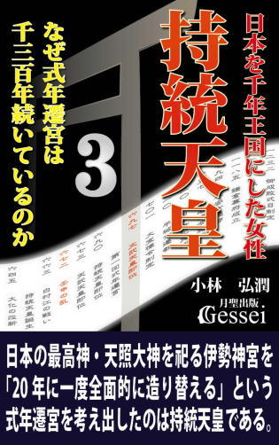
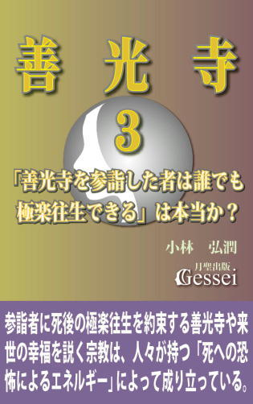
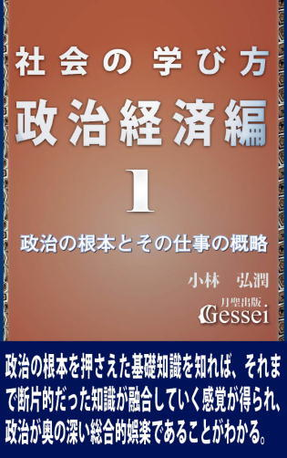
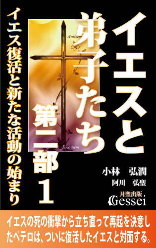
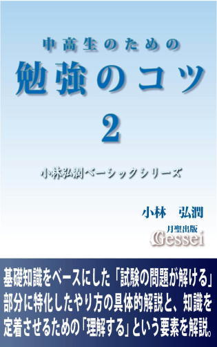
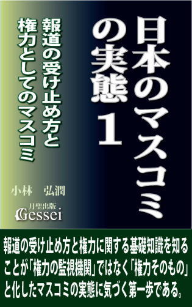
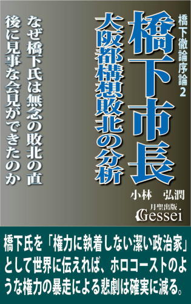
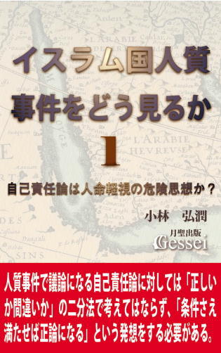

| 社会の学び方・世界史編２: 儒教国家中国とイスラム教国家の興亡（月聖出版） | |
| 小林弘潤 | |
| Gessei Shuppan (2014) | |
社会の学び方・世界史編２
儒教国家中国とイスラム教国家の興亡
小林弘潤
※更新履歴
2015/11/5 1.1版 ・Kindle用目次追加
※著者ツイッターで、「本の価格を上げる場合の時期」等の情報を発信しています。ご興味ある方はどうぞ（携帯からも読めます）。
まえがき ～欧米諸国が世界をリードする前の1000年ほどの時代で世界のトップの地位を争っていたのは、中国とイスラム教諸国である
学校の授業に「道徳」という科目があるように、日本では昔から「徳」という概念が重要視され、理想的人間や目標とすべき人間像に対して「徳ある人」という言い方がされてきたと言えます。
この「徳」という概念の出所は古代中国の思想（キリスト教、仏教、イスラム教と並ぶ根本思想の一つ）である儒教にあると言えますが、中国の歴史を作ってきた漢、魏、隋、唐、宋、元、明、清などの歴代王朝はこの「徳ある人（その一族）が天命を受けて中国を統治できる」という儒教的な有徳者王思想をベースに政権を握ってきた（前王朝を倒して新たな王朝を開く際の大義名分にしてきた）という言い方ができます。
有徳者王思想というのは「中国という広大な領土を統治する一番の条件は徳があることで、徳のない人（一族）は皇帝になれず中国を統治できない」という考え方と言えますが、私は学校の授業や中国史について書かれた文献などでこうした知識を学んだ際「何か違うのではないか......」という違和感を覚えていたものです。
というのも、中国の王朝や皇帝の中には「徳ある人」には見えない人が多いからです。歴代皇帝の中には人民に過酷な徴税義務を負わせたり部下の大量粛清をするなど、相当ひどいことをやっている人物も少なくないため、中国史を知れば知るほど「中国の統治原理は『徳ある人が皇帝になれる』という有徳者王思想にあるというが、なぜ中国では、こんな理想と現実が乖離した状況が延々と続いてきたのだろう？」という疑問を持っていたものです。
そうした疑問が解決したのは『社会の学び方・世界史編１』で紹介した「思想の権威化」という視点に気づき、「儒教が権威化したことでその中にある有徳者王思想が悪用され、新興勢力に前王朝を倒すための大義名分として使われたのだ」という思いになったことにあります。
その典型例がこの本の５で紹介した、漢から魏への王朝交代の際に見られた「形だけの禅譲」の話で、私はこれを知った時に「徳の重要性を説いた儒教の教えが見事に権力者に悪用されている......」という思いになったことを覚えています。現代の政治家や政党の中でも「徳ある人がトップに立つのが理想である以上、政治制度を（今の選挙型民主主義ではなく）徳を重視したものに変革していくべきだ」という主張をするところがありますが、私などは「そうした理想論を言う前に、有徳者王思想が権力者に悪用された中国の王朝交代の歴史を見てみる必要があるんじゃないかな」という思いになります。
あと、現代の「ヨーロッパやアメリカという欧米諸国が世界のトップに立つ国際秩序」の中に生きている私たちはつい「世界の中心はいつも欧米だったのだろう」と思いがちになりますが、現実には欧米諸国が世界をリードしたのはここ2～300年の間だけで、それ以前の1000年ほどの時代で世界のトップの地位を争っていたのは「中国とイスラム教諸国だった」と言えます（当時のヨーロッパなど、中国やイスラム諸国と比べると文明が発達していない辺境の田舎でしかなかった）。
こう言いますと「なぜ中国とイスラム諸国が世界のトップでいられたのか？」という疑問が出てくると言えますが、同時に「なぜ以前は世界のトップだった中国とイスラム諸国が、勢力を衰退させて欧米に支配されるようになってしまったのか？」ということも興味深いテーマになると思います。
この『社会の学び方・世界史編２』では、そうした「かつての世界のトップ」であり、欧米などよりもはるかに「先進国」として高度な文明を誇っていた中国とイスラム教国家の興亡を概括してみたいと思います。高校の世界史で習う知識や用語をベースにしながら、様々な出来事のつながりがわかる記述を心がけてみましたので、読んでいく中で「歴史の流れが生き物のように見えてくる」という感覚が味わえると思います。
1 歴史の流れを理解するために必要な「なぜ小さかった国家が大きくなったのか」という視点
歴史の流れを理解するために必要な基礎知識として、『社会の学び方・日本史編１』でも『世界史編１』でも様々な知識を紹介してきましたが、考えれば考えるほど「まだまだ足りない」という思いが出てきます。
『日本史編』を書いていた時は「この程度の知識を紹介すれば日本史の流れはかなり理解できるようになるだろう」という感触を持ったものですが、今となっては「この本で紹介した基礎知識だけでは、日本という国の変遷が生き物のように感じられるところまで行っていない」という思いになります。この『世界史編』で紹介する基礎知識を合わせたものでも「歴史が本当に理解できる知識」としてはまだ抜けているものもあると思いますが、何とか歴史の流れや国家の興亡が生き物のように感じられるところまでは持っていきたいと思っています。
まだ明確な形で紹介していない基礎知識として、「国とは何か」というものがあります。「国家」という言葉の意味を辞書で引いてみますと、「一定の領土とその住民を治める政治組織を持つ社会」というような答えが出てきますが、こうした説明を覚えただけで「これで国とは何か、という問いに答えられる」と思うのは早計です。「国」や「国家」という概念については様々な側面からのアプローチが可能で、「政治」「権力」「経済」「思想」「技術的要素」だけではなく、「地形」「気候」「風土」「文化」「人間心理」などの幅広い分野の知識を駆使しないと本当の意味での理解はできないと思います。
世界のどの地域であっても、最初から大きな国が広い地域を統治していたわけではなく、最初は小さかった国が様々な事情で大きくなっていったと言えます（もちろん、大きくなった国であっても後に分裂して小さくなることもよくあるが）。政治の必要性というのは人間が生きている限りどんな地域でもあるので、原始の時代はごく小さな国があちこちに分立している状態だったことが推測でき、「そうした小さな国々が次第に大きな国としてまとまっていった」という過程がどの地域でもあったはずです。そこで考えてもらいたいのは、「なぜ最初は小さかった国家が、次第に統合されて大きな国家になっていったのか」という視点です。
近代国家に生きている私たちの場合、「国家というのは最初から広い地域にわたった統治を行っているものだ」という認識が当たり前になってしまうため、このことに関する問題意識は非常に低いと言えます。ただ、元々小さかったものが大きくなることは自然の成り行きではありえず、歴史を生きてきた人々の「自分たちの国を大きくしようという意思と働き」が必ず存在するものです。
歴史や国家を作ったのが「人」である以上、この「なぜ小さかった国家が大きくなったのか」という意識を持って歴史の出来事を見ていくことも、歴史の流れを理解するための大事な要素になると思います。
こうした「小さかった国が大きくなる過程」としては、「合意の元にまとまる合併」だけでなく「軍事力による侵略」という側面もあり、どちらかというと侵略によって国が大きくなる方が多いのでは、という気がします。この「侵略」という言葉を聞くと「独裁」「圧政、暴政」と同じような「横暴な権力者が一方的に弱い民衆を苦しめる」というイメージを抱きやすいと思いますが、国が大きくなる過程というのは必ずしも「為政者側からの事情」だけでなく「民衆側からの事情」もある、というのが公平な見方だと思います。
そうした「民衆側からの事情」ということを簡単に言いますと、大きな国家になった方が自分たちの利益が大きくなることが明確にイメージできた時、と言うことができます。その代表例として「小さな国が分立していると日本の戦国時代のように戦乱が起きやすいため、一つの国によって統合された方が平和になる場合」をあげることができますが、こうした「統一国家の出現を待望する声」が高まった場合は、統一のための侵略行為を支持する世論さえ生まれる可能性があります。つまり、侵略という行為は「権力欲に取り憑かれた為政者が民衆の意向を無視して一方的に行われる」だけでなく、「民衆側がそれを望み、民衆の支持を受けて行われることもある」ということです。
こうした「国が大きくなっていく過程や理由」についての詳しい話はそれぞれの文明の記述において順次紹介していくつもりですが、ここでは「国家が大きくなるのは権力者の一方的な都合だけでなく、民衆側の思惑が絡むこともある」ということだけ意識してもらえれば、と思います。
ここで、「地域ごとの国としてのまとまり」という観点について触れてみたいと思います。日本の場合、長い歴史の中では戦国時代という分裂の時代はありながらも、「他の時代は比較的一つの国としてまとまっていた」というイメージが強いと思います。細かいことを言えば、「律令体制確立以前は地方豪族の力が強くて分裂していた」「平安時代中期からは無政府状態だったので国としてまとまっていたわけではなかった」「鎌倉～室町時代は幕府と朝廷の勢力が併存していたので統一されていたとは言えない」などの観点が出てきますが、大ざっぱなイメージとしては「日本という地域が一つの国としてまとまっていたことが多かった」という感じになると思います。
とはいえ、日本の場合は世界の他の地域に比べると面積的に狭い分まとまりやすいと言えます。これを他の地域で考えてみますと、ヨーロッパの場合は「ローマ帝国時代は一つの国家としてまとまっていたが、やがて分裂して様々な国が分立している状態が続いていく」というイメージになると思いますし、イスラム世界の場合でも「イスラム帝国が勢力を拡張した初期は広い地域が一つの国としてまとまっていたが、近代は分裂して分立状態が続いている」というイメージが出やすいものです。さらにアメリカ合衆国の場合は、「建国時は小さかったが次第に拡張し、その後はずっと大国としてまとまっている」イメージが出てきますが、同時に「歴史は浅い」と言えます。
そうした中、「歴史上、かなり長い時期にわたって広大な地域がまとまっていた」というイメージが出てくるのが中国だと思います。
もちろん中国にも小国が分立していた時代は何度もあり、古代では「春秋・戦国時代」という分裂時代があったと言えます。これに関しては日本の「戦国時代」の印象を当てはめて、「中国でも日本と同じように小国同士が争っていたんだろう」というイメージになりやすいと思いますが、よく考えてみると日本と中国では元々の面積がまったく違うので、「日本の分立国家と中国の分立国家では規模が全然違う」という認識を持った方がいいと思います。
例えば、中国の戦国時代では「戦国の七雄」と呼ばれる７つの国が争っていましたが、比較的小さな「斉」という国でも韓国ぐらいの面積があったようですし、一番大きな「楚」という国の場合は日本全土がすっぽり入ってしまうくらいの広大な領土を持っていたようです（目分量なので正確な数字は知りませんが）。ともあれ、中国の場合は「分立国家の一つ」であっても、広大な領土と多くの民衆を抱えたかなり大きな国家だったということです。
中国の古代にはそれだけの大きな国家が既にあったにもかかわらず、その後で戦国の七雄の一つであった「秦」がそれらの国々を侵略・併合して巨大な統一国家を作り上げてしまいます。このことについて世界史の教科書には「春秋・戦国という分裂時代の後、秦が他国を征服して中国は統一されました」という知識しか書かれていないので、学校の授業で習っても何の感嘆もなく「そういうものなんだ」という認識で終わってしまうのが普通だと思います。そこで指摘したいのは「広大な地域を一つの国でまとめる、ということは現実問題としては簡単なことではない」ということです。
統治というのは「王や皇帝がいばって家来に命令したり、王宮でぜいたくな生活を送る」だけで済むわけではなく、その国には数多くの民衆が住んでおり、彼らがよりよく生きるために必要な行為を常に行わなければなりません。法律作りとその整備、裁判の執行、警察制度の整備、他国との外交、他国からの侵略に備えたりするための軍隊の運営、そしてそうした「行政」の仕事を円滑に行うための政治体制作り、そうした行政などに関わる官僚や役人の仕事が効率的に進められるための環境作り、それら官の仕事を成り立たせるための民衆からの租税徴収とその調整、そして民衆が生きるために必要な経済活動に必要な経済政策など、やるべきことは多岐に渡ります。
こうした「広大な地域を統治する」ということは、昔と比べて交通や通信技術が格段に進歩した現代でも困難を極めるのに、そうした技術が未熟だった古代の時代に「中国全域という広大な地域にわたる巨大国家の建設に成功した」という事実は、十分感嘆と驚愕に値する出来事だと思います。
古代中国においては秦による統一以前にも「殷」「周」という統一国家の名前が出てきますが、これらの国の支配領域は中国全域ではなく、しかも「その内部にある都市や小国を緩やかに結合するだけの統治形態だった」と言われています。
この「統治形態」というものは「中央政府と地方政府の力関係」という視点で見ることができ、中央政府の力が大きいと「中央集権型」「強力な統治」、地方の力が大きい場合は「地方分権型」「緩やかな統治」ということになります。具体例として、日本の「鎌倉幕府」「江戸幕府」「明治政府」の３者を考えた場合、鎌倉幕府の統制力は大きくなかったので鎌倉時代の頃は「緩やかな統治」でしたが、それに比べて江戸時代は江戸幕府という中央政府の統制力がかなり増したと言えます。ただ、それでも江戸時代で租税徴収権を持っていたのは、幕府ではなく行政単位の一つである藩だったことから、「徴収した全国の租税を一度中央政府に集め、それを各県に分配していた明治政府」の方が中央集権度は高かった、と言うことができます。
こうした類型に古代中国の統一国家を当てはめた場合、殷や周は鎌倉幕府タイプの「緩やかな統治形態」になりますが、秦の場合は明治政府タイプの「中央集権度がかなり高い統治形態」を持っていたと言うことができます。そこでここから、古代の時代になぜそれだけの「政府の力が強い中央集権国家」が生まれたのか、ということを考えてみたいと思います。
2 中国が持つ「政治の比重の高さ」が古代における中央集権的統一帝国・秦の勃興を生んだ
古代中国においてそれだけ強力な統治形態を持った巨大国家が出現した背景として、当時の中国の状況を見ていく必要があります。そこで言っておきたいのは、中国という地域は古代から「大きな政治の力が必要だ」という人々の意識が生まれやすい環境があった、ということです。
まず、当時の中国は農業に適した肥沃な大地が広がっていた華北に文明の中心があり、人々は黄河の水を利用して農業生産を行っていましたが、この黄河には「氾濫を起こしやすい」という特徴がありました。氾濫が起こって田畑が水浸しになればせっかく育てた農作物がダメになってしまうので、「治水対策が成功するかどうか」が食糧という価値を増やすか減らすかの分かれ目と言えるわけです。そのために黄河の治水は古代からの政治における最大の課題となり、治水に成功すれば「社会全体の仕事の中で政治の力の比重が高くなる」という状況が生まれていたのです。
古代中国の伝説の君主として「黄帝」「堯」「舜」「禹」などの名前が出てきますが、殷の前に夏王朝を開いたとされる「禹」という王は、黄河の氾濫で荒廃した中国の土地を人間が住めるように造り上げたという功績によって、中国における伝説の君主の一人という位置づけになっています。
そして、中国における政治の比重の高さにもう一つ大きな影響を及ぼしたのが、「北方の遊牧民族の侵略を受けやすかった」という状況です。「遊牧民族」というのは定住して農業を営む「農耕民族」と違って農業生産の増大が難しいので文明度が高くならない傾向があり、そのために様々な技術を開発して価値を増大させている農耕民族へのあこがれを持っていたようです。
それでいて、彼らは常に過酷な環境を生き抜いているので精神力が強くて軍事力も強大であるため、「文明度の高い農耕民族を攻撃して豊かな物資を略奪する」という行為に出ることが多かったのです。そうした遊牧民族から侵略や略奪を受けて「せっかく苦労して作った富がまるごと強奪されてしまう」ことがありますと、人々の間に「政府の軍事力が高くなることで侵略に対抗できるなら、少しぐらい税負担が重くなっても構わない」という意識が生まれてきます。
こうした「大河の氾濫という大自然の猛威への対策」や「強大な勢力による侵略からの防衛」というものは、個人や小集団の力では不可能なので人は政治の力を必要とし、それによって「国を大きくして政治の力を増大させて欲しい」という意識が社会全体に高まるようになるのです。
こうした状況で中国は「春秋・戦国時代」という分裂時代に入りますが、この時期になると様々な技術が進歩していきます。鉄製農具の普及、牛耕の開始、灌漑技術の進歩などがあって生産性は徐々に向上していき、そうした技術の進歩と政治体制の変革による効率化がかみ合うとそれを統治する国家の力は増大していきます。それによって国力を伸ばした国が他の小国を次々と併呑して勢力を拡張し、戦国時代には「７つの分立国家による覇権争い」という状況が生まれていたのです。
小国の分立状態になると必ず戦乱が激しくなるとは言えませんが、こうした「急速に勃興して勢いのある国同士が国境を接する」という状況の場合、さらに勢力を拡張するために、持っているエネルギーを軍事力増大に向けるという事態が起こりやすく、戦乱が泥沼化して長く続くことにもなってしまいます。戦乱が頻発すれば平和を待望する空気が生まれ、それによって「複数の国による分立ではなく、一つの国による統一状態を」という声が高まっていくのです。
ここで登場するのが、「戦国の七雄」の中で初期の頃は一番国力が弱いとみなされていた「秦」です。後に「始皇帝」と名を改めることになる秦王・政は、塩分の多い土地を農地に変える土木工事、巨大な運河を開削するなどの水利事業などを行って自国の農業生産を増やし、国力を増大させます。それによる経済力で政治改革を行い、法治主義を徹底させて行政の効率化を進め、それによって生まれた強大な軍事力で戦国の七雄のうちの他の６国を征服し、中国の統一を実現させます。
始皇帝の統治の特徴は「中央集権的統治と法治主義の徹底」にありますが、中央集権のしくみとして始皇帝が行ったのが「郡県制」です。この制度と対比されるのが地方分権的な「封建制」ですが、封建制の場合は「地方の統治は各国の豪族に任せ、その後継人事は中央政府が決めるのではなくその一族の世襲による」という形だったのに対し、郡県制では「中央から派遣された官僚が地方を支配し、その人事権をすべて中央が掌握する」というものだったと言えます。
人事権をすべて掌握するということは、「地方統治に赴任した官僚が中央政府の意向に逆らったらすぐクビにして新しい官僚と交代できる」ということであり、こうなると官僚の方も「政府の言うことを聞かないといけない」という意識になるため、これによって中央政府が全国の隅々まで思い通りの統治を行うことが可能になるのです。
さらに始皇帝は「統一」ということを「国家の統一」だけでなく様々な分野で行います。そこで指摘したいのは、「ふさわしい状況で統一ルールを作ると労力の軽減による価値が生まれる」ことです。
例えば「暦」というものを考えた場合、「アメリカの９・11テロが起きたのは西暦２００１年」と覚えれば、この２００１年という年が世界中で通じます。それに対して、もし日本が西暦という暦を一切使わずに日本独自の紀元を元にした暦を使っていたらかなりの労力がかかってしまいます。実際に昔はそうした日本独自の暦である「皇紀」があり、それに当てはめると９・11テロは「皇紀２６６２年」になるようですが、世界各国の人に「９・11テロは皇紀２６６２年」と言っても共通認識が得られないので、他国の人と話をするたびに「皇紀元年が紀元前６６０年だから、皇紀２６６２年を西暦にすると......」と考えなければならなくなり、かなりの労力がかかるものです。
始皇帝は、「文字、通貨、度量衡、車幅の統一」などの統一政策を行います。この中の「度量衡」というのは長さと容積と重さの単位で、これが統一される前は現代で使われるメートルやリットルのような共通した単位がない状態であり、「統一すればかなりの労力が軽減される」という判断があったことが推測できます。「（馬車の）車幅の統一」というのは現代ではその必要性がわかりにくいですが、当時は道路が舗装されておらず馬車の車輪の跡が深い溝になるので、車幅がバラバラだと輸送の速さや渋滞の程度にすら影響したのだと思います。
政策としては他にも、「道路や通信制度の整備」「遊牧民族からの防衛のための万里の長城の修築」「大宮殿や巨大陵墓の建設」などがあげられますが、秦帝国はこれらの政策を矢継ぎ早に行ったため、民衆の負担は相当なものになってしまいます。
統一ルールを作ると労力が軽減されるということは、あくまで「時間が経って統一ルールが浸透した後」での話で、統一された通貨や馬車を新しく作るのにはお金がかかりますし、ルールが浸透するまでは混乱が生じるので初期の頃はかえって労力が増大すると言えます。そこで生じる経済的負担や混乱はすべて民衆の負担となるだけでなく、「万里の長城修築、大宮殿・巨大陵墓等の建設による使役、外征などでの軍役」も課され、さらには徹底した法治主義による厳罰傾向も重なり、民衆は過酷な支配に耐えかねるようになっていきます。
秦帝国はわずか15年で崩壊しますが、その原因はこうした「過酷な支配による不満の爆発」という要素だけでなく、秦が誇った徹底した法治主義が「現実に合わない無茶な押しつけと化した」という事情もあったようです。
中国統一以前の秦は民衆に「国境警備のため１年に３日軍役に服す義務」を課しており、「期限に遅れると死刑」という規定すらあったようです。秦は統一後もこの法律をそのまま施行させましたが、統一前の小国という範囲においては何とか運用できても、統一後の広大な領域で適用させるのは最初から無理があったと言えます。
河南地方に住む陳勝という男がはるか遠くの万里の長城までの軍役に出かけたところ、途中で思わぬ長雨に遭って到着期限に間に合わないことが判明します。その時に彼が「同じ死ぬなら反乱を起こした方がまし」という思いになったことで「陳勝・呉広の乱」が起こり、これがきっかけになって秦帝国は崩壊することになります。様々な統一政策を行った始皇帝であっても、「民衆の心までは統一することができなかった」という気がします。
3 秦の社会インフラを受け継いで政権基盤を固め、長期の中国統治に成功した漢帝国の興亡
政治体制が変わって新しい社会システムが構築されようとする時や、政府が大きな改革を志している時というのは、新しいものを様々に作らねばならないのでかなりのお金や労力がかかります。そのためには民衆からの徴税や労役を重くするのが普通ですが、ここで民衆の不満を統制できればその後は先行投資したインフラが機能していくので、最初は重かった税負担を軽くすることができます。
民衆としては「税負担を軽くしてくれる政府」というのは大歓迎なのでその王朝や政権への支持が高まり、政権基盤が安定して長く続く政府になる可能性が高くなります。この典型例が日本の江戸幕府で、初期の頃は「五公五民」（収穫の５割が年貢として徴収される）というかなり重い税負担を民衆に要求しながらも、その時期の不満を統制するのに成功したのでその後は税率を下げることができ、江戸幕府は長く続くことになります。
重税と言うと「一概に悪いもの」というイメージが出てくると思いますが、「権力者の堕落や間違った政策から生まれる過酷な重税」だけでなく、「先行投資のためのやむを得ない重税」というものもあると言えます。ただ、このどちらであるかを判断するのは政治の専門知識が必要なので、現代のような民衆が政治に参加できる状況でもない限り一般の民衆には無理、という感じがします。
そのため、実際は「やむを得ない重税」であっても民衆は過酷な負担という意識しか持てず不満を高めてしまい、政府がそうした不満を統制できればその政府は長続きしますが、統制できなければ暴動や反乱が起こって短命政権で終わることになります。秦だけでなく、後に中国を統一した「隋」が短命政権で終わったのはこの辺に要因があると思います（ただ、秦や隋が民衆に課した重税や労役は「やむを得ない負担ではなく過酷なものだった」という雰囲気を感じる。ちなみに、私は最近の日本で行われている消費税増税も「財務省という権力者の傲慢と堕落によって生まれた過酷な重税」だと思っている）。
さらにこういうことも言えます。インフラ整備が終わった後で反乱が起こってその政権が倒れた場合、その後にできた新しい政権はそのインフラを活用できるので「その分の重税を課す必要がなくなる」ということです。秦の後にできた「漢」、隋の後にできた「唐」は、前王朝が作ってくれたインフラ（万里の長城と大運河はその象徴）をまるまる活用できたので、その分民衆に重税を課す必要がなくなり、それによって民衆の支持を得て政権基盤が安定した、ということが言えます。実際に漢と唐はかなりの長期政権として存続しています（両方とも途中で断絶はあったが）。
漢帝国を作った劉邦（高祖）という人物は、「秦の過酷な法を廃し、罰するのは殺人、傷害、盗みの三条のみ」という宣言に代表されるように「民衆に寛容な政策を行った優しい統治者」というイメージがあります。ただ、こうしたことは彼が優しい性格だったからというより、「この方が民衆の支持が得られるという政治判断があった」という可能性が高いと思います。
秦だけでなく、一時期権力を握ったライバルの項羽が過酷な統治を行ったため、秦が崩壊した頃の中国では、その逆の寛容政策を行えば民衆の支持が一気に集まる状況ができていたと言えます。個人的には、「劉邦は自らの政権基盤を固めるために秦や項羽を利用しようとしていた」という感じさえしますが、この解釈は決して統治者としての劉邦をけなしているのではなく、「高度な政治判断ができる有能な統治者だった」という気持ちを込めているつもりです。
逆に始皇帝としては「自分たちが苦労して作った万里の長城や統一政策、そして道路などの社会インフラをまるまる漢に奪われてしまった」ことになるので、あの世から「これでは自分は劉邦の引き立て役ではないか！」という不満も聞こえてきそうな事態と言えます。ただ、これが「政治」というものが持つ一つの側面だと思います。
劉邦の統治者としての力量は、全国統治のやり方にも表れています。漢は秦の郡県制を継承せず、周王朝の統治のしくみだった封建制を一部で復活させます。「封建制は時代錯誤」という声も出たようですが、ここにも劉邦の政治判断があったと言えます。
陳勝・呉広の乱のきっかけの一つに「現実に合わない法律の押しつけ」があったと言えますが、中国全域という広大な地域の実情に合った法律がすぐに整備できるわけではないので、漢の初期の頃は秦の法律をそのまま使うしかなかったようです。しかし、「はるか遠くの軍役に遅れても死刑に処す」というような規定が残っている以上、また同じような反乱が起こる可能性があるため、法律の適用範囲を狭めることで現実に合わせようという判断が働いたのではないかと思います。それは、漢が郡県制で直接支配するのは一部だけに留め、他の地方には封建制と同じように自分の部下を諸侯として封じてそれぞれのやり方で支配させる、ということです。
この「郡県制と封建制を併用した統治のしくみ」は郡国制と呼ばれますが、やがて劉邦は地方に封じた諸侯が強大化して中央の統制力が及ばなくなることを警戒し、先手を打ちます。かつて漢が天下を取るために活躍した部下である諸侯を謀略などで取り潰し、代わって自分の一族を諸侯に封じます。それだけではなく、中央から官僚を諸侯の顧問として送り込み、諸侯の政治を監督させて中央の統制下に置こうとします。時代が下ると地方の諸侯が呉楚七国の乱という反乱を起こしたもののそれも平定され、武帝の頃になると秦の郡県制と代わらない中央集権支配ができるようになったのです。
漢帝国七代皇帝・武帝の時代は中国全土に経済的な余裕が生まれ、政府の国庫にも財産である物資がかなり貯まっていたようです。こうした財産の蓄積はいいことのように見えますが、経済的に見ると皆が自分の財産を出し惜しみして富が社会に流通しない状況では経済の停滞を招くことがあります。漢政府の官僚の中にも「もっと政府の富を流通させて経済を活性化すべきだ」という意見があり、その手段は周囲の国に侵攻して領土を拡張させることでした。武帝の軍事力による対外拡張政策はこうした時代状況で行われたと言えますが、その政策の一つである「北方遊牧民族・匈奴への侵攻」においては別の事情もあったようです。
匈奴は秦・漢の時代に強大な勢力を誇っていた遊牧民族で、「北海道から九州までの距離を持つ巨大防壁」である万里の長城でも防ぎきれないところがあったようです。漢は初期にも匈奴の侵略を受け、劉邦自らが出陣して戦ったものの大敗し、「毎年多大の黄金を貢ぐ」という屈辱的な講和条約を結ばなければなりませんでした。その後の漢政府も匈奴を刺激せず従順な姿勢を取り続けていたものの、武帝は国力の充実したこの時期を「高祖以来の屈辱を晴らす時だ」と考え、匈奴に対して積極的な侵攻政策に打って出たのです。しかしこの匈奴との戦いは容易に決着がつかず、予想外の長期戦の様相を帯びていきます。
この時期の中国の地図を見ますと、漢の領土の中に「華北から西へ不自然なほど長く突き出している部分」が目につきますが、この部分は西アジアからインドに至るまでの交通路で、西の国々との貿易を円滑に行うための要所である西域と呼ばれる地域でした（それより南の地域には山脈がそびえているので交通路にはできなかった）。
この西域が漢の領土になったきっかけは、武帝が匈奴との戦いを有利にするために「西域の月氏国と同盟を結んで匈奴を挟み撃ちにする」という戦略を立て、その使者として張騫を西域に派遣したことにあったようです。月氏国は既に匈奴と戦う意思がなかったのでその戦略は実現しなかったようですが、それまでほとんど知られていなかった西域諸国についての情報は武帝の関心を惹き、この地域にも軍を送って漢の領土に加え、それによって西方諸国との貿易を盛んにさせます。
ただ、匈奴との戦いがかなり長期に及んだこともあり（張騫が帰国したのは出発してから13年後だったが、武帝はこの時期になっても匈奴に対する有効な戦略を探していた雰囲気がある）、初期には余裕があった国家財政が次第に厳しくなっていきます。
どんなに豊かな国であっても、軍事行動が長期にわたると経済力の低下を招いてしまうものです。武帝は様々な経済政策を行って国庫を立て直そうとしますが、彼の後の時代になると国全体の経済が次第に停滞していきます。
中国全土が不景気に陥っていく中、皇帝の外戚（皇后や側室の一族で、日本の藤原氏と同じように君主に代わって政治の実権を持つこともあった）だった王莽が実権だけでなく形としても帝位を簒奪し、自ら皇帝となって漢とは違う別の王朝（新）を作ります。
しかし王莽の政策は民衆の不満を爆発させる結果を生んで王朝はすぐに滅び、やがて漢の皇族の一人・劉秀が混乱を収拾して漢王朝（後漢）を復興させます。こうした「王朝が一度断絶し、その後復興する」ことは日本人にとっては非常にわかりにくいと言いますか、不思議な現象という感じがすると思います。
中学の歴史では「漢は三国時代まで約４００年の間ずっと続いた」という知識として教えられますが、私としても中学の授業でそう習ったのでしばらくの間は「漢は４００年続いた」と思っていたものです。それが高校の世界史では「正確には漢は一度王莽による簒奪で滅び、やがて後漢として復興した」という知識として出てきたので、「そんなことあるのか？」と驚いたことを覚えています。
王莽が漢から帝位を簒奪したのは、権力欲のためではなく「停滞する社会を立て直し、理想の政治を実現しようとする情熱のため」という印象があります。彼は若い頃から儒教思想を学んで生活にも実践していたようで、外戚による実権だけでは飽きたらずに簒奪して帝位を奪うという行動を起こしたのも「正式の皇帝にならないと改革者としての自分を民衆は信用しないと思っていたから」と言われています。
しかし、理想による情熱が突出して現実を冷静に見ることができない人間というものは、理想へのこだわりが強いほど「理想と現実のギャップ」が大きな失望になりやすいものです。失敗が続くとますます冷静さを失って苦しみを蓄積させ、「信じても裏切られることによる失望の蓄積により、一転して人間不信を生む」ことと同じプロセスをたどることが多いと言えます。
王莽は理想にこだわるあまり「現実を無視した復古的な政策」しか実施できず、彼が願った「理想の政治による国力の復興」とはまったく逆の、「民衆や豪族による反乱を招いて殺される」という結果が待っていました。
ただ、こうした事例に接しますと「理想を持ったり情熱的になるのはよくないから、理想は持たないがいい」というような単純な発想になりやすいですが、大事なことは「理想と現実を両立させること」だと思います。特に政治という分野においては「理想と現実を両立させ、情熱を失わずに現実を直視する冷静さも保ち続ける」ということは非常に難しいところがありますが、様々なやり方を工夫すれば決して不可能なことではないと思います。
4 交易と経済の知識「商品が交易路発達を促す」「貨幣不足が経済の停滞を招く」について
ここで、当時の社会状況を踏まえた「交易と経済」に関する知識を紹介してみたいと思います。
近代以降、世界的なスポーツの祭典として定着した近代オリンピックでは、競技ごとで上位の成績を獲得した人たちにそれぞれ金、銀、銅のメダルを贈ることが決まっていますが、これは「価値ある金属の順番が金、銀、銅になることは世界共通の価値観」であることを示しています。
そして同時に「金、銀、銅の順番」や「金が価値ある物質」という認識は、近現代だけの価値観ではなく「太古の昔から現代まで一貫して続いてきた価値観」と言うことができます。「天下を握って財産家になった豊臣秀吉が大坂城に貯め込んでいたものは何か？」という質問があった場合、知らない人でも「金」という答えを出すのは難しくないと思います。
ただ、『社会の学び方・世界史編１』で「価値の高さは状況によって変わっていく」という知識を紹介したように、物質の中には「昔は価値が高かったが、現代はあまり価値が高くない物質」もあります。その代表例がヨーロッパの大航海時代で出てくる香辛料で、現代では「俺は金貨や銀貨をたくさん持っているんだぜ」と言えば自慢になりますが、「俺は香辛料をたくさん持っているんだぜ」と言っても何の自慢にもならないと言えます。
こうした昔と比べて価値が低下した物質の場合、「香辛料」というような物質名が出てもそれに対して当時の人々が認識していたイメージがつかみにくいところがあります。仮に「秀吉が大坂城に香辛料を貯め込んでいた」という史実があった場合でも、「何か様にならないな」という感じがすると思います（実際はこういう史実はないようだが）。それは、「香辛料＝価値ある物質」という認識をするのが現代では難しいからです。
そして、香辛料と同じように、昔と比べて価値が低下したため、価値ある物質という認識が難しいものに「絹（絹織物）」があります。中国から西アジアを結ぶ交通路にシルクロード（絹の道）という名前がつけられたのは、「交易品として絹の比重が高かった」ことを意味しますが、当時この絹という物質には金以上の高い価値がついたこともあったのです。
それは、中国の絹がはるか遠くのローマ帝国にまで流通して売られていたことからわかります。現代のような飛行機や自動車や高性能の船のような交通手段がない時代において、中国からローマという途方もない距離にわたって商品を運搬するには大変な労力と時間がかかります。運搬に労力がかかるということは当然「高い流通費が商品の値段に反映される」ため、ローマで売られていた絹はかなり高額なものになっていたことが推測できます。つまり「それだけ高い値段でも売れるほど、絹の価値は高かった」ということです。
絹の購買層は主にローマの富裕な婦人たちだったようですが、彼女らが我先にと高価な絹の衣服を買い求めたため、絹の消費量が増えて対価としての金が大量に流出してしまい、絹の使用禁止令を出したローマ皇帝もいたようです。
こうした絹の話から交易や経済に関する様々な知識を読み取ることができますが、ここでは「魅力的な商品が交易路発達を促す」ということを指摘しておきたいと思います。
このことはちょうど、現代の「テレビゲームのソフトとハードの関係」に似ているところがあると思います。「ハードとしてのゲーム機が売れるかどうかはソフトにかかっている」とか、「人気ソフトが持つ魅力によってハードの性能が進化する」ということがよく言われますが、中国からローマへの交易路の開拓と発達ということも、絹などの魅力的な交易品がなければ進まなかった、という言い方ができると思います。
ただ、ここでも「価値の高さは状況によって変わる」という視点で見る必要があります。というのも、絹は当時のローマでは高額で売れたものの、中国周辺の地域ではそれほど高い値がつかなかった可能性があるからです。それは、後漢時代の中国では「金が他国へ流出し、国内の金が不足する」という現象が起きていたからです。
こうした「金が流出して国内が金不足になる」ことは、交易と経済のそれぞれの側面から見ていく必要があります。この場合の金は「貨幣としての金」という意味になりますが、貨幣が他国へ流出することは「他国の物資を買っている（輸入している）」ために生じます。交易である以上「輸入だけでなく輸出もしている」ので、結局金が流出していたということは「輸出よりも輸入が多くなっていた」ことを意味するのです。
こうした「輸入超過」は最初からそうだったわけではなく、前漢時代は中国からの輸出品に高い値がついて貨幣として大量の金が入ってきたため、中国は〝金あまり状態〟だったようです。ところが、西域ルートの交易が盛んになるにつれて西方から馬、宝石、工芸品などが輸入されるようになり、後漢時代はこれらの輸入額に対して絹などの輸出額が及ばなくなっていたのです（ただ、輸入超過になったのは絹が高値で売れず輸出額が上がらなかったわけではなく、輸入額が急激に増えたという可能性もあるよう）。
そこで次に、「金が流出して中国内が金不足になったことで中国経済がどうなったか」について述べてみたいと思います。
まず言えることは、数が減ったために金に稀少価値が生じることです。例えば、稀少になったことで金の価値が２倍になりますと、それまで１枚１万円として流通していた金貨に「１枚２万円の価値がつく」ことになり、金貨１枚手に入れるのにそれまでの２倍の物資が必要という現象が生じます。ここで、民衆が国家に支払う徴税の規定が「毎月必ず金貨１枚を払うべし。物資で払ってはいけない」というものだったとしますと、毎月の税金を払うためにそれまでの２倍の物資を確保しなければならなくなります。
当時の後漢政府は、金ではなく銅銭による徴税を行っていましたが、金が不足したことで全体的に貨幣流通が停滞して銅銭の流通も滞っていたようです。つまり、金不足によって税負担が重くなり、民衆の生活が苦しくなる状況になっていたのです。
こうした貨幣流通の停滞によってその後の中国経済は、一部の裕福な豪族が行う自給自足経済が進む状況になったようです（宮崎市定『大唐帝国』河出書房新社、「谷間の時代」参照）。豪族は荘園を広げて自分の領地内に様々なものを生産し、自分の領地で物資をまかなうようになります。市場に出されるのは残りものだけなので、物資のやり取りの機会が極端に減少してしまったのです。
貨幣というものは「どんどん流れていく状況」にならないと物資の流通が停滞するので、それによって経済活動が停滞すれば社会全体の価値も低下してしまいます。「１円の価値しかなかった水が、ふさわしい状況を見つけて経済活動を行えば１００万円の価値になる」こともあるように、物資やサービスというものは「状況が変われば価値が増大する」ところがあります。ところが、自給自足を進めて経済活動を行わないことは「価値の増大の機会をなくす」ことに通じてしまうのです。
また、後漢時代の経済の停滞の要因としてもう一つ指摘したいのは「収穫逓減による価値の実感度の低下」という視点です。価値というものは一人一人の実感によって決まるものですが、最初は価値の実感度が高くても時間が経って慣れてくると収穫逓減の法則が働くので、価値の実感度が落ちていくという現象が生じます（詳細は紙の本『人間関係のコツ・パート２』第四章参照）。
統一政策の浸透によって生まれた「労力軽減による価値」は最初のうちは民衆の実感度が高いものですが、時間が経過してそうした状況が当たり前になってくるとそれに対する実感度が落ちていきます。統一による恩恵が行き渡って社会が安定し、新たな技術や交易の進歩による価値の増大、さらには人々の意識の変化がないと価値の増大が望めない社会状況になり、俗に言う「閉塞感」が漂って社会全体が停滞してしまうのです。
さらに言えることは、こうした社会状況では貧富の差の拡大も生まれ、経済的に貧しくなった人々が犯罪に走って社会不安が増大する、という現象が起こります。実際、税が払えなくなった民衆の中には本籍から外れて自作農から転落し、荘園の隷農となっていた者が続出したようです。それによって地方豪族の荘園が増大し、相対的に中央政府は納税や軍役をしてくれる公民が減ったので弱体化していきます（荘園は私有地で、政府はここから租税徴収ができなかった）。この状況が地方豪族の勢力が強くなる方向に向かい、後漢の衰退・滅亡につながっていったのです。
漢帝国の建国当初に劉邦が警戒した「地方豪族の力が中央政府の統制力を上回る」という状況が、貨幣不足による経済の停滞によって生まれたと言えます。それまでは「地方分権的なしくみも取り入れた郡国制」であっても実質的な中央集権支配ができていたと言えますが、経済の停滞によって中央政府の力が低下して地方豪族の力が強くなると、地方分権型の緩やかな統治がさらに進んだ「中央政府の有名無実化による分裂」という状況に陥ってしまうのです。
経済の停滞と治安の悪化によって民衆の間には「世紀末的不安」が高まり、そうした不安を吸収した勢力（太平道という宗教組織）が黄巾の乱を起こして後漢は滅亡への道を向かいます。そしてその後の中国は、様々な勢力が割拠する分裂と混乱の時代に突入することになります。
5 中国の統治思想を悪用した「形だけの禅譲」は頻繁な王朝交代による混乱を生んだ
ここで、『日本史編』で少し触れました「中国の統治思想」に関する知識を紹介したいと思います。まず、君主の後継者の決め方としては大きく「血統重視か実力重視かに分かれる」と言えますが、日本の場合は君主としての天皇の資格を「天照大神の子孫が持つ血統」に置き、それが社会に浸透した思想として日本全土に定着して歴史が動いてきました（詳細は『社会の学び方・日本史編』一、二章参照）。
それに対して中国ではまず実力重視の発想があったと言うことができます。それは、中国の場合は君主としての実力を「人間としての徳」に求め、この君主の徳を非常に重視したからです。
この徳というものは非常に抽象的な概念なので説明がしづらいところがありますが、「徳ある人」の一般的なイメージとしては「人間的魅力があって、周りにどんどん人が集まってくる人」というものが代表的だと思います（個人的には、「他人の喜びを自分の喜びにできる精神的実力が高い人」とほぼ同じ、という印象を持っているが）。
こうした「有徳者王思想」によって、君主の後継者の決め方としての「禅譲」というやり方が生まれました。血統重視であれば、君主の子孫が次の君主になるという「世襲」になりますが、それに対して禅譲では「君主の子孫かどうかに関係なく、徳が高い人間に次の君主を譲る」ことになります。中国史の中で「古代の聖王」として位置づけられている堯、舜、禹の中で、堯から舜への禅譲はこうした「個人への禅譲」として行われています。
ただ、古代中国ではこうした君主としての実力を徳に求めるという発想だけでなく、個人以上に一族重視の意識が強かったため、禅譲というやり方も「徳のある個人」ではなく「徳のある一族」に対して行われるようになります。堯、舜、禹の中で舜から禹への禅譲は「一族への禅譲」となり、禹が開いた夏王朝の君主は徳のある禹の一族が継ぐという形になります（少なくとも、そういう伝説として残ってる）。
中国の統治思想はこの「君主としての実力を徳に求める発想」と「一族重視の意識」に加えてもう一つ、君主は天の意思によって決定されるという「天命思想」の要素も入っています。「最初は徳ある君主が統治しても、その子孫が徳を失って天下を乱した場合、天は君主を別の一族に易える」という発想があり、これによって「既にある王朝を倒して別の人間が新たな君主（皇帝）の座につき、その一族に統治権が移る」という易姓革命の思想が生まれるようになったと言えます。
中国では古代からこうした、統治思想としての「有徳者王思想、天命思想」と革命思想としての「易姓革命思想」があったようです。例えば、殷が夏を倒す時点で「天命が改まった」という解釈があり、その殷が周によって倒される時にも「易姓革命が起こった」と言われたようです。これらの思想が「根本思想」儒教の教えとの関連もあって権威化され、後世に伝えられていったと言えます。
儒教の経典のうち、孔子が記したものには易姓革命を明確に主張している箇所はないようですが、孟子が書いたものの中に「家来が王に繰り返して諫言し、聞き入れられなければ王を易える」（『孟子』万章章句・下）という言葉があります。儒教が権威化されることでこの言葉も武力革命の正当化のために悪用されるようになった可能性があります。
もちろん「徳ある人間や一族が人民を統治する」ことは理想ではありますが、現実はなかなかそうはいかず、徳のない人間が「権力がもたらす利権と特権目当てに権力を欲しがる」ことがよくあるものです。
そこで指摘したいのは、中国という地域が持つ「政治の力の比重が高く、領土が広大で人口も多いので政治の利権が集まりやすい」という特徴です。中国の場合は官僚になって権力によって利権を得た方が商売をして財産を作るよりも早いという状況があり、それによって「お金儲けを目的に政治家や官僚になりたがる」という風潮がどの時代にもあったようです。
現代の日本では「お金にまみれた金権政治がはびこっている」という批判がマスコミなどからよく聞かれますが、それでも日本の政治家の場合「最初からお金儲けを目的に政治家になる人」はそれほどいないと思います（権力を握るためにお金を集めることはあるだろうが）。それは、日本の場合は「お金儲けが目的なら、政治家ではなく他にふさわしい職種がいくらでもある」という社会状況ができているからです。
それに対して以前の中国には、「他の職種に比べて政治家や官僚になった方がお金が儲かる」という状況があり、それが「優秀な人材が政治家や官僚に偏り、優秀な経営者が育たずに経済発展が進まない」とか「権力を巡る利権の争いや権力闘争が起きやすい」という傾向につながっていたと言えます。人間は教えられないと、精神的価値より物質的価値に流れてしまうところがあるので、「徳ある人間が人民を統治する」という理想とは裏腹に、「徳のない人間が有徳者を自称して権力を握る」という現実が生まれていったのです。
現実には、政治権力を握るためには人事権、権威、経済力、軍事力、情報などの「権力の要素」をできるだけ多く確保することが求められます。君主の正式な後継者ではない人間が権力を奪取する際のパターンは様々にありますが、成功しやすいのは「経済力を基礎にする場合」と「人事権を基礎にする場合」の二つだと思います。
最初の「経済力を基礎にする」のは、信長や秀吉のような成り上がり者が権力を握ろうとする場合に当てはまり、確保した経済力をベースにして少しずつ軍事力や人事権、権威を高めていくという過程をたどります。
次の「人事権を基礎にする場合」は、政府の正式な役職にある人間が権力を奪取する際に当てはまるもので（家来が主君に取って代わる場合など）、この場合は「自分の役職に付随する人事権を使って徐々に経済力、軍事力を掌握する」という形になります。
言えることは、この両者とも「権威の獲得は、他の要素を確保した後の最後の仕上げになることが多い」ということです。権威の獲得はそれだけ難しいと言えるからです。
日本では、「日本は天皇が治める国」という意識が社会全体に浸透していたことで、天皇家を倒して自らが新たな君主の座に就くことはできず、権威は「現政権である朝廷の中で高い位に就く」という形でしか獲得できませんでした（藤原氏の摂政・関白、頼朝・尊氏・家康の征夷大将軍、秀吉の関白はすべて朝廷の高位）。しかし中国の場合は有徳者王思想や易姓革命思想」が定着していたので、「それまでの政権を倒して新たな王朝を作っても、その人間に徳があると社会に認知されれば政権運営ができる」という状況ができていたのです。つまり、「自分に徳があると明確に示す」ことが権威の獲得になったということです。
そこで考え出された発想が「前政権の君主を権力の他の要素を使って言いなりにし、君主の座を禅譲させる」というやり方で、漢から魏への王朝交代はこのやり方で行われます。これは実質的には「君主の座を力ずくで奪う」という意味での簒奪であるのですが、露骨な簒奪をしてしまったら徳があると示すことによる権威を獲得できないために、形としては「漢の皇帝が、魏の一族の方が徳があるから喜んで皇帝の座を譲る」というものにしたということです。
この時皇帝になった魏の曹丕は、形だけの禅譲の儀式にかなり念を入れています。漢が魏王に皇帝の座を譲るという申し入れをした際に、曹丕は３度にわたって「そのような申し入れはご勘弁願いたい」と断り、４度目にしぶしぶ受け入れた、という形にしたようです。
こういう話を聞くと私などは「ひどい偽善とペテンだな」という思いにもなりますが、見方によっては「当時の魏には、そこまでしても権威を獲得して政権基盤を固めなければならない事情があった」という考え方もできます。それは、この時代は中国が魏、呉、蜀の三国に分かれた分裂時代であり、「無理をしても政権基盤を固めなければ統一ができず、中国全土が戦乱で疲弊してしまう」という魏側の思惑が働いた可能性もあるからです。
ただ、結果的にはこの「形だけの禅譲で王朝交代ができる」という先例を作ったことが魏の命脈を断ち切ることになります。魏王朝の家臣であった司馬氏がやがて実権を握り、司馬炎の時に形だけの禅譲を真似されて新たな王朝「晋」が成立し、魏はあっけなく滅んでしまったのです。その後の中国は権力闘争による血なまぐさい殺し合いが相次ぎ、さらには異民族の勢力が力を得て華北は異民族の小国に分割される、という事態が生じます。
後漢衰退後の三国時代、五胡十六国時代、南北朝時代においては戦乱と混乱が相次ぎ、中国が唐帝国による統一と安定を取り戻すまでに後漢滅亡から４００年という年月を待たねばなりませんでした。
6 異民族政権の乱立を招いた「軍事力の弊害」が平和と繁栄を誇った唐帝国をも衰退させる
ここまでに紹介してきた中国史の記述では「政治全般」「経済」「思想」の視点を意識してみましたが、今度は「軍事力」という視点に比重を置いた記述の仕方をしてみたいと思います。『日本史編』でも軍事力に関する基礎知識として、「乱世においては権力の要素としての軍事力の比重が高まる」「コントロールされない軍事力は暴走しやすい」など様々なことを紹介しましたが、ここでは国家の軍隊における兵士の集め方に関する基礎知識を紹介してみたいと思います。
この「兵士の集め方」には様々なやり方がありますが、代表的なのは以下の三つだと思います。まずは国家が自国の国民を強制的に兵士として徴収する「徴兵制」、次に自国民かどうかに関係なくお金で兵士を雇う「傭兵制」、そして自国民の中で志願兵を集って専門軍人にする「志願制」です。よく言われるのは「徴兵と傭兵のどちらがいいか」という観点ですが、これは様々な状況によって変わってくるので一概には言えないところがあります。
基本として言えるのは、「徴兵で兵を集めるとお金はかからないものの徹底した訓練ができないので数が多くても強い軍隊になりにくいが、傭兵だとお金はかかるものの強い兵士を集めることができる」という視点です。
中国史における「兵士の集め方の変遷」について述べてみますと、漢代までは国民皆兵による徴兵制が実施されていたものの、次第に傭兵制が普通になったようです。傭兵制が一般的になれば専門軍人という階級が発生しますが、中国は伝統的に軍人の地位が低いことから（これは日本も同じだが）軍人差別が起こることがあります。
そうした差別がひどくなると軍人からの不満が高まるものですが、そうした不満は国家の統制力がしっかりして軍事力がコントロールできる状況であれば爆発する可能性は低いと言えます。ただ、「コントロールされない軍事力は暴走しやすい」ことから、国家の統制力が衰えて軍事力が暴走した場合は様々な弊害が起こりやすくなります。
そうした軍事力の弊害が、三国時代以降の「頻繁な王朝交代と権力闘争の激化」によって一気に表面化するようになります。一口に権力闘争と言ってもその程度には様々な段階があり、昔の場合は現代より緊張度が高くて「負けたら殺される」という状況だったために、当事者としては「死に物狂いで何でもやる」ところがあります。
昔の時代で権力闘争に勝つには軍事力の強化が必要なため、魏から権力を奪取した晋王朝の権力者はそれを補うために、中国内に居住していた異民族を傭兵として雇い入れます。傭兵たちは元々遊牧民族であったので体力や精神力が強くて射的の腕も優れており、中国人と比べて給与が少額で済むというメリットもあったようです。
しかし、日本の武士が平安時代末期に上皇や貴族の権力闘争に乗じて権力を高めていったのと同じように、傭兵になった異民族の有力者たちも戦いに勝つことで影響力を増大していき、やがて平氏が朝廷の実権を握ったのと同じ過程で政府に反乱を起こして権力を奪取するようになったのです。民衆の中にも「権力闘争に明け暮れる腐敗した中国人政権よりもまし」という意識から異民族政権を支持する声があったようです。
ただ、異民族政権による支配が一時的な支配ならともかく、圧倒的に数が多い中国人に対する長期にわたる支配は難しいものです。それは、こうした異民族政権では大きな権力がもたらす栄華に溺れやすく、政治のやり方に慣れておらず、さらに「統治も暴力的な恐怖政治になりがち」なのですぐに民衆の支持を失いやすいからです。その後の中国は「五胡」という異民族政権が華北に乱立した五胡十六国時代を経て、「異民族政権の北朝」と「漢民族政権の南朝」が並立する南北朝時代となります。
これらの時代は「新しい政権ができても統制力が大きくならず、しかも短命で終わる」という状況が続きますが、その要因として魏が始めた二つのやり方が大きく影響しています。一つは、前節でも紹介した「形だけの禅譲による権力奪取」で、これが後世に真似されて王朝交代と権力闘争が頻繁に起こるという事態が生じます。
そしてもう一つは役人登用制度としての九品官人法（九品中正法）です。これは聖徳太子が行ったとされる冠位十二階制と同じように「実力に応じた役人を選ぶ」という目的で作られた制度だったのですが、やがて実質的には「家柄に応じて役人を選ぶ制度」と化してしまい、それによって役人や官僚が貴族化して日本の平安時代における藤原氏と同じような大貴族の勃興と肥大化という現象が起こります。
普通「皇族と貴族のどちらがいいか」と聞けば「皇族」となるでしょうが、この時代の皇族は「王朝交代が起こればそれまで持っていた特権が剥奪される（殺されることも珍しくなかった）」という立場であり、それに対して貴族の場合は王朝交代があっても特権がなくなることはない状況だったようです。
ただ、こうした貴族の有利さは「政府の統制力が大きくならない限り」という条件があったため、大貴族たちは次々と誕生する政府や皇帝を牽制し、皇帝が大貴族に都合の悪い動きを起こせば政権を転覆させる動きを見せていきます。
しかし政府側もこうした「大貴族の肥大化と政治への悪影響」という状況を打破しようとして、様々な新しい制度を施行していきます。
まずは北朝の一つである北魏が土地制度としての均田制を開始します。これは日本の班田収授法のモデルになったもので、「土地は国家のものとし、国家が民衆に均等に土地を貸し与えてそこから税収を確保する」というやり方でした。均等に土地を与えることは「一部の特権階級による独占をさせない」ことに通じるので、この制度は「貴族や豪族による大土地所有を抑える」という意図が含まれていたと言えます。
そしてもう一つ、北朝の王朝を倒して勢力を増大させ、中国統一に成功した隋帝国の楊堅は、九品官人法に代わる役人登用制度としての科挙を実施しています（科挙という呼ばれ方になったのは後代）。これは「試験でよい成績を収めた者を役人に登用する」というやり方で、皇帝直属の官僚群を整備し、貴族の影響力を弱めることにそのねらいがあったようです。成立当初はその目的を達することはできなかったものの、時代が下ってこのやり方が効率的な役人登用制度として浸透していく中で、貴族の影響力は低下するようになっていきます。
やがてその隋が「大運河建設による過酷な使役」や「高句麗遠征の失敗」による民衆の不満の爆発によって致命的な打撃を受けると、後世に「中国史上不世出の名君」と称される李世民（太宗）が巧みな軍事能力と政治手腕を発揮して父の李淵を助け、唐帝国を建設して中国の統一に成功します。
唐は貴族の勢力を抑えて中央集権の強化に成功したため、中国にようやく漢以来の安定した統一政権が誕生します。唐が実施した政策としては科挙、均田制の他に、日本の大和朝廷にも影響を与えた法典の集大成としての「律令」の発布と、北朝の西魏で始まった均田による農民を兵役につける徴兵制としての「府兵制」の制定などがありますが、唐の政策には北朝や隋が行った政策を引き継いで発展させたものが多く、唐独自の政策がほとんどないところにその特徴があります。
隋が作った社会インフラとしての大運河をそのまま活用できた唐としては、他の政策や制度も以前のものを受け継いで新政策の実施に必要な労力を軽減することで、民衆に過大な負担をかけないことを意図したのかもしれません。
やがて唐帝国は中国史上唯一の女帝・則天武后による「武周革命」で一時断絶したものの、第六代皇帝・玄宗の治世には再び安定と平和を取り戻し、中国の民衆は空前の繁栄を謳歌するようになります。しかし、玄宗治世の末期にはまた軍事力の弊害が浮上し、それによって長く続いた泰平は一気に破られることになります。
そのきっかけは「徴兵制としての府兵制が実施されなくなり、傭兵制が復活した」ことにあったようです。「なぜ府兵制が実施されなくなったか」ということでは現代の日本人にはよく理解できる事情があり、それは「泰平に慣れた民衆にとって兵役は過大な負担になった」ということです。
こうした状況の中、中国辺境地域の軍司令官としての節度使が次第に行政権を握り、任地の州長官としての権限を手中にします。それによって人事権と経済力を確保することになり、その力で傭兵を集めて軍団を強化していく、という現象が生じます。やがて節度使は豪族のような地方の強大な勢力となり、中央政府のコントロールを受けつけない「独立」の様相を見せ始めるのです。
節度使の中で最も権勢を誇ったのが３地域の節度使を兼任した安禄山で、彼はやがて玄宗治世末期の政府の堕落ぶり（玄宗の楊貴妃への溺愛が有名）に乗じて唐に大規模な反乱を起こします。この乱は首謀者が途中から安禄山から史思明に代わったことで「安史の乱」と言われますが、鎮定まで９年を要し、その後の国土の荒廃も著しかったようです。
かろうじて命脈を保った唐帝国でしたが、財政悪化が著しかったので様々な改革を行わざるを得なくなります。まず均田制を廃止して土地の私有化を認め、生産力に応じて春秋２回に金銭で税を納めさせる「両税法」を実施します。ただ、すでに府兵制は行われずお金のかかる傭兵制になっていたこともあり、膨れあがる軍事費に対して土地にかけた税だけでまかなうことはできませんでした。そこで民間が行っている商売を「政府の専売」にし、そこからの収入に頼るようになります。そうした政府の専売の中で最も政府が力を入れたのが、「塩の専売」による収入だったのです。
「香辛料」「絹」と同様に、「塩」も昔と今では価値の認識が違う物質と言えます。もっとも塩の場合は「貴重品だった」というわけではなく、「現代よりも用途が広かった」という感じだと思います。現代での塩の位置づけは「数多くの調味料の中の一つ」というものでしかありませんが、昔は「調味料だけでなく食料の保存など様々な用途に使える生活必需品という位置づけがされていたようです。
こうした「生活必需品」は景気に関係なく常に安定した消費が行われるため、格好の課税対象になりやすいと言えます。政府としては財政が悪化すると塩への課税額を引き上げるだけでなく、「民間の商人による塩の売買を禁じ、政府が独占販売する」ことを行うようになります。こうした塩の専売は財政が悪化した後の漢でも、唐でも行われていますが、唐の専売では「原価の30倍の値段をつける」こともあったようです。
これが自由競争の中で民間商人が販売しているなら「すぐに競争相手が現れて値段を下げる」ので高値が続くことはないのですが、政府の独占販売である以上よほどのことがない限り値段は下がらないものです。しかも生活必需品であるために多額の出費になりながらも買わざるを得ず、民衆としてはたまったものではなかったようです。
ところが、こうした「生活に必要なものが買いにくい、あるいは買えない」という状況になった時、必ず盛んになる商売のやり方があります。それは「密売」というものです。
１９２０年代のアメリカでは禁酒法が定められますが、生活に必要なものが買えない状況に置かれた民衆は「非合法のルートからでも手に入れたい」という意識になるものです（酒は生活に必要か、ということでは意見が分かれるかもしれないが）。その結果、当時のアメリカは「酒の密売を盛んにさせ、それによって巨額の利益を得たアル・カポネなどのマフィアの勢力が拡張する」という事態になったと言えます。
同じように、唐の後期にも「塩は生活に必要だから、非合法のルートでも何でも少しでも安く買いたい」という民衆の心理を招き、非合法組織による塩の密売が盛んになる事態を招きます。何しろ「正規のルートだと原価の30倍の値段」である以上、密売で20倍の値段をつけても売れるので、密売組織はたちまちのうちに巨額の利益を得て勢力を拡張していきます。
もちろん政府としては密売の禁止と取り締まりを強化しますが、こうした状況では民衆にとって「不当に高い値段をつける政府が悪の組織で、密売組織が正義の味方」に見えるので、非合法組織であっても民衆の支持はそちらに傾くようになります。それによってますます非合法組織は裏の世界で拡大していき、それはあたかも「政府が社会不安につながる非合法組織の拡張を間接的に手助けしている」ような滑稽な状況に見えるものです。
非合法組織の勢力が全土に広がり、かつ政府の統制力が弱くなった状況では、暴動や反乱が起こるのは時間の問題と言えます。そうした流れの中で塩の密売商人の王仙芝と黄巣が「黄巣の乱」を起こし、その勢いは全土に広がって３００年続いた唐帝国はやがて滅亡に追い込まれるのです。
7 政治や国家と一体化している宗教・イスラム教は「世界の僻地」アラビア半島で生まれた
ここで、安史の乱が起こる前の唐の経済状況について触れてみたいと思います。この頃の中国は後漢時代の「輸入超過で金が国外へ流出し、国内経済が停滞する」という状況を克服しており、その要因として技術の進歩による価値の増大があった言えます。この頃は西アジア地域に後れを取っていた工芸（陶器やガラス製品）の技術が進歩し、質の高い加工品が輸出できるようになったことで「後漢当時の輸入超過状況」を脱することができたようです。また、船の技術の進歩（ジャンク船の登場による輸送効率の向上）によって陸の道だけでなく「海の道」からの交易が進んだ、という要素もあったようです。
さらに技術の進歩だけでなく、新しい交易路の開拓という要因も大きかったようです。その一つが「日本との交易の本格化」ですが、もう一つ、唐帝国が統一国家として発展している時期と軌を一にして勢力を拡張していたイスラム帝国との交易が開拓されたことも影響しています。
漢の時代の世界は「東の漢帝国、西のローマ帝国という巨大国家が並立する」という状況でしたが、二つの文明度の高い巨大国家が存在する場合、遠距離であってもその間の交易路の開拓が促進される現象が起こります。それは、文明度の高い国家であれば購買力のある富裕層が存在し、彼らは値段が高くても珍しいものを買おうとするので遠距離の交易が成り立つからです。交易が成り立てば途中の中継地における物資も増えて経済が活性化するので、それによって「さらに交易路のインフラ整備が進んだり、技術の進歩の原動力になる」というような相乗効果をもたらすのです。
唐の第二代皇帝・李世民が貞観の治を開始したのは６２７年、イスラムが世界史に登場し始めた「ムハンマドのメッカ占領」は６３０年となっており、ここから３００年ほどの世界はまさに「東の唐帝国、西のイスラム帝国」という状況になっていきます。
そこでここから、７世紀初めに突如として世界にその姿を現し、その後の世界史の趨勢に多大な影響を与えたイスラム教国家の初期の状況を見ていきたいと思います。
まず、「自然環境がもたらす産業への影響」ということに関する知識を紹介してみたいと思います。人間が持つよりよく生きたい思いを具体化したものの一つに、「物質的に豊かな生活を送りたい思い」がありますが、物質的な豊かさを手に入れるには生産性の高い産業に従事する必要があるため、どんな地域の人間であってもそうした職業に就くことを望むものです。
産業の中で「農耕」と「牧畜」を比べた場合、農耕の場合は狭い面積から多くの収穫が得られるので生産性は高いですが、牧畜の場合は家畜を養うためには広い牧草地が必要なので生産性は低いと言えます。それなのに、遊牧民族が農耕をやらずに牧畜に従事するのはなぜかと言いますと、彼らが所属する自然環境が農耕には適さないからです。
生産性の高い農耕ができるには「適度な気温や降水量などの気候条件」「肥沃な土壌や川があること、傾斜がある丘陵地や山地でないことなどの地形条件」などが必要で、そうした条件が満たされなければ「生産性は低いが牧畜をやるしかない」という状況になるわけです（海が近い場所なら漁業もできるが）。さらに、地域によっては牧畜すらも難しい気候や地形もあり、そうしたところでは「交易で生計を立てるしかない」という状況が生まれます。
イスラム教が生まれた地域である「西アジア」という名前を聞きますと、「熱帯と乾燥帯の気候なので暑いだけでなく砂漠化が進み、人が快適に住めるところは少ない」というようなイメージが浮かんでくると思います。個人的にも西アジアや中東という地域名と聞くと真っ先に「猛烈な日差しの中、砂漠をラクダに乗った隊商が行く」というイメージが浮かんできます。実際、西アジア全域という範囲を中国と比べてみますと、気候が過酷で土壌も農業に適さないため生産性が乏しいと言えると思います。
ただ、西アジアと一口に言っても地域によってそうした自然環境には様々な違いがあります。今のイラクやイランを合わせた地域であるペルシア地方や、エルサレムがあるシリア地方では土壌が肥沃で農業ができるので、これら一帯は「肥沃な三日月地帯」と呼ばれています。当然こうした地域では生産性の高い農業が行われ、さらに中国・インド方面から北アフリカ、ヨーロッパ方面につながる東西交易の中継地でもあったために古来から人口が多く、文明度が高かったようです。このことは同時に「近隣にできた大国の征服を受け、そうした国の支配下に組み入れられやすい」ということでもありました。
イスラム教が生まれたのは、西アジアと言ってもこうしたシリアやペルシア地方ではなく、それよりも南にあったアラビア半島でした。この名前を聞くと「砂漠ばかりの土地」というようなイメージが出てくると思いますが、実際にこの地域では農耕ができる肥沃な土地はほとんどなく、牧畜（遊牧）の生産性も高くなく、東西交易の中継地からも外れていたために文明度が高くなりませんでした。なぜなら、イスラム勃興以前のアラビア半島は「近隣の大国の支配が及ぶことがなかった」と言えるからです。
地図を見てみますと、ローマ帝国とパルティア王国が西アジアでの覇権を争っていた２、３世紀頃に、「どちらかの国がアラビア半島の奥の方まで征服して支配した様子」はありません。ビザンツ帝国とササン朝ペルシアが対立していた５、６世紀頃も「アラビア半島は空白域になっている」という印象があります。その間、南アラビアの比較的肥沃な土壌の地域にアラブ人国家ができたことはあったようですが、それがアラビア半島全域を支配するほどの勢力にはならなかったようです。つまり、イスラムが勃興する前のアラビア半島というのは、世界の中では「辺境」であり「僻地」だったのです。
ところが、そうした世界の僻地であるアラビア半島に変化が起こります。６世紀から７世紀初頭にかけてビザンツ帝国とササン朝ペルシアの対立が激化し、それによってペルシアからシリア方面につながる東西貿易の主要ルートが断絶してしまいます。そこで迂回路としてアラビア半島を横断した紅海方面の交易路が利用されるようになり、その中継地としてメッカを中心にしたアラビア半島西岸の都市が繁栄するようになったのです。
統一国家による統治が行われない地域での急速な繁栄は「貧富の格差」などの社会のひずみを生むようになり、それによって人々の中に大きな権威を下にした統治を望む雰囲気が生まれます。ここに、「唯一神アッラーに帰依したすべての人は平等である」と説く新興宗教・イスラム教が受け入れられる素地ができたのです。
イスラム教の始祖・ムハンマド（マホメット）は最初、生まれ故郷のメッカで布教を行いますが、迫害を受けてメディナに逃れています（このことを聖遷〔ヒジュラ〕と言い、この年がイスラム歴の元年と定められている）。当時、このメディナという町には全体を統治する政治権力がなく、部族闘争が頻繁に起こって治安が悪化していたため、多くの民衆が辟易していたようです。そのためムハンマド率いる新興イスラム教団が「町に秩序を回復するための調停役」として呼ばれた、という経緯があったのです。
ここで指摘したいのは、イスラム教の中にある「宗教は政治や国家と一体化していて当たり前」という考え方です。こうした考え方は日本人だけでなく、中国人や欧米人などのイスラム教以外の根本思想の影響を受けている人々が持つ「宗教」のイメージとは合わないところがあるので、「イスラム教はこの部分において他の根本思想とは違う」という認識を持っていた方がいいと思います。
他の根本思想であるキリスト教、儒教、仏教であっても、政治とまったく関わりを持たなかったわけではありませんが、「政治や国家との関わり方が本質的に違う」と思った方がいいと思います（イスラム教では政教分離は普通考えられない、というのがその典型例）。
それは、他の根本思想の始祖であるイエスも孔子も釈尊も、「宗教の教団が国家を作り、政治と一体化させて広める」というやり方はしていないからです。釈尊の場合、「釈迦教団が国家の法律が及ばない半独立の共同体になる」ということはあったようですが、それでいて彼は「従来あった国家から完全に独立し、政治と一体化して自国の領土を増やす」という発想はしていません。さらにイエスの場合、民衆はイエスを政治指導者として望んでいたが、彼自身は明確にその道を選ばなかったと言えます（それが十字架で処刑された大きな理由）。
それに対してムハンマドの場合、当時の状況から「宗教指導者」だけでなく「メディナの政治指導者」としての役割も果たさねばならなかったのです。イスラム教は初期の時点で「政治と一体化した宗教」というスタンスを取ったため、それが本質的な特徴として後世にも影響を与えることになるのです。
ムハンマドが最初のメッカでの布教で迫害を受けたのは、彼が説いた「唯一神アッラーへの信仰」が当時の主流だった多神教的偶像崇拝を否定するものだったことと、メッカを支配していたクライシュ族という部族にとって「貧富の格差による弊害を批判して貧しい者への喜捨を勧める」というイスラム教の教義が彼らの権力や特権を侵害するものだった、という事情があったようです。メディナへの聖遷の際も、ムハンマドは暗殺団の追撃を逃れてかろうじてメッカを脱出したという状況だったようですが、「自分たちの利権を守るためには新興イスラム教団を潰さねばならない」と感じたメッカのクライシュ族は執拗にイスラム教団に攻撃を仕掛けるようになります。
イスラム側とメッカ側の最初の決戦をバドルの戦いと呼びます。この時のイスラム側の兵力は「敵側の三分の一程度しかない」という、普通に考えたら勝ち目がない状況だったようですが、彼らの中には「負ければ自分たちの教団や国家が滅ぶ」という危機感と強い覚悟があったため、結果としてイスラム側の大勝利に終わります。
『社会の学び方・日本史編』第二章では、「武士政権という流れを決定づけた天皇側と武士側の一大決戦」としての承久の乱について紹介しましたが、このバドルの戦いがその後の世界史に与えた影響は承久の乱とは比べものにならないと言えます（私は紙の本『日本を千年王国にした女性・持統天皇』の中で、承久の乱について「日本史上最も重要な内乱」という位置づけをしているが、それでも世界史に与えた影響となると微々たるものでしかないと言える）。もしこの戦いでイスラム側が負けていたら、「その後の世界史はまったく違うものになっていた」ことは間違いないからです。
ムハンマドはその後もメッカからの攻撃だけでなく、メディナの部族勢力の統合にも少しずつ成果をあげて力を蓄えていき、ついに６３０年イスラム勢力はメッカ支配に成功します。メッカ占領によって預言者（予言者ではなく、神の言葉を預かる人間という意味）としてのムハンマドの存在がアラビア半島全体に知れ渡り、半島の部族たちの多くは預言者の権威を認めて使節を派遣するようになります。ところが、この後で新興イスラム教団にとっての最大の危機が訪れます。それは、預言者ムハンマドの死です。
アラビア半島の部族たちが認めたのは「できたばかりのイスラム教団」ではなく、あくまでも「預言者ムハンマドの権威」だったと言えます。権威が地上から消え去った後、部族の中からはイスラム教団から離脱する者が相次ぎ、各地で預言者を自称する人間が続出します。こうした混乱によって「新たな秩序によるアラビア半島の統合と安定」はすぐに瓦解してもおかしくなかったのですが、初代カリフのアブー・バクルが反乱鎮圧に力を注いだために統合と安定は守られます。
ただ、この時点ではまだイスラム教とその国家というのは「アラビア半島という世界の僻地におけるローカル宗教とその国家」にしか過ぎませんでした。イスラム教徒（ムスリム）がアラビア半島から出て各地に征服戦争を繰り広げた結果、シリアやペルシア地方だけでなくエジプト、北アフリカ、地中海を渡ったイベリア半島、そして中央アジアまでをその領域に加えた広大な「イスラム帝国」が出現します。
イスラム教はその後も様々な国家の興亡や文化の変遷を経ながら、１４００年が経過した現在に至るまで世界史に多大な影響を与え続けることになりますが、当時このような歴史の流れを予測できた人は、おそらく一人もいなかったと思います。
8 異民族の征服や統治の経験がないアラブ人による「大征服運動」が成功した理由
そこでここからは、イスラム教がなぜ「国家ぐるみの征服戦争」を広げようとしたかということと、なぜそうした大征服運動が成功して広大な領土がイスラム陣営の手に入ったか、という点について考えてみたいと思います。
まず、イスラム国家が大征服運動を広げようとした理由について、「理想的な側面」と「現実的な側面」の双方から紹介してみたいと思います。理想的な側面というのは、社会の変革や戦いを行う際に必要な「正義」や「大義名分」に関わる要素のことで、イスラム国家の場合はイスラムの教義に定められたジハード（聖戦）という概念がこれに当たります。
イスラム教では、イスラム教徒の支配下にあってイスラム法による秩序と安定が成立している地域を「イスラムの地域」と呼び、そうでない地域を「戦争の地域」と呼んで区別しています。戦争の地域というものはいずれイスラムの地域に編入されて世界は安定されるべきであり、イスラムの地域を拡大する行為のことをジハードとして奨励されているわけです（ただ、ジハードには多様な意味があるので必ずしも軍事的戦いを指すとは限らないよう）。そうした世界観から「ジハードのための戦士になる」ことが信仰上認められており、「アッラーに最も喜ばれる」とさえ言われていたのです。
そしてもう一つ「現実的な側面」として、当然ながら兵士の中では信仰による情熱のために戦うという動機だけでなく、「侵略に成功すれば略奪ができて戦利品が手に入る」ことや「アラビア半島のような不毛な土地ではなく、シリアやペルシアのような豊かな土地へ移りたい」という世俗的な動機を持っていた者も少なくなかったと言えます。
また、為政者側の思惑としてこうしたことも言えます。初代カリフのアブー・バクルはムハンマドの死後にイスラムから離反したアラビア半島の部族と戦う際、各地のアラブ人を軍に編入することで軍事力を増大させたのですが、半島の統一を完了した後で軍を解散させると様々な問題が起こる可能性がありました。そのため、一度確保した軍事力を有効活用するために「外の世界へ征服運動」を為政者側が推進した、というところがあったようです。
こうした事例は歴史の中では様々にありますが、日本での豊臣秀吉の朝鮮出兵（目的は中国の侵略）においても同じような事情があったと言えます。当時、日本を統一した秀吉が保持していた兵士は「傭兵制による専門軍人」であり、日本が統一されて戦いがなくなれば軍隊は解散して兵士たちは失業するしかなかったと言えます。しかし、それまでの混乱した社会における専門兵士の中には「戦うことしかできない無頼漢」が多く、軍隊を解散すると他の職業に就くのが難しいためその後の社会にとって非常な害悪になることがあります。
これはある意味で「傭兵制、専門軍人制の最大の問題点」とも言える観点ですが、内乱を収束させた後の為政者は常に「専門兵士の失業対策」に頭を悩ませることになります。結局、そうした失業兵士対策の一環として「外の世界への征服戦争を起こす」というやり方がどこでもよく行われる、ということです。
ちなみに、「秀吉が朝鮮出兵をしたのは誇大妄想の暴挙だった」と言われることがありますが、これは「失敗した」から出てくる言い方だと思います。それを言うなら「イスラム勢力が外の世界への征服戦争を起こした」ことも、13世紀のモンゴル人が「世界征服戦争を起こした」こともすべて同じになるはずですが、誰もこれらの出来事を「誇大妄想の暴挙」とは言いません。それは、イスラムやモンゴルの征服戦争が「成功した」からです。
ここで「征服」や「侵略」という言葉が持つイメージ、という観点について触れてみたいと思います。こうした言葉を聞くと普通「被征服民を徹底的に殺戮し、略奪し、その後は彼らの人権を奪って奴隷のように搾取する」というような絶対悪的なイメージが出てくると思いますが、実際はそれだけではないところがあります。
普通、征服しようとする側はいきなり戦いを仕掛けるのではなく、相手側に「降伏して自分たちの支配下に入れ」と要求します。それを相手が承知して降伏すれば、戦闘や殺戮のない征服ができた（いわゆる無血占領）ことになります。この場合でも略奪や被征服民の搾取ということはありますが、イスラムの征服戦争での無血占領の場合は「略奪や搾取は比較的少なかったのでは」という感じがします（ただ、相手が抵抗した後で占領した場合、イスラムでは占領地を略奪することが公認されている）。
イスラム勢力が各地で征服戦争を繰り広げる中では、「戦闘や殺戮を伴う征服」と「無血占領」の双方があったと思いますが、遠征してきたイスラムの軍隊に包囲された地域の人々が「戦うか、戦わずに降伏するか」を選択する際のポイントは「征服された後でイスラム側がしっかりした統治をしてくれるか」にあったと言えます。征服者が被征服民を殺戮して略奪し、彼らの人権を奪って奴隷のように搾取するのがわかっている場合は、「徹底的に戦う」という選択肢しかなくなりますが、征服者がしっかりした統治をしてくれるのなら「戦わずに降伏する」という選択をする可能性が高くなるものです。
イスラムの征服地があれだけ拡大した一つの要因として、この「征服地の統治が優れていた」ことがあげられます。具体的な統治のやり方として大きかったのは、「征服地の民衆にイスラム教を無理に押しつけなかった」ことだと思います。先ほど、「イスラム教では世界をイスラムの地域と戦争の地域に分け、イスラムの地域を増やすことを奨励していた」ということを紹介しましたが、これは「イスラムの地域ではすべてイスラム教徒にならねばならない」という意味ではなく、征服地であってもイスラム教以外の宗教を認めていたのです。
それは無条件の寛容政策ではなく、「改宗しなければその分の税金としての人頭税（ジズヤ）を払わねばならない」というやり方でしたが、シリアやペルシアの民衆たちはそれまでのビザンツ帝国とササン朝ペルシア帝国の長年の戦いによる重い税金と使役に辟易していたため、それほど重い負担には感じなかった可能性があります。そうでなければ、シリアやペルシアやエジプトなどの生産性が高くて人口が多い地域が「戦いの経験がほとんどなく、軍備も劣っていたイスラム軍」にいとも簡単に征服されたことの説明がつかないと思います。
結局、征服や侵略を受け入れられるかどうかは、「新しい政権が民衆に課す負担がそれまでの政権による負担よりも重いか軽いか」で決まると言えるのです。
新政権であるイスラムは、イスラムに改宗しない被征服民（ズィンミー）に一定の税負担を課しましたが、同時に「非改宗者には兵役の義務を負わせない」という政策を行います。これはイスラム側による「被征服民の負担を軽くしよう」という意図から為されたものではなく、「イスラムに改宗しなければ聖戦に参加する資格はない」という〝排除の論理〟的な発想からの政策だったのですが、これによって被征服民の中で「負担が軽くなった」という意識を持った人も少なくなかったのではという気がします。ただ、こうしたやり方は「戦いや軍事というものをいたずらに否定せず、一定の価値を認める」という発想をしないとできないところがあります。
「聖戦」という概念については非常に難しい要素もあると思いますが、一方的に「神や信仰のために戦うなんて野蛮だ」と決めつけるのはどうかと思います。戦いや軍事を否定し、蔑視する風潮がある社会の場合、「戦いという卑俗なことに自分たちの手を汚したくない」という意識になり、「自分たちより劣っている階級や民族の人間に軍事をやらせる」という発想をしてしまうものです。
平安時代の日本の貴族が正規軍を廃して武士に治安維持をやらせたことや、三国時代や唐時代の中国政府が異民族の傭兵に頼ったことがその典型例ですが、その結果は「自分たちより劣っているはずの階級や民族の人間」に権力を握られて没落するという事態だったと言えます。
平安時代の貴族や三国時代の中国政府がこの時代のイスラムの立場になったら、「非改宗者には兵役の義務を負わせない」とはまったく逆の「非改宗者には兵役の義務を課す」というやり方をしていたと思いますが、その場合は「民衆はやがて重い負担に耐えかねて反乱を起こす」という結末が待っていると思います。
こうした「大征服運動の成功によるイスラム教国家の領土の拡大」に対して、それまで「異民族の征服や統治の経験」などは一切なかったアラブ人、特にカリフ以下の中央政府（当時の首都はメディナ）としては最初は試行錯誤の連続だったと思いますが、少しずつノウハウや経験を蓄積することで次第に「大帝国の統治者」としての器が備わっていったという感じがします。
ただ、国家が大きくなるほど中央政府に入ってくる税収が巨額なものになると言えるので、やがてイスラム帝国の統治者であるカリフの後継者問題がクローズアップされるようになります。「イスラムの事件でカリフ権くらい多くの流血をもたらしたものはない」という言い方すらありますが（Ｐ・Ｋ・ヒッティ著『アラブの歴史・上』講談社、第十一章参照）、それはカリフという地位が巨大な権力と利権を伴うものとなったため、世俗的な欲望からそれを手に入れようとする勢力が増え、権力闘争が起こりやすくなったからと言えます。
この「カリフ」という言葉は、皇帝や国王のような君主の名称というより「後継者」という意味で、初代カリフのアブー・バクルが「アッラーの使徒ムハンマドの後継者」としてのカリフを名乗ったことから、この地位がそのまま「初期イスラム国家の君主」として続いていきます。
この辺の知識が曖昧ですと、「初代カリフがムハンマドで、次の指導者が二代目カリフなのでは」という認識になってしまうので注意が必要です。「江戸幕府二代将軍」と言うと「初代の徳川家康から数えて江戸幕府の２番目の将軍」となりますが、「二代目カリフ」の場合は「ムハンマドから数えて３番目のイスラム国家の君主」になるということです。
こうした「カリフの後継者争い」（ややこしい言い方だが）は、四代目カリフ・アリーの時代に起こります。元々アラブ人の後継者選びは「血統による世襲ではなく実力重視で、有力者による選挙で決める」というやり方で行われており、アリーの時代まではそうした伝統に則って後継者が選ばれていました。ところが、シリア総督の地位にあったアラブ人のムアーウィアがアリーと対立してカリフの地位を実質上簒奪し、さらにその後のカリフを彼の子孫（ウマイヤ家）に世襲させるという事件が起こります。
こうした「ウマイヤ家によるカリフの世襲」という展開によって、ムアーウィアの息子のヤジードが次のカリフの地位に就きますが、それに対してアリーの息子のフサインが反発してヤジードに戦いを挑みます。本拠地に向かう途上にあったフサインとその一派をヤジードの軍隊が包囲して殲滅させてしまい、ここにウマイヤ家の支配が確定してイスラム国家は「ウマイヤ朝」の時代に入ることになります（それ以前の四代のカリフの時代を「正統カリフ時代」と呼ぶ）。
フサインが殺された事件をカルバラーの惨劇と言いますが、これが「イスラム史上他に例を見ない惨劇」と呼ばれるほど残酷なものであったため、一部のイスラム教徒の中で「ウマイヤ家への反発とアリー家への同情」が起こり、彼らがイスラム教の中のシーア派（アリーとその子孫のみがカリフの資格があると主張する勢力）を形成して、多数派であるスンニ派と対立していくことになります。
このシーア派とスンニ派の対立は、それから１４００年近くが経過した現代でも延々と続いていますが、こうした問題が権力や利権の増大による後継者選びの難しさから来ていることを思いますと、「血統重視か実力重視か、という後継者の選び方」という課題は、「永遠のテーマ」と言えるほどの難しさを内包していることを感じます。
9 「商業肯定の姿勢と広大な統一国家の建設」がイスラム教国家の空前の繁栄につながる
ウマイヤ朝時代のアラブ人はさらに征服地を広げ、この時代にイスラム帝国最大の版図を獲得します。東方ではインダス川を越えてインドまで入り、西方では北アフリカ一帯を制覇した後で海を越えてイベリア半島にまで進出し、その支配下に置きます。
征服地に入ったアラブ人はそれぞれの地域の統治者として君臨します。「アッラーに帰依したすべての人は平等」というイスラムの教義の元では、征服戦争に加わったアラブ人ムスリムの間に必要以上の階級的差別は存在しなかったと言えますが、征服に成功した支配者という立場になってしまうと「被征服民」に対しては優越意識、特権意識を持ってしまうものです。
イスラムは被征服民をマワーリー（イスラム教に改宗した被征服民）とズィンミー（改宗していない被征服民）に分けたことで、征服地ではアラブ人ムスリム、マワーリー、ズィンミーという３種類の階級が生まれることになります。ウマイヤ朝は「アラブ人ムスリムを優遇して特権を与える政策」を行ったため、被征服民の中でも改宗したマワーリーの中からは「イスラム教徒はすべて平等じゃなかったのか」という不満の声が上がるようになります。
征服地の経済が豊かな状態であればそうした不満もそれほど問題にならなかったと言えますが、不景気になると異教徒であるズィンミーとしては人頭税などの貢納が重荷になってくるため、「人頭税の免除をねらったイスラム教への改宗」が盛んに行われます。
こうした状況でマワーリーの割合が増えることは「同じイスラム教徒なのに、アラブ人が特権階級になっているのはおかしい」という不満を持つ勢力を拡大させることになり、それがシーア派のウマイヤ家への反発とも連動して「ウマイヤ朝への不満と反発」が帝国内に充満するようになったのです。
こうした状況を利用したのが、ムハンマドの叔父の家系であるアッバース家です。ウマイヤ家に圧迫されていた彼らが帝国内の不満に乗じて勢力を拡張し、「ウマイヤ家打倒」という共通の目標を掲げることでシーア派勢力も利用してウマイヤ家に反乱を起こします。
やがてアッバース家のアブー・アル・アッバースがカリフの地位に就き、ウマイヤ朝の首都ダマスクスを陥落させてウマイヤ朝を滅亡させてしまいます。この時、ウマイヤ家の生き残りがイベリア半島に逃れてスペインの支配に成功し、アッバース朝とは違うイスラム教国家「後ウマイヤ朝」を建設することになります。
アッバース朝はウマイヤ朝時代のアラブ人への特権政策を廃止して「イスラム教徒間の平等」を実現しますが、「アリーの子孫をカリフにする」というシーア派の主張を実現する意思はなく、それによってシーア派はウマイヤ朝だけでなくアッバース朝にも不満を抱くようになります。
ウマイヤ家がシリアのダマスクスを本拠地としていたのに対し、アッバース家はペルシアのチグリス川近辺にあるクーファを本拠地にしていましたが、この地はシーア派が多くて政治的安定が望めなかったため、ササン朝ペルシアの首都があったクテシフォンの近くに新たな首都を建設することになります。これが「平安の都」とも呼ばれるバクダッドで、中国から西域を経由した陸路とインド沿岸からの海路が交差してシリアからエジプト、ヨーロッパ方面へ向かう交通の要衝に位置するため、『アラビアン・ナイト』で有名なハールーン・アルラシードがカリフの地位にあったアッバース朝最盛期には、１５０万人の人口を擁して世界最大の都市にまで成長します。
バグダッドに限らず、イスラムの統治下に置かれた都市は人口規模が大きくなる傾向があります。バグダッドの最盛期が１５０万と言われているのに対し、中国の唐の首都・長安の人口は50万人程度だったようです（１００万という説もある）。
後ウマイヤ朝の首都だったコルドバや、イスラムの地方都市に過ぎないクーファ、バスラ、ダマスクスの人口も最盛期には数十万という規模があったようですが、それに対して当時のキリスト教国ではビザンツ帝国の首都コンスタンティノープルに数十万の規模があったものの、他の諸都市は１、２万人程度でしかなかったと言われています。
都市人口が多ければ必ず文明度が高くなるわけではありませんが、当時のイスラム諸都市は技術や文化レベルにおいても世界有数だったことは間違いなく、「コルドバの都では道が舗装されて夜には街灯が灯りを照らしていたのに対し、パリもロンドンも通りは泥道で夜は闇に沈んでいた」（小杉泰『イスラームとは何か』第八章参照）という話もあるくらいです。
そこで、この時期のイスラム教国家がなぜこれだけの繁栄を見せたのか、ということについても触れてみたいと思います。
初期のイスラム教国家が繁栄した要因として、「イスラム教が商業肯定の姿勢を取ったこと」と、「広大で安定した統一国家ができたことで商業や交易がやりやすい環境が整ったこと」が大きいと思います。
イスラム教の商業肯定の姿勢は、経典である『コーラン』の中にも見られます。「アッラーは商売はお許しになった。だが利息取りは禁じ給うた」（「牝牛」二七六節）という記述がその代表ですが、ムハンマドも「信仰に基づいて公正な商取引を行うべき」と何度も説いていたようです。
また、イスラム法では「移動の自由」や「商取引の自由」の規定がなされ、為政者が人々の移動の自由を奪ったり、商取引の規制をすることは許されなかったと言われています。結局、元々アラビア半島の産業が交易中心だったことで、イスラム教の思想もその影響を受けて商業や交易についての比重が高くなり、それが後々にまで影響したと言えます。
中国の儒教思想の場合は「農は本なり」という考え方が権威化されて極端な解釈を生み、それが商業蔑視的な発想も生んで日本の江戸時代の幕政改革にも影響を与えていますが（『社会の学び方・日本史編』第四章参照）、こうした「農業重視的発想」とイスラム教の「商業重視的発想」の違いというのはなかなか興味深い要素があると思います（商業重視と農業重視のどちらがいい、と一概には言えないところがあるが）。
イスラム教の考え方は「商業活動による富の獲得と生活の安定は、正しい信仰生活を送る上での基礎になる」というものですが、これは他の根本思想であるキリスト教、儒教、仏教にはない発想と言えます。キリスト教の『聖書』には「金持ちが神の国に入るよりラクダが針の穴を通る方がたやすい」（マタイ福音書19・24）という言葉がありますが、キリスト教に限らずイスラム教以外の根本思想では「金銭欲は信仰の妨げになる」という発想をしているところがあります。
そして、イスラムの繁栄の大きな要因として、イスラム帝国が広大で安定した統一国家になったことも大きいと思います。これは「広大な統一国家ができると商業が盛んになる」という観点に通じるのですが、それはまず「平和による安定」という側面から言えます。
例えば、イスラムが出現する以前の６世紀後半の情勢として「ビザンツ帝国とササン朝ペルシアの争いが激化したため、ペルシアからシリアへの陸路が断たれた」ということを紹介しましたが、これによって生じた迂回路であるメッカ方面を通らねばならない状況は「余分な距離かかかる分時間とコストがかさむので、（メッカ方面以外の）商人にとっては歓迎できない事態だった」と言えます。交通路の整備と安定という問題は、流通のロスがコストに反映するので商品の売れ行きにも影響するからです。
広大な統一国家ができると商業が盛んになる背景には、「統一ルールが広い地域で適用できる」という側面もあります。「統一ルールによって労力の軽減による価値が生まれる」ことはこの本の２の秦の始皇帝による統一政策のところでも紹介しましたが、イスラム帝国でも法律や言語、貨幣等の統一が行われています。公用語をアラビア語に統一し、イスラム独自の貨幣であるディナール金貨、ディルハム銀貨の鋳造を始めたのはウマイヤ朝ですが、アッバース朝時代になってそれらの整備が浸透すると国内、国外交易双方が急激に発達するようになります。
こうした状況の中でイスラム商人は次々と交易地を広げていき、各地の産物があらゆる地域に出回って経済が活性化し、それがイスラム教国家の空前の繁栄を生んだのです。おそらく、この時にイスラム商人たちは「広大な統一国家ができると商業が非常にやりやすくなる」ことを痛感し、それが後の「モンゴル人による大帝国建設を援助する」という姿勢につながったという気がします。
10 「奴隷でも権力を握れる」イスラムの平等思想がカリフの権威の失墜と分裂を招いた
この本の８では征服や侵略に対する認識の仕方として、「必ずしも絶対悪とは限らない」という言い方をしましたが、これに関して少し補足を入れてみたいと思います。
ここで言いたいのは「征服や侵略はいいことだ」ということではなく、「昔の価値観と現代の価値観の違いを認識することも大事だ」ということです。これは『社会の学び方・日本史編』第三章でも触れた「昔の時代の価値観を多様な価値観という視点で見てみることの必要性」ということに通じ、「昔の価値観を現代の価値観によって全否定するのではなく、ある程度は昔の時代の立場に立って考えてみる必要がある」という意味を込めています。
それは征服や侵略についての認識だけでなく、『日本史編』第三章で紹介した「軍事力」や「絶対権力」についての見方もそうですが、現代の価値観では絶対悪としか認識できないことであっても、「当時の人々の立場に立って考えてみる」という意識を持つことは大事だと思います。
ここで気をつける必要があるのは、「昔の価値観ではこうだった、ということを現代に安直に当てはめない」ことだと思います。例えば、「昔はイスラムによる侵略が現地の民衆の負担を軽減することになったから、現代でも同じような侵略をしても正しいんだ」という発想をする人がいた場合、それは「昔の価値観を安直に現代に当てはめて、そうした行為を正当化している」ことになります。『日本史編』でも紹介しましたが、昔の価値観と現代の価値観で異なるところは明確に区別する発想が求められると思います。
個人的感情を入れた言い方をさせてもらいますと、本当は私としては「征服や侵略は必ずしも絶対悪ではない」という言い方をすることには抵抗を感じます。というのも、個人的には「略奪」という行為が非常に嫌いで、文献などで具体的な略奪行為の描写などが出てきた場合は相当な嫌悪感を抱くことがあります。
特に気に食わないのは、「おとなしく降伏すれば殺戮や略奪はしない」と言っておきながら約束を破って殺戮や略奪をするような侵略軍の行為で、こうしたものに接すると「最も卑劣で恥知らずな、人間として許されないことだ」と思うことがあります。また、相手が徹底的に抵抗したことでリスクを負った兵士たちへの報償としての略奪であっても、「略奪するなら政治判断を誤った為政者に対して行うべきで、ほとんど関係のない民衆を略奪するのはやめてくれ！」と言いたくなることもあります。
この本で紹介している「征服や侵略が必ずしも絶対悪とは限らない」というような言い方に対して、〝危険思想的な雰囲気〟を感じる人もいるかもしれませんが、それは「本の中ではなるべく冷静で客観的な記述になるよう意識している」ためにそうなってしまうのであって、「個人的感情としてはまた別の意見も持っている」ということを言っておきたいと思います。
さて、「軍事力」「絶対権力」「征服や侵略」などと同じように、現代の価値観に照らすと「絶対悪的な認識」がされやすいものに「人間を商品として扱う奴隷売買」があります。そこで次に、初期イスラム教国家における「奴隷」という存在の認識の仕方について触れてみたいと思います。
まず言えることは、イスラム教の教義では「奴隷売買や奴隷貿易を否定していない」ということです。このことを知った時は個人的にも「教徒間の平等を説いているイスラム教らしくない」という気がして嫌悪感を覚えたものですが、さらに調べてみて思ったのは「イスラムにおける奴隷」という存在は、奴隷と聞いて一般的にイメージされる「生きる権利を奪われて非人道的な仕打ちを受けている人」とは違う場合もあるということです。というのも、イスラムの教義では商品としての奴隷は否定していないものの、奴隷を解放することを善行として奨励しているため、「ただ虐げられているだけではなく、それなりに権利が認められた奴隷も多かった」と言えるからです。
文献で「イスラムにおける奴隷」に関する記述を読んでいたら、「イスラム世界の軍事奴隷に一番近いのは現代日本のサラリーマン」（佐藤次高、鈴木董編『都市の文明イスラーム』講談社現代新書、清水宏祐氏の記述による）という言い方があって驚いたことがありました（その後で「当たらずともいえども遠からずというところだろう」というコメントもあったので、冗談交じりの言い方として受け止めたが）。
この文献には他にも「当時は奴隷商人に対する敬慕の情から、その名前を自分の名の一部とする奴隷もあった」とか、「子供の出世と安定した地位を望むあまり、奴隷商人にすすんでわが子を差し出す親がいた」という記述もあり、読んでいて「奴隷はすべて生きる権利を奪われて非人道的な仕打ちをされている、と一概に決めつけてはいけないんだな」という気持ちになったものです。
そこで言えることは、教徒間の平等を説くイスラム教の元では奴隷の権利向上を促す風潮が社会に存在していたため、「生まれながらの身分に関係なく、実力さえあれば誰でも出世できる」とか「平等思想によって下からのエネルギーが結集しやすい」という雰囲気がイスラム教国家の中にあったということです。
実際にイスラム教国家の中では「奴隷が権力を握った」という例が様々にあります。アッバース朝分裂後のイスラム教国家の中には「奴隷王朝」も多く、中でも13世紀にモンゴルの侵略を打ち破ってイスラムの砦を守ったマムルーク朝が有名です。こうした例は日本の戦国時代に起こった「守護を追い払って一向宗による自治を１００年近く続けた加賀の一向一揆」に似ているという感じがします（これは「一向宗門徒が奴隷だった」と言いたいわけではなく、一向宗の平等思想から来るエネルギーがイスラムのそれと似ているという意味）。
もっとも、マムルーク朝の場合はエジプト、シリア、メッカという要地を押さえて２５０年以上続いたので、加賀の一向一揆とは国家としての規模が比べものにならないと言えると思います。
ただ、「大規模な奴隷王朝ができるほど下からのエネルギーが結集しやすい」ことは、「中央政府の権威が衰えたら分裂と混乱が起こりやすい」という観点にも通じます。こうした経緯から、９世紀に最盛期を迎えたアッバース朝が10世紀に入って衰え始めると、各地で次々と分裂の兆しが見えるようになます。
最初の分裂は、奴隷などの下からのエネルギーで起こったわけではなく、「カリフの権威の失墜」によって始まります。それまでにも、後ウマイヤ朝などの「アッバース朝から独立した国家」もありましたが、それらの国家はバグダッドのカリフを尊重しており、君主が独自のカリフを名乗ることはなかったようです。ところが、10世紀にエジプトで独立したファーティマ朝はシーア派政権だったこともあり、「独自のカリフを擁立して君主に就く」という行動を起こします。これに対してアッバース朝カリフが何もできなかったために、後ウマイヤ朝の君主も独自のカリフを名乗り、同時期に三人のカリフが並立するという前代未聞の事態が生じたのです。
これによって権威を失墜したアッバース朝カリフは一挙に統制力も失うようになり、やがて「財政悪化で軍人に給料が払えなくなる」という事態にさえなります。当時、泰平に慣れたアラブ人やペルシア人は軍人としての能力が衰えてしまい、代わってトルコ族の奴隷軍人が重宝されるようになっていました。しかし、給料が払えないという事態に対してカリフへの統制を受け付けずに暴徒化する軍人も現れ、カリフを軍事力で脅して実権を握る動きすら起こるようになります。
こうしたアッバース朝の衰退とカリフの統制力の失墜で多くの地方政権が分立し、イスラムは分裂時代に突入していきます。やがてイスラム化したトルコ人が本拠地の中央アジアからペルシア、シリアにまで進出してセルジューク朝によるイスラムの再統一が行われますが、すぐに分裂して勢力を失ってしまいます。
セルジューク朝がアナトリア地方を征服したことで、滅亡の危機に瀕したビザンツ帝国がローマ教皇に援軍を派遣してヨーロッパのキリスト教諸国が「十字軍」を派遣しますが、その頃は既にセルジューク朝が分裂していて組織的な抵抗ができず、イスラム側は苦戦することになります。
こうした状況の中、カリフは君主としての統制力や実権は失いますが、「宗教的権威」の存在としては生き残ります。こうした様子は日本の天皇が「貴族や武士の台頭によって統制力や実権を失い、権威だけの存在として生き残った」という姿に似ていると言えます。
イスラムの分裂時代は数百年続きますが、15世紀になってトルコ人によるオスマン帝国が勢力を拡張させて三大陸にまたがる大帝国を作り、再びイスラム教国家は統一国家の元での安定と繁栄の時代を築きます。
11 統治方法を学んで中国支配への意欲を高めた「征服王朝」の台頭に翻弄させられた宋帝国
アッバース朝が衰退してイスラムが分裂時代に入り始めた10世紀の初め、中国でも唐帝国が滅亡して「五代十国」という分裂時代に入ります。この分裂時代は以前の「五胡十六国時代」と同じように権力を握った軍人が群雄割拠した時代で、この時代では唐の中期に安史の乱を起こした安禄山に代表される節度使が権勢を振るっていました。
安史の乱後の唐政府が塩の専売を強化して「原価の30倍の値段をつけた」という背景にも「節度使の横暴」があったようです。安史の乱の平定後は軍事費は削減されるはずだったのに、各地の節度使は私兵を養うためにさらに多額の軍事費を政府に要求し続けたため、政府はその軍事費をまかなうための財源を塩の専売収入から得ようとします。
この収入は政府の財源として一般的な租税収入よりも大きなものになったため、政府の中には「困った時の神頼み」ではなく「塩頼み」の傾向があったようです。財政悪化の際は「国家財政の７割以上が塩の専売収入で占められる」ことすらあったと言われています。
黄巣の乱を起こしたのは「塩の密売組織」でしたが、やがて節度使が台頭して権力を握るようになります。唐帝国を滅ぼして後梁を建てた朱全忠を初めとして、五代十国時代における分立国家は節度使が権力を握って建てた国家と言えます。五胡十六国から南北朝時代に、中央政府が弱体化して統一国家ができるほどの力が持てなかった要因は貴族が権勢を振るったことにありましたが、唐の中期から五代十国、さらに中国統一以前の宋までの中央政府の最大の課題はこの「節度使の権勢」への対処にあったのです。
宋という国は、後周という国の節度使だった趙匡胤（太祖）が「形だけの禅譲」によって権力奪取することで生まれた国家でしたが、その背景に「長い分裂による戦乱と混乱による疲弊に耐えかねた民衆が強大な統一国家を望む風潮」があったようです。建国当初は華北の分立国家の一つにしか過ぎなかった宋帝国が、「民衆の中国統一への切望」に応えるためにはまず節度使の権勢を抑えなければなりません。そこで趙匡胤は、節度使の権力を低下させるための様々な政策を行います。
まず、地方から兵を集めて中央政府の軍隊（禁軍）の軍事力を高め、節度使の軍事力を相対的に低下させることで「力関係における優位な立場」を確保します。その後、それまで地方の節度使が実質上手中にしていた行政権を奪取するために中央から官僚を派遣し、民政と軍政を区別して節度使は軍政だけに専念させ、財政も監督して「地方自治に必要な分以外の収入は中央政府に送る」という政策を徹底します。
これによって節度使が持っていた人事権や経済力を削ぎ取り、節度使の権力を抑えることに徐々に成功していきます。こうして国力を増大させた宋は河南の分立国家の征服を推し進め、第二代太宗の時代に中国統一を達成します。
宋帝国は中央集権化を進めるために「科挙による官僚登用」を重視します。それまでも唐や五代の各国が科挙を通じた官僚登用を行っていましたが、不正が公然とされたり合格者が貴族に偏るという形骸化した状況だったようです。
それに対し、宋は科挙を重視して公正な試験による人材登用を徹底させたため、やがてそれまでの支配階級だった貴族が没落し、新しい支配層である「士大夫」が台頭するようになります。士大夫というのは「科挙に合格することで政府の官僚になった人々」を指し、貴族と違うのは「士大夫の子孫がそのまま官僚を世襲することができないため、権勢が一代限りで終わってしまうこともあること」と言えます。
宋が安定した統一国家となったことで商業が盛んになり、技術の進歩も進んでこの時代は「唐の時代以上の繁栄と文化の進展」が見られるようになります。個人的に宋という国のイメージとして出てくるのは「都市が華やかで文化が成熟し、あちこちに人がひしめき合っている」という様子ですが、この頃には都市の姿が以前の時代と比べて変化しているところがあります。
後漢の首都だった洛陽、唐の首都だった長安は「政治や軍事の施設を都市の中心に据える」という政治都市の性格が強く、商業は副次的なものという位置づけだったようですが、宋の首都である開封は「商業都市」でした。街には商店が建ち並び、政治的な規制が緩められて夜間の外出が自由になったこともあり、夜でも灯火の下で多くの人々が行き交っていたようです。
こうした商業や交易の進展によって、港湾近辺や運河の沿線などの交通の要地に人が集まって新たな都市を形成し、それがさらなる交通インフラの開拓につながって人の行き来が活発になるようになります。こうした多くの都市は農村で失業した農民にとっての受け皿ともなったため、各地から多くの農民が都市に流入して大商人の下で働くようになります。ただ、こうした状況では「労働者より雇い主の力が強い」ので働きに比べてわずかな給料しか支払われず、貧富の差が拡大する事態になっていきます。
「ごく少数の富裕層と多数の貧困者」という社会構造が続いた場合、やがて国力の減退を招いていきます。こうした状況で王安石による改革が行われますが、これが一部の富裕層、特権階級の既得権を侵害する内容を含んでいたために守旧派の反発を買い、一時期は成功したもののやがて反動を生み、経済の停滞はさらに続くようになっていきます。
しかしこの宋という国は、こうした内政問題よりももっと深刻な問題を抱えていました。地図を見ますと、宋という国の領土は以前中国を統一した王朝である漢や唐に比べると「こぢんまりしている」という印象があります。それは周辺の遊牧民族が建てた征服王朝によって常に圧迫を受けていたからです。
ここでまた「征服や侵略」についての知識を入れてみたいと思います。国家がこうした行為を行う目的は「豊かな物資を手に入れることにある」と言えるため、征服や侵略というのは「軍事力を使って利益や価値を獲得しようとする行為」と言うことができます。
その原始的な形態が「略奪、強奪」ですが、略奪によって得られるのは所詮一時的な利益や価値でしかないので、少しでも先が見えて冷静な判断ができる征服者であれば「もっと長期的に続く利益や価値を手に入れよう」という判断をするようになります。
この「長期的に続く価値を手に入れるやり方」として代表的なものは二つで、一つは「侵略の停止を約束して条約を結び、引き換えに金銀などの貢ぎ物を定期的に獲得する」というやり方で、もう一つは「征服によって支配者となって統治し、租税収入などによる利益を定期的に獲得する」というやり方です。
基本的に、「条約による貢ぎ物の獲得」よりも「統治」の方が手に入れられる利益や価値は大きくなりますが、統治による大きな利益を得るためには条件があります。それは「統治のための的確な知識を持っていること」ですが、こうした知識を手に入れるには長年の経験とノウハウが不可欠なので、普通は統治の知識も経験もない遊牧民族が農耕民族の統治をすることは非常に難しいと言えます（だからこそ、初期のイスラム教国家で統治の経験がなかったアラブ人が征服地の統治に成功したのはほとんど奇跡だったと言える）。
こうした状況もあって、古代から唐時代までの中国周辺の遊牧民族は「中国の領土を征服し、直接支配する」という意識を持つことはなく、原始的な「略奪」か「条約による貢ぎ物の獲得」によって利益や価値を得ていました。しかしこうした状況が、唐が行った周辺民族への政策によって変化するようになったのです。
国力が充実していた頃の唐帝国は、盛んに外征を行って遊牧民族をその支配下に入れることに成功しました。従来の遊牧民族の社会構造は「小部族による血縁中心」で成り立っていたために大勢の部族が集まって大規模に組織化する必要がなかったのですが、唐の支配によって血縁社会が崩れて貧富の差が生まれるようになり、それによって組織化の動きが起こるようになります。
さらに、唐がそれら支配した遊牧民族を自分たちの州県制の中に編入したため、「統治のやり方」が遊牧民族の間に浸透するようになったのです。つまり、唐は間接的に「遊牧民族に対して組織化と統治の方法を教えた」ことになり、それがその後の「中国周辺の遊牧民族が中国の領土を征服して統治するようになる」という流れにつながったと言えるのです。
契丹（キタイ）族による「遼」によって始まる、「中国周辺に本拠地を持ちながら中国の一部も征服して統治する国家」のことを征服王朝と呼びます。中国東北方面に本拠地を持っていた遼は周辺部族を従えて南下し、五代時代の混乱の中で中国の領土だった「燕雲十六州」を割譲させて自国の領土に組み入れることに成功します。
そうした中、中国を統一した宋は初期の頃は遼への攻撃に意欲を燃やしていましたが、敗北を重ねたことで戦闘意欲が衰えて和議を結ぶという戦略を選び、遼もそれに応じて「国家としての対等関係」を定めた澶淵の盟約を結びます。遼は、生産性が高くて要地であった燕雲十六州の保持には成功したものの、まだ統治に慣れておらず経済政策などのノウハウも未熟だったため、中国の歴代王朝から統治のノウハウを継承している宋と比べて遼の経済は停滞していたようです。そのため、盟約によって「貢ぎ物の獲得」ができたのでそれで満足している様子があったと言えます。
宋としては「燕雲十六州の奪還」はできなかったものの、盟約によって平和を享受することができて一安心というところでしたが、それだけでは済みませんでした。かつて漢や唐が支配した西域地域に新たな征服王朝である「西夏」が現れ、宋の領土への侵入を始めたのです。しかし、節度使の権力を弱めるため軍事力を中央に集中させていて辺境の軍備は手薄になっていたことで西夏の攻撃に苦戦し、多額の出費を強いられることになります。この時の軍事費の増大が財政危機の一因ともなり、王安石の改革が始まるという側面もあったようです。
そして次の征服王朝の出現によって宋帝国は滅亡の危機に瀕します。遼の支配下にあった女真族が勢力を拡大させて「金」を建国しますが、これを見た宋は「念願の燕雲十六州の奪還」を意図して遼を弱体化させるために金と同盟を結び、遼に攻撃を加えます。遼は駆逐されて西方に逃れましたが、宋が金との約束を果たさなかったとして今度は金による侵略を受け、首都開封が陥落して皇帝を含めた主だった皇族が拘束され、宋は一時滅亡してしまいます（靖康の変）。
この時皇族の一人が華南に逃ることに成功し、臨安に都を置いて宋帝国を復活させます（南宋）。これによって金は中国の中央部までをその領土に加えますが、その後に結ばれた条約によって南宋は金の従属下に置かれることになり、それまでの「中国が主で遊牧民族が従」という主従関係が逆転することになります。
宋は建国当初、唐が滅亡したのが節度使という地方の軍人に権限を委ねすぎたことにあったため、「軍事力を中央に集めて地方の軍事力を低下させる」という政策を行って成功します。しかしそれによって地方の防衛体制が弱まり、唐によって統治のやり方を学んだ征服王朝の力が強大化したこともあって「外からの勢力の侵略」に随時悩まされ、最後までこれらの勢力による外圧を跳ね返すことはできませんでした。
そして、遼、西夏、金に次ぐ「第四の征服王朝」の登場によって、史上初めて「漢民族以外の異民族に中国全土を支配される」という事態が起こります。それを行った民族とはもちろん、かつてアラブ人が行った以上の大征服運動を展開して当時の世界の大半を支配することに成功したモンゴル民族です。
12 征服戦争と交易の推進で世界を一体化させたモンゴル帝国は世界史に多大な影響を与えた
13世紀、それまでは生産性の低い北方の草原地帯の一遊牧民にしか過ぎなかったモンゴル民族が、あれよあれよという間に大帝国を造り上げてユーラシアのほぼ全域の支配に成功したという出来事は、「アラブ人による統一国家イスラム帝国の建設」以上に驚愕すべき出来事と言えます。ほとんど「世界征服」と言えるほどの、あれだけの大帝国を造り上げたモンゴル民族のエネルギーはどこから生まれたのかと考えた時、まずは「チンギス・ハンという人物の存在」が出てきます。
モンゴル帝国は中国周辺に生まれた征服王朝の一つに数えられますが、それ以前の征服王朝である遼や金の場合、「中国本土の奥深くまで征服して統治するより、貢ぎ物や交易による利益が獲得できれば十分だ」という意識を持っていたと言えます。ところが、チンギスという人物はそうしたやり方では満足せず、貪欲なまでに統治を目的とした征服による国家の拡大を考えていたところがあります。そうしたチンギスが持っていたビジョンやエネルギーに周囲のモンゴル人が引っぱられ、チンギス死後も世界征服運動がさらに勢いを増して続けられた、という感じがします。
ただ、チンギス・ハンが「最初の時点から、世界全域を征服して統治したいという野望を持っていた」と断定するのは難しいところがあります。可能性としては、様々な部族の組織化に成功したことと「自分たちが思っていた以上のモンゴルの軍事力の強大さ」を自覚していったことで、「少しずつ世界征服の野望を抱くようになった」という感じがします。チンギス時代がそうでなくても、チンギス死後から20年後の第四代大ハン・モンケの時代のモンゴル帝国では「世界征服」という意図が明白になっていたようです。
同じ「征服」でも、「ただの略奪」ではなく「長期的に大きな利益が手に入る統治」を目的とする場合、統治の知識や経験が不可欠ということは前節で述べましたが、チンギスはそうした統治のノウハウを効率的に集められるだけの武器を持っていました。その武器というのは軍事的な武器ではなく、「人間としての器」ということです。
彼は同じ民族としてのモンゴル人を大事にしましたが、それだけでなく優れた識見を持った異民族の人間を受け入れるだけの器も持っていたのです。「これは優れた人材だ」という判断をしたら民族に関係なく重要な役職に就任させられるだけの器と柔軟さを持っていたため、「統治のノウハウ」なども効率的に獲得できたという感じがします。
そうしたモンゴルに取り立てられた異民族の総称として「色目人」という言葉がありますが、そうした色目人の中でも大きな役割を果たしたのがイスラム商人です。軍事的な征服というのは軍事力の強大さだけで成功するほど甘いものではなく、相手国の状況や軍の規模と特徴、さらには戦いにおける地理的条件などの「情報」をどれだけ集めて有効活用できるかが勝負になります。イスラム商人はそうした情報をモンゴルに提供しただけでなく、より積極的に「情報戦の指揮や軍の補給の役割を担っていた」ところがあったようです。
こうした「商人が権力者に取り入って戦争の協力をした」というような話を聞きますと、「死の商人が自分たちの武器を売りさばくために戦争を煽る」というようなイメージを感じる人もいるかもしれませんが、この場合のイスラム商人は「無意味な戦争に協力した」というより、「広大な統一国家の建設に協力した」という側面が強いと思います。
９世紀までの「東の唐帝国、西のイスラム帝国という二つの巨大国家がもたらした安定時代」は、10世紀の唐とアッバース朝の衰亡で終焉し、その後は中国やイスラムだけでなく世界のどの地域でも「分裂と混乱の時代」が続いていたと言えます。そうした中、13世紀に入って「強大な軍事力」と「異民族の人間でも重用するだけの器を持った統治者」を備えたモンゴル帝国の出現は、広大で安定した統一国家を建設するための絶好の機会だったと言えます。
この本の９でも述べましたように、かつてイスラム商人たちは「イスラム帝国が広大で安定した統一国家になったことで商業が非常に盛んになった（商売がやりやすくなった）」ことを痛感しており、アジアの草原に誕生した新興モンゴルの姿を見て「かつてのイスラム帝国時代の繁栄をもう一度実現するチャンスだ」と考えたのではないか、と思います。
チンギスを始めとするモンゴル側としても、「一時的な略奪による利益」よりも、「統一国家を作ることによる交易から得られる安定した利益」の方がはるかに大きいことから、商人が持っている情報を征服地の拡大や統治のために利用し、さらには「商人の権益や安全の保護」すらも積極的に行うようになります。ここに、モンゴル側とイスラム商人側の思惑が完全に一致することになったのです。
小部族に分かれていたモンゴル族を平定したチンギスは、統一国家となったモンゴル帝国の大ハンの地位に就き（大ハンは皇帝と同程度の地位で、チンギス・ハンの「ハン」は「大ハン」の意味。ただ、キプチャク・ハン国やイル・ハン国などの「ハン」は「大ハン」ではない）、そこから嵐のような征服運動を繰り広げていきます。
かつて宋に圧力をかけた金を攻撃して国力を衰退させると、次は西域の交易ルートを支配しようとしてイスラム系のホラズム朝をほぼ征服します。さらに西夏を征服した後でチンギスが没すると、第二代大ハンのオゴタイが金への第二次遠征を行って滅亡させ、これによって華北を平定して西域を通した西アジアから中国までの交易ルートを支配することに成功します。
征服運動としてはこれだけでも大変な成功と言えますが、モンゴルはさらに貪欲に征服地を拡大していきます。西方にはバトゥを遠征軍として派遣してロシアを征服し、ワールシュタットでドイツ・ポーランド連合軍を倒してハンガリーまで侵入しましたが、オゴタイ死去に伴ってバトゥは南ロシアまで後退し、そこでキプチャク・ハン国を建設します。
そして第四代大ハンのモンケは「世界征服」を意図したかのようなさらなる大規模な遠征を二人の弟に命じます。一つはフラグに命じた、ペルシアからシリア、エジプトにかけてのイスラム諸国家への遠征、そしてもう一つはフビライに命じた南宋征服のための中国遠征です。フラグは破竹の勢いでイスラム世界に侵入し、バグダッドを陥落させてすでに弱小勢力になっていたアッバース朝を滅ぼします。さらにシリア、エジプトにも進撃しますが、マムルーク朝の抵抗を受けてペルシアに退き、その地にイル・ハン国を建てます。
ここで、「モンゴルの殺戮と破壊」という観点について触れてみたいと思います。従来の解釈では「モンゴル軍は遠征先の大量の人々を虐殺し、都市を徹底的に破壊した」などと言われていましたが、最近は「モンゴルの侵略による殺戮や破壊はそれほどひどくなかった」という解釈も出てきています。
史料の中には「１７０万、２４０万の住民が殺された」というものもあり、それが侵略された側だけでなくモンゴルの記録にも残っているために信憑性が高いとされていたようですが、冷静に考えてみると「当時、それだけの人口が収容できる都市はなかった」と言えるので、かなり誇張した表現である可能性があります。また、「モンゴルの記録にもある」というのは「遠征をする中でモンゴル軍自身がそう宣伝し、相手側に恐怖心を起こさせて戦いを有利にすすめようとした」という解釈もあり（杉山正明『モンゴル帝国の興亡・上』講談社現代新書）、私としても「確かにその可能性はあるかも」という思いになったものです。
個人的にはこの本を書くまで「モンゴルは情け容赦なく大量殺戮と徹底破壊を行った」という従来の解釈の影響を受けていたため、モンゴル帝国にはあまりいいイメージを持っていなかったのですが、よくよく考えてみると「ただ殺戮と破壊をするだけでは経済も交易も停滞してしまい、その後の統治がうまく行くはずがない」ということに気づいたものです。
「モンゴルの国家は短い期間で崩壊した」とも言われますが、ロシアを支配したキプチャク・ハン国、中央アジアを支配したチャガタイ・ハン国、ペルシアを支配したイル・ハン国、中国を支配した元帝国はすべて１００年程度は続いています。中国の統一王朝の中でも秦や隋などは20年、30年程度しか持たずに崩壊していることを考えた場合、モンゴルの為政者は「少なくとも秦や隋以上の統治のための配慮をしていた」と言えると思います。
フラグがペルシア方面の征服を行っていた頃、フビライは華北の統治と南宋の征服を着々と進めていました。ここまでのフビライは「大ハン・モンケの忠実な弟であり有能な部下」という立場でしたが、ここで彼は「モンケの死」という突然の出来事に遭遇します。フビライが逡巡した末に選択した道は「大ハン位の簒奪とフビライ家への世襲化をねらうこと」で、やがて一族との権力闘争に勝利して大ハンの地位に就くことに成功します。
彼は、モンゴル高原から華北へのルートに入る交通の要衝に「大都」という新たな都を建設し、中国周辺の征服地の名称を中国風に「元」と称して国家機構を整えていきます。ただ、フビライが大ハン位を奪ったことでイル・ハン国を除く西方のモンゴル国家が糾合して反乱を起こし（ハイドゥの乱）、一時期モンゴル帝国の統一性が失われかけますが、フビライはやがて南宋を滅ぼして華南の穀倉地帯の富を手に入れ、国力を盛り返すことに成功します。
北宋時代の宋は「遼や西夏の侵略に常におびやかされ、ついには金に華北を奪われて一時滅亡した」ことから「軍事的に弱い」という印象がありますが、南宋になってからは西夏や金を滅ぼしたモンゴルの攻撃を再三はねのけ、力尽きて滅亡したのは金が滅んでから45年の後でした。紅巾の乱が起こった後の元が中国を捨てて北方に逃れる様子や、その後に中国を支配した明が政権末期にあっけなく滅んでしまう様子と比べると、「かなり勇ましく奮戦したな」という感じがします。
南宋を滅ぼして中国全土を支配したフビライは、チンギス・ハンと同じ「優れた提言に耳を傾けられるような、統治者としての器」を持ち合わせており、中国を含む広大な領土の統治者として様々な政策を行います。経済政策としては商業重視の姿勢から陸上・海上の物資輸送網を整備し、商業による税率を下げ、さらには日本の戦国時代に織田信長が行った「関所の廃止」のような通過税の全廃という施策を世界規模で行って経済と物流を活性化させます。
また、元帝国では通貨として「交鈔」という紙幣を主要貨幣として流通させています。現代では紙幣は当たり前のように流通していますが、昔の時代は「金貨や銀貨とは違った、貨幣そのものには価値がない紙幣」を貨幣として流通させるのは非常に難しく、南宋時代も「会子」という紙幣が発行されたもののすぐに価値が落ちて貨幣としての機能を果たさなくなっていたのです。
紙幣を貨幣としての価値を落とさずに流通させるためには、発行する国家が経済力の強さと安定性による信用を持っている必要があり、この後の明や清の時代でも紙幣が主要貨幣として継続して流通することはありませんでした。フビライの時代に元に滞在したイタリア商人マルコ・ポーロは、「ただの紙きれで宝石や金銀が手に入る社会の様子」に驚愕して、「フビライ・ハンは偉大な錬金術師」と語ったと言われています。
こうした元を始めとしたモンゴル帝国の征服と統治はその後の世界史の流れにも大きな影響を与えます。モンゴル帝国が「イスラム帝国以上の広大な領土を持ち、しかもイスラムと同様の商業重視の政策を行った」ために世界中の交易が進展し、世界各地で物資だけでなく様々な文化の交流すら行われるようになります。特に大きな影響を受けたのは、未だに世界史の表舞台に登場するほどの力を持っていなかったヨーロッパ諸国で、イタリアでは貿易による利益が爆発的に伸びて莫大な富がイタリア諸都市に蓄えられ、それがルネサンスの経済的基盤になったと言われています。
さらには、火薬や羅針盤、海図などの技術がヨーロッパに伝わったことで「大航海時代」への準備が整えられるようになります。15世紀末、コロンブスが大西洋ルートでアジアへの航路を見つけようとしたのも、「インド航路の開拓ではなく巨万の富を持つモンゴル帝国（の系譜を引く国家）と交易を結びたい、という思惑があったから」という説もあるほどです。
しかし、マルコ・ポーロを驚嘆させ、コロンブスの憧憬を誘うほどの空前の繁栄を誇ったモンゴル帝国も、やがて衰退の時を迎えます。
ただでさえ、広大な領域を支配下に置いたモンゴル帝国を円滑に統治することは難しいのに、モンゴル民族には中国の歴代王朝が持っていた統治の経験の蓄積がありませんでした。チンギスやフビライのような「突出した統治能力を持つ君主」が存在した時期はその力量と権威の力で運営ができても、そうした権威が地上を去った後で「権力闘争や分裂の動き」が起こるのはむしろ当然の流れと言えます。
また、モンゴルにはイスラム帝国のような「思想による土台」がなかったため、征服地の思想や文化の影響を受けて独自色を失いやすいという特徴がありました。イル・ハン国でイスラム諸国を支配したモンゴル人はすぐにイスラム文化の影響を受けてモンゴルの伝統を失い、それに伴って統制力が低下していきます。元では、支配層であるモンゴル人が中国文化に染まってモンゴルの伝統を失わないよう厳しく監視していましたが、モンゴル人の中国化を阻止することはできなかったようです。
遊牧民族の強さの源泉は「過酷な環境を克服して生き抜こうとする精神力と体力的な強さ」から来る軍事力の強大さにあると言えますが、支配者として君臨し、都市生活に慣れてしまうと物質の豊かさに溺れて精神的に弱くなり、そうした力が低下するのは理の当然と言えます。
私は高校の世界史で「政権末期の元が紅巾の乱によってモンゴル高原に追い返された」という知識を習った時は、「あれだけ強かった元に勝つなんて、紅巾軍というのはなんて強かったんだろう」と感心したものですが、今思うと「基礎知識が入っていない歴史を学んでも薄っぺらで幼稚な認識しかできない」ことを痛感します。実際には「軍事力を強くして侵略に成功することより、征服地を永続的に統治することの方がはるかに難しい」と言えるのではないかと思います。
13 明や李自成を利用して安定した中国支配に成功した「異民族王朝」清帝国の政治センス
元の紙幣「交鈔」は、元政府が経済力の強さと安定性を持っているうちは貨幣として機能していましたが、それが崩れた場合は「金や銀が不足することで貨幣が入手しにくい状態」以上に社会の混乱が大きくなることが推測できます。また、大規模な紙幣発行は世界史上初という状況もあってこの時代の経済理論は未熟であり、元政府としても「財政難だからと言って紙幣を濫発すると通貨の価値が下がってインフレが起こり、経済が混乱する」ことは予想できなかったと言えます。
結局、14世紀後半の元が行った「交鈔の濫発」は社会の混乱と疲弊につながり（交鈔の濫発については電子書籍『お金で幸せは買えるか』にも記載あり）、それによって起こった各地の反乱が紅巾の乱として全土に拡大します。やがて紅巾軍の主導権を握った朱元璋がモンゴル人の支配層を北方へ追い払って自らは帝位に就き、久しぶりに中国全土が明帝国という漢民族政権の支配下に入ります。
この朱元璋（太祖、洪武帝）は「中国版豊臣秀吉」とでも言うべき人物で、「貧農という最下層の身分から皇帝にまで昇りつめるという中国史上空前の出世劇」を歩んでいます。ただ、中国の場合は日本と違って易姓革命思想があるので、「革命思想がなく、身分が固定しやすかった昔の日本」と比べるとこうした出世劇も比較的起こりやすかったのでは、と思います（かつての漢の劉邦の出世劇にも似たような要素がある）。
ただ、性格的には秀吉と朱元璋は正反対という印象があり、「秀吉の明るさ」と比べて朱元璋にはやたらと暗い雰囲気を感じます（絶対権力を握った後の秀吉もかなり陰湿なことはやっているが）。皇帝になってからの朱元璋の統治には「元の商業重視を否定するかのような商業軽視政策の推進（民間の海外貿易を禁止した「海禁」が有名）」や「部下に対する猜疑心から大規模な粛清を行った恐怖政治」という印象があり、そうしたあり方がその後２７０年続く明時代全体の「経済が停滞し、醜い権力闘争が頻繁に起こる」という事態に影響している感じがします。
現代に残っている万里の長城は秦の始皇帝時代のものではなく、この明時代に修築されたものですが、この時代に万里の長城が修築されたことは、修築の必要性があるほど北方の遊牧民族の侵入が激しかったことを意味します。モンゴル人の元は「滅亡した」わけではなく北方へ逃亡しただけでしたが、やがて勢力を盛り返して（遊牧民としての強さも取り戻して）何度も明への侵入を行ったため、こうした「北虜」に終始悩まされることになります。しかし、その後遊牧民族の中で一大勢力を築くのはモンゴル民族ではなく、かつて宋時代に金を建国して華北の統治経験を持っていた女真族でした。
中国東北部で明の支配下にあった女真族は、17世紀に入って組織化に成功して一大勢力になります。この「組織化に成功する」というのは「一人が出す命令が組織全体に伝わって忠実に実行されるシステムが整う」という意味ですが、これは遊牧民が安定した生活を送っている状況では難しいものです。平和で安定した状況ではなく危機的状況に陥って「絶対的なリーダーに命運を委ねないと一族すべてが滅んでしまう」というような時に、大規模な組織化ということが可能になります。こうした組織化が成功して統一的な行動が取れて成果も上がると、組織化のしくみや統治と征服のやり方のノウハウが整った状況になるため、周辺を征服する動きが起こりやすくなるのです。
農業重視的な明にも商業や交易が盛んになった時期があり、16世紀末の明では富裕層が拡大して毛皮と薬用人参の消費がブームになります。この毛皮と人参は女真族が居住する中国東北部で生産されたため、ブームによってこの地が特需に沸きます。ところが、それによって女真族の勢力が拡張することを恐れた明が圧力をかけ、彼らは主要産業を失ってしまうのです。
しかし、それによって危機的状況になったことが逆に組織化を進めることになり、女真族は絶対的なリーダーであるヌルハチの力によって勢力を拡大させ、さらには彼らに「自分たちが生きる道は周辺地域や中国本土の征服しかない」という意識を持たせることになったのです。
ヌルハチという人は民族主義的な発想をするタイプで、女真族中心の国家作りを考えていたようですが、彼を次いだホンタイジ（太宗）は朝鮮を属国化し、モンゴル族も征服するなど「排他的民族主義と決別し、多くの民族を組織化した統一国家への道を歩む」ようになります。ヌルハチの時代は「後金」だった国号をこの時に「清」に改めますが、この時代の清にはまだ「明を征服して中国全土を支配する」という意識は薄く、宋時代における金の支配体制のような「清が北朝で明が南朝」というビジョンしか持っていなかったようです。
明は秀吉の朝鮮出兵への援軍派遣と、周辺諸国を征服して勢力を拡大する清に対処するための軍事費がかさんで財政が悪化し、財源を確保するために民衆に増税を課しますが、そうした増税に対する民衆の不満から反乱が起き、それを鎮定するためにまた増税を課す、という悪循環を重ねてしまいます。こうした中、李自成が重税や飢饉による疲弊に耐えかねた民衆の支持を集めて大規模な反乱を起こします（李自成の乱）。
この時明の軍隊は清の侵略に対抗するためほとんどが北方に配備されており、明政府がある北京には軍がほとんど残っていなかったようです。李自成は北京の情報を掌握しつつ自分たちの動きは明政府に悟らせなかったため、ほとんど抵抗を受けることなく北京への道を突き進み、簡単に北京を陥落させてしまいます。明の皇帝は逃亡したもののやがて自殺し、「漢民族最後の王朝・明帝国」はあっけなく滅亡してしまいます。
北方に配備された明軍は呉三桂という人物が指揮していましたが、明が滅亡したことで後ろ盾をなくしたため、呉三桂は自分と部下たちが生き残るために「異民族の清につくか、漢民族だが反乱者である李自成につくか」という選択を迫られます。
彼は清に対して「李自成を討つための対等関係での同盟」を申し入れますが、清は呉三桂の立場を見越したように「協力が欲しいなら降伏して部下になれ」というつれない返答をします。呉三桂は李自成に対しても「父を人質に取られて弱みを握られていた」ために、清を共通の敵とする対等の同盟は望めず、李自成の部下になるしかない状況であり、「どちらに降伏するべきか」という窮余の選択を迫られることになります。
この呉三桂の選択はその後の歴史の流れに大きな影響を与えますが、その流れを決めたのは李自成の失態だったと言えます。それは、呉三桂が北京に残してきた寵愛する愛妾を李自成が捕らえ、彼の部下の妾にしたことで、それを知って激怒した呉三桂は李自成討伐を決断して清に降伏することを決意します（この「呉三桂が愛妾を奪われたことが清に降伏した理由」というのは当時か後世の創作という可能性もあるが、彼の決断がその後の歴史の流れを変えたことは確かだと思う）。
北京に迫る呉三桂に対し李自成も出撃し、両者は激闘を演じますが、李自成軍が疲弊したところで清軍が襲いかかったために李自成軍は混乱して敗走します。
漢民族には対異民族の戦いにおいて「夷をもって夷を制す」という伝統的な戦略がありましたが、この時は清軍の「漢をもって漢を制す」という戦略に踊らされてしまいます。李自成の敗退と逃亡によって北京に入った清は、即座に中国の支配権を確立するための施策を行います。
「異民族政権では民衆の反発を招く」ことは清政府も重々承知しており、政権基盤を固めるためには民衆の支持を得る必要がありました。ただ、清にとって当時の状況は「李自成や明のそれまでの政策のおかげで自分たちの政権基盤を固めやすい」というものだったと言えます。
まず、清は李自成が行わなかった明の最後の皇帝の葬儀と服喪を実施し、「一番の孝は親の喪に服すこと」という当時の儒教思想に則った行いをすることで、「李自成は中国歴代の正統な王朝である明帝国を乗っ取った悪人であり、我らはそうした逆賊を滅ぼして明王朝の遺志を継ごうとしているのだ」という主張を展開することに成功します（三田村泰助『明と清』河出書房新社、「アジア世界帝国の成立」参照）。さらに、これによって「我らが逆賊の李自成を追放したということは、我ら女真族に次の中国の統治者としての天命が下った証拠である」という大義名分すらも獲得したのです。
清は進駐軍の軍規を厳しくして民衆への殺人や略奪を禁止したため、「清の皇帝が都に着くと一万人を殺して軍旗を祭り、三日間の略奪を許す」という噂におびえていた民衆も安堵するようになります。また、かつての異民族王朝だった元が行わなかった科挙を実施し（元の時代も体裁だけ復活したことはあったようだが）、「異民族だけの一方的な統治ではなく、中国人の指導者も確保する」ことを内外にアピールします。
そしてもう一つ、「政権末期の明が民衆に過酷な重税を課していた」ことが清にとって有利に働きます。かつて漢の劉邦が「秦の過酷な法治主義を緩めることで民衆の支持を集めた」のと同じように、「明の過酷な重税を廃し、減税をする」という政策によって清の統治に対する民衆の支持が決定的になります。この減税政策は遊牧民族による王朝の清だからこそできたところがあり、それは「漢民族と違って生活程度の低い女真族はあまりお金がかからず、重税を課す必要がない」という状況があったからです。
こうした政策を次々と実行したのはホンタイジの弟で、彼の死後実権を握っていた「摂政王」ドルグンでしたが、それまでは「中国全土を支配下に置く意識」がそれほどなかった清を「明以上の領土を持つ巨大な中華帝国」に発展させるきっかけを作ったのがこのドルグンと言えます。
一般的に遊牧民族の場合、リーダーの後継者選びの方法は実力重視になります。それは、「過酷な環境で生き延びることすら難しい遊牧生活においては、実力がなければ多くの人間からリーダーとして認められない」という状況があるからですが、こうした遊牧民が統治のやり方を学んで広大な征服地を獲得することに成功した場合、その過程で「後継者選びが実力重視から血統重視の世襲制に移行する」ことがよく行われます。
これには様々な理由がありますが、一番の理由として「権力闘争の激化による国家分裂を回避しようとする意識が働く」ことが言えます。それは、「支配領域が小さい段階なら誰に実力があるかを巡る争いも小さいが、征服地が広がって統治者の権力や利権が大きくなった場合は実力で後継者を選ぼうとすると大変な権力闘争が起こる」と言えるからです。
こうした「後継者選びが実力重視から世襲制に移行する」という展開は、イスラム帝国でもモンゴル帝国でも行われています。イスラムの場合、正統カリフ時代では実力による後継者選びが行われていましたが、やがて「ウマイヤ家が権力を奪取してカリフの地位を世襲化し、その後のアッバース朝も世襲によってカリフ権を継承する」という流れになりました。
モンゴル帝国では、チンギス時代までの「大ハン」の地位の継承は世襲ではなく、部族長の会議であるクリルタイを通した「実力による選出」でしたが、チンギス後の大ハンの地位は「チンギス一族という血統重視による選出」となりました（クリルタイは一応やっていたようだが）。さらにモンケの死後はフビライが権力奪取による大ハン簒奪を行い、その後の元の皇帝はフビライの直系の子孫による世襲によって継承されていきます。
遊牧民である女真族にも「実力による後継者選出」（氏族の長から実力者を選ぶ形）という伝統がありましたが、ヌルハチやホンタイジが行った民族の組織化による勢力拡大によって「後継者の選び方がヌルハチの直系の子孫が継承する世襲制に移行する」という流れが生まれます。こうした状況では一族の中から「民族の伝統を無視するのか」という不満が出るためにイスラムやモンゴルのような権力闘争が起こりやすく、それが泥沼化すると分裂が進んで清が弱体化する可能性も十分にあったと言えます。しかし、清の場合は大規模な権力闘争が起こらず、「非常にスムーズに実力重視から血統重視への移行ができた」という印象があります。
そうした結果になったのはドルグンの力が大きいと思います。彼がホンタイジの死後「弟であり実力があるのだから自分が次の皇帝になる」という道を選ばず、「ホンタイジの子で当時わずか６歳だった順治帝を推薦する」という行動を起こしたことが女真族の他の血統重視への移行に不満を持つ勢力を押さえ込む結果を生んだのです。これによって清の分裂を回避したのみならず、ヌルハチの直系の子孫が皇位を継ぐ流れが確立したところがあります。
こうしたドルグンの統治政策や政治判断などを見ると「相当な政治センスを持った人物だな」という思いになりますが、彼の政策の中で一つ「え、なんでこんな政策をしたんだろう？」と首をかしげてしまうものがあります。
それは漢民族に女真族の風俗を強制した辮髪令で、ドルグンは中国支配を開始した次の年、中国全土に「辮髪強制の命令」を出します（その中には「従わない者は殺す」という文言すらあったらしい）。この辮髪は現代でも「少し前の中国人をイメージしたイラスト」などでよく出てくるので見たことがある人も多いと思いますが、「頭髪の一部分を残して他を剃り、残った髪は長く編んで馬の尾のように後方に垂れる」という髪型です。
「髪型」というものは現代ではファッションセンスの問題として認識されますが、昔の時代では民族や文化の特徴や個性に直結していたため、辮髪の強制は「こんな髪型はセンスが悪いから嫌だ」という問題ではなく、「漢民族の文化を侵害し、民族の誇りを奪おうとする行為だ」というとらえ方をされるものです。
中国人は当然のごとく反発して「辮髪反対一揆」のようなものが各地に続発したため、清政府がそれまで「大義名分の主張、略奪の禁止、減税の実施」等の政策で獲得していた民衆の支持を一挙に失う可能性もあったと思います。支配してわずかな時間しか経っていない以上支配体制も脆弱なため、圧倒的多数の中国人が組織化して一斉に蜂起した場合、少数の女真族が太刀打ちできるはずがない状況とも言えます。ところが、ドルグンを始めとする清政府は辮髪強制政策を徹底し、抵抗や反発には「全住民の虐殺」なども含めた厳罰で臨んだようです。
ドルグンほどの政治センスを持った統治者であれば、「中国人に辮髪を強制すればかなりの反発が起こる」ことは当然わかっていたと思います。現に、その前年に清が北京に入城した直後にも辮髪令を発していますが、中国人の反発を招いたためにすぐに撤回しています。おそらく、「下手をすればそれまでの中国支配のための努力がすべて水泡に帰す」という可能性すら考えていたと思いますが、そうなると「彼はなぜここまで辮髪強制政策にこだわったのだろう？」という思いになってしまいます。
理由として考えられるのは、モンゴル人の失敗を教訓としていたことです。イスラム文化に取り込まれて力を失ったイル・ハン国や、中国文化に染まってモンゴル民族の独自性を喪失した元の例を当時の女真族は明確に知っており、「征服地の文化に取り込まれたら統治政策は結局は失敗してしまうから、最初から女真族の文化の優位性を中国人に示しておく必要がある」という意識を持っていた感じがします。
あるいは、その後の中国人の抵抗に対しても「大きなものになっても十分鎮圧できる」という自信があったのかもしれません。実際、そうした反発や抵抗を鎮圧することに成功し、やがて辮髪などの女真族の風習は中国人の生活にとけ込むようになります。この時代から２７０年後に辛亥革命が起こって清帝国が滅亡した際、新政府は断髪令を出したのですが、その時は「中国の伝統である辮髪を否定するのか」という騒動すらあったと言われています。
ドルグンから順治帝、そして康煕帝の治世までに女真族による中国支配は磐石なものになり、かつて清に降伏して地方に封建されていた呉三桂らが起こした「三藩の乱」をすら鎮圧します。
その後、雍正帝、乾隆帝の時代に清帝国は内政の充実によって経済力を増し、それが外征へのエネルギーになってモンゴル、チベット、台湾などを支配下に置くことに成功します。しかし乾隆帝による外征政策は、かつての漢の武帝と同じような外征の頻発による軍事費の高騰と経済力の低下を招き、乾隆帝が死去した19世紀以降、清帝国は次第に没落していくことになります。
14 イスラム教国家における地域と民族の変遷の様子と「国名と王朝名の違い」について
ここからまたイスラム史の話をしていきたいと思います。
イスラム史には中国史と比べて「焦点がしぼりにくい」という特徴があります。中国史の場合は「中国大陸」という決まった地域の中で話が展開するので焦点がしぼりやすいですが、イスラム史で対象とする地域は「イスラム教国家が統治した地域」となるため、時代ごとの「イスラム教がどれだけ広まったか」という状況によって変化していき、そうした流動的要素があってわかりにくいからです。
そうした「イスラム教に影響された地域の時代ごとの変遷」を大まかに見てみますと、初期のイスラム帝国の時代では「アラビア半島からシリア、エジプト、北アフリカ、イベリア半島、ペルシア、中央アジア」が支配領域ですが、時代が下ると「アナトリア（現在のトルコ国がある地域）、バルカン半島、インド北部、東南アジア（マレー半島とインドネシア中心）」が新たにイスラムの影響を受け、代わって「イベリア半島はキリスト教国に奪還される」という変遷をたどっています（後にバルカン半島もキリスト教国に奪還され、現代に至っている）。
また、こうした「地域」という視点だけでなく「民族」という視点から見ても、中国史に比べてイスラム史は焦点がしぼりにくいと言えます。中国史の場合は「中国大陸での多数派である漢民族」を中心に位置づけ、中国に影響を及ぼす周辺の遊牧民族をそれぞれの時代ごとに取り上げればいいのですが、イスラム史の場合は時代が変わると中心的な役割を果たす民族が変わってくるので、この辺の状況が把握できないと「わかりにくいな」という印象になってしまうわけです。
イスラムの中心民族の変遷としては、初期の時代からウマイヤ朝時代まではアラブ人が中心と言えますが、その後はアラブ人の優越性が失われたためアッバース朝ではバグダッドで重要な役割を果たしたペルシア人、セルジューク朝が起こった頃はトルコ人となり、さらにマムルーク朝が中心になった時代は「奴隷」と言えるかもしれません（これは大まかな目安に過ぎず、実際は様々な解釈が成り立つと言える）。
こうした「中心民族がどんどん変わる」理由は、イスラム教の教義にある「アッラーに帰依したすべての人は平等」という思想によって、「イスラムに帰依すればどの民族にも指導者になれるチャンスがある」という雰囲気がイスラム世界の中にあるからではないかという気がします。
イスラム史にはこうした「流動的要素が多くて焦点がしぼりにくい」という特徴がありますが、ある程度「時代が変わっても固定化してそう変わらない」と言えるのが、イスラムの中心地です（多少広い地域として考えた場合だが）。それは一番の聖地に位置づけられた「アラビア半島のメディナとメッカがある地域」と、バグダッドからシリア、エジプトにかけての「肥沃な三日月地帯を包含する地域」を合わせた領域と言えます。
こうしたイスラムの中心地の枠内では、初期の時代からメディナ、メッカ、バグダッド、ダマスクス、エルサレム、カイロなどが中心都市として栄えていましたが、15世紀に入ってイスラム教国家が拡大したことによって、新たな都市がイスラムの中心都市の仲間入りをしています。それは、かつてビザンツ帝国の首都として１０００年以上キリスト教世界の中心都市として繁栄しながら、15世紀のオスマン帝国の征服によってイスラム陣営に加わることになったイスタンブールです。
初期の頃はアナトリア地方の一角を支配する小国でしかなかったオスマン帝国が、このイスタンブール（コンスタンティノープル）を征服して首都とした後は何かに憑かれたように国力の増大と征服地の拡大を続けていきます。そして16～17世紀にはバルカン半島、シリア、エジプト、北アフリカ、アラビア半島、バグダッドを含むイラク地域までを支配下に収め、長期にわたって広大な領域を統治することに成功します。このオスマン帝国の繁栄は、イスラム教国家の中では「ウマイヤ朝、アッバース朝時代に次ぐ第二の繁栄時代の象徴」と言ってもいいと思います。
オスマン帝国はトルコ人国家ですが、元々トルコ人はアラブ人、モンゴル人などと同じ遊牧民族だったと言えます。アラブ人のイスラム帝国、モンゴル人のモンゴル帝国、そして女真族の清帝国を見ればわかるように、征服地を拡大させてスケールの大きな巨大国家を作るのはたいてい「遊牧民族」と言えます。ただ、同じトルコ人国家でも「遊牧民族としての勢いから征服地を拡げた」という印象があるのは11世紀のセルジューク朝の方で、オスマン帝国の拡大の場合は「アナトリアに土着化したトルコ人が、徐々に勢力を拡大させて征服地を拡げていった」というイメージがあります。
前節では「急激に征服地を拡大した国家の後継者選びは、実力重視から血統重視の世襲制に移行することがある」という知識を紹介しましたが、これは裏を返せば「この移行がうまくできないと国家が分裂して短命政権で終わりやすい」という意味でもあります。このことは遊牧民族国家だけでなく「平等思想の影響が強いため血統主義が定着しにくいイスラム教国家」にもよく見られる現象で、一時期広大な領土を獲得したセルジューク朝がわずか数十年で分裂したことの一因もここにあると言えます。
それに対して「オスマン家による王朝」であるオスマン帝国は（初期のごく小さな国家の段階から分裂した後の時期まで含めると）６２０年続いており、イスラム教国家の中で最も長期間存続した王朝としてイスラム史にその名を留めています。それは「実力重視から血統重視への移行がスムーズに行った」こともそうですが、オスマン帝国ではそれ以上に「政治体制と社会システムが見事に整備された国家だった」と言えます。
ここで、「国名と王朝名の違い」に関する知識を紹介してみたいと思います。オスマン帝国は「オスマン朝」とも呼ばれますが、前者は「国名」となり、後者は「王朝名」になります。この国名と王朝名の違いの説明について明確に書かれたものは、世界史の教科書はもちろん一般の「わかりやすい世界史の本」でもほとんどない気がしますが、「国家の変遷」について考える際はこの違いは明確にしておいた方がいいと思います。
「王朝」という言葉を定義するのは難しいですが、「王族や皇族などの君主の一族が、世襲によって続けて統治する間の国家」というような言い方になると思います。フランスの場合、「フランス王国」が国名で「バロア朝」や「ブルボン朝」などが王朝名ですが、バロア朝というのは「バロア家が統治したフランス王国」であり、ブルボン朝というのは「ブルボン家が統治したフランス王国」になります。
ヨーロッパの国々の場合は「国名と王朝名の両方が記される」ことが多いですが、これがイスラム教国家になると、初期の頃は「イスラム帝国」という国名と「ウマイヤ朝」「アッバース朝」という王朝名の両方が出てくるものの（ウマイヤ朝を「アラブ帝国」と言うこともある）、その後は「ファーティマ朝」「マムルーク朝」「セルジューク朝」という王朝名だけの記述になることが多くなります。
こうした「王朝名」としてわかりにくいのが中国の例で、他の地域の王朝名は普通「君主の一族の姓が王朝名になっている」（オスマン家ならオスマン朝、アッバース家ならアッバース朝）のに対し、中国の場合は「漢」や「宋」という国名が王朝名としても使われている（君主の一族の姓が記されていない王朝名になっている）と言えます。国名によく「朝」をつけて「漢朝」とか「宋朝」とか言うことがありますが、それをするなら皇族の姓をつけて「劉朝」「趙朝」と呼んだ方が他地域との統一性が取れてわかりやすいのでは、と思うことがあります（変な響きにはなるが）。
そして、さらにわかりにくいのが日本の例だと思います。日本の場合は「王朝交代がなく、現在の天皇家がずっと日本の君主の地位にある」という歴史をたどっているため、「～朝と言う必要がない」ということもありますが、日本の天皇家には「姓」がないために「王朝名が明記できない」という事情があります（中国みたいに国名に「朝」をつけて「日本朝」と言うのも変だし）。
世界史的に見て、一つの王朝はそれほど長くは続かないと言えます（王朝の定義にもよるが）。安定した王朝でも普通は１００年２００年、長くて３００年というところですが、「オスマン家による一つの王朝であるオスマン帝国」は６００年続きました。日本の天皇家の２６００年（皇紀元年に初代の神武天皇即位が史実であればの話だが）には及ぶべくもないですが、広大な地域を支配した統一国家としては特筆すべき息の長さと言えると思います。その意味で、オスマン朝が「オスマン帝国」とも呼ばれるのは、他のイスラム教国家と比べて国家としての存在感や独自性が際立っていたからでは、という気がします。
15 君主の血統重視とその下の実力重視の両立に成功して長期王朝となったオスマン帝国
オスマン帝国が「実力重視から血統重視への移行をスムーズに行う」ことに成功して、血統重視によるトップの継承が定着したことがこの国の息の長さと安定性の一因と言えますが、かといって「トップの継承を血統重視にできれば必ず安定した国家ができる」とは言えません。血統重視が行き過ぎてしまうと、君主だけでなくその下の地位の継承も血統重視に傾く傾向があるため、有力貴族に権力を握られることで権力が分散して秩序が保てなくなることや、身分が固定化され、実力のある人間が重要な地位につけずに社会の停滞を招くという事態になりやすいからです。
近現代以前のヨーロッパや日本ではこうした「血統重視の行き過ぎ」の傾向が強く、日本の「大貴族が天皇を抑えて実権を握った平安時代」や「身分が固定されて実力のある人間が力を発揮しにくかった江戸時代」などはその典型例と言えます。飛鳥時代の聖徳太子は「トップの天皇家だけ血統重視で、その下は実力重視」という社会体制を目指したと言えますが、日本でこれが制度的に実現したのは明治時代になってからと言えます。
その反対の「平等思想の影響で実力重視になりがちなイスラム教国家」の場合は、身分が固定化されにくいので「実力があれば出世ができ、権力も握れる」という風潮が生まれます。しかしこれだと「大きな国家のトップも実力重視で決めるべき」という意識になってしまうので権力闘争が起こりやすく、こうした「実力重視の行き過ぎ」もまた国家の不安定さの一因となると言えるのです。
その意味で、聖徳太子が目指した「トップだけ血統重視でその下の地位は実力重視」というあり方が理想的と言えますが、オスマン帝国では制度的にこうした社会システムができていたところがあります。それは、「君主であるスルタンは血統による世襲で継承する体制を固めながら、実力がある者が出世できる人材登用をする」というしくみで、後者の実力重視的人材登用システムに関しては「この国では羊飼いでも大臣になれる」とさえ言われていたようです。
ただ、この「羊飼いでも大臣になれる」という言葉を聞くと「とにかく明るく開放的な雰囲気の社会」を感じますが、スルタンが血統による世襲で継承する体制の方には一転して「暗く血なまぐさい雰囲気」が漂っています（スルタンとは「カリフによって世俗的な政治、軍事の権限を委ねられた地位」のことで、君主としては「皇帝」に近いと言える）。
というのも、初期の頃のオスマン帝国では「スルタン位継承において、先にスルタンの地位を獲得すればライバルとなった兄弟を殺してもよい」という、兄弟殺しの合法化がされていたからです。世界史上「権力闘争において兄弟を殺す」ことはよくありますが（源頼朝やフビライなどがその例）、「それを合法化する」のは非常に珍しいと言えます。
これに関して多少現実的な視点を入れますと、何の理由もなくこうした制度が成立したわけではなく、推測するに「初期の頃、君主の座を巡る兄弟の権力闘争が国家に多大な害を及ぼしたことがあったのでは」という気がします。
ただ、だからといってこのことを「現代とは違う価値観ではあるが、昔のことだから仕方がない」という思いにはなれず、個人的には「殺人の合法化はいくらなんでもやりすぎだ」という気持ちになります。言えることは、この兄弟殺しの合法化の背景には「権威の悪用による正当化」があるということです。『コーラン』には「秩序が乱れることは殺人よりも重い罪」という言葉があり、「立法の権限を持っていたイスラム法学者（ウラマー）が、この言葉を兄弟殺しの合法化の根拠にした」という経緯があることからわかります（岩村忍他『インドと中近東』河出書房新社、「オスマン・トルコの衰退」参照）。
これはまた『社会の学び方・近現代史編』などでも述べるつもりですが、「暴力や殺人を合法化すると大変な弊害を生む」ことは知っておいた方がいいと思います。
オスマン帝国が持つこうした負の一面を考えますと、「なんでこんな血なまぐさい王朝が長続きしたんだろう？」という思いにもなりますが、そのことから逆に「この国ではそれ以上に実力重視的人材登用システムがしっかりしていた」と言えると思います。そこでキーワードになるのは「教育」という言葉です。
まず言えることは、実力重視的なシステムの根底として、イスラム教国家の伝統にすらなっていた「奴隷から優秀な人材を登用しようとする雰囲気」が影響していた、ということです。これを土台にすることで「社会全体から優秀な人材を探し、育てるしくみ」が作られるようになり、国家や政治が行う役割としての教育の比重を高くすることに成功したという気がします。
中国の人材登用システムとして後に定着した科挙も「世襲に頼らずに社会全体から人材を集めるしくみ」と言えますが、昔の中国の場合は「試験」に偏って「教育」の方は比重が低かったところがあります。科挙というのは「学校は作らず入試制度だけ作るようなしくみ」だからです。
ここで指摘したいのは、「昔の時代、国家の政策として行う教育の比重は現代よりかなり低かった」ということです。それは、教育というものが持つ二つの性質が影響しており、一つは「教育はすぐに結果が出るものではなく、相当な時間と労力とお金を投入して長期的に続けなければならない」ことで、もう一つは「それだけの労力をかけても常に成功するとは限らない」ことです。そのため、知識や経験に基づいた効率的なノウハウがないと「国家ぐるみ」のような大きな規模で実行するのは難しいと言えます。
現代ではどの国でも「国家や政治における教育の比重」は昔と比べて高いですが、そうした現代においても「多大の時間と労力とお金がかかり、すぐには結果が出ない政治政策は行われにくい」と言えます。このことは「現代の政治家はそうした政策を選挙での公約にしたがらない」ことからもわかると思います。
こうした「昔は国家による教育の比重が低かった」という状況に対し、イスラム教国家では昔から教育で人材を確保しようとする雰囲気があったと言えます。その中でもオスマン帝国はこの教育による人材確保に熱心で、「様々な努力によって効率的な教育のノウハウを開発できたため、こうした方向性がさらに進んでいったのでは」という気がします。
オスマン帝国は、他のイスラム教国家と同じように奴隷を教育して優秀な人材として出世させることが多かったと言えます。「オスマン帝国最盛期のスルタン」と言われるスレイマン一世の時代、国政の中枢を担う大宰相や宰相、地方の総督のほとんどが奴隷出身者だったようです。
そうした傾向は軍隊でも同じで、オスマン帝国では奴隷出身者が高度な教育を施されたことで精強な軍隊を作り、「イェニチェリ」としてヨーロッパ人から恐れられていたようです。ただ、奴隷というのは普通「買うもの」であるためにどちらかというと傭兵に位置づけられますが、教育がしっかりしていたオスマン帝国では「傭兵を確保するための軍事費を削減することができた」と言えます。
そのために行われたのが、そうした兵士をお金で買うのではなく徴兵し、教育を施すことで強い軍隊を作るという政策で、これは「領内の農村に住むキリスト教徒の子弟から優秀な人材を徴兵する」という少年徴兵制度（デヴシルメ）として行われます。これによってこの本の６で指摘した、「徴兵ではお金はかからないが強い軍隊にはなりにくい」という問題点を克服し、「お金をかけずに強い軍隊を作る」ことすらできるようになったのです。
こうして生まれた「当時最も先進的な組織と技術を持っていた常備歩兵軍団・イェニチェリ」の力もあり、オスマン帝国は世界各地の征服に成功して領土を拡げていきます。16世紀のスレイマン一世時代にはバルカン半島を席巻して東欧の中心都市であるウィーンにまで攻め込んだため、宗教改革による混乱の中にあったヨーロッパは「オスマンの衝撃」に戦慄を覚えます。
神聖ローマ帝国のカール五世はオスマン軍を迎撃するために、敵対していたドイツ諸侯（地方君主）に援軍を頼まざるを得なくなります。見返りとしてそれまで禁じられていたルター派が公認され、迫害されていた新教派はその後の発展の土台を作ることに成功します（ただ、正式な公認は１５５５年のアウグスブルクの宗教和議の時）。結局、オスマン帝国の猛威はその後のヨーロッパの進展にも大きな影響を与えることになるのです。
16 ヨーロッパ諸国との力関係の逆転と、オスマン帝国の改革の動きを妨害した抵抗勢力
16、17世紀のイスラム教国家はオスマン帝国だけでなく、イランのサファヴィー朝やインドのムガール帝国という三つの強国による繁栄の時を迎えていました。
サファヴィー朝の首都イスファハーンの人口は50万を数え、ムガール帝国ではイスラム建築の代表とされるタージ・マハル廟が建造されるなど、イスラム文化はこの時期に最盛期を迎えます。しかし、同時にこの時期はヨーロッパ諸国による世界的な交易ネットワークが徐々に造り上げられていた頃であり、16世紀にポルトガル、やがてオランダがインドや東南アジアに進出し、17世紀にはイギリスとフランスが競って「イスラムの海」だったインド洋における勢力を強めていきます。
ヨーロッパ諸国はインドから東南アジアの海岸を中心に次々と拠点を築き、時には軍事力を行使して「交易の権限を力で奪う」という動きを見せ始めます。それによってイスラム諸国の力の源泉であった交易による利益が徐々にヨーロッパ諸国に奪われ、そうした状況の中で18世紀にはムガール帝国の弱体化、サファヴィー朝の滅亡による「分裂状態」に突入していきます。
その中でオスマン帝国だけは統一状態を維持し、「イスラム教国家で唯一の安定した統一国家」として存在感を保ち続けますが、内部では様々な問題点が現れ始めます。かつては「最強の常備歩兵軍団」だったイェニチェリが、少年徴兵制度が機能しなくなったことで質が落ち、その状態で肥大化していったため国家財政を圧迫するようになります。また、中央集権が行き届かず地方総督が権限を握り、その兵士は総督の私兵のようになったため、中国の唐から五代時代の「節度使による半独立状態」のような状況になってしまいます。
経済力の基盤が弱まって「中央集権による力の集中」もできない中、オスマン帝国は対外的な軍事活動もヨーロッパ諸国の前に次第に劣勢の立場に置かれるようになります。
17世紀末からオーストリアにバルカン半島を浸食されただけでなく、新興国として台頭したロシアの南下政策にも脅かされるようになっていきます。18世紀後半、軍事技術の進歩によって近代兵器を装備したエカチェリーナ二世治下のロシア軍との戦いに敗れ、15世紀以来の属国であるクリム・ハン国を失うことになります。この頃にはすでにヨーロッパ諸国との軍事力の力関係は逆転しており、16世紀にヨーロッパ諸国が味わった「オスマンの衝撃」を、今度はオスマン帝国が「西洋の衝撃」（ウェスタン・インパクト）として受け止めるようになったのです。
なぜ、ヨーロッパ諸国とオスマン帝国の力が逆転してしまったのか。それは「16世紀以降のヨーロッパ諸国が政治や経済の体制を作り替えて急速に国力を増大させた」のに比べ、オスマン帝国はそれについていけなかったことが大きいという気がします。
18～19世紀頃のイスラム社会ではイスラム法学者（ウラマー）や軍人が最高の階級として君臨し、商人による組織も旧態依然としていたため、産業革命後のヨーロッパのような「新たな技術を開発する技術者」や「新興資本家（ブルジョア）」が活躍できるような社会構成にはなっていなかったと言えます。
ただ、オスマン側も何の対策も取らず手をこまねいていたわけではなく、「キリスト教国に学び、イスラムの古い体制から脱却する」という理念での改革の動きが起こるようになります。元々オスマン帝国とヨーロッパ諸国とは距離的に近いため、留学などによってヨーロッパ諸国の現状を肌で感じたトルコ人の中から「彼らの政治体制や軍事制度、技術を学ぼう」という雰囲気が出てきていました。
そうした動きを国家レベルで推進しようとしたのが１７８９年にスルタンに即位したセリム三世で、新たにヨーロッパ式の軍隊を創設してフランスなどから軍人や技術者を招くなど、根本的な軍事改革に取り組みます（この時、一時期フランス軍から除隊していたナポレオンも誘いを受けている）。
しかし、そこに抵抗勢力が立ちはだかります。改革における最大の障壁になったのが「コーランを解釈する権限を持ったイスラム法学者（ウラマー）」という存在です。
当時のキリスト教国とイスラム教国の「政治体制の違い」として一番大きかったのは、「政教一致か政教分離かの違い」と言ってもいいと思います。それは「宗教的な法と世俗的な法律が一致しているか分離しているか」ということですが、政教分離ができれば「時代に合わない古い考え方」を捨ててどんどん法律を改正し、常に時代に合った新しいシステムに変更することができるものです。しかし、イスラム教における『コーラン』などの絶対的な権威に政教一致の規定がある以上、政教分離を行って世俗的なことを独立させ、ヨーロッパのような政治や経済の制度を作ることは「正しい神の道に反している」という認識をされてしまうのです。
そしてその、「何が伝統のあるコーランの教えに則った正しいあり方か」を決める権限を持っていたのがウラマーです。その権限は宗教的なものだけでなく世俗的なものにも及び、それは「（自分たちが解釈する）イスラム法に反する政策を行った場合はスルタンでさえ罷免できる」ほどのものだったようです。
ウラマーの中でも「ヨーロッパ諸国との格差に気づいて改革の必要性を実感し、状況に応じた対処でコーランを解釈しようとする柔軟性」を持っていたような人もいたとは思いますが、当時のウラマーの多数が「キリスト教国家に既に追い抜かれてしまったという現実」を受け入れようとせず、絶対的な権威となったイスラム教の伝統的解釈を墨守するしかできない状況だったことが推測されます。
セリム三世の時代、オスマン領内での争乱や他国からの侵略などが相次いで改革はなかなか進まず、そこにウラマーや、「改革に反対する抵抗勢力の一翼」となっていたイェニチェリが立ちはだかったのです。セリム三世による新たな軍の編成に対し、特権階級と化していたイェニチェリは反乱を起こし、さらにウラマーに扇動されたイスタンブール市民からも抵抗の動きが起こったため、セリム三世は１８０７年に退位を余儀なくされ、改革は失敗に終わります。
また、この時期のヨーロッパはフランス革命とナポレオン戦争の影響で「民族による独自の国家建設」というナショナリズムの意識が広がっており、これ以降のオスマン帝国は「内部の民族的争乱や分離・独立の動き」にも悩まされることになります。まず、エジプト総督になったムハンマド・アリーが１８１１年にエジプトの事実上の支配者となって独立し、フランス革命の影響を受けたギリシャでも独立戦争が起こって１８２９年に独立が達成されます。
オスマン帝国内の危機感はピークに達し、民衆にもそれが浸透して次第に改革の機運が高まっていくようになります。やがて政府はイェニチェリの廃止に成功して改革の端緒をつかむと、１８３９年から「中国の洋務運動、日本の明治維新の先駆」とも呼ばれるタンジマートという改革運動を始め、軍事だけでない政治体制全般にわたる改革が推進されるようになります。
しかし、タンジマートの改革では「政府による産業の振興」などの経済政策の側面が弱く、ヨーロッパからの工業製品が次々と流入する中で、輸出が振るわずに財政が悪化してしまいます。また、１８５４年からクリミア戦争などの戦費負担や改革に必要な膨大な支出をヨーロッパ諸国からの外債（外国からの借金）に依存したため、やがて返済ができなくなって１８７５年に財政破綻が起こります。これによってオスマン帝国の経済はヨーロッパ諸国の支配下に置かれ、「瀕死の重病人」と呼ばれるようになってしまうのです。
そして中国の清帝国も、１８４０年に勃発したアヘン戦争でイギリスに完敗した後はオスマン帝国と似たような運命をたどることになります。植民地化を防ぐために、ヨーロッパ諸国の技術を取り入れようとする改革である「洋務運動」が行われたものの失敗に終わり、その後は徐々にヨーロッパ諸国の支配に組み込まれるようになっていきます。
こうして、かつては高度な文明国家として世界をリードしていた儒教国家中国とイスラム教国家が国力を衰退させ、代わってヨーロッパを中心とするキリスト教国家が徐々に国力を高めていき、やがて「中国やイスラム教諸国を含めた世界各地を征服していく」という歴史が展開されるようになります。
ではなぜ、キリスト教国家がそうした道を歩むようになったのか。そして、「儒教国家、イスラム教国家」と「キリスト教国家」の立場が逆転した要因はどこにあったのか。そうしたことを次の『社会の学び方・世界史編３』で見ていきたいと思います。
※関連する電子書籍（Kindleストアで購入できます）
社会の学び方・日本史編１
社会の学び方・世界史編１
社会の学び方・世界史編３
お金で幸せは買えるか
※関連する紙の本（月聖出版ＨＰから購入できます）
社会の学び方・日本史編 1200円＋税
社会の学び方・世界史編 1600円＋税
人間関係のコツ・パート２ 1000円＋税
日本を千年王国にした女性・持統天皇 1400円＋税
参考文献
宮崎正勝『文明ネットワークの世界史』原書房
宮崎正勝編『世界史を動かしたモノ事典』日本実業出版社
川北稔・桃木至朗監修『最新世界図説 タペストリー』帝国書院
水村光男『５時間で頭に入る世界の歴史』三笠書房
羽仁進『５日でわかる世界歴史』小学館文庫
井沢元彦『英雄の世界史』廣済堂
西尾幹二『国民の歴史』産経新聞社
吉川忠夫『秦の始皇帝』講談社学術文庫
貝塚茂樹・大島利一『世界の歴史３ 中国のあけぼの』河出書房新社
羽田明他『世界の歴史10 西域』河出書房新社
宮崎市定『中国史・上』岩波全書
宮崎市定『史記を語る』岩波文庫
宇野哲人『中国思想』講談社学術文庫
加賀栄治『人と思想37 孟子』清水書院
貝塚茂樹『孟子』講談社学術文庫
宮崎市定『世界の歴史７ 大唐帝国』河出書房新社
愛宕松男『世界の歴史11 アジアの征服王朝』河出書房新社
フィリップ・Ｋ・ヒッティ著／岩永博訳『アラブの歴史・上』講談社学術文庫
前嶋信次『世界の歴史８ イスラム世界』河出書房新社
小玉新次郎『新書東洋史９ 西アジアの歴史』講談社現代新書
佐藤次高・鈴木董編『新書イスラームの世界史１ 都市の文明イスラーム』講談社現代新書
井上浩一『生き残った帝国ビザンティン』講談社現代新書
竺沙雅章『新書東洋史３ 征服王朝の時代』講談社現代新書
杉山正明『モンゴル帝国の興亡（上下）』講談社現代新書
鈴木董編『新書イスラームの世界史２ パクス・イスラミカの世紀』講談社現代新書
宮崎市定『中国文明の歴史９ 清帝国の繁栄』中公文庫
植村峻『贋札の世界史』生活人新書
岩見宏・谷口規矩雄『新書東洋史４ 伝統中国の完成』講談社現代新書
三田村泰助『世界の歴史14 明と清』河出書房新社
鈴木董『オスマン帝国』講談社現代新書
岩村忍他『世界の歴史19 インドと中近東』河出書房新社
坂本勉・鈴木董編『新書イスラームの世界史３ イスラーム復興はなるか』講談社現代新書
著者紹介と出版社紹介（17/2/8更新）
小林弘潤
横浜国立大学教育学部卒。小学校教諭、専任家庭教師を経て2004年４月に月聖出版を設立。
同年９月から紙の本『勉強のコツ』『人間関係のコツ』『情報処理のコツ』『社会の学び方・日本史編』『世界史編』『政治経済編』『精神的価値とは何か』『イエスと弟子たち』『小沢一郎と平清盛』『日本を千年王国にした女性・持統天皇』等の本を刊行。
2014年からは電子書籍の刊行も始め、アマゾンKindleストアで『日本のマスコミの実態』『日本の官僚支配の実態』『橋下市長・大阪都構想敗北の分析』『善光寺』『勉強のコツ３ 秘伝編』『西郷隆盛とは何者か』『日本国憲法の実態』『月聖出版とは何か』等、70タイトル程の電子本を刊行。
「イエスと弟子たちシリーズ」では阿川弘聖氏の構想を受けて執筆を担当（非キリスト教徒）。
月聖出版
2004年4月設立の出版社で、学習参考書、人間心理系、自己啓発系、ビジネス関係、日本史、世界史、政治経済、宗教、歴史小説等の多彩なジャンルの本を紙の本16タイトル、電子書籍で約70タイトル刊行しています（2016年までの売上は紙の本約3000部、電子書籍約3000部。販売事例『社会の学び方・日本史編１』約250部、『日本を千年王国にした女性・持統天皇１』約220部）。一時的な流行にとらわれず、多くの人の協力を得ることで後世に残る本の刊行を目指しています。
※月聖出版刊の電子書籍では「広がってメジャーになってはいけないと思われる内容を持った本（「不健全な内容」という意味ではなく「物事の核心部分に踏み込んでいるため秘密にする必要がある内容」という意味）」を「非メジャー系の本」と位置づけ、安易な購入を防ぐために1250円～5000円という高額の値段をつけています。そうした非メジャー系の本は他の一般向けの本と区別するため、表紙に大きなロゴマーク（色が濃いほど秘密度が増していく）を入れています（詳細は電子書籍『月聖出版とは何か』本論５節）。
・ホームページアドレス→http://www7.plala.or.jp/koujun
付録：13年前に既存の出版社に認められなかった悔しさが今の「人材発掘に力を入れる行動」につながっている (17/1/17)
～月聖出版ホームページ「舞台裏288」より
年が変わって2017年になっても「昨年６月から始まった副業先の問題にかかりきりの状態が続き、本業の執筆活動にかけられる時間がまったくと言っていいほど取れない」という感じで、現時点では「もう数ヶ月は新刊の刊行ができないだろうなあ」という思いです（おそらく次の新刊は「仕事術に関する本」になると思うが、４月か５月あたりに刊行できればと思っている）。
実は、昨年11月の段階で「こうなったら今の副業先の店を辞めるしかない」という気持ちになり、店のオーナーにも話して12月15日付か１月15日付のどちらかで辞めるつもりでいたのですが、様々な人から引き留め工作などがあって次第に「これはもう少し続ける必要がある」という気持ちになっていっただけでなく、最後に「どんでん返し」のようなことが起こって「もう少し続けることが決まる」という結果になったものです（それが決まったのが１月４日で、月聖出版を作る決断をした時と同じように「決めた」ではなく「自然に決まった」という感じだった）。
ただ、前回の舞台裏でも少し触れましたが、私としては副業先の問題を「本業の執筆活動や出版活動とは違う別の世界の出来事として認識している」わけではなく、「副業先で様々にやっていることが将来的に見て本業に役に立つ結果になることは間違いない」と思っています（本の執筆は滞っているものの、その代わりに「今後の執筆や出版の力になる環境作りや基礎研究」に力を入れているというイメージ）。
副業先で主にやっている活動というのが「人材発掘」と「ある特殊能力の研究」ですが、前回の舞台裏でも触れましたようにそれに関する具体的な話を「非メジャー系の本を熱心に読んでくれているコアな読者の方を対象にしたメール」という形でまとめて送信していまして、「関心のある方は連絡していただければ」と思っています（ただ、「人材発掘」はともかく「ある特殊能力の研究」というのは相当ヤバイ話なので、そのメールの中でも核心部分の話は書いていない）。
そのメールは「副業先の問題の報告」というタイトルで昨年の12月２日までに３回ほど送信したのですが（続きもきっかけがあれば書くつもりだが、優先度はそれほど高くないので３回で終わってしまう可能性もある）、その中の「第２回」で「副業先の店で私がやっている人材発掘とスカウト活動の話」に関して触れたものです。
これはその第２回の分を読まれた方に対する補足説明になりますが、私自身が「人材として高く評価している」のは自分の職場で見つけた３人（その後さらに増えているが）だけでなく、そのメールを送信している方々に対しても「相当な素質と能力を持った有望な人材として高く評価している」ことを言っておきたいと思います（そうでなければそうしたメールを送る判断はしていないので）。
現時点でそのメールを送信しているのは３人ですが、この３人の方はいずれも「電子書籍『善光寺２』『月聖出版とは何か』などの非メジャー系の本を熱心に読んでいる」ことと「こちらに連絡をしてくれている」という条件を満たしており、私としては「この条件を満たしているだけで十分評価できる」と思っています。
非メジャー系の本の中でも私が「必読書」という位置づけをしているのが3000円の値段をつけた『善光寺２』と『月聖出版とは何か』ですが（ただ、「この２冊は必ず読んでくれないと条件は満たされない」と思っているわけでもなく、臨機応変に判断しているつもり）、現時点での販売状況は『善光寺２』が９部、『月聖出版とは何か』が７部なので、私としては「もう数人は候補がいると思うけど、こちらに連絡をしてくれれば相応の評価ができる可能性もあるんだけどな......」という思いです。
特に『月聖出版とは何か』の場合、タイトルから「私や月聖出版という出版社に関心がある人でないとまず購入しようとは思わない」と言えるので（何せ値段が3000円で、現時点でこの本は「無料読み放題のKindle Unlimited」には登録していないので、それまで月聖出版の本を知らなかった方が「ちょっと読んでみるか」程度の軽い気持ちで購入することはまずないと思う）、「この本を購入して読んでくれただけで相応の評価はできる」という気持ちになれるのですが、「連絡をしてくれない以上はどうしようもない」という気持ちです（さらにこの本は「６月の段階でアメリカとカナダでも売れていた」のでそれも驚きで、著者としては「どういう方がどういう経緯で購入されたのか、是非事情が知りたいなあ」と思ってしまう）。
『月聖出版とは何か』本論14節では「この〝私塾〟（チーム孫悟空）に入門するためのハードルはかなり高く、相当な人を門前払いしている「狭き門」という雰囲気がある」という言い方をしていますが、私としては以前から「本を熱心に読んでくれる方であっても、こちらに連絡することに対して抵抗を感じてしまう傾向があるのではないだろうか？」という疑問（ある意味不安）を感じてきたところがあります。
それに関して、「以前から交流を持っていただけでなく、こちらの本を熱心に読んでくれた読者の方」から聞いた話を紹介したいと思います。その人は月聖出版の本を「自分で読む」だけでなく、「知り合いの人に本を勧めてくれて大量の注文を取ってくれる」という行動をしてくれたところがあり、紙の本の刊行に力を入れていた2010年頃までに合計110部ほどの注文を取ってくれたものです（この人の行動力と実績はダントツで、今思い出しても「本当にすごいな」という気持ちになる）。
これは酒席の場でその人から聞いた話ですが（たぶん2007年か08年頃だったと思う）、その人が「自分のところに、小林さんの本を読んでくれた人から本に対する感想が届くことがある。最近はこういう好意的な感想があった」という話があったのですが、そうした感想はこちらには一切届いていなかったので「そうなの？」という思いになり、その人に「そういう感想が聞かれることは嬉しいけど、なんで自分に直接来ないんだろう？ 直接そうした話を聞けた方が嬉しいし、返事も書けるのに」という話をしたものです。するとその人から「どうも小林さんに直接感想を伝えることには抵抗を感じるようです」という話があったので「ええ？ どうして？」という気持ちになったものです。
その後はその人に何度も「本を読んでくれた方々に「小林さんが直接感想を聞きたがっているので、もしよかったらどうですか？」という話をしてもらえないか」と頼んだのですが、結局「その人の知り合いの読者の方」からはほとんど感想が来なかったので、「なんでそうなるんだろう？」という思いになったものです。
ちなみに、その話をしてくれた読者の方とは、08年４月刊行の紙の本『社会の学び方・政治経済編』の「あとがき」に名前を紹介することになった人で（この本を持っている人なら名前を確認できると思う）、私は以前から「この人は将来の日本を抜本的に変えるほどの大政治家になる」と思っていたものです（今は「雌伏の時」という感じで苦労しているが、どこかで必ず道が拓けて「日本を変える有能な政治家として全国各地にその名が知れ渡る」ことになると思う。個人的には「安倍首相とか橋下前大阪市長以上の大変な力を持っている」と高く評価している）。
ただ、最近はその人からも連絡が来なくなったところがあり、「こちらから連絡をしてもなしのつぶて」という状態なので、「なんでだろう？」という気持ちです（以前は頻繁に連絡を取ったりサシで酒を飲んだりもしていたのに、「突然連絡が来なくなった」という感じ。「こちらで何か彼を怒らせるようなことでもしたのかな」とも思っているが）。
こうした現象についてはこちらから検証することは難しいので「そう簡単に結論は出ないだろう」とも思っていますが、仮に「熱心な読者の方でもこちらに連絡することに抵抗を感じてしまう傾向がある」（何者かが意図的にそうした処置を施しており、相当高いハードルができている）ことが事実だった場合、「連絡しようという思いになってくれただけでなく、それがこちらに届いて返事なども受け取っている方はそうしたハードルを乗り越えた方だ」と思えるので、その結果「十分評価できる」という気持ちになれるということです。
これから本が売れて収入が増えれば「従業員を雇う」ことも真剣に考えたいと思っていまして、現時点では「せめて１人や２人は雇ってちゃんとした給料を払うところまで持って行きたい」「とにかく出版社に関連した雑務とか情報集めなどをやってくれる秘書が欲しい」という気持ちを持っています（そうした従業員になるためには「相応の素質がある」「本を読んで月聖出版の思想をある程度理解している」等の条件を満たす必要があり、一般的な「情報誌などで募集をかけて人を集める」というようなやり方はまったく考えていないことを言っておきたい）。
「副業先の問題の報告」のメールの第２回では「副業先の職場で「この人は相当な素質がある」と思えた人をスカウト活動している」という話をしましたが、現時点では「副業先にいる方々は月聖出版の本をほとんど読めていない」（中には「本そのものが読めない」という変な人もいる）ので、「月聖出版の思想をどれだけ理解しているか」に関しては基本的に「副業先で見つけた人材よりも、そのメールを送信している３人の方が上だろうな」と思っています。
ただ、それでいて私としては「今メールを送信している３人」に対しては「出版社に入ってもらいたい」という気持ちではなく、「各人の持ち場で頑張ってもらいたい」と思っていることを言っておきたいと思います。
この辺は電子書籍『人間関係のコツ１』第四章４で少し触れました「適度な距離を取ることの重要性」という発想に関連するのですが、人間関係においては「深く理解し合えた者同士が距離を近くするといい結果が出る（例えば、「深く愛し合った男女が結婚すれば必ず幸せになれる）」とは限らず、「相当な信頼関係ができた人とは少し距離を離した方がいい」こともあるものです。
最近はこの「人間同士の距離の取り方」についてよく考えるのですが、痛感するのは「家族として生活を共にしている人や、職場で日常的に会うような人とはあえて距離を離した方がよく、できるだけ本音を言わない方が良好な関係が保てる」ということです。
この「適度な距離を取ることの重要性」という発想は世間ではまったくと言っていいほど言われないため、私が見る限り99％以上の人が「人間というのは距離を近くすればするほどいい関係になれる」とか「深く愛し合った男女が結婚すれば必ず幸せになれる」というような認識を持っていると思います。その意味で、「良好な関係を保つためには距離を離した方がいい」と言われても「何を言っているんだ？」という感じでピンと来ない人が多いと思いますが（『人間関係のコツ１』第四章にも書いたが、この発想を聞いた大半の人が反射的に「冷たい」という印象を持つと思う）、この辺の理論はいずれ本としてまとめたいと思っています。
この「人材発掘」の話に関連して紹介したいのが、最近世間で話題になった「講談社編集次長が妻を殺害した容疑で逮捕された事件」に関するニュースです。
この事件を最初に報道したのは週刊文春のようですが、文春が報道した「「進撃の巨人」産みの親 別冊少年マガジン元編集長の妻が怪死」というタイトルの記事の一部を引用してみたいと思います。
「大ベストセラー漫画「進撃の巨人」(講談社)を立ち上げたカリスマ編集長A氏(41)の妻が、変死を遂げていたことが「週刊文春」の取材により明らかになった。A氏は警察の事情聴取を受けているという。
「進撃の巨人」は2009年、A氏が編集長として立ち上げた「別冊少年マガジン」で、創刊と同時にスタートした作品。昨年12月に刊行された同作の最新単行本は初版202万部で、累計発行部数は6千万部を突破した。講談社関係者は「いまや社の業績を支える屋台骨。無名の若手で実績の無かった諫山創さんの起用を決断し、『進撃の巨人』を世に送り出したAさんのセンスは並外れていると言わざるを得ません。社内では畏敬の念を込めて"鬼才"と呼ぶ人もいるくらいです」と話す」（週刊文春2017年1月19日号『スクープ速報』より。その後、警察はこの「A氏」である朴鐘顕容疑者が妻の死亡に関与した疑いが強いと判断して１月10日に逮捕に踏み切り、講談社の朴容疑者の机などを家宅捜索したらしい）
文春がこの記事に「「進撃の巨人」産みの親 別冊少年マガジン元編集長の妻が怪死」というタイトルをつけ、人気漫画「進撃の巨人」と関連づけた報道をしていたことに対し、「進撃」のファンの方からは「進撃の巨人は関係ないから結びつけるな」とか「編集者は産みの親ではない」という批判も出ていたものです。ただ、個人的にはそうした批判に対して「進撃の巨人の産みの親は作者であり、編集者は関係ないという論法は極端ではないか」という思いになったものです（ちなみに私は「進撃」の大ファンです）。
というのも、先に引用した記事の中にある「無名の若手で実績の無かった諫山創さんの起用を決断」という話が事実なら、「この作品が世に出たのは元編集長の功績が大きい」ことは間違いなく、おそらく作者の諫山氏もこの元編集長には多大な恩を感じているという感じがするからです（そうである以上、「妻殺害を擁護する気はさらさらないが、それとこれとは話が別という発想が必要で、作品にこの人が果たした功績は認めるべき」というのが私の立場）。
この事件に対して私がこう感じてしまうことには理由がありまして、というのも私自身が月聖出版という出版社を作った理由が「既存の出版社や編集者から、自分の本（さらに言うと自分の能力）を認められなかった」ことにあるからです。
出版社を作る決断をした2004年３月当時の私も「無名の若手で実績の無かった作家」ですが（というか今でもそうだが）、もし私がこの時期に「諫山氏の起用を決断した元編集長」のような編集者と出逢って自分の作品を世に送り出させてもらっていた場合（そしてそのおかげで社会に認められていた場合）、その編集者の人に対して「一生かけても返したくなるような多大な恩を感じていた」ことは間違いないと思っています。
私の場合「既存の出版社や編集者からは認められなかった」と言えますが、それでいて「早くから自分の素質や能力を認めてくれた人」は存在するため、「そういう人がいてくれただけでも本当にありがたい」と思っています（その人に対してはそれこそ「一生かけても返したくなるような多大な恩」を毎日のように感じているところがある）。
その意味で、今の私が「人材発掘」に力を入れている理由は「13年前に既存の出版社や編集者から認められなかった悔しさ」（とはいえ、今では「既存の出版社が自分の素質を見抜くなど、最初から無理な話だから仕方がない」と開き直っているが）と「自分がある人から素質を認められたことの恩返しとして、何とかして自分の周囲にいる素質のある人材を見つけ出したい」という気持ちの表れなのかもしれないな、という思いになります。
今の私としては「副業先の店に勤務している従業員」だけでなく、本を読んでくれる読者の方の中からも「一人でも多く素質や能力のある人を見つけたい」と思っていますので、是非そうした機会を生かしてもらいたいという気持ちです。
※「舞台裏」の他の文章は、月聖出版ＨＰから閲覧できます。
月聖出版刊の電子本の紹介（17/2/8更新）
※イエス本シリーズは「小林弘潤・阿川弘聖」著で、他は小林弘潤著です
※アマゾンのトップ画面やKindleストア画面から「小林弘潤」で検索すればタイトル一覧が表示されます。
※本の価格は変更する場合があります。予めご了承下さい。
・イエスと弟子たち第二部上廉価版 250円
・イエスと弟子たち第一部廉価版 250円
・月聖出版とは何か・序論 250円
・日本国憲法の実態１～３ 100円～2500円
・西郷隆盛とは何者か１～２ 250～350円
・社会の学び方・日本史編１～３ 250円
・社会の学び方・世界史編１～３ 250円
・日本を千年王国にした女性・持統天皇１～３ 250円
・たった2ヶ月で勢力を1000倍に拡張させた男・源頼朝 350円
・善光寺１～３ 250円～3000円
・社会の学び方・政治経済編１～４ 250円
・イエスと弟子たち第一部完全版１～３ 1250円
・イエスと弟子たち第二部上完全版１～３ 中完全版１～３ 下完全版１～４ 1250円
・なぜ戦争は起こるのか 100円
・世界最大のベストセラー・聖書の問題点１ 250円
・中高生のための勉強のコツ１～３ 100～350円
・精神的価値とは何か１～３ 100～2500円
・人間関係のコツ１～５ 250円
・情報処理のコツ１～７ 250円～350円
・日本のマスコミの実態１～２ 100～250円
・橋下徹論序論２ 橋下市長・大阪都構想敗北の分析 350円
・橋下徹論序論１ 上西議員除名問題の考察 250円
・八紘一宇発言問題の考察 250円
・運転免許取得に30万円かかる日本のシステムはおかしい 1250円
・小沢一郎と平清盛 350円
・小沢一郎の政治とカネの疑惑と裁判を解明する 250円
・日本の官僚支配の実態１ 250円
・サッカー日本代表を惨敗させた「信じれば奇跡が起こる」の弊害 250円
・Jesus and his Disciples: beta version100円
※月聖出版刊の電子書籍では「広がってメジャーになってはいけないと思われる内容を持った本（「不健全な内容」という意味ではなく「物事の核心部分に踏み込んでいるため秘密にする必要がある内容」という意味）」を「非メジャー系の本」と位置づけ、安易な購入を防ぐために1250円～5000円という高額の値段をつけています。そうした非メジャー系の本は他の一般向けの本と区別するため、表紙に大きなロゴマーク（色が濃いほど秘密度が増していく）を入れています（詳細は電子書籍『月聖出版とは何か』本論５節）。
イエスと弟子たち第二部上廉価版
 現代の人口の３分の１に相当する20億人以上の信者を擁する世界一の巨大組織・キリスト教は「絶対的リーダーだったイエスが十字架で処刑される」という衝撃的な出来事をきっかけに始まった。しかもそれを始めたイエスの弟子たちは、当時の社会において何の力も持っていない人々だった......。
現代の人口の３分の１に相当する20億人以上の信者を擁する世界一の巨大組織・キリスト教は「絶対的リーダーだったイエスが十字架で処刑される」という衝撃的な出来事をきっかけに始まった。しかもそれを始めたイエスの弟子たちは、当時の社会において何の力も持っていない人々だった......。
なぜ何の力もなかったイエスの弟子たちが、過酷な迫害に耐え抜いて教えを広めることができたのか？
一時は消滅寸前だったイエスの教団が、なぜ次々と外の世界に拡張していくようになったのか？
現代のキリスト教が「世界一の宗教」であることは世界中の誰もが認める事実だと思いますが、不思議なことに一般の人だけでなく教会関係者の方でさえ「イエスの死後に弟子たちが教えを広め、キリスト教が世界宗教になる基盤を作ったこと」がごく当たり前の話として認識されている感じがします。
ただ、聖書に書かれた記述を元に当時の状況を冷静に考えた場合、絶対的リーダーだったイエスに頼り切っていた弟子たちにとってイエスの処刑による衝撃と失望は計り知れないものがあったと思うので、そのショックで彼らは散り散りになり、教団は消滅して終わるのが普通の流れだと思います。
ところが、弟子たちはその後結束してイエスの教えを各地に広める行動を起こし、やがて教団はローマ帝国の隅々にまで広がって国教となり、徐々に世界各地に浸透していって最終的に「全世界に数十億の信者を持つ世界一の宗教」になってしまいます。このことは私たちが認識している世界史の中では「史上最大の大逆転劇」ではないかと思います。
なぜイエスと比べて何の力もなかった弟子たちが結束し、過酷な迫害に耐え抜いて教えを広めることができたのか。そして、なぜ一時は消滅寸前だったイエスの教団が勢力を蓄えて外の世界に拡張していくようになったのか。この『イエスと弟子たち第二部』ではそうした過程を描いていきたいと思っています。
今までの電子書籍版では「注と解説をつけたものを分割して刊行する」という方針でやっていましたが、その後「注と解説を切り離したものを廉価版として刊行した方がいい」という思いになりまして（詳細は電子書籍『月聖出版とは何か』本論16節に記載）、第二部一～六章（紙の本の『第二部上』と同じ）を一冊にまとめた形で刊行することにした次第です。
「注と解説」（執筆する際に聖書や資料のどこを引用したのかを明記した注と、小説で描いたエピソードが実際にあった可能性の検討などの解説）は「完全版」の方に収録していますが、これを読めば「小説で描いた話が現実にあったかもしれないリアリティー」が感じられると思うので、この『イエスと弟子たち』を一層楽しんでもらえると思っています。
ローマ帝国の支配下にあったイスラエルの地で独自の教えを説き始めたイエスは、伝統あるユダヤ教を冒涜し民衆を扇動する危険人物としてユダヤを統治するエルサレム衆議会に敵視され、様々な妨害を受ける。そして「奇跡を起こしてイスラエルを解放する王」であることをイエスに期待した民衆たちも、期待に応えないイエスの姿を見て失望する。
過越の祭りにおいて民衆は再びイエスを熱狂的に支持するが、策謀によってヘロデ・アンティパスを操り、洗礼者ヨハネを葬ったアンナスがユダを利用してイエスを逮捕する。そしてピラトの公開裁判で民衆を扇動して十字架刑の判決を出させ、最大の敵を処刑することに成功する。
ペテロは追いつめられた恐怖のあまりイエスを知らないと言ってしまったことを後悔し、自信喪失状態に陥ってしまう。そして、イエスの弟子たちは誰もが精神的支柱を失って虚脱状態となり、教団はいつ分裂してもおかしくない瀬戸際に立たされていた。
『イエスと弟子たち第二部上』目次
第一章 復活
第二章 始動
第三章 殉教
第四章 回心
第五章 離脱
第六章 懇願
イエスと弟子たち第一部廉価版
 ユダはなぜイエスを裏切ったのか？
ユダはなぜイエスを裏切ったのか？
民衆の支持を集めたイエスがなぜ十字架にかけられたのか？
『イエスと弟子たち』は2006年12月に刊行した小説で（聖書の研究書とか、学術的な論考ではありません）、キリスト教の始祖イエス・キリストの生涯のドラマ性と「裏切り」を行うユダの心中を詳細に描いた物語です。聖書研究の成果を踏まえて聖書に描かれたイエスの生涯の枠内はしっかり守りながら、物語としての面白さを十分に取り入れたつもりなので、普通の物語として読んでも面白いという印象を持ってもらえると思います。
刊行部数が少なくまだ世間的には認知されていませんが、この本を最後まで読まれた方からはかなりの高評価をいただいており、「とにかく面白い」「最初から止まらなかった」「２日で読み終えた」「今４回目に入っている」「非常に惚れ込んだ」「名著と言っても過言ではない」「続編が読みたい」などの声が届いたり、「面白くてどこにでも持っていって暇さえあれば読んでいるので、本が傷んでしまった」という理由で２冊目の注文（2940円の本）をしてくれた方すらいたものです。
今までの電子書籍版では「注と解説をつけたものを分割して刊行する」という方針でやっていましたが、その後「注と解説を切り離したものを廉価版として刊行した方がいい」という思いになりまして（詳細は電子書籍『月聖出版とは何か』本論16節に記載）、第一部全十二章を一冊にまとめた形で刊行することにした次第です。
「注と解説」（執筆する際に聖書や資料のどこを引用したのかを明記した注と、小説で描いたエピソードが実際にあった可能性の検討などの解説）は「完全版」の方に収録していますが、これを読めば「小説で描いた話が現実にあったかもしれないリアリティー」が感じられると思うので、この『イエスと弟子たち』を一層楽しんでもらえると思っています。
洗礼者ヨハネの後継者として独自の活動を開始したイエスの周囲にユダ、ペテロ、ヨハネらの弟子たちが集うが、「救世主宣言」によってエルサレム衆議会に敵視され、パリサイ派や祭司から執拗な妨害を受けるようになる。愛の教えが民衆に受け入れられず失意のイエスの前に現れるマグダラのマリア、保身からイエスを逮捕しようとする大祭司カヤパ、必死の思いで論戦を挑む祭司ボアズ、そして敵たちを背後から操る黒幕の存在......。
「ラザロの復活」によって民衆は再びイエスを熱狂的に支持するが、衆議会はユダを利用してイエスの逮捕に成功し、ピラトの公開裁判で民衆を扇動して十字架刑の判決を出させる。「裏切り」を行ったユダの心中には「過去の体験で刻まれた強い決意」があった。
二千年来の「謎」である、「ユダはなぜイエスを裏切ったのか」「民衆の支持を集めたイエスがなぜ十字架にかけられたのか」という問いに対する一つの答えがここにある。
序 章
第一章 洗礼
第二章 説法
第三章 宣言
第四章 捕縛
第五章 論戦
第六章 失墜
第七章 涙
第八章 過去
第九章 エルサレム
第十章 裁判
第十一章 十字架
第十二章 イエスとユダ
月聖出版とは何か・序論
 私（小林弘潤）は自分の著作を世に出そうと志して2004年４月に独自の出版社である「月聖出版」という出版社を作り、2014年からは電子書籍に軸足を移して現在までに「16タイトルの紙の本と70タイトル程の電子書籍」を刊行してきましたが、12年が経過した2016年４月になっても「本が売れない状態」が続いているため（販売実績は紙の本3000部と電子書籍2500部程度で、年平均になると500部弱しか売れていないことになる）、今の私の立場（社会的地位）は「社会に何の力も持たない無名の一作家」になると思います。
私（小林弘潤）は自分の著作を世に出そうと志して2004年４月に独自の出版社である「月聖出版」という出版社を作り、2014年からは電子書籍に軸足を移して現在までに「16タイトルの紙の本と70タイトル程の電子書籍」を刊行してきましたが、12年が経過した2016年４月になっても「本が売れない状態」が続いているため（販売実績は紙の本3000部と電子書籍2500部程度で、年平均になると500部弱しか売れていないことになる）、今の私の立場（社会的地位）は「社会に何の力も持たない無名の一作家」になると思います。
おそらく、私が刊行してきた「月聖出版の本」を読まれた方の多くは本に対して「世間に無数に存在する作家の一人が書いた本で、読んでみて何か参考になったり面白いと感じられるところがあれば十分」という認識を持ってこられたと思います。私としては「本をどう読むかは著者ではなく読者が決めることなのだから、そうした見方で一向に構わない」という気持ちをずっと持ってきたのですが、最近になって見方が変わってきまして、もっと「月聖出版の本を読むことがどういう意味を持つのか」とか「本を読むことで何が得られるのか」を読者の方に積極的にアピールした方がいいのかもしれない、という思いになってきたものです。
私がそれを感じるようになったのは、2016年２月に電子書籍『日本国憲法の実態２』を書いていく中で「本質と表面の違いを見分けることの大切さ」に気づいたことにあります（20節に記載）。この本では「憲法改正問題を考える際は「日本の憲法の特殊性」とか「（様々な団体の新憲法草案の中によく出てくる）元首規定の危険性」について真剣に検討した方がいい」という主張をしているのですが、私はずっと以前から「この「日本の憲法の特殊性」とか「元首規定の危険性」なんて話は、自分の中ではとっくの昔に〝当たり前〟になっている話なのに、なぜ世間の人はこれらの話の重要性に気づかないのだろう？」という疑問を持っていたものです。
それに関して思ったのは「これは認識の仕方に大きな要因があり、世間の人の多くは本質からさかのぼった認識ができておらず、表面的な事象をバラバラの状態で認識しているからだ」ということです。例えば「元首規定の危険性」の場合、私の場合は「元首規定と統帥権規定は本質が同じもの」として認識しているものの（統帥権規定とは「戦前の日本を悲惨な戦争に導いた軍部の暴走の元凶」とさえ言える明治憲法第11条のこと）、世間の多くの人は「元首規定と統帥権規定は何の関連もないバラバラのもの」として認識していることで、「元首規定の危険性に気づかない」という現象が起こっているのだと思います。
さらに考えていく中で思ったのは「あるいは〝国民的作家〟と呼ばれて今でも絶大な社会的影響力を持っている司馬遼太郎であっても、軍部の暴走の本質や統帥権規定がなぜ問題なのかということに気づいていなかったのではないか」ということです（これに関しては司馬が昭和前期の日本を論評する際に「魔法の森」とか「魔の季節」というようなオカルト的な表現を使っていることに出ていると思う。詳細は『日本国憲法の実態２』21節）。これは決して「自分は司馬より偉い特別な人間だからこの人が気づかなかったことに気づいた」という意味ではなく、「自分の場合、常に物事の本質と表面の違いについて徹底的に考え、本質からさかのぼって人間や世界を認識しようとする考え方をしているから気づいただけ」ということです。
私自身は自分のことを「普通の人とは違う特別な人間」とは思っていませんし（というか「思いたくない」というのが本音）、「エリート主義」とか「選民思想」というような「自分たちを特殊な人間とみなして他の人と差別化する発想」が大嫌いなところがあります。大事なことは、こうした「本質からさかのぼった認識を心がけ、常に訓練を積み重ねた人であれば、こうした発見をすることは誰でもできる」ということですが、私としては「月聖出版の本には様々なところで、こうした本質からさかのぼった発想の重要性を盛り込んでいるから、本を読むことでそうした発見ができる人が増えていくのではないか」（そうである以上、もっと月聖出版の本の〝効用〟のような話を積極的にアピールした方がいい）という思いになった、ということです。
電子書籍『勉強のコツ３ 秘伝編』14節では、受験勉強を経て晴れて大学に入学した方を対象に「大学の勉強など最低限の時間と労力で済ませ、浮いた時間をアルバイトや「月聖出版の本の内容の分析や解読」に使ってもらえれば」という言い方をしましたが、私は月聖出版から出ている様々なジャンルの本を読みこなせば「大学の勉強以上に様々な知識が身につく可能性も大いにある」と思っているところがあり（それでいて「授業料」などほとんどかからないと言える）、ある意味月聖出版の本を「一種の天才教育の場」とさえ思っているところがあります（例えば月聖出版から出している歴史系や政治系の本を読み込んで相当な理解をした人であれば「司馬遼太郎の〝司馬史観〟に匹敵するような歴史観を打ち出す」ことも十分可能だと思う）。
こうした話から「月聖出版とは単なる出版社ではなく、様々な可能性が秘められている」ことを感じてもらえればと思いますが、私としては「月聖出版の本を読んだ人の中から今後の日本や世界を変える人が出てくる」と本気で思っているところがあります。参考になれば幸いです。
日本国憲法の実態１ なぜ憲法は改正できないのか
 自民党の安倍晋三政権が安定した政権運営を続けている中（2016年１月現在）、「憲法改正の気運が高まっている」と言えます。
自民党の安倍晋三政権が安定した政権運営を続けている中（2016年１月現在）、「憲法改正の気運が高まっている」と言えます。
戦後日本の最高法規である「日本国憲法」を改正するためには「国会発議のための衆参両院それぞれで総議員の３分の２以上の賛成」と「その後国民投票で過半数の賛成」が必要という厳しい条件が課せられており、今まではどの政権であっても「国会発議のための改憲勢力による３分の２以上の議席」がクリアーできずに「憲法改正の必要性を痛感する政治家や政党であってもことごとく断念してきた」と言えますが、2012年12月に発足した第二次安倍政権ではまず衆院の３分の２の（自民と公明の連立与党による）議席確保をクリアーし、2016年７月に行われる参院選によって自公合わせて３分の２の議席が確保できれば（さらに改憲派であるおおさか維新の会などと連携すれば）「安倍首相の悲願だった憲法改正のための国会発議の条件が満たされる」ことになると言えます。
安倍氏も2016年初頭のテレビ討論の場で「与党だけで３分の２の確保は大変難しい。改憲に前向きな人たちと３分の２を構成していきたい」と語ったようですが、メディアからは「改憲勢力による３分の２の確保は十分可能」という事前予測も出ているため、長年憲法改正の必要性を訴えてきた改憲派の中には「ついに我々の悲願だった憲法改正が実現する時が来た。この機会を生かして何としても改憲を実現させなければ！」という気持ちになっている方々も少なくないのではないかと思います。
そうした改憲派の方々にとっては水を差すような言い方になると思いますが、私としては改憲の必要性を感じている人間でありながら、「現実的に考えるとこの時期の憲法改正は不可能に近く、安倍政権のみならず今後10年や20年の間の改憲は無理だ」と思っています。
念のために言っておきますが、私は「９条改正絶対反対！」を叫ぶ護憲派ではなく、改憲派が言われる「９条をはじめとする現憲法の内容には時代に合わない部分が数多く出てきている」という主張はその通りだと思っており、「憲法改正の必要性」を訴える改憲派の方々の気持ちもよくわかるという気持ちを持っている人間です（私も2010年３月までは「バリバリの改憲派」だったので）。
ただ、それでも私は「今の時期の憲法改正は不可能」と思っており、改憲派の方々に言いたいことは「まずはそうした現実を逃げずに受け止めるべきだ」ということです。なぜ私が「今の時期の改憲は不可能」と思っているのかと言いますと、まずは「改正条項という条件さえ満たせば改憲はできる」という認識を持っている改憲派のほとんどの方が「日本の憲法の特殊性に気づいていない」という気がしてならないことにあります。
改憲派がよく使う論法に「日本以外の他国では何度も改憲を行っている。だから日本も改憲するのは当然だ」というものがありますが、この論法は「日本の憲法と他国の憲法は同じようなものだ」という発想から生まれていると言えます。私はこういう意見を聞く度に「日本の憲法の特殊性について本当に知らないんだな」という思いになりますが、まずは「日本の憲法は他国の憲法（特にアメリカやフランスやドイツなどの憲法）とは根本から違う」ということをしっかり押さえる必要があると思います。
改憲論者からはよく「憲法は〝不磨の大典〟ではない。改正をタブー視してはいけない」という意見が出ます。例えば、民主党の前原誠司議員は2013年に「96条先行改正の動き」が話題になった際の新聞インタビューで「同じ第二次大戦敗戦国のドイツは何十回も憲法を改正しているのに、日本は60年あまり何も変わっていない。憲法96条が規定する改正手続きが憲法を「不磨の大典」にしている要因となっています」と言っていたのですが、こんな意見などピント外れもいいところだと思います。なぜなら、「不磨の大典」と呼ばれたのは現憲法だけでなく明治憲法も同じであり、「両方の憲法が同じように「不磨の大典」と呼ばれて手をつけられなかったのは、(96条の問題ではなく）日本の憲法にはそうなってしまう特性があると考えるのが自然」だからです。
もう一つ、改憲派が改憲の必要性を訴える際の論法としてよく「現憲法は占領下でGHQが作ったものだ。だから日本人の手で作り直すべきだ」というものがあります。私としてはこうした主張をする人たちに「もし現憲法が本当にGHQが作った〝占領憲法〟なら、そうした憲法が70年近くも存続しているのはおかしいと思いませんか？」と言いたくなります。
〝バリバリの改憲派〟と言える石原慎太郎元東京都知事は「思い返してみるがいい。敗戦の後占領された国家で、占領支配による有効な国家解体の手立てとして一方的に押しつけられた憲法なるものが独立を取り戻した後にも正統性を持つ訳がどこにあるのだろうか。前文からして醜く誤った日本語でつづられた法律が、自主性を取り戻した国家において通用するといった事例は人間の歴史の中でどこにも見当たらない」と言っていたことがありましたが（産経新聞2012年３月５日付）、私はこれを読んだ時に石原氏に対して「占領下にアメリカ人の手によって作られた占領憲法が、70年近くもまったく改正されないなんて、おかしいとは思いませんか？」と言いたくなったものです。
これが「憲法ができて10年や20年の話」ならわかります。しかし現実は、「憲法ができてから70年近くが経っている」のです。現憲法が本当に「アメリカ人が軽い気持ちで作った占領憲法」なら96条に書かれた条件など関係なく、有事など何らかの危機をきっかけにして「何としても日本人の手による自主憲法を！」という声が出てとっくの昔に改正されるのが自然だと思います（仮に日本人が「外国人が軽い気持ちで作った憲法を後生大事にし続けるほど、愛国心のない薄情な民族」であればそうなるのもわかるが、私には日本人がそこまで薄情な民族だとは思えない）。
石原氏はよく「歴史を勉強しておらず、歴史認識ができていない政治家が多いのには困ったものだ」という愚痴を言っていましたが、「憲法に関してはあなたも同じだ！」と言わせていただきます。
私がこの『日本国憲法の実態１ なぜ憲法は改正できないのか』を通じて改憲派の方々に言いたいことは「なぜ憲法は改正できないのか」ということに対する問題意識がなさすぎる、ということです。本当に憲法を改正したいのなら、まずはこのことに対する問題意識を持つべきで、「この問題を徹底的に考えない限り憲法改正など未来永劫できない」と断言させていただきます。
日本国憲法の実態２ 憲法と天皇はどちらが上か？
 現代においては世界中のどの国でも「憲法」というものを持っていると言えるため、「国家であれば憲法を持つのは当たり前だ」という認識が世界中で浸透していると言えますが、実際にはそうした政治体制は「世界における文明国家が誕生した当初から存在した絶対普遍の真理」でもなんでもなく「18世紀末のフランス革命以降に生まれた、ここ200年あまりの現象にしか過ぎない」と言えます（一時的な流行、という言い方もできる）。
現代においては世界中のどの国でも「憲法」というものを持っていると言えるため、「国家であれば憲法を持つのは当たり前だ」という認識が世界中で浸透していると言えますが、実際にはそうした政治体制は「世界における文明国家が誕生した当初から存在した絶対普遍の真理」でもなんでもなく「18世紀末のフランス革命以降に生まれた、ここ200年あまりの現象にしか過ぎない」と言えます（一時的な流行、という言い方もできる）。
憲法（近代憲法）に対しては「フランスで生まれ、アメリカで花開いた」という言い方がされることもありますが、この「憲法に基づいた政治体制」が近現代の世界を席巻した理由は単純で、それは「憲法を整備した国が（大まかには）国力を増大させ、その国の国民が幸福を享受するようになったから」と言えます。幕末期の日本が「黒船来航」を象徴とする欧米列強の脅威を痛感して明治維新という社会変革を起こし、その後「明治憲法（大日本帝国憲法）に基づく国家作り」という道を選んだのも「当時の列強国であるアメリカ、フランス、イギリス、ドイツなどの国が憲法に基づいた政治体制の国であり（イギリスは多少違うが、「立憲主義に基づいた国」であることは間違いない）、彼らに倣って憲法に基づいた政治体制を作れば独立が確保できるだけでなく、国力が増大する可能性が高い」という算段をしたから、という言い方ができると思います。
憲法という概念を一言で定義しますと「国家の枠組みを定めた法律」という言い方ができますが、運用が軌道に乗ってその国に定着した場合は「全国民だけでなく為政者や君主の行動や判断すらも縛る圧倒的な権力を持った存在」と化すため、憲法とはある意味「専制君主や独裁者よりも強大な力を持つ、権力の塊」という言い方すらできます。
フランスと並んで「近代憲法発祥の国」と言えるアメリカの場合、20世紀前半から世界のトップとして君臨し続けたと言えますが、そのアメリカの発展と繁栄の背後に「合衆国憲法」の存在が大きく影響している（それをアメリカ人の圧倒的多数が認めている）ことは「1787年に制定された合衆国憲法が230年近くが経過した現在でも生き残っている」（もちろん、日本の憲法と違って何度も部分改正はしているが）ことが如実に示していると思います。世界における憲法の平均寿命は約20年と言われているため、この「合衆国憲法が230年もの長寿を保っている」ことは「合衆国憲法が（他国の憲法の中でも突出して）権力の塊となり、絶対的な存在として世界で君臨している」という意味になるのではないかと思います。
ただ、この「合衆国憲法が230年もの長寿を保っている」ことは憲法の歴史から考えると「異例であり特殊」という言い方ができ、というのも他国の憲法は一般的にもっと寿命が短いと言えるからです（ジェファーソンは大体の憲法の寿命を19年と見積もっていたようだが、大まかにはその程度と言える）。
基本的に、憲法が廃止されたり全面改正（部分改正ではなく根本的に入れ替わる事態）される時というのは「国内におけるクーデターとか対外戦争の敗戦や侵略によって、政治体制がひっくり返された時」という言い方ができます。日本の場合も、1945年の太平洋戦争の敗戦で「それまでの体制がひっくり返された」ことによって「明治憲法が廃止されて現憲法が制定された」と言えますが、それでも56年という年月の間継続したので「明治憲法は世界的に見ると〝長寿〟の部類に入る」と言えると思います。
そして現憲法も「占領期にアメリカ人の手で作られた〝占領憲法〟」などと散々に言われながら、悠々と70年近い長寿を保っていると言えますが、それでいて日本の憲法（現憲法だけでなく明治憲法も含む）は「230年の長寿を保っている合衆国憲法以上に異例であり特殊な憲法」という言い方ができると思います。
それが言わずと知れた「制定以来一度も改正（部分改正）がされていない」という要素で、前作『日本国憲法の実態１ なぜ憲法は改正できないのか』でも触れましたが、合衆国憲法は1992年５月までに18回改正してこの間27ヶ条を追補、ドイツは09年７月までに57回、フランスも08年７月までに24回改正しているのに対し、現憲法は施行から69年の年月が経っていながら「ただの一度も改正されていない」と言えます。
第１巻では「現憲法が70年近く一度も改正されない理由についてもっと問題意識を持つ必要がある」という主張をしましたが、そこで続編である『日本国憲法の実態２ 憲法と天皇はどちらが上か？』では、その「理由」の一つとして私が考えている「日本の憲法が持つ、他国の憲法にはない特殊性」という視点について詳しく述べてみたいと思います。
第１巻の最後では「それに関する踏み込んだ話は改憲派の方々に衝撃を与えてしまうため、自分としても公開するかどうかを慎重に考えてきた」という言い方をしましたが、この部分を読まれて「何を偉そうに......」とか「衝撃を与える？ できるものならやってみな」というような気持ちになられた改憲派の方々も少なくないと思います。
私としては、「こういう挑発的な言い方をした方が改憲派の方々の注意を喚起するのではないか」と思ってあえてこうした言い方をしてみたのですが、取りあえず本書を読まれる前にこの本の副題にしました「憲法と天皇はどちらが上か？」という問題を考えていただければ、と思っています。
言っておきますが、この質問に対する答えは一つしかなく、「もう一つの答えが成り立つ余地はない」と言えます（個人的にこの６年ほど「もう一つの答えが成り立つ余地があるか」を徹底的に考えてきたつもりだが、「どう考えても成り立つ余地はない」という結論に達したところがある）。この時点でも「この質問が意味する恐ろしさ」を多少なりとも感じられた方がいらっしゃるのではないかと思いますが、この質問に対する答え（それに付随する恐ろしい現実）を突きつけられても動揺せずに耐えられるという覚悟を決められた方のみ、本書を読む資格があると思います。改憲派の方々は、どうか安易な気持ちで本書を読むことのないよう、お願いいたします。
日本国憲法の実態３ 現憲法を作ったのはマッカーサーではない
 1947年５月に施行された日本国憲法に対しては「敗戦後の占領下でアメリカ人に押しつけられた憲法で、日本人が自主的に作ったものではない」という意見が根強く、例えば安倍首相は2013年４月の新聞インタビューで「憲法を戦後、新しい時代を切り開くために自分たちでつくったというのは幻想だ。昭和21年に連合国軍総司令部（GHQ）の憲法も国際法も全く素人の人たちが、たった８日間でつくり上げた代物だ」という言い方をしています。
1947年５月に施行された日本国憲法に対しては「敗戦後の占領下でアメリカ人に押しつけられた憲法で、日本人が自主的に作ったものではない」という意見が根強く、例えば安倍首相は2013年４月の新聞インタビューで「憲法を戦後、新しい時代を切り開くために自分たちでつくったというのは幻想だ。昭和21年に連合国軍総司令部（GHQ）の憲法も国際法も全く素人の人たちが、たった８日間でつくり上げた代物だ」という言い方をしています。
安倍氏が総裁を務め自民党は1955年の結党以来、60年にわたって憲法改正を党是に掲げ続けていますが、自民党が結党以来「憲法改正、自主憲法制定を悲願にしてきた」一因に「現憲法は日本人が作ったわけではなくアメリカ人によって押しつけられたものだから、日本人が独立の精神を取り戻すためにも日本人の手による改憲は必要であり当然」という意識があることが推測できます。
安倍首相だけでなく自民党の政治家の中にも「現憲法が実質的にはGHQ（その総司令官であるマッカーサー）が作ったものであることは事実」という認識を持っている方々が少なくない雰囲気があり、例えば自民党の礒崎陽輔議員は「GHQが作った憲法で日本は良いのか。だから自主憲法を制定するというのが党是だ。多くの国民は憲法制定の経緯を知らない。善しあしではなく、英文で米軍が書いた憲法を訳せと言われたことを歴史の事実として知って欲しい」という言い方をしています。
ただ、私としてはこの「現憲法はGHQやマッカーサーが作った」という説が事実とは限らないという認識を持っており、関係者の方々に対して「現憲法はマッカーサーが作ったという前提に立つといろいろ違和感や不審な点が出てくるところがあるから、そうした前提をもう一度考えてみる必要があるのではないでしょうか？」と言いたくなることがあります。
その「違和感や不審な点」の象徴が、このシリーズの第１巻でも指摘しました「そうした〝外国人が作った占領憲法〟が70年近く一度も改正されない（他国の憲法は頻繁に改正しているのに、現憲法は70年近く一度も改正したことがない）」「しかも憲法草案を作った当時のGHQのスタッフであっても、そうした事態を夢にも思っていなかった」ことだと思います。この『日本国憲法の実態』シリーズの第１巻では「改憲派の方々は、〝占領憲法〟が70年近く一度も改正されないことにもっと問題意識を持つべきだ」という主張をしましたが、私はこの「なぜ外国人が作った憲法なのに一度も改正されないのか？」という〝謎〟に対する納得の行く答えを出すことはそれほど難しくないと思っており、それは「外国人ではなく、日本人が作った（そしてその日本人が「この憲法はそう簡単には改正させないぞ」という強烈な意志を込めた）」と考えれば辻褄は合う、と言えるからです。
実は私は「現憲法を作ったのはマッカーサーではなく、正真正銘の日本人だ」という認識を持っています（2010年３月に気づいて以来様々な検討を重ねた結果「どう考えても間違いない」という結論に達したところがある）。私としては「仮にこの説が世間で認められて定説になったらどうなるかな」と想像してしまうこともあるのですが、「現憲法や憲法改正に対する多くの人の認識が根本からひっくり返ってしまう」ことになるだけでなく、自民党の結党以来の党是と言える「自主憲法制定」という概念の前提がなくなってしまうことになるため（自主憲法制定という概念は「現憲法は外国人が作った」という前提で成り立っているため、「日本人が作った」となると必要性が一気に低下してしまうと言える）、「安倍首相をはじめとする改憲派がショックを受けてやる気をなくすだけでなく、自民党の存立基盤にまで影響するだろうな」という思いになってしまうところがあります。
この「現憲法は押しつけ憲法ではなく日本人が作った」という説は世間でも出ることがあり、それは「現憲法のベースとなっているマッカーサー草案は鈴木安蔵などが作った「憲法草案要綱」をモデルにしている以上、鈴木をはじめとする憲法研究会が作ったと言っても過言ではない」という意見です。私もこの説は検討してみたのですが、「もちろんマッカーサー草案が憲法草案要綱に影響を受けている可能性はあるだろうけど、この説に立った場合は「現憲法が70年近く一度も改正されずに続いている」ことの説明がまったくできないだろうな」という思いになったものです（この草案には「遅くても10年以内に国民投票による新憲法を制定すべき」という条項があり、この草案を作った人々の中に「暫定憲法という意識しかなかった」ことが明らかだから）。
その意味で、この本で私が紹介したい「現憲法を作った日本人」というのは鈴木安蔵や憲法研究会ではなく、別の人物だと言っておきたいと思います。もちろんそれは「当時の日本人の総意」というような抽象的な概念ではなく「ある特定の人物」で、少なくとも個人的には「この人が作ったと考えれば、現憲法が70年近く一度も改正されない理由が全部納得できる」という思いを持っています（ちなみに、この人は鈴木安蔵よりもずっと名前が知られている）。
ただ、私が提示する「現憲法を作ったのはマッカーサーではなくこの人だ」という説については、「確実な証拠」まで出せるわけではなく、「傍証（間接証拠）の積み重ねしかできない」ことを言っておきたいと思います。それは「この説については自分でも半信半疑」という意味ではなく、個人レベルでは「100％の確信」は得ているのですが、「その確信（証明）というのは自分自身の中でしかできず、客観的な証明ができる段階には行っていない」ということです。
ですから、この第３巻を最後まで読み終えた方でも「現憲法を作ったのがこの人であることに対する確信が持てる」という段階に行かないと思います（というより、「そう簡単に納得してもらっては困る」という気持ちがある）。さらに言いますと、私は宗教的な発想はしない人間なので、自分が確信できたこと（自分にとっての事実）に対して「これは事実なのだから皆さんも信じるべきだ」という言い方を一切しません。それは「自分にとっては事実でも、他の人にとっては事実にならない」ことが最初からわかっており、「そうした場合は世間で様々な議論をする中で各人の判断を大事にしてくれればいい」と思っているからです。
ただ、「現憲法を作ったのはマッカーサーではなくこの人だ」という説が「解釈として成り立つ」という段階に行くことは間違いなく、あとは「この本で書いた話を参考意見として、各人が判断するなり世間の中で議論して決めてくれれば」という気持ちです。
おそらく、今まで「現憲法を作ったのはマッカーサー」という認識を長年抱いてきた方々にとっては第２巻だけでなくこの第３巻も相当な衝撃をもたらすと思いますが、私としては「一時的な産みの苦しみは仕方がない」という覚悟を決めているところがあります。そうした衝撃を耐え抜いた人にはおそらく「未来への希望」が見えてくると思いますので、この本が「未来の日本の針路を指し示すための一里塚の役割」を果たせればという気持ちです。
西郷隆盛とは何者か１ 西郷は実像以上に美化されている
 幕末維新史上最大の英雄とも言われる西郷隆盛という人物に対しては、当時の時代から現代にかけて（戦場指揮官としても政治家としても、そして人間としても）一貫して高い評価が続いている」という言い方ができます。
幕末維新史上最大の英雄とも言われる西郷隆盛という人物に対しては、当時の時代から現代にかけて（戦場指揮官としても政治家としても、そして人間としても）一貫して高い評価が続いている」という言い方ができます。
西郷という人に対しては「江戸城無血開城の交渉では敵となった勝海舟が「100万の市民が殺されもせずにすんだのは実に西郷の力だ」と西郷を絶賛し、その後は西南戦争で朝敵となった西郷の名誉回復のために奔走した」とか「西郷が戊辰戦争で賊軍として敗れた庄内藩に寛大な処分を下したことで、その後の庄内藩は大の西郷びいきになった」というような「西郷と敵対した陣営すらも感服してファンになってしまうほどの寛容さや徳の高さ」がよく語られるため、「凡人には想像もつかないほどの巨大な器と人間的魅力を持った人格者」として認識されることが多いと言えます（西郷に会った人が次々とこの人に魅了されてしまう様子について、司馬遼太郎は「大磁石」、高橋英樹氏は「人間ブラックホール」と言っていたもの）。
ただ、その一方でこの人のことを詳しく調べてみると、この人が「自分に敵対する勢力に対して情け容赦なく叩きつぶそうとする非情さ」や「そうした相手に対しては陰険姑息な策謀すらも躊躇しない策略家」という側面も持っていることがわかります。
こう言いますと熱心な西郷ファンの方から「西郷さんはそんな人じゃない！ 敵だった勝海舟や庄内藩が西郷を絶賛したのはこの人の器の大きさや徳の高さに感服したからだ」という反論の声が聞こえてきそうですが、実際には現代で西郷を研究する人の多くは「西郷には人格者の側面だけでなく策略家という側面もある」ことを認めている雰囲気があり、例えばNHKBSで放送された「ＢＳ歴史館」で西郷を扱った回（2012年4月22日）に出演した３人の西郷研究者の全員（高橋英樹氏、加来耕三氏、青山忠正氏）が「西郷は相当な策略家だ」というトーンの話をしていたものです（一番印象的だったのが、ドラマで西郷を演じた経験がある俳優の高橋英樹氏が「江戸開城すらも西郷の策略ではないか」という趣旨の話をしていたこと）。
このことは「一般の人と（西郷を詳しく調べた）研究者の間には、西郷という人物に対する認識にギャップがある」ことを意味すると思いますが、そうしたギャップの象徴として紹介したいのが、「ＢＳ歴史館」において司会の渡辺真理氏と加来耕三氏の間であったこのやり取りです。
渡辺「西郷さんと駆け引きというのが（結びつかないのですけど）」
加来「すでに西郷マジックにかかっているわけです」
私自身は従来からの西郷研究者でも何でもなく、西郷という人物に関して本格的に調べてみようという思いになったのはごく最近なのですが（その意味で「素人が偉そうなことを言うな！」という批判を浴びるのは承知の上です）、調べていく中で「当時の関係者（例えば勝海舟や庄内藩）だけでなく現代の研究者であっても〝西郷マジック〟にかかっている人は想像以上に多いのではないか」という思いになったところがあります。
私がそう思ったきっかけは、番組で渡辺氏に対して「すでに西郷マジックにかかっているわけです」と指摘した加来氏本人が「西郷マジックにかかっていながらそれに気づいていないのではないか」と感じたことにありまして、というのも加来氏は「策略家としての西郷」を冷静に論評していながら、一方で「人格者としての西郷」を無条件に絶賛している雰囲気があり、「西郷さんを捨てたとき、日本人は最も大切なものをなくしてしまったのではないか」という主張を全面に出した著書まで書いているからです（そしてそうした雰囲気は、高橋氏、青山氏の論評を聞いていても感じたもの）。
加来氏らが「日本人は人格者のお手本として西郷を見習うべきだ」という心理になってしまった一因に、西郷が後世に残した有名な「命もいらず、名もいらず、官位も金もいらぬ人は、仕末に困るもの也」という言葉があると思います。この言葉に対して加来氏は「欲も何もかも捨てて国のために、人のために生きていく、そういう人間が政治をしなければならないとはっきり言っている。そういうリーダーが日本の歴史にいたのかなと思いますね」という論評をしていたのですが（高橋氏がこれに応えて「いないでしょうね。ほとんどが欲の中での戦いでしょうからね」と言っていたもの）、私はこの「人格者としての西郷を絶賛するやり取り」を聞いていて「この言葉には「策略家としての西郷を冷静に論評できる研究者」さえも魅了してしまう魔力のようなものが込められているな」という思いにさせられたところがあります。
個人的には西郷という人を徹底的に考えていく中で「以前かけられていた西郷マジックはかなり解けたのではないか」という感触が持てるようになったのですが（まだ完全ではないとも思うが）、そうした「マジックが解けた状態」で改めて世間に出ている西郷に対する論評に接してみると「西郷に対する美化や誤解に基づくものが多いんだな......」と痛感したものです。
例えば「西郷隆盛は、薩長同盟、あるいは江戸城の無血開城など、戦わずして勝つことを目指していた」という論評などは「すごい誤解だな」という気持ちになりますし、江戸開城を受け入れた西郷の判断に対して「慶喜を切腹させるなんてのは目的じゃないわけです。内戦を早く終わらせるんだと。そこからお互いの誠実さを付き合わせて、なるべく平和的に早く戦争を終わらせる道はないかと」という研究者の論評に対しては、「美化や誤解という問題に留まらず、本末転倒とさえ言えるな......」という思いになったところがあります。
私が西郷という人を考える中で思ったのは「今の時代に必要なのは、かつてのように「人格者としての西郷を絶対化して聖人のように崇拝・信奉すること」ではなく、タブーを排して冷静で建設的な分析と批判をすることではないか」ということです。個人的に検討する中で「これはどうしても批判的な指摘をする必要がある」という思いになったことの一つに「西郷に敵対することになった人や組織がことごとく（というのは大げさかもしれないが）悪人のレッテルを貼られていること」があり、例えば西郷が執念深く討伐にこだわった徳川慶喜、薩摩藩の実質的な君主でありながら西郷がとことん嫌った島津久光、西南戦争までは西郷の盟友だった大久保利通、そして新政府に逆らった「朝敵」「賊軍」として悲惨な運命を辿ることになった会津藩はいずれも「西郷に敵対することになったことで悪のレッテルを貼られた」という言い方ができると思います。
そうした「彼らに対する悪のレッテル」が、その後の多くの日本人の認識に影響したことで彼らは不当な評価をされ続け、「現代に至るまで彼らの名誉回復はなされていない」と言えますが（一度は会津藩と同様に「朝敵」とされた西郷が、勝海舟などの力によってすぐに名誉回復がなされたことと比べると、不公平としか言いようがない）、私は「この問題はいずれ日本人は直視しなければならない。こうした現実から目を背け続けた場合、どこかで必ずしっぺ返しが来る」と思っています。
私としては西郷という人をことさら貶めるつもりはなく、「評価できるところももちろんある」と思っています。それでいて「これはどうしても指摘しておかないと、今後の日本の命運にも影響してしまうのではないか」という危機感を覚えたため、あえてこの本では「西郷という人（さらに、西郷を信奉する方々）に対するかなり辛辣な批判」もしているところがあります。
そうしたこともあり、この本は熱心な西郷ファンの方にとっては「ショッキングな内容」になっているかもしれず、正直「そうした方にはお勧めできない」という気持ちがあります。ただ、西郷という人に対してそれほど思い入れのない方であればこの本は「ハラハラドキドキのサスペンス」という感じで面白く読めると思います。多くの方にとって「それまで各人が抱いていた西郷像がひっくり返るような内容」になっていると思いますので、そうした「自分の認識が転換する様子」も味わってもらえればと思っています。
西郷隆盛とは何者か２ 西郷が敢行した「東征」に込められた意味
 1868年（慶応４年）１月、西郷隆盛が主導する薩長軍は旧幕府軍との間で行われた鳥羽伏見の戦いで奇跡的勝利を収めると、勢いに乗った薩長は「官軍」を名乗って天皇の権威を背景にした全国支配を画策し、「新政府」に降伏しない佐幕派勢力が多数存在する東日本の諸藩を武力で降伏させるための「東征」を敢行します。
1868年（慶応４年）１月、西郷隆盛が主導する薩長軍は旧幕府軍との間で行われた鳥羽伏見の戦いで奇跡的勝利を収めると、勢いに乗った薩長は「官軍」を名乗って天皇の権威を背景にした全国支配を画策し、「新政府」に降伏しない佐幕派勢力が多数存在する東日本の諸藩を武力で降伏させるための「東征」を敢行します。
（薩長同盟以降の）幕末維新史の流れが大まかに紹介される際は「薩長同盟、第二次長州征討、大政奉還、龍馬暗殺、王政復古クーデター、鳥羽伏見の戦い、江戸城無血開城」という展開になることが多く、これらの出来事は「それぞれが本になるほど様々な議論が繰り広げられている」と言えますが、それに対して「鳥羽伏見の戦い」の後で新政府が決めた「東征」という判断についてはほとんど議論になることがなく、「この出来事は幕末維新における重要なポイントだ」と指摘する研究者や識者など皆無という言い方ができます。
私は「この東征の判断というのは幕末維新における重要なポイントで、ある意味で王政復古クーデターや鳥羽伏見、さらには江戸開城よりも重要な、幕末維新史の中でも一番のターニングポイントなのではないか」と思っているのですが、こう言われても「はあ？」という感じでピンと来ない人が多いと思います。
なぜ私が「東征は幕末維新における重要なポイントだ」と考えているのかと言いますと、「いくら鳥羽伏見の勝利があったと言っても、この状況でこんな判断をするのは正気の沙汰ではなく、常識的に考えてあり得ない」と思っているからです。
というのも、いくら鳥羽伏見で勝ったと言っても当時の新政府というのは「大規模な軍を長距離遠征させられるような予算」など一切なく、しかも「敵である慶喜が恭順なり講和なりの姿勢を見せている」という状況であるからです（これが「慶喜が徹底抗戦の構えを表明して江戸城にでも籠城した状況」であれば無理をしてでも遠征軍を派遣する必要も生じるが、私などは「なぜ慶喜が降伏した状況で大規模な遠征軍など派遣するんだ？」という気持ちになってしまう）。
さらに言いますと、新政府がこの「東征」という判断をする際に「遠征のために必要な財源を確保する」とか「勝算がどれだけあるかを徹底検討する」という作業をまったくと言っていいほどしていない「見切り発車であり一か八かのギャンブル」という性質のものであることは明らかで（この時の新政府が見切り発車で東征を決めていたことは「赤報隊の悲劇」を見るだけで明らか）、私などは「冷静で常識的な発想をする人間であれば、こんないい加減で無謀な判断はまずしないだろうな」という思いになってしまうところがあります。
こう言われてもピンと来ない人が多いと思うので「最近あった政治の話」に絡めて言いますと、「この時の新政府の発想というのは、「政権を取れば財源が出てくるはずだ」という見切り発車で「子ども手当」などの大甘の公約を掲げ、それによって2009年から３年３ヶ月の間政権を担った民主党政権の発想と同じ」（あるいはそれ以下かもしれない）ということです。
ある意味「同じ発想をしていながら、民主党政権は酷評され、明治政府は称賛されている」と言えますが、これは「民主党政権は失敗し、明治政府は（奇跡的に）成功したから」というだけの話だと思います。
私が言いたいのは、「この時の新政府（私はこれを決めたのは西郷だと思っているが）が決めた東征という判断は常識的に考えるとあり得ないぶっ飛んだ発想であり、そこにもっと問題意識を持つべきだ。それができなければ幕末維新の本質は決してわからない」ということです。
ところが、この「東征は幕末維新における重要なポイントだ」という主張が世間で聞かれることなど皆無で、幕末維新の研究者や識者の中で指摘する人が誰もいないだけでなく（その影響で、幕末の大まかな流れが紹介される際は「鳥羽伏見の戦い」の後で即「江戸城無血開城」という展開になるものが多く、「新政府、東征決定」という出来事はたいていすっ飛ばされてしまうと思う）、テレビの歴史番組とか小説やドラマなどでもテーマとして取り上げられることなどまずないと言えるので、私としては「なんで皆さんこの出来事の重要性に気づかないんだろう？」と不思議で仕方がない思いになります。
「幕末維新史上最大の事件は江戸開城」という声はよく聞かれますが、「東征という判断がなければ江戸開城もなかった」という言い方ができます。江戸開城が幕末最大の事件と言うなら、その前提である東征という出来事に対して「この判断は常識的に考えると理解できるものではないので、その裏には相当な秘密が隠されているのではないか」という問題意識を持つべきではないか、というのが私の意見です。
電子書籍『西郷隆盛とは何者か１ 西郷は実像以上に美化されている』では、「西郷を人格者や聖人としか認識できず、この人が〝世界史上屈指の策士〟であることがわからなければ、幕末維新の流れや本質は決してわからない」という主張をしてみましたが、私は明治維新が成功した秘訣はこの「東征」と、その後に行われる「東京遷都」の成功にあると思っています。
私がそういう判断をしている理由は「この東征と東京遷都が、日本のはるか昔にあった出来事と重なって見える」ようになったことにあります。そこでこの『西郷隆盛とは何者か２ 西郷が敢行した「東征」に込められた意味』では、その「日本のはるか昔にあった出来事」と、そこで浮かび上がってくる「西郷とある人物との類似」という視点について論じてみたいと思っています。この本は前作以上に「西郷という人物の秘密に深く切り込んだ内容」になっていると思いますので、楽しんでいただければと思っています。
社会の学び方・日本史編１ 古代、飛鳥、奈良、平安、鎌倉時代
 歴史好きの人はともかく、学校で教えられる「社会」や「歴史」という科目に対して「意味がわからない人名や用語を暗記するだけのつまらない勉強」という印象を持っている人は少なくないと思います。
歴史好きの人はともかく、学校で教えられる「社会」や「歴史」という科目に対して「意味がわからない人名や用語を暗記するだけのつまらない勉強」という印象を持っている人は少なくないと思います。
私がこの『社会の学び方・日本史編』で主張しているのは「本来の歴史とは面白い勉強であり、ちょっとした基礎知識を入れるだけで印象はまったく変わる」ということですが、同時にこの本では「人間社会の成り立ちや政治という概念を根本的なところから説き明かし、それを古代からの日本史の話につなげている」という要素もあるため、元々歴史が好きで様々な歴史物語や解説書を読まれてきた方であっても「こんな見方は今まで聞いたことがなかった」という思いになることもあると思います。
日本の政治体制の歴史には「古代から現代にかけて一貫して続いている一本の流れ」があります。この視点を考慮することなく各時代ごとの人物や出来事に関心を持つだけでは「日本の歴史が理解できた」とは言えないと思いますし、「日本を知った」ことにもならないと思います（この「一本の流れ」とは、世界の様々な国の中で日本という国だけが持つ特殊性と言えるから）。
この本で紹介している様々な視点が「日本という国を理解する」ための参考になれば幸いです。
日本という国には革命思想が成り立ちにくいという事情があるために、日本において社会の変革が行われる際には、「天皇が頂点に存在する」という政治体制はそのままに、その下の機関が実権を握るという「権力と権威の分離」というやり方が発明されたのです。それはまず摂関政治や院政という形で行われ、それを発展させて「日本の政治を、皇族や中央貴族ではない人間が行う」という形を明確にうち立てたのが源頼朝ですが、その後の日本における統治のやり方はすべてこの流れの中にあります。
「天皇が担う権力と権威の比重」は時代によって様々に変わりますが、鎌倉時代、室町時代、戦国時代、江戸時代の「武士政権の時代」を経て、さらにそれが終わった後にできた明治新政府においても、さらに太平洋戦争の敗戦によるアメリカ軍占領によってできた「日本国憲法を中心とする統治システム」すらも、「権力と権威を分離し、天皇は権威を体現する存在」という流れの中にあるのです。
つまり、この「天皇が頂点に存在する」という日本の政治体制は、太古の昔から現代にかけて気が遠くなるような長い時間の中、一貫して続いてきたと言うことができるのです。
～「第二章12 日本史で王朝交代が起こらないのは「革命思想が成り立ちにくい」という事情があるから」より
社会の学び方・日本史編２ 室町、戦国、安土桃山、江戸時代
 この『社会の学び方・日本史編』シリーズ（全３巻）は、古代から江戸時代までの日本史の大まかな出来事を概観する中で「日本史の背後に流れる一本の筋と様々な出来事のつながりを解き明かす」という内容で、第１巻では鎌倉時代までの主要な出来事を取り扱っているのに対し、この第２巻では室町時代から江戸時代後期までの大きな流れを論じた内容になっています。
この『社会の学び方・日本史編』シリーズ（全３巻）は、古代から江戸時代までの日本史の大まかな出来事を概観する中で「日本史の背後に流れる一本の筋と様々な出来事のつながりを解き明かす」という内容で、第１巻では鎌倉時代までの主要な出来事を取り扱っているのに対し、この第２巻では室町時代から江戸時代後期までの大きな流れを論じた内容になっています。
現代の日本では、根本法である憲法を基軸にした法治主義と、「自分たちは日本という国家に所属する日本人」という国家意識が社会の隅々にまで浸透していますが、昔の日本はそうではなかったと言えます。
古代の飛鳥時代に聖徳太子、天武天皇、持統天皇らによって天皇を頂点にした国家のしくみ（この中には律令を基軸にした法治主義の要素も含まれていた）ができたと言えますが、その後の日本は次第に国家としてのまとまりを欠き、各地の様々な勢力が独立意識を持つ分裂国家のようになってしまったと言えます（鎌倉幕府の支配力と統制力が増した時期であっても、全国には幕府の統制下に服さない独立勢力が多数存在した）。
そうした分裂状況は室町時代になるとさらに加速し、「日本史上最弱の幕府」と言える室町幕府の権威と統制力が地に墜ちた後は、戦国時代と呼ばれる「地域の実力者が大名となってそれぞれの領土を支配し、そうした戦国大名たちが覇を競う群雄割拠の時代」に突入していくことになります。
長く続いた分裂状況を解消して「統一による平和」を実現するためには「絶対権力の確立」が必要だったと言えますが、それを最初に推し進めてあと一歩という段階まで達したのが織田信長と言えます。信長の死後、彼の後継者である豊臣秀吉が天下統一を実現し、さらに徳川家康が徳川家を中心にした絶対権力の確立に成功したため、その後の日本は２６０年ほど大きな戦乱がない平和な時代（江戸時代は古代ローマ帝国の「パクス・ロマーナ」になぞらえて「パクス・トクガワーナ」と呼ばれることもある）となります。
ただ、この「平和を実現するためには絶対権力の確立が必要だった」という言い方には違和感を覚えた方も多いと思います。それは「絶対権力」という言葉には悪いイメージがあり、それが「平和」という言葉から生じるイメージと合わないからだと思いますが、そうした違和感は「現代では憲法を基軸にした法治主義と、民主主義的政治体制が絶対権力となっており、それが現代の社会秩序を根本から支えている」という現実に気づいていないことで出てくる感覚だと思います。
その意味で、室町から江戸時代にかけての日本史は「最初は混乱していたものの、絶対権力が確立されたことで混乱が収まって平和になっていった時代」という言い方ができますが、この『社会の学び方・日本史編２』ではそうした「混乱期から絶対権力の確立へと向かう歴史の流れ」を概観してみたいと思います。
社会の学び方・日本史編３ 聖徳太子虚構説と古事記偽書説から浮かび上がる日本の黒幕
 「聖徳太子はいなかった」
「聖徳太子はいなかった」
十七条憲法や冠位十二階を制定し、「和を以て貴しと為す」の精神はその後の日本の〝国是〟となるなど、日本史に大変な影響を与えた聖徳太子という人物に対する「虚構説」が、21世紀に入って専門研究の世界だけでなく世間でも話題になり、 新聞の社説に「近代の実証的歴史学の結論は『聖徳太子はいなかった』で、どうやら決定的らしい」という論評が載ったり、歴史教科書にもこの説が記載されるなど、大変な反響を巻き起こしたと言えます。
個人的には「聖徳太子虚構説」に対しては「どこかピントがずれている」という印象を感じているのですが、それに関連した「十七条憲法は太子作ではなく、『日本書紀』の編纂者による創作である」という説には相当な説得力を感じています。もちろん、この説に対しても世間では賛否両論あると言えますが、この問題を考える際のポイントは「もしこの説が事実だった場合、なぜ日本書紀の編纂者はそうした創作をしたのか」という部分だと思います。
もう一つ、これは世間ではまったく話題になっていませんが、「日本最古の歴史書」として日本書紀よりも人気がある『古事記』という書物に対して「序は８世紀に書かれたわけではなく、後世の人間が書いたニセモノである」という「偽書説」があり、私はこの説にも説得力を感じています。ただ、この「古事記偽書説」は「聖徳太子虚構説」に比べると不思議なほど世間で認知されていないため、私としてはずっと「なぜだろう？」という違和感を抱いていたものです。
私は最近まで「十七条憲法が日本書紀の編纂者の創作である可能性」と「古事記偽書説が世間で認知されない理由」を別々の問題として考えていたのですが、やがてこの二つの問題が「一人の人物を介して一つにリンクする」ことに気づいたものです。その人物とは「1300年の間埋もれていたものの、近年になって徐々に研究者の間で注目を浴びるようになった古代の大物政治家」で、私は「この人が日本史に与えた影響は凄まじいものがあり、聖徳太子よりもはるかに重要な人物と言えるのでは」という思いになったところがあります（ちなみに、その人物とは私が『日本を千年王国にした女性・持統天皇』の中で「日本史における最重要人物」と指摘した持統天皇ではありません）。
古代から鎌倉時代までの日本史の流れを概括した『社会の学び方・日本史編１』では、「日本の政治体制の歴史には、古代から現代にかけて一貫して続いている一本の流れがあり、それは日本という国の頂点に天皇がいる天皇制である」という指摘をしていますが、私は「天皇制が現代でも続いているのは持統天皇の意志とこの人物の実行力にある」と思っています。
『日本史編１』では「天皇制を理解しなければ日本という国を理解したとは言えない」という指摘もしていますが、この『日本史編３』で紹介しています「古代の大物政治家」がどんな人物かを知ることは「日本という国を理解する」ためにも重要になると思います。参考になれば幸いです。
社会の学び方・世界史編１ 世界史の基礎知識「根本思想とその権威化」について
 2001年にアメリカで「9・11テロ事件」が起こった際、イスラム教の過激派が何千人もの民間人を残酷に殺すという事件を起こしたことに対して「イスラム教そのものにテロの温床がある」という意見が聞かれたものです（特に欧米で多いと思う）。こうした意見に対しては「イスラム教の経典であるコーランに戦争を奨励するような記述がある」という事情を考えれば当たっていると言えますが、それによって「イスラム教だけに問題があり、キリスト教など他の宗教には何の問題もない」という考え方になってしまった場合、的外れもいいところになると思います。
2001年にアメリカで「9・11テロ事件」が起こった際、イスラム教の過激派が何千人もの民間人を残酷に殺すという事件を起こしたことに対して「イスラム教そのものにテロの温床がある」という意見が聞かれたものです（特に欧米で多いと思う）。こうした意見に対しては「イスラム教の経典であるコーランに戦争を奨励するような記述がある」という事情を考えれば当たっていると言えますが、それによって「イスラム教だけに問題があり、キリスト教など他の宗教には何の問題もない」という考え方になってしまった場合、的外れもいいところになると思います。
キリスト教を擁護する人からは「聖書には平和や隣人愛を奨励する素晴らしい話が数多く書かれている以上、キリスト教は（イスラム教と違って）世界平和に貢献する正しい宗教なのだ」という論法が出ることがありますが、そうした論法に反論するために聖書に書かれた一つの文章を引用してみたいと思います。
それは新約聖書のヨハネ福音書8・44にイエスが語った言葉として書かれている「あなたたちは悪魔である父から出た者であって、その父の欲望を満たしたいと思っている」という文章です。
この「あなたたち」というのはユダヤ人を指します（この箇所はイエスがユダヤ人を相手に語っている状況であるため）。これは「ユダヤ人は悪魔から出た者だ」という、ある意味最低のユダヤ人批判と言えますが、このヨハネ伝の文章が「ナチスドイツが行ったホロコーストという残虐行為を正当化する理論になった」という指摘があります。
これは大澤武男『ユダヤ人とローマ帝国』に書かれていた話ですが、ドイツでユダヤ人の強制輸送が始まった頃の1941年12月の反ユダヤ宣伝紙に「この神に呪われたユダヤ人の血統繁殖の危機に本当の終止符が打たれるべきであるなら、その道はただ一つ、つまりこの民族を絶滅する他はない。なぜなら彼らの父は悪魔だからである」という記述があるようです。
この中にある「彼らの父は悪魔だからである」という表現がヨハネ8・44のそれを指していることは明らかである以上、「聖書の文章がホロコーストという残虐行為を正当化する結果になった」という可能性は高いと思います。
ただ、私がここで言いたいのは「実際の聖書には平和に反した悪辣で差別的な記述が様々にあり、キリスト教そのものに問題がある」とか「聖書にこうした記述を入れた作者の責任は重い」ということではありません。
なぜかと言いますと、新約聖書というのは二千年も前に書かれた書物であり、「後世のキリスト教徒が聖書に書かれた辛辣なユダヤ人批判の記述を削除していれば問題はなかった」と言えるからです。
しかし、現実問題として歴史と伝統がある宗教が「経典の編集や削除をする」のは非常に難しいと言えます。というのも、そうした宗教の関係者は経典の内容を「神の言葉」と認識しており、そうした「神の権威の力」に逆らうことは容易ではないからです。
この『社会の学び方・世界史編１』では、世界史の流れを知るために必要な基礎知識を紹介していますが、その中でも「根本思想（宗教思想）とその権威化」という視点は、世界史を本質的なところから理解するためには避けて通れない知識だと思います。世界史に関心のある方だけでなく、「歴史上、なぜ宗教が様々な問題を起こしてきただろう？」という疑問を持たれている方にも参考になるところがあると思います。
旅客機ごと高層ビルに突っ込み、何千人もの民間人を残酷に殺すという９・11テロ事件を実行した犯人たちは、「自分たちは悪いことをやっている」とはまったく思っていなかったと思います。なぜなら「すべては神の言葉であり絶対的な権威」である『コーラン』に、このような「戦争を肯定して敵を殺すことを奨励するように解釈できる記述」が存在するからです。
こうした残虐な事件を起こした人たちが「自分たちは悪ではなく正義だ」と思ってしまう原因は、ひとえに「権威の悪用」にあります。歴史上だけでなく現代の世界でも頻繁に起こる「宗教に関係した犯罪や戦争や残虐行為」を行う人はほとんどすべてが、この「権威の悪用」をしています。ここで紹介した内容を元に様々な事件が起こった過程を見ていけば、すべてがこのパターンに当てはまっていることがよくわかると思います。
人は何の拠り所もなく「悪」を行うことはできないものです。自分一人の判断で「大変な悪」「残虐な行為」というものをすれば、どんな人間であっても「自分は大変なことをしてしまった」という罪悪感で苦しむことになるからです。しかし、「権威の悪用」をして「残虐な行為であっても、権威によって正しいと認められているのだから、自分に罪はない。自分がやっていることは正しい」という発想をしてしまった場合、「罪悪感を抱くことなく平気で」残虐な行為ができてしまうのです。これが権威の悪用の恐ろしいところだと思います。
～「5 権威化の弊害における最大の問題点は「権威の悪用をして悪を正当化すること」にある」より
社会の学び方・世界史編２ 儒教国家中国とイスラム教国家の興亡
 学校の授業に「道徳」という科目があるように、日本では昔から「徳」という概念が重要視され、理想的人間や目標とすべき人間像に対して「徳ある人」という言い方がされてきたと言えます。
学校の授業に「道徳」という科目があるように、日本では昔から「徳」という概念が重要視され、理想的人間や目標とすべき人間像に対して「徳ある人」という言い方がされてきたと言えます。
この「徳」という概念の出所は古代中国の思想（キリスト教、仏教、イスラム教と並ぶ根本思想の一つ）である儒教にあると言えますが、中国の歴史を作ってきた漢、魏、隋、唐、宋、元、明、清などの歴代王朝はこの「徳ある人（その一族）が天命を受けて中国を統治できる」という儒教的な有徳者王思想をベースに政権を握ってきたという言い方ができます。
有徳者王思想というのは「中国という広大な領土を統治する一番の条件は徳があることで、徳のない人（一族）は皇帝になれず中国を統治できない」という考え方と言えますが、私は学校の授業や中国史について書かれた文献などでこうした知識を学んだ際「何か違うのではないか......」という違和感を覚えていたものです。
というのも、中国の王朝や皇帝の中には「徳ある人」には見えない人が多いからです。歴代皇帝の中には人民に過酷な徴税義務を負わせたり部下の大量粛清をするなど、相当ひどいことをやっている人物も少なくないため、中国史を知れば知るほど「中国の統治原理は『徳ある人が皇帝になれる』という有徳者王思想にあるというが、なぜ中国では、こんな理想と現実が乖離した状況が延々と続いてきたのだろう？」という疑問を持っていたものです。
そうした疑問が解決したのは『社会の学び方・世界史編１』で紹介した「思想の権威化」という視点に気づき、「儒教が権威化したことでその中にある有徳者王思想が悪用され、新興勢力に前王朝を倒すための大義名分として使われたのだ」という思いになったことにあります。
あと、現代の「ヨーロッパやアメリカという欧米諸国が世界のトップに立つ国際秩序」の中に生きている私たちはつい「世界の中心はいつも欧米だったのだろう」と思いがちになりますが、現実には欧米諸国が世界をリードしたのはここ2～300年の間だけで、それ以前の1000年ほどの時代で世界のトップの地位を争っていたのは「中国とイスラム教諸国だった」と言えます（当時のヨーロッパなど、中国やイスラム諸国と比べると文明が発達していない辺境の田舎でしかなかった）。
こう言いますと「なぜ中国とイスラム諸国が世界のトップでいられたのか？」という疑問が出てくると言えますが、同時に「なぜ以前は世界のトップだった中国とイスラム諸国が、勢力を衰退させて欧米に支配されるようになってしまったのか？」ということも興味深いテーマになると思います。
この『社会の学び方・世界史編２』では、そうした「かつての世界のトップ」であり、欧米などよりもはるかに「先進国」として高度な文明を誇っていた中国とイスラム教国家の興亡を概括してみたいと思います。高校の世界史で習う知識や用語をベースにしながら、様々な出来事のつながりがわかる記述を心がけてみましたので、読んでいく中で「歴史の流れが生き物のように見えてくる」という感覚が味わえると思います。
社会の学び方・世界史編３ キリスト教国家の発展と世界征服への道
 この『社会の学び方・世界史編３』は、古代のギリシャ・ローマ時代から19世紀末までのヨーロッパ史（欧米史）を時代順に概説した内容で、古代からの大まかなヨーロッパ史を把握したい方にとっては気軽な入門書になっていると思います。
この『社会の学び方・世界史編３』は、古代のギリシャ・ローマ時代から19世紀末までのヨーロッパ史（欧米史）を時代順に概説した内容で、古代からの大まかなヨーロッパ史を把握したい方にとっては気軽な入門書になっていると思います。
中学や高校で習うヨーロッパ史に出てくる用語や知識をベースにしていますので、「世界史の勉強とはひたすら用語を暗記し、無味乾燥な知識を頭に詰めこむしかない」という認識を持ってきた方にとっては「断片的だと思っていた知識が様々につながっていくことによる面白さ」を味わえると思います（世界史を専攻する受験生だけでなく、既に学校で世界史を学び終えた社会人の方にとっても「歴史ってこんなに面白いものだったのか」という思いを持ってもらえると思う）。
ヨーロッパ史は中国史やイスラム史と違って「小国の動きが様々に絡み合って全体の歴史を作っている」ところがあって非常に複雑で、時代ごとのつながりを理解することは容易ではありません。それに対し、この本ではヨーロッパ史の流れが理解しやすくなるために様々な工夫をしてみましたので、世界史を理解するための基礎知識を紹介した『社会の学び方・世界史編１』の内容も参考にすると、様々な場面で「そういうことだったのか」という手応えがつかめると思います。
「人類史上最大の文明国家」ローマ帝国の体制変革に成功したオクタヴィアヌスの手法、十字軍という侵略行為の背後にある「キリスト教の地獄観による人々の罪悪感」の影響、大航海時代の先駆けとなったポルトガルの未知の世界の開拓は「生き延びるための必死の努力」だったこと、宗教改革によるキリスト教思想の変化がその後のヨーロッパの発展の土台になったこと、世界の覇権国がポルトガル・スペイン・オランダ・イギリスと変遷する様子、ピューリタン革命・アメリカ独立革命・フランス革命が起こった経緯とその後の歴史への影響、フランス革命後に登場したナポレオンが民衆の支持を確固たるものにしたのは「所有権の不可侵」にあったこと、当初は綿織物工業という一分野から始まった技術の進歩が「産業革命」として社会全体を変えていった様子、南北戦争でリンカーンがこだわった「連邦維持」の方針がアメリカを世界の覇権国にする結果になったこと、そして国民国家体制によって「列強国」となった欧米諸国が植民地獲得競争をする帝国主義の時代が到来し、それが「かつて世界一の国力を誇った中国」を屈服させ、幕末の日本にもその波が押し寄せてそれ以降の日本史が変わっていく様子。そうした「19世紀末までのヨーロッパ史や世界史の流れ」が一望できる本になっていると思います。
日本を千年王国にした女性・持統天皇１ 天皇家存続の背後にある持統の強烈な意志
 「千年王国」という言葉があります。
「千年王国」という言葉があります。
これはキリスト教の新約聖書に出てくることで欧米のキリスト教国で有名になった概念で、ここから「千年という時間を一区切りとして考え、千年続いたものには特別の価値が付与されている」という考え方が生まれていると言えます。
日本で「千年以上続いたもの」として「天皇」という存在があることは、大半の日本人が知っていると思います。多くの日本人から「天皇家が千年以上存続してきたのは大変なことだ」とか「なぜ天皇家や天皇制はここまで末永く続いてきたのだろう？」という問題提起がなされていると言えますが、個人的にも2005年に刊行した紙の本『社会の学び方・日本史編』の中で、古代から鎌倉時代までの歴史の描き方として「天皇制をベースとした描き方」を心がけてみたところがあります。
これは05年当時の私も意識していなかったことですが、日本には他にも「国家規模で千年続いたもの」がいくつか存在します。それは「律令」という名の根本法、「日本書紀」に基づく歴史観、そして「平安京」という都です。
日本には「天皇」「律令」「日本書紀」「平安京」という４つの〝千年物〟が存在すると言えますが、注目していただきたいのが「この４つが始まった時期」です。
「天皇」の場合、この名称が成立したのは天武・持統期という説が有力と言えますが、律令も日本書紀も同じ時期に編纂が始まっているため、「天皇」「律令」「日本書紀」「平安京」という４つの〝千年物〟のうち３つまでが「天武・持統期という時代（飛鳥時代後半）に起源がある」という言い方ができます。
「日本史の中で最も重要な時代は何時代だと思いますか？」という質問をした場合、「戦国から安土桃山時代（織豊政権から江戸幕府成立まで）」とか「幕末から明治維新の時代」という答えはよく出ると思いますが、「飛鳥時代」と答える人はほとんどいないと思います。ただ、私としては「天皇、律令、日本書紀という３つの〝千年物〟がこの時代に集中して生まれている」ことを考えた場合、「飛鳥時代が最も重要な時代としか思えない」という気持ちになります。
ただ、一方でこの「飛鳥時代」に対しても偏った見方が蔓延している雰囲気があり、それは「飛鳥時代と聞いて真っ先に思い浮かべる人物は誰ですか？」という問いかけをすれば見えてくると思います。大半の人はこの問いに対して「聖徳太子」という人物を意識すると思いますが、私はこれは「日本書紀史観から生まれた偏った見方」だと思っています。
個人的に、日本書紀史観から多少なりとも自由になれた現在では「飛鳥時代で最も重要な人物は誰か」と問われた場合、迷わず（聖徳太子以外の）一人の人物の名前を出せるようになれたものです。
その人物とは、天武天皇の皇后として日本の大改革に邁進した後、自ら皇位に就いた持統天皇という「女帝」です。
私が「日本史で最も重要な時代は飛鳥時代」「飛鳥時代で最も重要な人物は持統天皇」と思っているということは、「日本史における最重要人物は持統天皇」という認識を持っていることを意味しますが、実を言いますと私がこうした認識が持てるようになったのはごく最近で、2013年に入って飛鳥時代のことに関心を持ち、様々に調べていく中で「飛鳥時代こそが日本史における最も重要な時代で、さらにこの時代を引っ張っていたのは持統天皇じゃないか」ということに気づいたものです。
現代人に人気のある日本史上の人物と言えば、聖徳太子、源義経、織田信長、豊臣秀吉、徳川家康、坂本龍馬、西郷隆盛などがあげられますが、私は彼らよりも持統天皇の方が日本史に与えた影響ははるかに大きいという認識を持っています。現代の「戦国時代と幕末に関心が集中した偏った歴史観」（例えば「ＮＨＫの大河ドラマでは、戦国と幕末以外の時代の話はなかなか視聴率が取れない」というような状況）ではこうした話はなかなかピンと来ないと思いますが、本書の内容がそうした認識を激変させるきっかけになればと思っています。
日本を千年王国にした女性・持統天皇２ 古代最大の内乱・壬申の乱勃発の真相
 「日本史における天下分け目の決戦」と言いますと、現代日本人の大半の人は「豊臣秀吉亡き後に徳川家康と石田三成が戦った関ヶ原の戦い」を思い浮かべると思いますが、個人的には「関ヶ原の戦いより、古代日本で起こった壬申の乱の方がはるかに重要な事件だ」という認識を持っています。
「日本史における天下分け目の決戦」と言いますと、現代日本人の大半の人は「豊臣秀吉亡き後に徳川家康と石田三成が戦った関ヶ原の戦い」を思い浮かべると思いますが、個人的には「関ヶ原の戦いより、古代日本で起こった壬申の乱の方がはるかに重要な事件だ」という認識を持っています。
というのも、壬申の乱の前と後では「歴史が完全に分断している」という可能性があるからです。その雰囲気が多少はわかるのが「日本号と天皇号が成立したのが壬申の乱後の天武・持統期である（その可能性が高い）」ことで、例えば「日本」という国号は紀元689年の飛鳥浄御原令から701年の大宝律令の制定へと至る過程で生まれたという説が有力なようですが、これは「天武・持統期にそれまでの『倭』という国号を『日本』に変更した」ことを意味します。
この「国号を変更する」ことは余程のことがないと起こらないと言うことができ、それは「天武・持統期から現代にかけての1300年の間、一度も『日本』という国号が変更されていない」ことから判断できます。関ヶ原の戦いに勝った家康だけでなく、様々な抜本的改革を成功させた織田信長でさえ「日本」という国号には手をつけていないと言えますが、さらに言いますと「日本史上最大の構造改革」と言われる明治維新の諸改革を成功させた明治政府であっても「日本」という国号を変えることはできなかったと言えます。
仮に現代の日本に「カリスマ的能力のある政治家」が現れて様々な抜本的改革を成功させたとして、その後で「日本という国号は古いしいろいろ問題もあるから、抜本的改革の象徴として国号を変更しよう」という動きを起こしたとしても、成功するのはまず無理だと思います。
さらに「天皇号」が成立したのも天武・持統期という説が有力なようですが、このことから「天武・持統期にそれまで『大王』だったこの国の君主の称号が『天皇』に変更された」「この時期に国号変更と君主の称号の変更が同時に行われた」ことがわかると思います。
この「国号と君主の称号の変更を同時に行う」というとてつもない大改革が成功した背景に、「壬申の乱で〝反乱者〟だった大海人皇子が勝って近江朝廷を滅ぼしたことで、それまでの秩序が根本からひっくり返って大改革がやりやすくなった」という事情が考えられると思います。
こうしたことが私の「壬申の乱の前と後では歴史が完全に分断している」という印象につながっているのですが、そこでこの『日本を千年王国にした女性・持統天皇２』では、「古代最大の内乱」であり「歴史を完全に分断した（その可能性がある）戦い」でもある壬申の乱勃発の真相に迫ってみたいと思います。
日本を千年王国にした女性・持統天皇３ なぜ式年遷宮は1300年続いているのか
 2013年、三重県伊勢市にある伊勢神宮はこの年に行われた「式年遷宮」と昨今のパワースポットブームの影響もあり、参拝者数が激増したそうです。
記録が残る1895（明治28）年以降、参拝者数が最も多かったのは2010年の約883万人だったようですが、13年の参拝者数はこの数を500万人以上も上回る1420万にのぼったようです。式年遷宮が行われる年は参拝者数が増えると言えますが、それでも戦後に３回あった遷宮の年の参拝者数は、1953年が約482万人、73年が約859万人、93年が約839万人だったようなので、いかに13年の参拝者数が突出しているかがわかると思います。
この年に伊勢神宮への参拝者が激増した一因に、伊勢神宮という存在が「行けば元気をもらえるパワースポットとして注目され、リピーターが増えた」という事情があるようです。
式年遷宮の報道の中では「週末のバスツアーを使って関東から何度も伊勢神宮を参拝している熱心な神宮ファン」の人の話があったのですが、その人は「いつもと違う空間にいた感じで、癒されたり不思議な力が得られる」「日常生活に戻った後も、ここでの雰囲気がしばらく持続する。前向きな気分で働けたり生活が送れる」と語っていたものです。
この「平成のお伊勢ブーム」の影響もあり、13年10月に行われた「第62回式年遷宮」は新聞やテレビをはじめとするメディアの関心もかなり高く、「内宮の遷御の儀が行われる10月２日」を中心に様々な報道で取り上げられていたものです。
ただ、私は式年遷宮に関する一連の報道に接していて「肝心なことが語られていないのでは」という違和感が拭えなかったものです。式年遷宮に関しては「伊勢神宮の内宮と外宮で20年に一度行われる御神体を新しい神殿に遷すための一連の儀式で、それに伴ってすべての社殿を新しく造り替えるだけでなく、社殿の中の宝物などもすべて新しいものと入れ替える」とか「飛鳥時代の690年に第１回が挙行されて以来、途中で中断期間はあったものの1300年以上続けられて現在に至っている」という話は頻繁に報道されたのでご存じの方も多いと思いますが、「神宮や式年遷宮に詳しい人であってもこの問いかけには即答できないんじゃないかなあ」と思ってしまう話があります。
それは「式年遷宮という発想を考えて実行した人物は誰か？」という問いかけです。この「誰が式年遷宮を考え、実行したのか」という視点はメディアの報道ではほとんど取り上げられていなかったので、遠距離から神宮に何度も参拝するような熱心な神宮ファンの人でも知らない人が多いと思いますし、神宮や式年遷宮に詳しい人であっても「天武天皇か持統天皇のどちらか」という歯切れの悪い答えしか出せないのではないかと思います（当時の史料を分析するとどちらの解釈も成り立つため）。
ただ、私はこの問いかけに対して躊躇なく「それは持統天皇だ」という答えを出すことができます。それは、式年遷宮というものが「20年に一度、莫大な費用がかかることを承知の上ですべての社殿を新しく造り替える」という常識外れのぶっ飛んだ発想から始まっていることを考えた場合、「こういうとんでもない発想を思いついて実行に移せるのは持統以外に考えられない（常識的で慎重な性格の天武では無理）」と言えるからです。
そこでこの『日本を千年王国にした女性・持統天皇３』では、「持統天皇が式年遷宮という発想を思いついて制度化した理由」や「常識的に考えたらぶっ飛んだ発想である式年遷宮が1300年以上も続いている理由」に関する話を述べてみたいと思っています。
伊勢神宮ブームは式年遷宮があった年だけでなく翌年（「おかげ年」と言うらしい）にも続くという話があり、「おかげ年にお伊勢さんに参拝するのが一番御利益がある」という伝承もあるようです。私は「この本は神宮に参拝したことのある人や、これからしようと思っている人にとってのガイドブックとして役に立つのでは」と思っているところがあります。参考になれば幸いです。
たった2ヶ月で勢力を1000倍に拡張させた男・源頼朝
 源頼朝という人物に対しては「鎌倉幕府の創始者」「その後700年に及ぶ武家政治を始めた人物」として知らない人はいないと言えますが、それでいて多くの人が持っているこの人のイメージはいいとは言えず、たいていは「弟であり、しかも平家滅亡に多大な功績があった源義経を追放した」という出来事に象徴される「部下を冷酷に粛清する非情な人物」というものだと思います。
源頼朝という人物に対しては「鎌倉幕府の創始者」「その後700年に及ぶ武家政治を始めた人物」として知らない人はいないと言えますが、それでいて多くの人が持っているこの人のイメージはいいとは言えず、たいていは「弟であり、しかも平家滅亡に多大な功績があった源義経を追放した」という出来事に象徴される「部下を冷酷に粛清する非情な人物」というものだと思います。
これはあまり知られていないと思いますが、2000年にアメリカの雑誌「ＴＩＭＥ」が「この1000年間の世界史で、世紀ごとに偉大な業績を残した人物を選ぶ」という特集を行ったところ、日本人でただ一人選ばれたのが頼朝だったようです。私はこれを知った時に「我が意を得たり」という思いになったのと同時に、「案外日本人より外国の人の方が、頼朝の実態をよくわかっているのかもしれないな」という思いになったものです。
というのも、日本人に同じ質問をした際に「頼朝」を選ぶ人はほとんどいないことが推測できるからです。この話に対しては「え？ なんで頼朝が選ばれるんだ。ここ1000年の日本史なら信長とか家康が選ばれる方が自然じゃないのか？」という思いになられた方も多いと思いますが、そこでこの本ではそうした「頼朝に対するイメージ」が多少なりとも変わるような話をしてみたいと思います。
この本では頼朝という人物が持っている「普通の人には考えつかないような常識外れのぶっ飛んだ発想をする人物」という側面と、「世界史的にも類例のない、たった２ヶ月で1000倍という空前絶後の勢力拡張を成功させた人物」という側面を紹介していますが、特に後者の話に関しては「そんな話、一度も聞いたことがない」とか「ホントかよ？」と思われる方も多いと思います。
重要なのは「こういう常識外れの現象が起こった原因や理由を突き止めること」ですが、私としては考えていく中で「冷静に考えてみるとそれなりに合理的な説明はできる」という思いになっていったところがあります。合理的な説明ができるということは「条件さえ整えば他の人であっても再現ができる」ことを意味するので、私としては次第に「こうした現象が現代でも起こる可能性は大いにある」という気持ちになっていったところがあります（もちろん「条件さえ整えば」の話ですが）。
「なぜ２ヶ月で1000倍の勢力拡張が可能になったのか？」の話は、組織拡張を志している経営者や組織の長の方にとっても参考になると思いますが、個人的には「未だ世に出ず埋もれている有望な政治家や、組織拡張ができずに悩んでいる政党の方々に飛躍のヒントを与えられれば」という気持ちを持っています。
善光寺１ 頼朝、信玄、信長、秀吉を翻弄した独立不羈の地方寺院
 2015年の４月から５月にかけて「数え年で７年に一度の御開帳」が実施された善光寺では全国から多くの参拝者が訪れ、たった２ヶ月で約700万人の参拝者が長野の地を訪れたようです。
2015年の４月から５月にかけて「数え年で７年に一度の御開帳」が実施された善光寺では全国から多くの参拝者が訪れ、たった２ヶ月で約700万人の参拝者が長野の地を訪れたようです。
善光寺という寺院は現代において「全国有数の集客力のある観光スポット」であるだけでなく、昔の時代から「牛に引かれて善光寺参り」「一生に一度は善光寺参り」等の宣伝文句が有名になるほどの「全国から数多くの参拝者を集める寺院」と言えますが、それでいて「中央（関東だけでなく、古代の中央である近畿という意味でも）から遠く離れた長野（信濃）の地にある一地方寺院」という地味な印象もあるため、善光寺については「よく知らない」「なぜそんなに人気があるのかピンと来ない」という印象を持たれている方も多いと思います。
かく言う私も善光寺に対してそうした思いを持ってきたところがあり、善光寺がある長野市で生まれ育った人間（善光寺には車で20分で行ける距離に在住）でありながら、「善光寺についてはよくわからないし、ピンと来ない」という印象を持ち続けてきたものです。
そうした（ある意味罰当たりな）人間でありながら、御開帳が終わる寸前の５月下旬になって「これは善光寺について本格的に調べないといけない」という気持ちになったので調べてみたのですが、とにかく「40年ほど善光寺の近くで生活していながら、初めて知ることばかり」という感じで驚かされたものです。
特に驚いたのが「様々な時代の数多くの〝ビッグネーム〟が善光寺を熱心に信仰し、時には争奪戦さえあった」という話で、例えば「源頼朝と北条政子が善光寺如来を熱心に信仰し、善光寺では頼朝の彫像まで造られた」こともまったく知りませんでしたし、「戦国時代には上杉謙信、武田信玄、織田信長、徳川家康、豊臣秀吉というビッグネームの戦国武将が善光寺如来の争奪戦を繰り返し、信濃の地から離れて各地を転々としていた」という話にも「まさか、そんなことがあったとは......」という思いだったものです。
そうした話の中でも私が一番驚いたのが「秀吉が地震で倒壊した方広寺の大仏に代わる本尊として善光寺如来を京都に迎えたものの、夢のお告げがあったことで信濃の地に戻した」という話です。
前後の事情から推測するに、善光寺如来は秀吉が「混乱した仏教界統合の象徴」として京都に迎えたシンボルだったと言えます。しかも秀吉は一度「方広寺大仏の倒壊」という大失敗による屈辱を味わっており、善光寺如来を京都に迎えた際は「大仏倒壊で失われた豊臣家の威信を上げるためにも今度こそ成功させてやる！」という並々ならぬ思いがあったと思います。それなのに秀吉はそのシンボルを「すぐに信濃に戻す」という判断をしたわけですが、当時の秀吉は〝絶対権力者〟だったことで、部下とか近親者が「善光寺如来は信濃に戻した方がいいのではないですか」という進言をしたことでそうなった可能性はまずないと言えますし、秀吉が自発的にそうしようという気持ちになったことも考えられません。
当時の史料には「秀吉が善光寺如来から、信濃に帰るという夢のお告げを受け、秀吉がそれに従った」という話があるようですが、それ以外に考えられないと思います。つまり、信濃に戻ることは善光寺如来の意思で、絶対権力者の秀吉であってもその意向には従わざるを得なかった、ということだと思います（さらに言うと、善光寺如来を送り返した翌日に秀吉は亡くなっている）。
このことは「当時の日本の中では誰一人逆らえなかった絶対権力者の秀吉」を善光寺如来が手玉に取ったことを意味すると思います。個人的に、善光寺如来が戦国武将の元を転々としながら最後に秀吉の手によって信濃に戻ったことに対して「最初から、信玄、信長、家康、秀吉という権力者の所有欲を利用して計画した軽い旅行のつもりだったんじゃないか」という気持ちになったところがあります（本尊が「絶対秘仏」であるだけに「たまには浮き世を見に外に出てみるか」と思っても不思議はないと思う）。
世間に出ている善光寺関連の文献の多くは「善光寺のありがたさ」を論じていると思いますが、それに対してこの本では「善光寺のすごさ」に焦点をしぼった内容になっていると思います。私がこの本を書く際に一番悩んだことは「どうすれば自分が体験した驚きを読者の方にわかってもらえるだろう......」ということにありまして、おそらく、読まれた方の大半は「善光寺とはこんなすごい寺院だったのか」と驚かれると思います。参考になれば幸いです。
善光寺２ 絶対権力者さえ思い通りに操れる善光寺の特殊能力
 『善光寺１』では「上杉謙信と武田信玄による川中島の戦いの本質は善光寺如来争奪戦である」「豊臣秀吉が死の前日に善光寺如来を信濃に送り返したことを考えると、善光寺如来は絶対権力者の秀吉を手玉に取ったと言っても過言ではない」等の「善光寺が日本史に与えた影響力の大きさ」に関する話を紹介しましたが、続編であるこの『善光寺２』では「頼朝、信玄、信長、秀吉、家康という歴史上の多くの権力者を思い通りに操れるほどの善光寺如来の能力とは何なのか？」という問題に切り込んでみたいと思います。
『善光寺１』では「上杉謙信と武田信玄による川中島の戦いの本質は善光寺如来争奪戦である」「豊臣秀吉が死の前日に善光寺如来を信濃に送り返したことを考えると、善光寺如来は絶対権力者の秀吉を手玉に取ったと言っても過言ではない」等の「善光寺が日本史に与えた影響力の大きさ」に関する話を紹介しましたが、続編であるこの『善光寺２』では「頼朝、信玄、信長、秀吉、家康という歴史上の多くの権力者を思い通りに操れるほどの善光寺如来の能力とは何なのか？」という問題に切り込んでみたいと思います。
この「絶対権力者さえ思い通りに操れる善光寺如来の能力の解明」に関しては、善光寺研究者の間でもまともな研究が行われていない雰囲気があり、例えば「神秘的霊力があるから」（内田恒夫氏）というような抽象的な分析で終わってしまっている感じがします。それに対して私は「こうした抽象論ではなくもっと現実的な視点から分析することはできないか」という思いになりまして、検討した結果「善光寺の歴史だけでなく、様々な分野の知識を使えばこうした善光寺如来の能力にかなり肉薄できるのではないか」という思いになったところがあります。
私は「善光寺如来の能力を解明するために必要な知識は二つある」と思っていまして、まず必要なのは「宗教的知識」だと思います。これに関しては『逆説の日本史』で有名な井沢元彦氏が「今の歴史学者は歴史研究において宗教的知識をあまりにも軽視している」とよく嘆いていますが、歴史学者に限らず今の日本人は全体的に宗教に関する知識があまりにもなさすぎると言えるため、「怪しげな新興宗教に簡単に引っかかってしまう」などの宗教に関するトラブルが続発しているのが現状だと思います。
「宗教的知識」と言いますとオカルト的な印象を感じてしまう人もいるかもしれませんが、私の立場は「常識では理解できないオカルト的な現象であっても、タブー視せずに科学的な手法を取り入れて徹底的に分析してみる」というもので、それはちょうど深層心理学において「オカルト的な現象に真っ正面から向き合って自らの学問体系に入れようとした」ユングの立場に近いと言えると思います（それに対してフロイトは、オカルトをすべて拒絶して排斥したと言える）。
そしてもう一つ、私が「善光寺如来の能力を解明するためにどうしても必要」と感じた知識に「日本の漫画の知識」があります。というのも、私は善光寺如来の力を考える中で「どうやら善光寺如来は何らかの〝特殊能力〟を持っている雰囲気がある」と感じたところがあり、そうした能力を分析し解明するには「そうした〝特殊能力〟を様々に描いた日本の漫画を比較検討するのが手っ取り早い」という思いになったからです。
この本で中心的に分析しているのが「思い通りに夢を見させる力」ですが、こうした「夢を自在に操る能力」としては例えば『ジョジョの奇妙な冒険』第三部に出てくる「デス13」というスタンドの能力、『カードキャプターさくら』に出てくる「ドリーム」というカードの力など、日本の漫画やアニメで様々に描かれているところがあり、日本の漫画の知識が大変参考になることがわかると思います（まあ、善光寺を研究する人の中で「日本の漫画の発想を取り入れる」なんてことを考えた人など一人もいないと思うので、個人的には「史上初であり前代未聞の試みだろうな」と思っているが......）。
「漫画」と聞きますとそれだけで「子供っぽくてレベルが低い」という印象を抱く人も多いと思いますが、私としては「そうした日本の漫画をバカにしている人は、この本の内容はさっぱり理解できないだろうな」と思っています。
ただ、同時にこの本は「漫画に親しんでいて漫画の知識を数多く持っている人」であっても理解できないような「ヤバイ内容」にまで踏み込んでいるところがあり、「読む前にそうした〝ディープな世界〟に入る心の準備をしてもらった方がいいかもしれないな」と思っています。本文でも触れましたが、この本を読んだ途端に「偶然とは思えない非常識な現象」が続出する可能性もありますので、事前に覚悟を決めていただければと思っています（ただ、それは「不幸や試練の連続」という意味とは限らず、「幸運の連続」になる可能性もあると思うが）。
この本の分析でどこまで「善光寺の特殊能力」に肉薄できたかどうかはわかりませんが、「日本の神々における善光寺如来の位置づけ」だけでなく、「日本という国を動かしているメカニズム」に深く切り込んだ内容になっていることは間違いないと思います。参考になれば幸いです。
善光寺３ 「善光寺を参詣した者は誰でも極楽往生できる」は本当か？
 善光寺は平安時代後期から中央にもその存在が知られるようになり、源信、重源、親鸞、一遍など全国各地の高僧が「京都から遠く離れた辺境の一地方寺院」でしかない善光寺を参詣するようになったと言えますが、個人的にそうした参詣客の記録として印象に残った話に「江戸時代に善光寺に参詣した中村吉蔵夫婦の話」があります。
それは「善光寺への参詣の道中で死んだはずの妻が善光寺如来の前で姿を現した」という話で、肥前国長崎から善光寺に参詣しようとした中村吉蔵の妻が道中で病気になり、やがて２歳の息子を残して死んでしまったため、吉蔵は息子を抱えながらよろよろと善光寺に着いたところ、善光寺如来の前で死んだはずの妻が姿を現して息子をあやし、如来を拝んだ後で息子を夫に返し、そのまま消えてしまったとのことです。
この話は「善光寺如来にまつわる霊験談」として有名になり、境内でそのいわれを木版刷りの土産物として売っていたということですが、私がこの話に対して一番考えさせられたのは「長崎にいた彼らが大変な遠距離を歩いて善光寺を参詣した」ことです（しかも源頼朝のような権力者とか、親鸞や一遍のような高僧でもない一般庶民が）。
交通網が整備された現代であっても「西日本に住んでいる方々が善光寺がある信州（長野市）に行く」のは大変で、例えば大阪に居住していた司馬遼太郎は佐久市で療養している知人を見舞おうと思い立った際に「信州へは大阪からどう行けばよいのかについても、知るところがなかった」とか「大阪からはるかに信州を望むとなると、橋もなにも架かっていないような印象を受けるのである」という言い方をしていたものです。
こうした話から、今以上に交通網が整備されていなかった江戸時代の人々が「大阪からさらに遠く離れた長崎から善光寺を参詣する」のがいかに大変なことだったかがわかると思いますが（飛行機も電車も車もない当時の人々が旅行をするには徒歩しか手段がなく、あるいは「現代人がネパールやチベットやインドの奥地にある由緒ある寺院に参詣する」よりも大変だった可能性もある）、逆に言いますと「それでも彼らが自発的に善光寺を参詣する気持ちになったということは、善光寺にはそれだけの労力を覚悟する価値があったことを示している」と言えると思います。
では、なぜ彼らがそれだけの労力を覚悟して善光寺に参詣する気持ちになったのかと言いますと、それは彼らが「善光寺に参詣すれば極楽往生が約束される」と考えていたからだと思います。昔の時代から現代に至るまで、宗教者ではない一般の人々が仏教的な寺院をはじめとする宗教施設に参詣する主な理由は「商売繁盛や家内安全などの現世利益を期待する心理」からと言えますが、善光寺の場合は少し違って「自分が死んだ後に地獄という苦しみの世界に行くことなく、極楽浄土（キリスト教的に言うと天国）という安心と喜びの世界に行けることを期待する心理」にあると言うことができます。
善光寺をはじめとする宗教施設が末永く存続していくためには「参詣客が訪れることによって生じる収入や経済効果」が不可欠と言えるため、「善光寺が現代に至るまで存続してきたのは、多くの人の極楽往生を期待する心理にあった」という言い方ができると思います。そして、この「極楽往生を期待する心理」というのは「死への恐怖」から生じているとも言えるため、ある意味善光寺という存在は「人間が抱く死への恐怖によるエネルギーによって成り立ってきた」（人間が死に対して恐怖を感じなかったら、善光寺は存続できなかった）と言っても過言ではないと思います。
物心ついた人間なら誰でも「人はいつか必ず死ぬ」という厳粛なる事実に直面することになるため、どんな人でも「死ぬのは嫌だ」という思いに苛まれたり、「人は死んだらどうなるのだろう」とか「人はなぜ死を恐れるのだろう」という疑問を抱いたことがあると思います。
そこでこの『善光寺３』という本では、人間にとって最大の恐怖心の一つである「死」というテーマに取り組み、現時点での私ができる範囲での「死への恐怖を克服するための考え方」を提示してみたいと思っています。
私は2004年に月聖出版という出版社を作り、紙の本で16冊、電子書籍で50冊以上の本を刊行してきましたが、この「死」というテーマを本格的に論じる本はこれが初めてとなります。
私自身はそれまでの人生の中で「死という概念」については徹底的に考え続けてきた人間なのですが、今まで刊行してきた本の中ではあえてそれには触れなかったところがあります。一応、「将来の予告」として05年に刊行した紙の本『人間関係のコツ・パート２』（電子書籍『人間関係のコツ３』）の最後に「これだけの基礎ができれば大丈夫という判断ができたところで、この「もう一つの根源的な恐怖心」を克服するための知識を紹介したいと思っています」という言い方を入れたのですが、結局この「もう一つの根源的な恐怖心」である「死」について本格的に論じる段階になるまでに10年かかってしまったことになるので、「やっとここまで来たか。長かったなあ......」としみじみ思います。
前作『善光寺２』では「絶対神が存在する可能性」という話もしてみましたが、私はこの「死」という概念をとことん分析する中で「絶対神（仮にそうしたものが存在すれば、ですが）が死という概念に込めた思惑」が少し見えてきた、という思いになったところがあります。その意味で、この「死」という概念を分析することを通して「宗教の本質に迫る」だけでなく、「人間という存在の本質に肉薄する」ことも可能ではないかと思っています。参考になれば幸いです。
社会の学び方・政治経済編１ 政治の根本とその仕事の概略
 私は政治や経済に関しては専門知識を持っていない素人で、20年ほど前までは「政治の知識などゼロに等しく、新聞の政治面や経済面を読んでもまったく理解できず、一般の人が当然持っているような常識すら持っていなかった」ような人間です。
そうした素人がなぜ政治や経済の本を書くという「無謀で不埒なこと」を企んだのかと言いますと、世間にある政治や経済の情報や知識に納得できなかったからです。新聞やテレビなどの報道で紹介される情報は断片的なものばかりで「全体のつながり」がまったくわからなかったため、「つながりが把握できるような政治や経済の本がないだろうか」と書店や図書館などで探してみたのですが、「専門的すぎて素人には理解できない本」や「多少はわかるが肝心なことが書かれていない本」ばかりという印象になってきまして、「こうなったら自分で書くしかない」という結論に達したということです。
この『社会の学び方・政治経済編』シリーズ（全５巻予定）の特徴としてあげておきたいのは、「政治というものの全体像が一望できる」「政治や経済に関する全体的なつながりがわかり、一本の筋が通る」という内容になっていることです。そうした内容にするために、最初の説明として「政治の根本理念はどこにあるか」というところから始め、そこであげた本質的な視点を様々な項目に具体化し、展開させていくという書き方をしています。
学校で使われる政治（中学では公民）の教科書の場合、たいていは「民主主義」「人権」「憲法」のどれかから始まりますが、私はこうした項目が「本質的な視点」とは思えなかったので、別の項目を政治の根本理念として設定しています。この本では「民主主義」「人権」「憲法」等の項目は、（私が設定した）根本理念が具体的に展開する一過程として位置づけられていますが、こうしたアプローチは今の世間の常識とは違うので不思議な感じがするかもしれません。こうした政治の描き方をどう判断するかは人それぞれだと思いますが、何らかの参考にはなるのではと思っています。
また、世間によくある「政治の入門書」の場合、「戦後日本の日本国憲法で規定された政治体制の話から始まる」ことが多いですが、この本では「現代の政治体制に至るまでの歴史的経緯」という視点もところどころに入れています。それによって、「昔の時代から現代までの政治体制のつながりや流れ」もかなり感じられると思うので、政治が本来持っているダイナミックな動きが実感できるようになると思います。
この本を読まれた方は、それまで各人が断片的に持っていた様々な知識がつながって一つの流れの中に融合していく感触が得られると思います。それによって、従来持っていた「政治」に対するイメージが変わり、「政治ってこんなに面白いものだったんだ！」という感じが持てるようになると思います。
私は政治に対して「下手な物語や娯楽などよりよっぽど面白くて奥が深い」というイメージを持っています。世間によくある「底が浅くてすぐに飽きる娯楽」に対し、政治というのは「様々な面白さを内包した、奥が深い総合的娯楽」という印象を感じていますが、おそらくこの本を読まれた多くの方が同じような印象を持てるようになると思います。参考になれば幸いです。
社会の学び方・政治経済編２ 政治における「権力の固定化と暴走」という問題
 最近の日本では「今年の流行語大賞」というものが年末に選出されるイベントが続いており、毎年毎年「その年に流行した言葉」が生まれては消えていっていると言えますが、これを「１年」ではなく「20世紀全体」にまで広げ、さらに「日本ではなく世界中で流行した言葉」となりますと、私は「民主主義」という言葉がグランプリを獲得するのではないかと思っています。
最近の日本では「今年の流行語大賞」というものが年末に選出されるイベントが続いており、毎年毎年「その年に流行した言葉」が生まれては消えていっていると言えますが、これを「１年」ではなく「20世紀全体」にまで広げ、さらに「日本ではなく世界中で流行した言葉」となりますと、私は「民主主義」という言葉がグランプリを獲得するのではないかと思っています。
日本だけでなく現代の世界における「民主主義」という概念は、知名度が高いだけでなく絶対的な権威として社会の中で揺るぎのない地位を得ていると言えますが、このことは「今の日本政府が民主主義の尊重や擁護を教育方針として掲げている」ことからも裏づけられると思います。
国の教育方針である学習指導要領に「尊重し擁護」という言葉が入っているということは「学校で民主主義を否定したり批判的に教えることは許さない」という意味になるため、現代の社会で「民主主義」という概念が絶対的な権威として君臨していることがよくわかると思います。
ただ、それでいてこの「民主主義」という概念は「世界中の人々が昔の時代からずっと尊重し擁護してきた普遍的な価値がある概念」というわけでもなく、そのことは「民主主義という概念が流行し始めたのは20世紀初頭からで、それ以前の世界の人々は民主主義に大した価値を見出していなかった」ことから判断できると思います。
これはあまり知られていないと思いますが、20世紀までの世界における民主主義には「危険思想」のイメージすらあったそうで、19世紀のヨーロッパにおける民主主義（共和制のニュアンスが強い民主主義）には、フランス革命後期におけるロベスピエールの独裁政治や恐怖政治のイメージがあり、「この言葉を聞くとテロによる支配を意味して恐怖心を呼び起こす」とすら思われていたようです。
こうしたことから、私は「日本などの国家が『普遍的な価値でも何でもない民主主義』を絶対的な価値として国民に押しつけようとする傾向」はあまり好きではないのですが、それでいて「確かに現代の状況では民主主義以外の政治制度を選ぶのは非現実的と言えるから、少なくとも民主主義という政治制度を理解する必要は大いにある」という思いを持っています。
学習指導要領にも「民主主義に対する理解を深める」という文言があり、私はこれには賛成なのですが、それでいてこうした指導要領を元に作られた教科書の内容を見てみても「本質的な理解ができるような話になっているとは言えないな」という不満を感じてしまいます。
というのも、教科書に書かれた「民主主義」の説明の中に「権力とのつながりを論じたもの」はほとんどない感じがするからです。私は「民主主義（少なくとも近代民主主義）とは、権力の固定化と暴走を防ぐために生まれた制度」だと思っており、権力に関する知識がなければ民主主義を理解することは絶対にできないと思います。
流行に流されただけの薄っぺらな知識ではなく、本質からさかのぼった知識を学べば「民主主義を尊重し擁護する思い」も自然に芽生えてくるものだと思います。参考になれば幸いです。
社会の学び方・政治経済編３ 経済の基礎知識と社会における官民の役割分担
 2009年９月から３年３ヶ月続いた民主党政権が12年12月の総選挙の大敗によって下野し、政権を奪還した安倍総裁率いる自民党は13年７月の参院選で「衆参ねじれ」を解消する議席数を確保したことで盤石の政権基盤を確保することに成功したと言えます。その後の政界は「（自民党だけ強くて対抗する野党がすべて弱い）一強多弱」という勢力図になったと言えますが、これでは与党が調子に乗って暴走しても力のない野党には何もできない事態になってしまうため、世論調査でも「８割近い人が一強多弱は良いと思わないと答えた」という結果も出ているようです。
2009年９月から３年３ヶ月続いた民主党政権が12年12月の総選挙の大敗によって下野し、政権を奪還した安倍総裁率いる自民党は13年７月の参院選で「衆参ねじれ」を解消する議席数を確保したことで盤石の政権基盤を確保することに成功したと言えます。その後の政界は「（自民党だけ強くて対抗する野党がすべて弱い）一強多弱」という勢力図になったと言えますが、これでは与党が調子に乗って暴走しても力のない野党には何もできない事態になってしまうため、世論調査でも「８割近い人が一強多弱は良いと思わないと答えた」という結果も出ているようです。
安倍自民党を支持したり応援する人は「保守」の考え方を持っている人が多いと言えますが、保守の人からは「09年の政権交代で民主党が政権を取ったために日本がガタガタになった」とか「日米の信頼関係が破壊された」とか「暗黒時代だった」というような声も聞かれます（中には「民主党政権とはチンパンジーがポルシェを運転していたようなもの」と評した識者もいたらしい）。
ただ、個人的には民主党政権をそれなりに評価していたところがあったため、「一強多弱」による弊害が感じられるようになってきた頃「もし民主党が『一強』自民に対抗するための野党再編に向けて本気で動き出した場合、積極的に支持しようかな」という気持ちになったことがあります。
ところが、14年９月に民主党新幹事長になった枝野幸男氏の発言を聞いたことでそうした気持ちが一挙に吹き飛び、「もし民主党が自民党の有力な対抗馬になり、また政権交代などしたら大変なことになる。自民一強状態はつまらないし、彼らが傲り高ぶった様子を見るのは不愉快ではあるが、民主党が再び政権に就くよりはましだから、もうしばらく自民党政権が続いた方がいい」という気持ちにさせられたところがあります。
その枝野氏の発言とは「金利を上げると経済成長する」とか「金融政策ではデフレから脱却できない」というものです。これは経済の専門家である高橋洋一氏が紹介していた話なのですが、「あるテレビ番組で枝野氏と議論した際、信じられないような発言があった。枝野氏は『金利を上げると経済成長する』と言ったのだ。それはあり得ないから訂正したほうがいいと言ったが、受け付けなかった。おそらく枝野氏の頭には、企業が悪、労働者は善という固定観念があるのだろう」「枝野氏は、その後もまったく経済的な理解が進まないまま、『金融政策ではデフレから脱却できない』という金融政策無効論もテレビで主張していた」というもので（高橋洋一「日本の解き方」14年９月24日付）、私はこうした枝野氏の発言と「訂正した方がいいという話を受け付けなかった」ことに対して「これは致命的だ」という思いになったところがあります。
ちなみに、安倍政権が掲げたアベノミクスの中でも「大胆な金融政策（緩和）」が様々な成果を出したことは明らかで、こうした明白な成果が出た後で「金融政策ではデフレから脱却できない」などという発言をしてしまったら、「枝野氏という人は自分の考えにとことん固執するタイプで、自分の考えとは違う現実は見たくないんだろうな」と思われても仕方がないと思います。実際、枝野氏の発言に対しては「枝野氏の素晴らし過ぎる経済観念だ。お金はまわらないと経済は動かないという基本を見事に否定している」とか「枝野幹事長はレーニンが謂う左翼小児病そのもの」とか「こんな連中が政権にあれば日本経済はそりゃ壊滅状態になるよ」とか「与党対野党とか、イデオロギーの違いとか、それ以前の話なんだよねぇ」とか「これだから誰も民主には期待していない」というような酷評が続出していましたが、それまで民主党に多少期待していた私であっても「その通りとしか言いようがない......」という気持ちにさせられたものです（コメントの中に「民主党が最悪で自民党が悪くらい」というのがあったが、私としても「実際に自民も悪だと思うけど、民主よりはましだから自民党政権が続くことは仕方がない」という思いになったもの）。
私がこの話から言いたいことは「（政権に関与する可能性がある）政治家や政党にとって、経済政策に対する考え方はそれだけ重要だ」ということと、「他の分野における政策でどんなに立派な考え方を持っている政治家や政党であっても、経済政策だけおかしかったら政権を担当させてはならない」ということです。
そこでこの『社会の学び方・政治経済編３』では、私なりに考える「経済に関する基礎知識」や「政府が行う経済政策」等に関する話を紹介してみたいと思います。「金融緩和がデフレ脱却に有効か」という問題に対しても、根本からさかのぼった知識があれば答えを出すのは難しくないと思いますので、参考にしていただければと思っています。
社会の学び方・政治経済編４ 社会秩序を保つ官の仕事とそれを支える政治の役割
 社会の中で法律違反や犯罪行為をした人を見つけ出して的確な判定と公平な処分を下す役割を担っているのが「警察、検察、裁判所」という治安維持機関ですが、これらの機関に対しては時おり「一方的な非難の声」が出ることがあります。
社会の中で法律違反や犯罪行為をした人を見つけ出して的確な判定と公平な処分を下す役割を担っているのが「警察、検察、裁判所」という治安維持機関ですが、これらの機関に対しては時おり「一方的な非難の声」が出ることがあります。
例えば、凶悪殺人事件のような世間を揺るがす大事件が発生したものの、犯人が狡猾で証拠を残さなかったために捜査が難航して犯人逮捕が進まない状況が進むと「犯人を捕まえない警察は反省しろ！」というような非難の声が出ることがありますが、私はこういう声を聞く度に「これを言う人は、証拠がない状況で犯人（容疑者）を逮捕することがどれだけ難しいことか知っているのかな」という思いになります。
この「警察、検察、裁判所が行っている的確な判定と公平な処分の難しさ」という視点は世間でほとんど言われないのでピンと来ない人が多いと思いますが、このことは「彼らの仕事とスポーツの試合で審判が行っている仕事のどちらが難しいか」を考えれば理解できると思います。
スポーツの試合では「ルール違反をした人への的確な判定と公平な処分」は審判が行いますが、スポーツの試合の場合は「判定をしたり処分を下す立場にある審判が、選手の動きを常に見ることができる状況にある」のに対し、警察、検察、裁判所の人は「法律違反をした人の行動が見られる状況にはない」と言えます。
ルール違反に対する判定や処分というものは「その行為を目撃した人がいるかいないか」によって大きく影響されると言えますが、計画的な殺人事件の場合は目撃者が存在せず被害者も亡くなっているのが普通なので「その行為を加害者しか見ていない」という状況になります。こうした状況において「証拠隠滅がなされて物的証拠がなくなり、加害者のアリバイ工作も行われる」ことにでもなったら、犯人を断定したり公平な処分を下すことは困難を極めることになってしまうと言えます。
犯人を断定するのが難しい状況であるのにもかかわらず、世間から「犯人を捕まえない警察は反省しろ！」という声が出るようになると、警察や検察は証拠不十分でも容疑者を逮捕せざるを得ない状況になってしまいます。その場合は「何の罪もないのに誤認逮捕され、重罰が科される冤罪」という、された方にとっては人生そのものが破壊されてしまうほどの大変な事態が起こる可能性もありますが、当然警察、検察は「冤罪をかけられた人が大変な苦痛を味わう」ことを知っていると言えます。
その意味で有罪無罪の判決を出す裁判所も含めて、彼らは「一刻も早く犯人を逮捕して社会に秩序を保たなければならない」という責任感と、「証拠不十分で逮捕・起訴し、さらに有罪判決を出した人がもし冤罪だったら......」という恐れによって生じるジレンマに常に苦しんでいる、という言い方ができます。
ただ、ここで私が言いたいのは「警察、検察、裁判所に対する批判をするな」ということではないので誤解なきよう願います。今の日本の警察、検察、裁判所におかしいところがあるのも確かで、例えば2010年１月に陸山会の土地疑惑で小沢一郎氏の元秘書３人を逮捕・起訴した検察と、彼らに有罪判決を下した裁判所の判断は明らかに「不当」だと思います（これに関しては電子書籍『小沢一郎の政治とカネの疑惑と裁判を解明する』で詳しい説明をしているが、偏見を排除して冷静にこの本を読めば誰でも「彼らの逮捕・起訴と有罪判決はおかしい」という意識になれると思う）。
その意味で、私自身も警察、検察、裁判所に対して批判をすることがありますが、そうした批判は彼らの仕事の大変さを理解した上で行う必要があると思います（少なくとも、そうした意識を持たない一方的な批判はフェアではないし、説得力も出ないと思う）。警察、検察、裁判所は大変な権力を持っているので「暴走したら大変なことになる」と言えますが、それでいて彼らも心の奥では「自分たちの仕事の大変さをわかって欲しい」という思いを持っていると思うので、私としては「時おり警察、検察、裁判所が暴走したり常軌を逸した判断をするのは、自分たちの仕事の大変さが理解されないことに対する反発心が背後にあるのかもしれないな」という思いになることがあります。
この『社会の学び方・政治経済編４』では、「警察、検察、裁判所の仕事も含めた社会秩序を保つためのシステム」から「そうした仕事を支える政府の役割」まで様々な知識を紹介していますが、マスコミ報道では見えてこない「政治の地味な部分」に対する理解が深まればと思っています。参考になれば幸いです。
イエスと弟子たち第一部１ イエス登場と弟子たちの集結
 『イエスと弟子たち』は2006年12月に刊行した小説で（聖書の研究書とか、学術的な論考ではありません）、キリスト教の始祖イエス・キリストの生涯のドラマ性と「裏切り」を行うユダの心中を詳細に描いた物語です。聖書研究の成果を踏まえて聖書に描かれたイエスの生涯の枠内はしっかり守りながら、物語としての面白さを十分に取り入れたつもりなので、普通の物語として読んでも面白いという印象を持ってもらえると思います。
『イエスと弟子たち』は2006年12月に刊行した小説で（聖書の研究書とか、学術的な論考ではありません）、キリスト教の始祖イエス・キリストの生涯のドラマ性と「裏切り」を行うユダの心中を詳細に描いた物語です。聖書研究の成果を踏まえて聖書に描かれたイエスの生涯の枠内はしっかり守りながら、物語としての面白さを十分に取り入れたつもりなので、普通の物語として読んでも面白いという印象を持ってもらえると思います。
刊行部数が少なくまだ世間的には認知されていませんが、この本を最後まで読まれた方からはかなりの高評価をいただいており、「とにかく面白い」「最初から止まらなかった」「２日で読み終えた」「今４回目に入っている」「非常に惚れ込んだ」「名著と言っても過言ではない」「続編が読みたい」などの声が届いたり、「面白くてどこにでも持っていって暇さえあれば読んでいるので、本が傷んでしまった」という理由で２冊目の注文（2940円の本）をしてくれた方すらいたものです。
この本の電子書籍化にあたり、紙の本の初版には入っていない「注と解説」（執筆する際に聖書や資料のどこを引用したのかを明記した注と、小説で描いたエピソードが実際にあった可能性の検討などの解説）を収録しており、「物語としての面白さ」だけでなく「歴史研究の面白さ」も存分に味わってもらえると思います。
洗礼者ヨハネの後継者として独自の活動を開始したイエスの周囲にユダ、ペテロ、ヨハネらの弟子たちが集うが、「救世主宣言」によってエルサレム衆議会に敵視され、パリサイ派や祭司から執拗な妨害を受けるようになる。愛の教えが民衆に受け入れられず失意のイエスの前に現れるマグダラのマリア、保身からイエスを逮捕しようとする大祭司カヤパ、必死の思いで論戦を挑む祭司ボアズ、そして敵たちを背後から操る黒幕の存在......。
「ラザロの復活」によって民衆は再びイエスを熱狂的に支持するが、衆議会はユダを利用してイエスの逮捕に成功し、ピラトの公開裁判で民衆を扇動して十字架刑の判決を出させる。「裏切り」を行ったユダの心中には「過去の体験で刻まれた強い決意」があった。
二千年来の「謎」である、「ユダはなぜイエスを裏切ったのか」「民衆の支持を集めたイエスがなぜ十字架にかけられたのか」という問いに対する一つの答えがここにある。
『イエスと弟子たち第一部』シリーズ構成（全３巻）
第１巻 「序章」「第一章 洗礼」「第二章 説法」「第三章 宣言」「第四章 捕縛」 「第五章 論戦」
第２巻 「第六章 失墜」「第七章 涙」「第八章 過去」「第九章 エルサレム」
第３巻 「第十章 裁判」「第十一章 十字架」「第十二章 イエスとユダ」
第１巻 今から2000年前の中東のイスラエルの地は、地中海世界の覇者であるローマ帝国とその意を受けた一握りの特権階級によって支配されており、人々は異国人支配という屈辱と貧富の格差の拡大による不満の中で日々の生活を送っていた。そうした民衆の不満をベースに圧倒的支持を得ていた洗礼者ヨハネの前にイエスが現れ、彼の実力を見抜いたヨハネはイエスに洗礼を与え、自らの後継者に指名する。
やがてヨハネがエルサレム衆議会の陰謀によって捕縛されると、イエスもまた「救世主宣言」によって衆議会から敵視され、パリサイ派や祭司から執拗な妨害を受けるようになる。イエスは実力者ボアズとの論戦に勝つことで盤石な支持基盤を得たように見えたが......
イエスと弟子たち第一部２ 失意の逃避行からエルサレム凱旋へ
 イエスの教団は徐々に勢力を拡大し、盤石の支持基盤を得たように見えたが、やがて民衆の要求との乖離が顕在化して失意の時を迎える。一時は決死の逃避行を余儀なくされるものの、「ラザロの復活」によって再び民衆はイエスを熱狂的に支持し、過越の祭りを迎えたエルサレムの民衆は彼を歓呼の声で迎える。
イエスの教団は徐々に勢力を拡大し、盤石の支持基盤を得たように見えたが、やがて民衆の要求との乖離が顕在化して失意の時を迎える。一時は決死の逃避行を余儀なくされるものの、「ラザロの復活」によって再び民衆はイエスを熱狂的に支持し、過越の祭りを迎えたエルサレムの民衆は彼を歓呼の声で迎える。
イエスは衆議会の挑戦をことごとくはねのけ、ボアズとの最後の論戦も制したことで民衆の期待は最高潮に達するが、最大の敵・アンナスがその状況を利用してイエスを失脚させる陰謀を巡らす。ユダは幼少時に胸に秘めた強烈な思いからあえてアンナスの誘いに乗り、イエスに一つの決意を促す。
ボアズの真剣な表情を受け止めたユダは、しばらく考えた後で答えた。
「......私の父も祭司を捨てた人です。ですから、あなたの言葉の重みはわかるつもりです」
「祭司を、捨てた？ お前の父というのはひょっとして、シモンのことか」
ユダは今の言葉に驚きながらも、小さく笑顔を浮かべた。
「父をご存じでしたか......。これも何かの縁なのかもしれませんね。仮に私がアンナスの罠にはまったのだとしても、あの人はそれを打ち破って奇跡を起こしてくれます。あの人はそれだけの力を持っているんです。
あの人が逮捕されたり処刑されそうな危機に陥ったとしても、奇跡の力を使えば死ぬことはないはずです。私が裏切り者となっても、それによってあの人が救世主としての力を発揮してくれることの方が、私には大事なのです」
「......そうか、お前は最初からそのつもりで。お前はあの人を心底裏切ろうとしているのではなく、あの人が本当の救世主かどうかを試そうと......」
「あの人は救世主です。それは間違いありません。ただ、あの人はその力を発揮してイスラエルを救おうと本気で思ってはくれない。それでは困るのです」
ボアズはユダの決意の固さを感じながらも、さらに問いかけた。
「聖書には、主なる神を試してはならないという教えがある。お前が本当にあの人を救世主だと思っているのなら、お前は神を試そうとしているのだぞ！」
ユダは躊躇なく答えた。
「私は父に、価値あるものを守るためには命を賭けねばならない、と教えられました。私にとって、聖書の教えよりも父の教えの方が優先されるのです」
ボアズはユダの覚悟の大きさに戦慄し、ただ黙ってユダを見ていた。 ～「第九章 エルサレム」より
イエスと弟子たち第一部３ ユダの裏切りと敵の陰謀、そして十字架へ
 衆議会はユダを利用してイエスを逮捕し、衆議会裁判の場で言質を引き出してイエスを重罪にしようと画策する。裁判でのイエスの態度に激怒したアンナスは総督ピラトの公開裁判で民衆を扇動する陰謀を巡らし、民衆の圧力に抗しきれなくなったピラトはついに十字架刑の判決を出す。
衆議会はユダを利用してイエスを逮捕し、衆議会裁判の場で言質を引き出してイエスを重罪にしようと画策する。裁判でのイエスの態度に激怒したアンナスは総督ピラトの公開裁判で民衆を扇動する陰謀を巡らし、民衆の圧力に抗しきれなくなったピラトはついに十字架刑の判決を出す。
イエスは重犯罪人としてさらし者にされ、激痛の末に十字架上で息絶える。奇跡が起きなかったことに絶望したユダは自ら命を絶つと、地獄と呼ばれる世界に赴いて外界との接触を断とうとする。そこでユダが見たものは......
アンナスの表情から笑みが消えた。イエスはアンナスの方を向いた。
「あなたに言っておきたい。神のお心を小さな人間心で計ろうとしてはならぬ。あなたは神すら自分の思い通りに操れると思っているのかもしれないが、そのようなものは神から見たら小手先の浅知恵にしか過ぎぬ。むしろ神こそが、あなたのそうした心を背後から操っているのだ。あなたは生きているうちに神の大いなる配慮に気づき、それまでの罪を悔い改めねばならない。そうでなければ大変な罪をその身に負うことになる......」
「き、貴様、それが大祭司様に対する口の訊き方か！」
一人の祭司が叫んだが、アンナスを大祭司と呼称して気づかないほど動転しているのが明らかだった。誰も同調する者はいなかった。誰もが目の前にいる手を縄で縛られた男に対し、今まで味わったことのない驚愕と戦慄を覚えていた。
会場が静まり返った中、イエスがさらに言った。
「これはあなた方が神によって与えられた最後のチャンスかもしれぬ。私はあなた方の手にかからずとも、すぐに地上を去らねばならない。もし、あなた方がここでわずかでも私を信じ、私の処刑を思い留まれば、自分たちは救世主を殺したのかもしれぬという不安に苛まれることはないだろう。私を殺すことによる罪の大きさは、あなた方自身が償うだけで済むようなものではない。あなた方の子孫にまでその罰は及んでしまうだろう。そうなってから後悔しても、もう遅いのだ......」
静寂と緊張が会場を覆った。誰もが、自分以外の誰かが次の言葉を発するのを待っていた。
「......死刑じゃ」
アンナスが余裕のない、低い声で言った。 ～「第十章 裁判」より
イエスと弟子たち第二部１ イエス復活と新たな活動の始まり
 現代の人口の３分の１に相当する20億人以上の信者を擁する世界一の巨大組織・キリスト教は「絶対的リーダーだったイエスが十字架で処刑される」という衝撃的な出来事をきっかけに始まった。しかもそれを始めたイエスの弟子たちは、当時の社会において何の力も持っていない人々だった......。
なぜ何の力もなかったイエスの弟子たちが、過酷な迫害に耐え抜いて教えを広めることができたのか？
一時は消滅寸前だったイエスの教団が、なぜ次々と外の世界に拡張していくようになったのか？
現代のキリスト教が「世界一の宗教」であることは世界中の誰もが認める事実だと思いますが、不思議なことに一般の人だけでなく教会関係者の方でさえ「イエスの死後に弟子たちが教えを広め、キリスト教が世界宗教になる基盤を作ったこと」がごく当たり前の話として認識されている感じがします。
ただ、聖書に書かれた記述を元に当時の状況を冷静に考えた場合、絶対的リーダーだったイエスに頼り切っていた弟子たちにとってイエスの処刑による衝撃と失望は計り知れないものがあったと思うので、そのショックで彼らは散り散りになり、教団は消滅して終わるのが普通の流れだと思います。
ところが、弟子たちはその後結束してイエスの教えを各地に広める行動を起こし、やがて教団はローマ帝国の隅々にまで広がって国教となり、徐々に世界各地に浸透していって最終的に「全世界に数十億の信者を持つ世界一の宗教」になってしまいます。このことは私たちが認識している世界史の中では「史上最大の大逆転劇」ではないかと思います。
なぜイエスと比べて何の力もなかった弟子たちが結束し、過酷な迫害に耐え抜いて教えを広めることができたのか。そして、なぜ一時は消滅寸前だったイエスの教団が勢力を蓄えて外の世界に拡張していくようになったのか。この『イエスと弟子たち第二部』（全10巻予定）ではそうした過程を描いていきたいと思っています。
ローマ帝国の支配下にあったイスラエルの地で独自の教えを説き始めたイエスは、伝統あるユダヤ教を冒涜し民衆を扇動する危険人物としてユダヤを統治するエルサレム衆議会に敵視され、様々な妨害を受ける。そして「奇跡を起こしてイスラエルを解放する王」であることをイエスに期待した民衆たちも、期待に応えないイエスの姿を見て失望する。
過越の祭りにおいて民衆は再びイエスを熱狂的に支持するが、策謀によってヘロデ・アンティパスを操り、洗礼者ヨハネを葬ったアンナスがユダを利用してイエスを逮捕する。そしてピラトの公開裁判で民衆を扇動して十字架刑の判決を出させ、最大の敵を処刑することに成功する。
ペテロは追いつめられた恐怖のあまりイエスを知らないと言ってしまったことを後悔し、自信喪失状態に陥ってしまう。そして、イエスの弟子たちは誰もが精神的支柱を失って虚脱状態となり、教団はいつ分裂してもおかしくない瀬戸際に立たされていた。
『イエスと弟子たち・第二部』シリーズ構成（全10巻予定）
第１巻「第一章 復活」「第二章 始動」
第２巻「第三章 殉教」「第四章 回心」
第３巻「第五章 離脱」「第六章 懇願」
第４巻「第七章 会議」
第５巻「第八章 弁明」
第６巻「第九章 逆十字架」
第７巻「第十章 開戦」前半
第８巻「第十章 開戦」後半
第９巻「第十一章 炎上」
第10巻「第十二章 イエスとペテロ」
第１巻 絶対的リーダーだったイエスを失って分裂寸前だった弟子たちは、生前の師の思いに触れて再起への道を歩もうとする。立ち直ったペテロは、一つずつ課題を克服する中でついに復活したイエスと対面する。ペテロを指導者として誕生したイエスの教団は、やがて磐石な組織体制を築いてエルサレムに定着していく。
ヨセフは周囲を見渡し、皆が聞く姿勢ができているのを確認してうなずいた。
「では話そう。実は私もヨハネ君と同意見で、あの方がご自分の意思をねじ伏せて神の言いなりの人生を送ったとは思えないのだ。いや、こうも思うのだ。むしろ神は、あの方の命を救おうとしておられたのではないか。しかしあの方はそうした神の思いを制止し、罪人として処刑されるという屈辱と苦痛を自らが望まれたのではないだろうか、と」
沈黙の後、ペテロが皆の思いを代弁するようにつぶやいた。
「な、なぜ、そう思われるのですか？」
「......これはあくまでも私の推測にしか過ぎないのだが、あの方はこのイザヤ書の章句を既に読んでいたのではないだろうか。そして、自分の周囲に死の気配が漂い始めた時、ここで語られた人物とご自分の姿を重ね合わせたのではないだろうか」
これを聞いて皆が粛然となった。ヨセフは言葉を続けた。
「あの方は、もし本当に自分がこの人物のような罪人扱いを受けて殺されるだけの人生を歩むとしたら、どうなるかと考えたのではないか。おそらく、そのような死など到底受け入れられないものだったに違いない。
あの方はメシアとしてイスラエルの地をローマから解放してくれる、と民衆から期待されていた。期待が大きいと落胆や失望も大きいから、みじめに殺されるという結果を見て多くの人が憤り、弟子たちも散り散りになって自分のことなど跡形もなく忘れ去られるだけだ、と思うだろう。みじめに殺されて何も残らないという人生など、あの方にとって耐えられない思いだったに違いない......」
それを聞いたペテロは思わず顔を伏せ、胸の内から湧き起こって来るような罪悪感を味わっていた。そしてそれはペテロだけでなく、ほとんどの弟子に共通する感情だった。
巻物を置くと、ヨセフが言った。
「自らを償いの捧げ物にするということは多くの人の罪を背負うということであり、それは自らが死ぬことで多くの人の罪が軽減されるという意味になる。それに気づいてあの方は決意を固めたのではないだろうか。
弟子たちが散り散りになっても、すべての人が自分のことを忘れ去って何も残らなかったとしても、自分が代わりに罰を受けることで多くの人の罪が軽減されるのならそれでいい、と。
いや、むしろ進んで屈辱と苦痛の死を受け入れよう、と......」
沈黙が流れた。そして、あちこちで嗚咽をこらえる様子が見られた。 ～「第一章 復活」より
イエスと弟子たち第二部２ ステファノの殉教、サウロの回心
 イエスの教団に襲いかかる衆議会からの弾圧と迫害。アンナスの罠にはまってステファノが殉教を遂げるが、その死は教団がイスラエルの外に拡張する呼び水となった。そして教団を迫害していたサウロは、内心で律法遵守では心が満たされない葛藤に苦しんでいた。彼はダマスコに向かう途上、荘厳な声で語りかけるイエスの姿を見る。
イエスの教団に襲いかかる衆議会からの弾圧と迫害。アンナスの罠にはまってステファノが殉教を遂げるが、その死は教団がイスラエルの外に拡張する呼び水となった。そして教団を迫害していたサウロは、内心で律法遵守では心が満たされない葛藤に苦しんでいた。彼はダマスコに向かう途上、荘厳な声で語りかけるイエスの姿を見る。
ステファノの反論を聞いたサウロはさらに問いかけた。
「そんな推測でしかない話では我々を納得させることはできない。我々を納得させたいと思うなら、あなたはイエスが本物の救世主であることを証明することだ。それができれば私もあなたの言うことを信じられるし、この尋問を聞いている衆議会議員の方々も納得できると思うが」
「それは証明できるような問題ではなく、一人一人の判断に委ねるしかないと思う。あなたがイエスを救世主と思えなくても、私にはあの方が救世主だと信じられる。そうした一人一人の判断の問題として考えればいいのではないだろうか......」
さらに尋問は進んだが、ステファノが明確に神殿軽視や律法冒涜をしていたという言質を取ることはできなかった。
尋問が一通り終わって裁決に移りそうな雰囲気になり、ヨセフが「どうやらそれほど重い刑になることはなさそうだ」と安堵したその時だった。出席していたアンナスがステファノに向かって語りかけた。
「やれやれ......。異国に住んでいたディアスポラの者は聖書などまったく読んでいないと見える。聖書には、『木にかけられた者は呪われる』とはっきり書いてあるのにな。神に呪われ、民衆から十字架にかけろとまで言われた負け犬のような男に肩入れして何の意味があるのか、まったく理解に苦しむわ」
これを聞いたステファノの表情が変わった。低い声でアンナスに問いかけた。
「今、何と言った？」 ～「第三章 殉教」より
彼がヘレニストの家に押し入って逃げ遅れた幾人かを逮捕した時、華奢な体つきをしたヘレニストの寡婦がいた。サウロは最初にこの寡婦を尋問することにした。それは、あえて同情したくなる相手を最初に選ぶことで、同じディアスポラの者に対して温情をかけようとする自分を叱咤するためだった。
「イエスは救世主を詐称して律法を冒涜した罪人だ。あなたがイエスは罪人だと言って、今後は心を入れ替えて律法を遵守すると誓えば釈放してもいいが、それを言わなければあなたもステファノと同罪になる。私は律法の権威を失墜させ冒涜する人間に対してはどんな者でも容赦しない」
しかし、寡婦の反応はステファノと同じだった。サウロは思わずムキになって寡婦に詰め寄った。
「既に神から律法という救いの道が与えられているのに、お前たちはなぜ律法を大切にしようとしないんだ！ 今は生活の面でもいろいろ大変かもしれないが、律法を大切にして遵守する努力をすれば、お前たちはいずれ報われるようになるのだ。神がそれを約束されているのだから」
すると、寡婦は毅然とした表情でサウロに答えた。
「律法を遵守すればいずれ報われるとは思いません。なぜなら、主イエスの教えを学んだ私たちは既に報われているからです」
この言葉は、言った本人が想像した以上の衝撃をサウロに与えた。
彼はショックのあまり無防備状態になり、自分に注がれた彼女の視線をまともに受けてしまった。その時、サウロにはその寡婦の目と、以前見た自分を憐れむような娼婦の目が二重写しになって見えた。
「あなたも、主イエスの教えに出逢えばそれがわかるはずです」
これを聞いたサウロは反射的に立ち上がり、次の瞬間寡婦に平手打ちを食らわせていた。目を血走らせながら、叫ぶように言った。
「......じゃあお前たちはこうして殴られたり、殺されるような目に遭ってもいいと言うのか。それでも自分たちの心には満足感があり、報われているとでも言うつもりか！」
寡婦は、痛みをこらえながらもサウロに先ほどと同じ視線を向けた。「これが私の答えです」と無言で語っていた。
彼は怒りと憎悪の感情で体を震わせ、心の中でつぶやいた。
「許せない！ こいつらだけは、イエスの弟子たちだけは絶対に許せない......」 ～「第四章 回心」より
イエスと弟子たち第二部３ 異邦人問題、ヤコブ殉教とペテロ投獄
 北方のタルソス、アンティオキアにまで勢力を拡張したイエスの教団に、ユダヤ人ではない異邦人にどれだけ救いの門戸を広げるかという異邦人問題が浮上する。エルサレムではユダヤ人の間で排他的民族意識が充満し、その間隙を縫ってヘロデ・アグリッパによる迫害の手が伸びる。兄ヤコブがアグリッパの手によって殉教したことを知らされたヨハネは......。
北方のタルソス、アンティオキアにまで勢力を拡張したイエスの教団に、ユダヤ人ではない異邦人にどれだけ救いの門戸を広げるかという異邦人問題が浮上する。エルサレムではユダヤ人の間で排他的民族意識が充満し、その間隙を縫ってヘロデ・アグリッパによる迫害の手が伸びる。兄ヤコブがアグリッパの手によって殉教したことを知らされたヨハネは......。
「なぜ反撃して来ないのだ。逃げてばかりでは、既に疲労しているお前はすぐ動きが鈍くなって予の剣に貫かれるだけだ。何を考えているのだ？」
精神的な負担が肉体にも影響して既に疲労困憊していたヤコブは、肩で息をしながらアグリッパに答えた。
「......主イエスは、『剣を取る者は剣に滅びる』と言われた。だから、こんなところで人を傷つけるわけにはいかない」
「なるほどな......。師の教えを守ろうとするその心意気には敬意を表そう。もしお前が最後までその意地を貫き通せば、予は無抵抗の者をなぶり殺しにしたことになってここにいる観衆か、少なくともお前の仲間からは非難を受けることになるわけだ。だが、反撃しなければ殺されるこの状況で、お前のその意地が最後まで持つかな！」
アグリッパはさらに鋭く剣をふるったが、ヤコブは必死の形相でそれをかわした。
既に体力の限界に達していたヤコブは、荒く息をしながら最期の時が近づいてきたことを感じていた。
「俺は、ここで、死ぬのか......」
その時、ヤコブの心に生前のイエスと二人で話した会話がよみがえった。それはサマリヤにいた時に不用意な発言をしてイエスに叱られ、今後感情を害した時に落ち着いて相手の立場を考えることの重要性を教わっていた様子だった。一通りの教えを与えた後、イエスはヤコブにこう付け加えた。
「ヤコブよ、今私が教えたことをヨハネにも教えてやってくれないか。彼も何かあると感情を爆発させて、不用意な争いを引き起こしやすいところがあるからな」
「わかりました、先生」
考えてみると、イエスに言われたことを自分では努力したつもりだったが、ヨハネに対する配慮はしていなかったことに気づいた。
「俺は、主から教えられた一番肝心なことを、ヨハネに教えてやれただろうか......」
この瞬間、ヤコブの体は完全な無防備状態になった。その隙を突いて、アグリッパの剣がヤコブの体を貫いた。 ～「第六章 懇願」より
「剣闘士の試合？」
ヨハネが驚いて聞き返した時、彼らがいる部屋に入ってきた者がいた。
「ヨハネ、その続きは私が話そう」
それはヨハネと同年代のシラスという信者だった。彼は、ヤコブの遺体を引き渡した時に来た衆議会からの使者が、自分たちにさらなる要求を突きつけたことを語った。
「奴らはこういう要求を私たちにしてきたんだ。『この教団の中で、異邦人伝道を指示し、その活動を推進する責任者はすぐに衆議会に出頭せよ。誰も出頭しない場合、全員を共犯とみなして相応の処置を取らせてもらう』と......。どうやら、奴らはその時の試合が多くの観衆の熱狂を誘ったことに味をしめて、もう一度私たちの誰かを生け贄にしようと考えたらしい。今、どうすればいいか皆で話し合っているところだ」
ヨハネは低い声で答えた。
「......そうですか。でも話し合う必要はありませんよ。僕が衆議会に出頭しますから」
ヨハネはすぐ会議が行われている部屋に行き、皆の前で自分が出頭することを志願した。衆議会まで同行しようとするシラスの要請を振り切り、ヨハネは一人で支度を始めた。彼の心の中に、アグリッパ王が兄に剣を突き刺しているイメージが浮かんだ。
「ヘロデ王家の人間は絶対に許さない！ ヘロデ・アグリッパ......。いいだろう、お前の望み通り剣闘士の試合をしてやる。そして、必ずお前と差し違えてやる！」
やがて準備を整えたヨハネが玄関を開け、門を出ようとした時だった。
ヨハネは後ろから誰かに肩をつかまれた。驚いて振り向くと、そこには彼が予想していなかった人物が立っていた。 ～「第六章 懇願」より
イエスと弟子たち第二部４ パウロ再登場、エルサレム会議
 パウロの活躍でアンティオキア教会は飛躍的な発展を遂げるが、異邦人問題を巡ってエルサレム教会との対立が激化し、問題解決のためにペテロ、ヨハネ、パウロが一堂に会したエルサレム会議が開催される。一度は承認された異邦人伝道が覆されたことに反発したパウロは独自の活動を行う決意を固め、シラスと共に地中海世界全域を射程に収めた大伝道旅行を開始する。
パウロの活躍でアンティオキア教会は飛躍的な発展を遂げるが、異邦人問題を巡ってエルサレム教会との対立が激化し、問題解決のためにペテロ、ヨハネ、パウロが一堂に会したエルサレム会議が開催される。一度は承認された異邦人伝道が覆されたことに反発したパウロは独自の活動を行う決意を固め、シラスと共に地中海世界全域を射程に収めた大伝道旅行を開始する。
翌朝、バルナバは教会に出向いたパウロが晴れやかな表情を浮かべていることに気づいた。
「どうやら啓示が下ったようじゃな」
バルナバが問いかけると、パウロはうなずいた。
「私も待ちくたびれていましたからね。やっとこの日が来たか、という気持ちですよ」
彼はこの日の会議で「この機会にエルサレム教会の信者と話し合って異邦人問題に決着をつけたい。そのために自分をエルサレムに派遣して欲しい」という提案をした。彼の提案に皆がうなずき、全員一致でパウロのエルサレム派遣が決まった。さらにパウロに同行する人選をしようと志願者を募ったところ、バルナバが真っ先に手を挙げた。
「バルナバさんはまだ体が癒えていないでしょうから、アンティオキアでゆっくり休んでいて下さい。私と違って若くないんですからね」
パウロはたしなめるように言ったが、バルナバも負けてはいなかった。
「なに、お前さんと一緒に行動すると自分はもう若くないなどと考えるヒマがなくなるから、自分の年齢など既に忘れてしまったよ。もう少しつき合えばかえって若返るのではないかと期待してしまうから、是非入場券を分けてもらいたいと思ってな」
「若返るのを期待してしまうのは、お年を気にしている証拠ですね」
このような熾烈な応酬はあったが何とか平和裡に人選も決まり、パウロとバルナバら数人がエルサレムに使者として派遣されることになった。
その頃、エルサレム教会でも中枢メンバーによる会議が行われていた。立って意見を言っていた使徒ヨハネが突然何かに驚いたような表情を見せ、一時発言が途切れた。彼はすぐに我に返って話を続けたので、会議は何事もなかったように進んだ。
発言を終えて座り直したヨハネに対し、隣にいたシラスが小声で尋ねた。
「何かあったのか、ヨハネ」
ヨハネは嬉しそうな表情で言った。
「来ますね、あの男が......。エルサレムに」
「え？ あの男って、誰のことだ？」
同じ頃、カペナウムの拠点の家にいたペテロは、妻のハンナとマリアの弟アサフと話をしていた。アサフの問いかけに答えていたペテロが突然話をやめ、ぼんやり空中を眺めるような仕草を見せた。それを見たアサフが驚いて尋ねた。
「ど、どうしたんですか、ペテロさん？」
「......あ、いや、何でもない。話の途中にすまない」
すぐ意識を取り戻したペテロが答えると、ハンナがその様子を察した。
「聖霊からの啓示？ どんな内容だったの」
「それが、どうやらエルサレムに行っていいという許可が下りたようだ」
アサフが二人の会話についていけずに戸惑っている中、ハンナはさらに夫に尋ねた。
「何かエルサレムで大事な用でもあるのかしらね」
ペテロは真剣な表情で答えた。
「ああ、久しぶりにあの男がエルサレムに来るようだ」 ～「第七章 会議」より
この話にバルナバが驚き、パウロに尋ねた。
「......つまり、今後はわしと一緒に行くのもご免だというのか？」
「そうです」
はっきり言い切るパウロに冷たささえ感じたが、バルナバは何とか食い下がろうとした。
「お前さんはわしの年齢と体調を気にしているのじゃろうが、わしとしても何とかしたいんじゃよ。世界にはまだ、主の福音を知らない異邦人が数多くいる。彼らに、何とかして福音を伝えたいんじゃ。もし伝道の途中で命が尽きても、一向に構わんと思っておる。どうか、そうした年寄りのささやかな願いをかなえてもらえないだろうか......」
パウロはバルナバの気持ちに一瞬心が動かされたが、そうした気持ちを抑えつけるように答えた。
「そのバルナバさんのお気持ちも尊重したいのですが、途中で何が起こるかわからない以上、私に同行する人間が足手まといになってしまうこともあるんです。例えば、現地の官憲が動いて我々を逮捕しようとした場合、ローマ市民権を持っている私だけなら拘留されずに釈放される可能性が高いですが、そうでない人間と同行した場合はその者だけ長期の拘留となり、私としては行動が制約されてしまう。前回そうした機会がなかったのは単なる幸運で、いつそうしたことになるかもわからないのです」
これを聞いたバルナバは肩を落とした。
「つまり、ローマ市民権を持っていないわしやマルコは、お前さんの足手まといになるしかない、と......」
バルナバの言葉にパウロが「そういうことです」と言おうとした瞬間、部屋の外から声を発した人物がいた。
「それは、ローマ市民権を持っている人間なら、あなたに同行する資格があるということですね？」
パウロ、バルナバ、マルコの三人は驚き、一斉に声が聞こえた方を向いた。
その人物がゆっくり部屋に入ってくると、マルコが目を丸くしながら言った。
「シラスさん......」
「失礼とは思いましたが、話は聞かせてもらいましたよ」
シラスは澄ました顔で言った後、パウロの方を向いた。
「改めて自己紹介させていただきます。私は使徒教令を伝えるためにエルサレム教会から派遣された〝ヤコブから送られてきた者〟の一人であるシラスと申します。パウロさん、私はローマ市民権を持っています。今のあなたの理屈によれば、私はあなたに同行する資格があると思いますが、どうですか？」 ～「第七章 会議」より
イエスと弟子たち第二部５ パウロの大伝道旅行と世界教会構想
 パウロはガラテヤ、フィリピ、テサロニケ、コリント、エフェソと、伝道旅行の道程で次々と独自の教会を建設し、各教会に書簡を出すなど世界的なネットワークを作り上げていく。パウロが思い描くローマやイスパニアをも射程に収めた壮大な世界教会構想にはペテロも驚愕するが、パウロの教会では常に問題が起こっていた。彼はエルサレムで暴行を受けた後投獄されるが、彼の裁判に臨席したアグリッパ二世が「人類の罪は十字架にかけられたキリストが背負った」という贖罪説の問題点をパウロに問い質す。
パウロはガラテヤ、フィリピ、テサロニケ、コリント、エフェソと、伝道旅行の道程で次々と独自の教会を建設し、各教会に書簡を出すなど世界的なネットワークを作り上げていく。パウロが思い描くローマやイスパニアをも射程に収めた壮大な世界教会構想にはペテロも驚愕するが、パウロの教会では常に問題が起こっていた。彼はエルサレムで暴行を受けた後投獄されるが、彼の裁判に臨席したアグリッパ二世が「人類の罪は十字架にかけられたキリストが背負った」という贖罪説の問題点をパウロに問い質す。
ここでパウロが一息ついた。抑揚と緊張感のある演説に、会場にいた誰もが息を呑んで聴いていた。ヤソン、アリスタルコ、ガイオの三人も、有無を言わさずパウロの話に引き込まれ、目を見開きながら次の話を待っていた。
「神にとって、キリストとして天から送ったイエスは最愛の息子とも言うべき存在です。アブラハムがひとり子であるイサクを捧げねばならない事態に慟哭したのと同様、神もまたそのひとり子であるイエスを十字架にかけさせる際に大変な慟哭に見舞われたと言えます。しかし神は、それほどの慟哭と苦痛に耐えてイエスを十字架にかけさせたのです。
ではなぜ、神はそれほどの苦痛を伴いながらひとり子のイエスを十字架にかけさせたのか。それは、人類が犯してきた罪を贖うためだったのです。
人類全体の罪を贖うためには、それに見合うほどの対価が必要となります。それはちょうど私たちユダヤの民が、神の救いを得るために毎年大量の犠牲の獣を捧げねばならないのと同じような対価です。神は今まで私たちに、救いを得るためには対価が必要だということを教えてこられました。しかし私たちの神は、自らもまた人類に救いをもたらすための対価を払おうとされた。それがイエスの十字架、それによって流されたキリストの血であり、これはいわば人類の救いのために神御自身が支払った身代金と言えます。
おわかりでしょうか。これが私たちの神なのです。皆様の中には、神とは高いところから一方的に自分たちに命令するだけの存在ではないかとか、毎年自分たちに犠牲を要求するだけで自分からは何もしないではないか、という不満を持ち続けてきた方もいらっしゃるかもしれません。しかし、私たちの神とは実はそうした存在ではないのです。自ら率先して対価を払おうとし、大変な苦痛を覚悟して最愛のひとり子すら十字架にかけさせた。それもひとえに、私たちが犯してきた罪を取り除いて私たちを救いの道に導かれるためなのです。私たちの神とはこれだけ誠実であり、信じるに値する存在なのです。
だからこそ、神を信じたいと常に願っている皆様に私は言いましょう。皆様が信じている神とは、心の底から信じるに値する存在であると。なぜなら、私たちの神とは私たち人間の悲しみや苦しみを常に知っている存在であるからです。神がアブラハムの息子殺しをやめさせたのはなぜか。それは神が、アブラハムの慟哭や悲しみを知っていたからです。そして神御自身もまた、人類の罪を贖うために最愛のひとり子であるイエスが十字架にかけられている姿に、必死に耐えたのです。
イエスの十字架によって、神とはただ威張り散らし、妬み、怒り狂うだけの存在ではなく、私たちが信じるに値する存在であることが明らかにされたのです。だからこそ私たちは神を、そしてそのひとり子であるイエスを心底信じることができるのです」
演説が終わって騒然とした雰囲気の中、アリスタルコが興奮した口調でヤソンに言った。
「......いや、驚いたな。見事に最後まで引き込まれたと言うか、あんなに中身が濃くて退屈しない演説を聴いたのは生まれて初めてだよ。エルサレムの教師の中に、あんなすごい人がいたんだな......」
「......おい、あの教師の名前は何と言ったっけ？」
「ああ、確か、パウロと言ってたな」
「パウロ、か......」
この時、二人の後ろに座っていたガイオが語りかけた。
「おい、これから皆であの人に詳しい話を聞きに行かないか？ こんな機会は二度とないかもしれないからな」
ヤソンは、普段は真面目で冷静なガイオの声に熱気がこもっているのを感じ、「何か大変なことが起こるかもしれない」という予感を覚えた。ヤソン、アリスタルコ、ガイオの三人はすぐにその場を立ち、パウロとシラスがいる場所に向かった。 ～「第八章 弁明」より
ペテロが「アンティオキアを出てからどんなルートでここに来たのか」をパウロに尋ねると、パウロはこれまでの伝道旅行の経緯を二人に説明した。
「アンティオキアからタルソスまで行き、キリキアの峡門からタウロス山脈を越えて高原地帯に入って以前建設していた教会を巡回しました。ピシディアに入った後はガラテヤ地方に進路変更してそこで新たな教会を作り、そこから西に向かってトロアスまで行きました。
トロアスから船でフィリピに行った後でテサロニケ、ベレア、そしてアテネも訪問し、コリントにしばらく滞在し、その後でアジアのエフェソに行った後でこのカイザリヤに来た、という感じです。伝道がうまく行かなかったところもありますが、今あげた中のほとんどの町では教会を作って独自に活動できるほどの信者が集まりましたよ。まだそれぞれの教会は小規模ですが、そうした教会が自己増殖して近隣地域に活動を広げていったら、いずれ大きな勢力になると思いますよ」
しばらくしてペテロが言った。
「いや、すごすぎて言葉が見つからないよ......。私にはとても真似のできないすごい働きをしている、としか言いようがない。小アジア、ギリシャを一通り回って信者を集めたなんて、既に世界中に教会を建てたようなものだからな......。先生も、主イエスもさぞ喜んでいると思うよ」
しかしパウロはペテロの言い方を否定するように言った。
「いえ、世界中に教会を建てたなんてとても言えませんよ。まだ一番肝心なところに行っていないんですから」
「え？」
ペテロは驚いたが、ピリポは冷静な口調でパウロに尋ねた。
「パウロ、お前はさっき啓示があったのでビティニアではなくトロアスに行ったと言っていたが、啓示がある前はニコメディアやビザンティウムを経由してマケドニアに行こうとしていたんじゃないか？」
これを聞いたパウロはにやりと笑って答えた。
「ええ、そうです。ピリポさんは、私が最初どこへ行こうとしていたか、わかったようですね」
これを聞いたピリポは小さくうなずいた。その様子を見たペテロが困惑した顔を見せたので、ピリポはペテロにヒントを出した。
「ペテロさん、パウロはエグナティア街道を進もうとしていたんですよ」
エグナティア街道とはローマがバルカン半島に築いた道路のことで、やがて東端はビザンティウム、西端はアドリア海に接するアポロニアまで拡張されてエーゲ海とアドリア海を結ぶほどの交通路になっていた。さらに、アポロニアからアドリア海を渡ってイタリア半島に上陸すればアッピア街道に入ることもできた。
「......つまり、パウロは最初エグナティア街道を進んだ後でアッピア街道に入り、その先にある都市に行こうとしていたということです」
ここでようやくペテロの心に、一つの都市の名前が浮かんだ。
「ローマ、か......」 ～「第八章 弁明」より
イエスと弟子たち第二部６ 「暴君」ネロの迫害、ペテロの逆十字架
 パウロの動きに呼応する形でヨハネは小アジアのエフェソへ、そしてペテロは世界の中心地であるローマへと赴く。ローマではネロ帝が寛容の政治を掲げて帝国秩序の維持と市民生活向上のための善政を行っていたが、セネカの引退とローマの大火をきっかけに「暴君」への道を歩み始めるようになる。皇妃ポッパエアはネロに対する汚名をそそぐためキリスト教徒に放火犯の罪を着せようとし、逮捕されたペテロは自ら逆十字架にかかることを望む。
パウロの動きに呼応する形でヨハネは小アジアのエフェソへ、そしてペテロは世界の中心地であるローマへと赴く。ローマではネロ帝が寛容の政治を掲げて帝国秩序の維持と市民生活向上のための善政を行っていたが、セネカの引退とローマの大火をきっかけに「暴君」への道を歩み始めるようになる。皇妃ポッパエアはネロに対する汚名をそそぐためキリスト教徒に放火犯の罪を着せようとし、逮捕されたペテロは自ら逆十字架にかかることを望む。
「ローマの大火の知らせを聞いて首都に戻った時、炎が首都を荒れ狂っている様子が予の目に飛び込んできた。その時予は、ローマ全体が炎に包まれて跡形もなく消え去ってしまうのではないか、という恐怖に駆られた。もし、予の治世で多くの先達が積み重ねてきた数々の努力が灰燼に帰してしまったら、一体どう申し開きをすればいいのか......。
そう思った時、この現実から絶対に逃げてはいけないと思った。被災者のため、そしてローマ市民のため、予に出来る限りの精いっぱいのことを必死でやってきたつもりだ。そして、そうした様々な施策は市民たちも満足してくれると思っていた。黄金宮殿の建設にしても、その中の人工湖や自然公園は市民たちにも全面的に開放するのだから、市民たちはきっと『狭苦しくて乱雑な都市の中にホッとする憩いの場ができた。これでようやく人間らしい生活が送れる』と喜んでくれるだろう、と思っていた。しかし、そうではなかった......」
ネロの話を、ポッパエアは黙って聞いていた。ネロはさらに語り続けた。
「これだけ民衆のために努力しても、そうした努力は民衆に伝わることがない。そればかりか、何か悪い噂があるとすぐにそうしたものに飛びついて予に疑念を持つようになる。これでは、今後どんなに民衆のためにと思って努力しても、何一つ報われることなく終わるしかない。
やはり、皇帝というのは永遠に民衆にこき使われるだけの奴隷なのだろうか？ だとしたら母上は、最初から予に恨みを持っていて、予を永遠に民衆の奴隷として苦しませる人生を送らせようと企んでいたに違いない......」
ネロはここで言葉を切った。ポッパエアがなおも黙っていると、ネロはその様子に気づいて表情を改めた。やがて、自分の至らなさを恥じるような口調でつぶやいた。
「......すまなかった。人の上に立つ人間らしくない泣き言を言ってしまったな。こんなことではあなたに『実力ある人間こそが皇帝にふさわしいのです。この程度のことで女々しく泣きわめいてどうしますか！』と叱咤されそうだな......」
懸命に平静を装おうとするネロの姿に、ポッパエアは覚悟を決めた。一呼吸して気持ちを落ち着かせた後、ようやく口を開いた。
「陛下、そうした陛下の孤独とお苦しみを共有できないことを、私はとても残念に思います。ただ、巷間に流布する『あの大火はネロが命令したのだ』という無責任な噂だけでも何とかすれば、多少なりとも陛下のお苦しみも軽減されるのではないかと存じます。そのことについては私どもにお任せいただけますでしょうか」
ネロは意外そうな顔でポッパエアを見た。
「......どうするのだ？」
「大火を起こした真犯人を逮捕し、民衆の前に引き立てて罪を詫びさせるのです。そうすれば民衆も納得し、陛下が被災者対策やローマの再建のために死にもの狂いでご努力されたことを認めるようになるでしょう」
これを聞いたネロの目にかすかな光が戻ってきた。
「大火を起こした犯人が......。それは一体、どんな連中なのだ？」
「......今ティゲリヌスが捜査していますが、逮捕は時間の問題と思います。陛下にはその連中が逮捕された際、彼らに与える罪名の許可をいただきとうございます」
「罪名？」
「はい。彼らに与えるべき罪名は、〝人類全体への憎悪の罪〟です」 ～「第九章 逆十字架」より
「ペテロさん、今すぐローマから出て下さい！」
マルセルスの必死の形相を見て唖然とした顔を浮かべたペテロに対し、マルセルスは荒い息を整えた後で事情を説明した。
「今、ローマ中の拠点の家にネロの近衛兵が向かっているんです！ ネロは、私たちキリスト教徒をローマの大火を起こした放火犯として逮捕し、処分しようとしているようなんです。近衛軍団が動いた以上、ローマにいたらペテロさんまで巻き添えになってしまいます。早くローマを出てコリントやエフェソなど、安全な場所に避難して下さい」
「......大火の放火犯？ なぜそんな嫌疑が......。私たちがそんなことをするはずがないのに、なぜネロ帝は近衛兵を動かしたというんだ？」
「......わかりません。もしかしたら、私たちを嫌っているユダヤ人たちがそう讒訴したことで、放火犯の汚名をそそごうとしたネロがそれに飛び乗ったのかもしれません。でも今は、そうしたことを詮索している場合じゃないんです。この家にもいつ近衛兵がやってくるかわからない以上、すぐにローマを脱出して下さい」
マルセルスの必死の懇願にペテロは事態の深刻さを理解し、すぐに最低限の準備をした。ただ、家を出る前にどうしても確認しておくことがあった。
「マルセルス、私がローマから出たら残されたローマの信者たちはどうなる？ もし、あなたも含めた信者たちがことごとく逮捕されることにでもなったら、私だけ一人で逃げたことになってしまう。私には、そんなことはできない」
真剣な表情を向けたペテロに対し、マルセルスは一度目を伏せた後で答えた。
「......ペテロさん、私は実は、イエス様がゴルゴタの丘で十字架にかけられていた時に、ローマ兵の一人として十字架刑の様子をずっと見ていたんです」
「え？」
驚きの表情を浮かべたペテロに対し、マルセルスは今までずっと言えなかった話を語り始めた。
「私はあの過越の祭りの時、神殿の警備をしていました。祭りの最中で巡礼客がしていた『奇跡を起こして病人を癒す力を持った人がエルサレムに来ている』という話を聞いた時、その人は私の友人を救ってくれた人だとすぐにわかりました。その後、イエス様がユダヤ人の自治組織に逮捕されたという話を聞いた時は驚きましたが、『あんな立派な人ならすぐに釈放されるはず。自分が心配するほどのことはない』と思っていました。
でも、イエス様は十字架刑の判決を出され、私は信じられない光景を見ました。私は、重い十字架を担いでゴルゴタの丘を登ってくるイエス様の姿をこの目で見たのです」
「............」
「でも、その時の私には、イエス様を処刑場から脱出させるだけの力はありませんでした。恩人に対して何もできないなんて、自分はなんて情けない奴なんだろうと、何度も何度も思いました。あの時の情けなさ、悔しさを忘れたことなんて、今まで一日もありませんでした......」
ペテロが何も言えずにいると、マルセルスは泣きそうな顔を向けて言った。
「ペテロさん、私はもう、二度とあんな思いはしたくないんです！ だから、せめてペテロさんには無事にローマを脱出して欲しいんです」 ～「第九章 逆十字架」より
イエスと弟子たち第二部７ ユダヤ戦争開戦、緒戦の奇跡的勝利
 今から二千年前、日本から遠く離れた中東のイスラエルの地で勃発した戦乱・ユダヤ戦争。ローマ帝国の支配下にあったユダヤ人が、ローマの度重なる悪政に耐えかねて起こした反乱だが、当時のイスラエルの社会状況は現代日本の情勢と驚くほど酷似する。
今から二千年前、日本から遠く離れた中東のイスラエルの地で勃発した戦乱・ユダヤ戦争。ローマ帝国の支配下にあったユダヤ人が、ローマの度重なる悪政に耐えかねて起こした反乱だが、当時のイスラエルの社会状況は現代日本の情勢と驚くほど酷似する。
地域や派閥や世代間のいがみ合いや断絶、貧富の格差の固定化によって若者が将来に絶望する状況、そして他地域の民族を排除することで団結しようとする排他的民族主義の高まり......。
なぜユダヤ戦争は起こったのか。そしてなぜ全面戦争への道を突き進んでいったのか。その経緯と人々の心理を分析することは、今後の日本の針路を考える際の不可欠な要素となる。
イエスの死去から40年近くが経過した紀元66年、ローマの強権支配に対する不満を爆発されたイスラエルはローマに宣戦を布告し、ユダヤ戦争が勃発する。破局を回避しようとするアグリッパ二世の懸命の努力にもかかわらず、緒戦の奇跡的な勝利によってイスラエルはローマとの全面戦争への道を突き進んでいく。
ベレニケは珍しくアグリッパの意見に反対するように言った。
「そんな......。ユダヤ人が戦争を望んでいるなんて......」
「もちろん、今のユダヤ人に面と向かって『戦争を望んでいるか』と尋ねても大半の者は『戦争なんて絶対にイヤだ』と答えるだろう。ただ、それは表面上の意識でしかなく、人間という存在は深層心理ではまた別の意識を持っているものだ。
例えば今回の場合、フロルスという共通の敵が現れたことでそれまでいがみ合っていたユダヤ人同士が団結できるようになってきた。人間というのは共通の敵が出現したり、明確な目標ができれば分裂する傾向が弱まって団結できるものだが、そういう機会になると誰もが心の奥底で快感を覚えるのだろう。
ある意味で戦争、その中でも国民全体を巻き込んだ〝総力戦〟というのは、共通の敵を前に多くの人々が団結できる絶好の機会と言えるだろう。戦争になれば、ローマという強大な敵を前にユダヤ人同士がいがみ合っている余裕などなくなるから、団結がより強固になって皆が奮い立つのは間違いない。つまり、予が言いたいのは『ユダヤ人は戦争になることによる悲惨さや苦しみを望んでいる』という意味ではなく『ユダヤ人同士が団結することによる連帯感、それに基づく快感を味わいたいと望んでいる』という意味だ」
これを聞いたベレニケは深刻そうな表情を浮かべた。
「では、ユダヤ人自身がそれを望んでいる以上、戦争への道を止めることはできない、と......」
「いや、そうは言っておらぬよ。団結したい願望を実現する手段は様々にあり、戦争はその中の一手段でしかない。例えば、25年前にあったカリグラ危機の時のユダヤ人は戦争とは別の手段によって団結したい願望を実現することができた。
大事なことは『一見いがみ合っている人々であっても、心の奥底で団結したい願望を持っている』ことを知ることと、『民衆のそうしたエネルギーが戦争という方向に一本化しないよう、別の手段を用意したりエネルギーを分散させる』ことだ。そして、民衆のエネルギーを的確な方向にコントロールできるかどうかに為政者の力量が試される、と言えるかもしれんな」 ～「第十章 開戦」より
エレアザロスは父親の激昂ぶりにひるんだ様子もなく言い返した。
「失礼ですが父上、そうした意見はこのイスラエルに巣くう特権階級の利権を守ろうとする言い訳にしか聞こえません。私が思うに、今のイスラエルは特権階級と一般の人々の社会的格差が大きく、しかもそれが固定化して下層の人間が何の希望も持てない社会になっています。
あなた方のような特権階級は自分たちの利権や地位を守ることで頭がいっぱいで、自分たちより下層の人間のことなど考えようともしない。これでは数で圧倒的に多い一般の人々や下層の人々との間に断絶が起きてしまい、ユダヤ人同士が一致団結することなど不可能になってしまいます。
今のイスラエルは、身分や社会的地位による断絶だけでなく、ガリラヤやサマリヤ、ユダヤという地域における断絶、サドカイ派、パリサイ派、エッセネ派という宗派における断絶など、様々なところで社会が分断されて人々の心がバラバラになっている状況です。このままの状況が推移したら、総督クマヌスの時代にあったようなイスラエル内の内乱が起こってユダヤ人同士の闘争と殺戮という事態になってしまうかもしれません。そんな最悪の事態に陥らないためにも、今こそユダヤ人同士が身分や地域や宗派の違いを超えて一致団結する必要があるのではないでしょうか。少なくとも私には、それこそが神が望まれていることであると思えてなりません」
「つまりお前は、ローマとの戦争に突入して皆が一致団結すれば、神が我らに力を貸してくれると言いたいのか......」
「その通りです」
「では、もし神が力を貸してくれなかったらどうなる？ それはローマとの戦争に負けることを意味し、このイスラエルは今以上に悲惨な状況に置かれることではないのか。お前はそこまで考えているのか？」
エレアザロスは一瞬間を置いた後で答えた。
「もしローマに負けた場合、多くのユダヤ人が悲惨な目に遭うのは間違いないでしょうね......」
アナニアスが「それなら」と言おうとしたが、エレアザロスの次の言葉の方が早かった。
「それでも、内乱が起こって同胞同士の殺戮によって破滅するよりはましだとは思いませんか？」
この言葉にアナニアスは即答できなかった。
「私に言わせれば、ローマに勝つか負けるかということは大した問題ではなく、皆が団結してローマに立ち向かうことこそが重要なのです。その方が、ユダヤ人という民族の存在を世界中に、そして後世の人々にもアピールすることができるのですから」
これを聞いたアナニアスは絶望の思いを抱き、その場でうなだれた。そうした父の様子に構うことなく、息子が穏やかな口調で言った。
「......父上、私はこうした状況を作ってくれた総督フロルスに対してむしろ感謝しているのです。彼のおかげでそれまでいがみ合っていたユダヤ人の中で団結するきっかけが生まれ、多くのユダヤ人の中にローマとの戦争を迎えるための心の準備ができるようになった。あるいは、フロルスという人間がこのイスラエルに総督として派遣されたことも、神の大いなる配慮なのかもしれません」 ～「第十章 開戦」より
イエスと弟子たち第二部８ ウェスパシアヌス登場、ヨセフスの皇帝預言
 ローマとの戦争に反対していた祭司階級の青年・ヨセフスは、不思議な運命に導かれるように反乱軍に身を投じ、前線司令官としてガリラヤに赴任する。彼はヨタパタでローマ軍との死闘を演じた末に敗退するが、捕虜となったヨセフスが語った言葉が将軍ウェスパシアヌス、さらにはローマ帝国の運命すら変えることになる。
ローマとの戦争に反対していた祭司階級の青年・ヨセフスは、不思議な運命に導かれるように反乱軍に身を投じ、前線司令官としてガリラヤに赴任する。彼はヨタパタでローマ軍との死闘を演じた末に敗退するが、捕虜となったヨセフスが語った言葉が将軍ウェスパシアヌス、さらにはローマ帝国の運命すら変えることになる。
ヨセフスはこの会話をした直後「私が質問に答えられなかったことで、ポッパエア様のユダヤ教に対する心証を悪くしてしまったのでは」ということがしばらく気になっていたため、会話の内容そのものの印象が薄れてしまっていた。しかし、改めて会話の内容を思い出した時、ポッパエアが言った「裏切り行為をした人間を偉人として語り伝えている」という言葉がヨセフスの心に強烈な印象を残すようになった。
「確かに、エレミヤがやったことは〝裏切り行為〟と見られてもおかしくないことだ。実際、エレミヤは何度も『バビロニアによって国が滅びる』と言い続けたために、彼に反対する者から常に迫害を受けることになった。
エルサレムが陥落して彼の預言の正しさが証明された後も、そんな不吉な預言をした人間など生き残った有力者の心証を害するのが普通のはずだ。そうである以上、エレミヤはニセ預言者のレッテルを貼られて抹殺されるはずなのに......。なぜ私たちユダヤ人は、〝裏切り行為〟を行った人物を正統な預言者と認め、偉人として語り伝えているのだろう？」
この時ヨセフスの心に、以前アグリッパ王が言っていた言葉が浮かんだ。
「ユダヤ教にはこれと対になるもう一つの要素があると思う。ユダヤ教がここまで続いてきたのは単に好戦的だっただけでなく、相反するように見える二つの要素がバランスよく機能してきたからだ」
ヨセフスはこの瞬間、自分がずっと考え続けてきたことの正体が少し見えたような思いになった。
「そうか！ 亡国の預言をしたのはエレミヤだけではないからだ。そうした要素がユダヤ教の伝統として以前から続いていたからこそ、不吉な預言であっても『これは神の言葉に違いない』と受け入れられる余地がユダヤ人の中にあったのだ。ユダヤ教の中にアモス、ホセア、イザヤ、ミカとつながる亡国の預言者の歴史があったからこそ、エレミヤも〝裏切り者〟にはならず正統な預言者としてユダヤ人に受け入れられたのだ！」
その時、さらにヨセフスの心に浮かんだものがあった。それは以前彼が見た夢に出てきたある言葉で、その言葉の意味をヨセフスはずっと考え続けてきた。彼は「今度こそこの言葉の意味がわかるかもしれない」と思ってその言葉を分析してみたが、答えは出てこなかった。ヨセフスは、ここでまた壁にぶつかるような思いを味わった。 ～「第十章 開戦」より
「ヨセフスよ、今のあなたは相当警戒しているだろうが、それも今のあなたの立場を考えるとやむを得ないだろう。しかし、おそらくあなたは誤解している。あなたは投降したらローマに敵対した責任者として重い処罰を受けると恐れているのだろうが、実際にはそうではないのだ。
あなたがヨタパタで見せたその知略と武勇により、ローマ軍の間では憎まれているというより称賛されており、それは司令官であるウェスパシアヌス閣下も同じだ。これは古い友人の言葉として言うが、ウェスパシアヌス閣下は一人の勇気ある男を救うことを望んでおられるのだ」
この時、ヨセフスの心に一つの言葉が浮かんだ。
「真に徳ある王とは誰か？」
それは以前彼が夢を見た時に出てきた言葉だった。今まで必死に考え続けたにもかかわらず意味がわからなかったこの言葉が、この時彼の心にはっきり浮かんだことにヨセフスは驚愕を覚えた。
そして、次にヨセフスの耳に飛び込んできたのはニカノルのこうした言葉だった。
「ヨセフスよ、あなたはおそらくこう思っているのだろう。『ウェスパシアヌスは私を罠にかけようとしているのではないか。友人であるニカノルを派遣することで自分の警戒心を緩め、投降させた上で処刑するつもりなのではないか』と。しかし私は言おう。閣下はあなたを罠にかけるために友人である自分を遣わすはずがない、と。なぜなら、ウェスパシアヌス閣下とは徳の中でも最も尊ぶべき友情を、背信の手段にするような人物ではないからだ。私はローマ軍の中で、閣下ほど徳のある人物を見たことがない」
その瞬間だった。ヨセフスの心に、それまで断片として点在していた要素が次々につながり、怒濤のような流れを作って彼の体内を駆け巡った。それまでずっと曖昧なままだった夢の意味が明確になり、彼は自分の前に明かされた〝秘儀〟の正体を知って興奮し、そして事の重大さに戦慄した。
様々な感情を整理して息を整えた後、ヨセフスはその場で神に対して声には出さない祈りを捧げた。
「すべてはこの時のため......。なぜユダヤ人が対ケスティウス戦に勝利したのか、なぜ私がローマ軍と戦う道を選んでこのヨタパタに来たのか、その理由がようやくわかりました。
それはあなたが我が魂を選ばれ、今告げられたことをある人物に伝えることが、あなたに課せられた私の義務だったからです。それが明らかになった以上、私は進んでローマ人のもとへ投降して生き長らえます。裏切り者ではなく、あなたの僕として」 ～「第十章 開戦」より
イエスと弟子たち第二部９ ネロの死、ローマの内乱終結と神殿炎上
 ネロの政治からの逃避行動や相次ぐ有力者の粛清にローマ市民は彼を見限り、ネロの転落が決定する。彼の死後のローマ帝国は１年で３人の皇帝が乱立する大混乱時代となり、やがて西方のゲルマニア軍団が権力を奪取するが、西方軍団の支配に反発した東方軍団の有力者が結束して反乱を起こし、ローマの攻略に成功してウェスパシアヌスが皇帝となる。
ネロの政治からの逃避行動や相次ぐ有力者の粛清にローマ市民は彼を見限り、ネロの転落が決定する。彼の死後のローマ帝国は１年で３人の皇帝が乱立する大混乱時代となり、やがて西方のゲルマニア軍団が権力を奪取するが、西方軍団の支配に反発した東方軍団の有力者が結束して反乱を起こし、ローマの攻略に成功してウェスパシアヌスが皇帝となる。
父に代わってエルサレム攻略の司令官となったティトゥスは、ヨセフスの思いに応えて神殿に手をかけることなくユダヤ戦争を終結させようとするが、そこで苛酷な現実に直面して苦悩する。敵味方に大量の犠牲が出る中、ついに神殿に火が放たれ、長きにわたってユダヤ人の心の拠り所だった神殿が炎上する......。
エパフロディトスが無念の表情を浮かべて下を向くと、ネロは穏やかな口調で言った。
「......そうか。お前のおかげで、ポッパエアが最後まで予に献身してくれたことがよくわかった。これでもう、何も思い残すことはない。では、せめて芸術家らしく潔い最期を迎えるとするかな」
そう言ってネロが近くに置いておいた短剣に手を伸ばした時、エパフロディトスが声を出そうとした。その様子に気づいたネロが鋭い声を発した。
「お前たち４人に言っておく。予の後を追って自死することは許さぬ。お前たちは予の分まで長生きし、人生を全うせよ。これはローマ皇帝としての予の最後の命令である。よいな」
機先を制されたことを悟ったエパフロディトスがうなだれると、ネロは静かに言った。
「エパフロディトス、今の悔しさはこれから生き続けることで晴らしてくれ。どんな試練や屈辱に見舞われても、お前のような強靱な人間なら耐えられるだろう。ポッパエアも、お前が自らの人生を全うすることを望んでいると思う。
今になって、予はようやく自分の使命がわかったような気がする。予は、多くの者が犯してきた罪を一身に引き受ける使命を持って生まれてきたのだ。これまでは、なぜ人々が予を悪し様に言うのかわからなかったが、それが予の使命であり役割だったのだ。それが神から与えられた予の使命であるならば、今こそそれを受け入れよう......」
これがネロの最後の言葉になった。紀元68年６月９日、ネロは短剣を喉に刺して自害し、波乱に満ちた30年の生涯を終えた。 ～「第十一章 炎上」より
「今のエルサレムは良識派である伝統勢力は壊滅して過激派や盗賊の巣窟になっているらしく、それによって私たちの先祖が長きにわたって尊重してきた聖なる神殿が彼らに蹂躙されてしまっているようなのです。
その人が命を賭けてまで神殿を守ろうとした以上、私もその人の遺志を受け継いで神殿を守りたい。今の私にできることは、武力による抵抗を行っても勝ち目はないこと、聖なる神殿を守るためにはローマ軍が全面攻撃に入る前に降伏するしかないことを、彼らに訴えることしかないのですから......」
話の中に込められたヨセフスの思いを感じ取ったティトゥスは、その場で決意を固めた。立ち上がってヨセフスの前に出ると、顔を紅潮させて言った。
「あなたの気持ちはよくわかった。私もこの場で約束させてもらうよ。エルサレムに籠城するユダヤ人に対してギリギリまで説得の努力を行い、あなた方が大事にする神殿を絶対に破壊させないことを。それに、武器を持たない一般市民には決して危害を加えてはならない、ということを兵士たちに徹底させるつもりだ」
これを聞いたヨセフスは一瞬驚いた表情を浮かべたが、すぐに頭を下げた。
「ありがとうございます、閣下。ただ、これほどの大変な戦争になってしまった以上、私としてもある程度の犠牲が出ることは仕方がないと思っております。閣下がもし、戦争を早期に終結させるためには神殿の一部を破壊したり占領地を荒らすこともやむを得ないと思われた場合、そうした判断を下されても私は決して閣下を恨むことはございません」
これを聞いたティトゥスは「司令官としての私の立場を考慮してくれているのだな」という思いになり、ますます胸が熱くなってくるのを感じた。 ～「第十一章 炎上」より
イエスと弟子たち第二部10 ペテロの地獄行、イエスとの再会
 今から二千年前、当時の地中海世界を制覇して世界史上稀に見る高度な文明国家として繁栄を謳歌したローマ帝国。そのローマの広大な支配領域の中では中央から遠く離れた辺境の一地域でしかないイスラエルの地で始まった「十字架にかけられて亡くなったイエスという男」を救世主として信奉するキリスト教。
今から二千年前、当時の地中海世界を制覇して世界史上稀に見る高度な文明国家として繁栄を謳歌したローマ帝国。そのローマの広大な支配領域の中では中央から遠く離れた辺境の一地域でしかないイスラエルの地で始まった「十字架にかけられて亡くなったイエスという男」を救世主として信奉するキリスト教。
当初は「ユダヤ人のみが信奉する地域宗教であるユダヤ教」の一分派でしかなかったキリスト教がローマ帝国内で急激な広まりを見せ、やがて様々な動乱や試練を経てローマ帝国を制覇し、ローマが滅んだ後もヨーロッパを支配する普遍宗教として定着しただけでなく、宗教改革というイノベーションを経て世界制覇への道も歩み始め、やがては「全世界に数十億の信者を持つ世界一の宗教」としての地位を不動のものにしていく。
イエスという男を核にして始まったそのキリスト教がどのような道を歩んで現在の地位を獲得するようになったのか。それを小説という形で描いたこの『イエスと弟子たち』シリーズの第二部の最終章である第十二章では、第一部で「イエスの十字架という結末に絶望して自殺する道を選んだあの人物」が再登場し、ペテロをはじめとする様々な人物が彼の元に集まる様を通して「人間にとって救いとは何か」という宗教の核心部分に肉薄していく。
ローマ帝国の支配下にあったイスラエルの地で独自の教えを説いたイエスは、民衆を扇動する危険人物として告発されて十字架上で命を落とす。しかし復活したイエスの姿を見た弟子たちが団結してエルサレムで教団を組織し、様々な迫害に耐えながらイスラエルの外にも進出していく。教団の発展に伴って「異邦人問題」という問題が起きてエルサレム教会とアンティオキア教会の対立が激化するが、その過程でパウロが地中海世界全域を射程に収めた大伝道旅行を敢行したため、キリスト教がローマ帝国中に拡張するという結果をもたらす。
世界の中心地であるローマに赴いたペテロはローマ教会の組織運営構築に尽力するが、ネロ帝の周辺で企てられたローマの大火による秩序不安を解消するための策略の犠牲となり、逆十字架によって殉教する。天界に戻ったペテロは、天使であるラファエルからイエスに会うために必要な課題を呈示される。
ヘロデ・アグリッパ一世死去後のイスラエルの地は徐々に秩序が乱れるようになり、イエスの死去から40年近くが経過した紀元66年、ローマの強権支配に対する不満を爆発させたイスラエルはローマに宣戦を布告し、ユダヤ戦争が勃発する。ユダヤ人がローマに徹底抗戦する道を選んだことでイスラエルの地はローマ軍に蹂躙され、遂に神殿に火が放たれ、長きにわたってユダヤ人の心の拠り所だった神殿が炎上する......。
ユダヤ戦争における神殿炎上までの経緯を見たペテロは、「この結末はユダヤ人が救世主を殺したことによる神の罰なのかもしれない」と苦悩する。ラファエルはペテロにイエスと会うために必要な課題を示し、彼はそれに応えて地獄に赴くことを決意する。
地獄のある村にたどり着いたペテロは、ユダヤ戦争によって生じた住民の間の断絶に苦悩するトビリスと出会い、その経験を糧としてついにイエスとの再会を果たす。
なぜ戦争は起こるのか ユダヤ戦争と現代日本の接点
 『イエスと弟子たち第二部７』で描写した、ユダヤ戦争が勃発した要因としての「貧富の格差の固定化によって若者が将来に絶望する状況」「他地域の民族を排除することで団結しようとする排他的民族主義の高まり」「地域や派閥や世代間のいがみ合いや断絶」という当時のイスラエルの社会情勢は現代の日本にも当てはまる現象で、今の日本の雰囲気は当時のイスラエルにどんどん近くなっていると思います。
『イエスと弟子たち第二部７』で描写した、ユダヤ戦争が勃発した要因としての「貧富の格差の固定化によって若者が将来に絶望する状況」「他地域の民族を排除することで団結しようとする排他的民族主義の高まり」「地域や派閥や世代間のいがみ合いや断絶」という当時のイスラエルの社会情勢は現代の日本にも当てはまる現象で、今の日本の雰囲気は当時のイスラエルにどんどん近くなっていると思います。
ただ、このことは「これからの日本は間違いなくユダヤ戦争のような大戦争を起こす」ということではありません。私としてはむしろ、現代日本が当時のイスラエルと似ているという視点を意識することで、「今後の日本が戦争に向かう流れを阻止することができる」と思っているところがあります。
現代日本に限らずいつの時代もどの地域でも、社会の大半の人が「戦争なんてイヤだ」と思っているものです。それなのに、世界史を見てみるといつの時代のどの地域でも「戦争」は何度も何度も起こってきました。「多くの人がイヤだと思っているにもかかわらず、なぜ戦争は起こるのか」ということを考えることが、「戦争を起こさない」ために重要ではないかと思います。
当時のイスラエルの貧富の格差は現代日本よりも深刻だったことが推測できるので、社会の中で大多数を占める貧困層は「そうした格差を放置する衆議会体制の政策」に相当な不満を持っていたことが推測できます。
貧富の格差が問題なのは、それが固定化すると何のチャンスもない社会になってしまうため、貧困層が生きることに絶望してしまうことにあります。格差の固定化を放置する現体制では絶望するしかない場合、多くの人々は「革命でも起こって体制が変わってくれないか」という意識になるもので、クーデターを起こしたエレアザロスはその民意を巧みにつかんだと言えます。
この「古記録保管所を焼き討ちして借金の証文を消失させる」というやり方は野蛮で暴力的ですが、多くの貧困層はこの「野蛮で暴力的なやり方」を拍手喝采したと思います。野蛮であっても、生きることに絶望していた貧困層から見ればそれは「長年苦しめられてきた借金地獄から解放されただけでなく、格差を放置してきた現政権を崩壊させることで自分たちに希望を与えてくれた行為」だからです。
現代に限らずいつの時代のどの地域でも「暴力は解決にならない」とか「戦争は絶対に起こしてはいけない」という主張がなされ、多くの人はそれに賛同するものです。ただ、それでいて社会が「生きることに絶望する人が増えていながら、体制がそれを放置して変えようとしない」というものになった場合、暴力や戦争という手段が多くの人に歓迎されることがあります。私はこれが「歴史上、暴力革命や戦争が絶えない一番の理由」だと思います。
近代以降の民主主義体制というのはある意味「暴力や戦争を伴わずに政権交代ができるシステム」と言えますが、その民主主義であっても絶対ではないという言い方ができます。というのも「民主主義体制の中で生きることに絶望する人が続出した」という場合、暴力や戦争でそうした体制を変えることが是とされるからです。
～「2 生きることに絶望する人が増えながら体制がそれを放置した場合、暴力や戦争は歓迎される」より
世界最大のベストセラー・聖書の問題点１ ユダは本当に裏切り者か？
 刊行した本が大当たりして「ベストセラー」と呼ばれるようになる部数の目安は「10万部」と言われていますが、世界的に見るとそうした「ベストセラー」の範疇を超えるほどのとてつもない売れ方をした本も存在し、例えば近年の世界的ベストセラー（ミリオンセラー）と言える「ハリー・ポッター」シリーズは世界中で４億5000万部の売上があったと言われています（とはいえ、日本の人気漫画の売上も凄まじいところがあり、「ONE PIECE」は累計３億8000万部の売上があると言われているし、「ゴルゴ13」は２億8000万部、「ドラゴンボール」は２億3000万部の売上があるらしい。数字はウィキペディアより）。
刊行した本が大当たりして「ベストセラー」と呼ばれるようになる部数の目安は「10万部」と言われていますが、世界的に見るとそうした「ベストセラー」の範疇を超えるほどのとてつもない売れ方をした本も存在し、例えば近年の世界的ベストセラー（ミリオンセラー）と言える「ハリー・ポッター」シリーズは世界中で４億5000万部の売上があったと言われています（とはいえ、日本の人気漫画の売上も凄まじいところがあり、「ONE PIECE」は累計３億8000万部の売上があると言われているし、「ゴルゴ13」は２億8000万部、「ドラゴンボール」は２億3000万部の売上があるらしい。数字はウィキペディアより）。
ただ、近年の世界的ベストセラーの象徴である「ハリー・ポッター」であっても（さらには、「ONE PIECE」を筆頭とする日本の人気漫画群が束になっても）かなわない売れ方をした本も存在し、それが「世界一のベストセラーでありロングセラー」と言われているキリスト教の「聖書」だと思います。
聖書というのはある意味「二千年前から発行されている書物」なので正確な累計発行部数を提示するのは不可能なようですが、推定で60億から3880億部の発行部数があると言われています。
聖書（中でも新約聖書）はヨーロッパを中心とするキリスト教圏では以前から「キリスト教圏の中では最大のベストセラー」であり、さらにキリスト教が世界一の宗教になった後は「世界一のベストセラー」としての地位を不動のものにしてきたと言えますが、さらに聖書というのは「千年単位という長い時間の間、多くの人に読まれ続けてきたロングセラー」でもあるため、後世の世界全体に与えた影響力の大きさは凄まじいものがあると思います。
残念ながら、その「影響力」の中には「悪影響」という要素も確実に存在し、その一つに「聖書に登場するある人物を、大した根拠もないのに世界中のキリスト教徒が極悪人と認識して忌み嫌っていること」があげられます。その人物とは言うまでもなくユダ（十二使徒の一人と位置づけられているイスカリオテのユダ）のことで、例えば、戦前から戦後にかけて内村鑑三の「無教会派」と呼ばれる教会に所属したキリスト教徒で、戦前に東京帝国大学教授の職にあっただけでなく、戦後は東大総長すら務めた「この時期の日本におけるトップクラスのインテリ」と言える矢内原忠雄はユダについてこうした論評をしています。
「ユダの罪はイエスを売ったことそのことにある。そのことだけで、彼の罪は客観的にも主観的にも確定せられる。彼の動機の穿鑿や、その後の行動などは、少しも彼の罪を軽減しません。（中略）あとでユダのごとく自ら縊れ死ぬるほどの後悔をしたとて、犯した罪は犯したのです。その事実をいかんともなしえません」
この人のユダ認識を簡単に言うと「ユダがイエスを売るという裏切り行為をしたことは事実で、その罪はユダに同情する人がどんなに弁護しても消し去ることはできない。なぜなら聖書にそう書いてあるからである」というものと言えますが、私はこの論評を読んだ時に「これは多くのキリスト教徒の方が持たれているユダ認識の象徴なのかもしれないな」という思いになったものです。
もしこれを読まれている方にキリスト教徒の方がいらっしゃった場合、この矢内原氏の論評に対して「確かにその通りだ」という賛同や共感の思いを持たれたかもしれませんが、私はこうした認識を持たれているキリスト教徒の方々に対して「それはユダという人に対する明らかな人権侵害ですよ」と言いたい気持ちがあります。
なぜかと言いますと、「ユダがイエスを裏切った」ことは事実とは言い切れないからです。司法の世界では「疑わしきは罰せず」とか「疑わしきは被告人の利益に」と言われることがあり、これは「被告が犯罪を行ったことが証明で確定した事実にならなければ、被告人の尊厳と名誉を守る（無罪にする）のが筋」という意味があると言えます。
この司法の精神に照らして考えれば、「ユダが卑劣な裏切り者だったことが証明で確定した事実にならなければ、ユダの尊厳と名誉を守るのが筋」ということになり、もし「ユダはイエスを卑劣に裏切った」ことが証明できない事柄である場合、ユダという人の尊厳と名誉を守ることを優先させて「裏切り者だという主張は取り下げる」のが筋であるからです（最低限「裏切り者だという断定」をやめて「裏切った可能性もある」という言い方に留めるべきだと思う）。ただ、「ユダは卑劣な裏切り者」という認識が強固に固定してしまった状態でこうした認識の転換をすることは難しいと言えます。
私は、世界中に「ユダは卑劣な裏切り者」という認識がまき散らされて固定化してしまった一因に「新約聖書（かその元になった資料）を書いた人間の意向が働いている」と思っているのですが、さらに言いますとこの「明らかな人権侵害」が起こった要因として、そうした文書を書いた人間に「後世に残る文書を書く際には注意が必要だ」という知識がなかったことが大きい、という印象を感じています。
電子書籍『文書を後世に残す方法１』では「自分が書いた文書を後世に残すための方法論」について触れましたが、実際に「後世に残る」ことになった場合は書いた人間に相応の責任が生じます。その意味で私としては「後世に残る文書を書く際には様々な注意点がある」ことも明確に指摘しておかなければ片手落ちになってしまうと考え、その具体的事例を述べた「聖書の問題点」というシリーズを企画した次第です。参考になれば幸いです。
中高生のための勉強のコツ１
 この『中高生のための勉強のコツ』は2004年に月聖出版刊の紙の本として刊行した同名タイトルを電子書籍化した本です（電子書籍では１と２に分割）。
この『中高生のための勉強のコツ』は2004年に月聖出版刊の紙の本として刊行した同名タイトルを電子書籍化した本です（電子書籍では１と２に分割）。
中学生、高校生、そしてその保護者の方向けに、私なりに考える「どういう勉強をすればテストができるようになり、成績が上がるのか」について示した内容です。世に「勉強法を書いた本」は様々ありますが、長く教育の現場にいて子供たちを教えてきた私としては（小学校教諭、専任家庭教師という仕事を10年以上経験）以前から「表面的なことでなく、なるべく本質的な内容を踏まえた勉強法はできないものか」と思ってきたものです。
「表面的」というのは例えばこういうことです。「どうすれば勉強ができるようになるか。それは教科書を読むことである。問題をたくさん解くことである。先生の話を聞くことである」。これらはむろん大事なことですが、私であれば「ではなぜ教科書を読むと勉強ができるようになるか」ということがわからないと、どうしてもやる気になれないという気持ちになってしまいます。「何のために教科書を読むのか」「教科書を読んだらどういう力がつくのか」ということが納得の行く形で説明されて初めて、「本質的な内容」に近づける。そしてそれが「これならやってみよう」というやる気につながる、というのが私の考え方です。
結局これらの「教科書を読む」「問題を解く」「先生の話を聞く」ことで求められているのは「そこにある知識を頭に入れ、問題を解けるだけの力をつける」ということだと思います。「知識を頭に入れる」ことにおいて大きな比重を占めるのは「覚える」ということですが、人間の頭というのは「覚える」ということが楽にできないようになっています。どんな人でも「数多くの知識を覚える」ためには「それなりの努力」をしなければならないと言えます。
勉強ができるための基本が「努力すること」にあるのは当然ですが、努力をする以上「なるべく無駄なく、効率的にやりたい」という気持ちもまた大事なことです。この本は、そうした「勉強を無駄なく、効率的にやるための方法」について、本質的な内容を踏まえた上で様々に紹介していきたいと思っています。
受験勉強のやり方を教えてもらおうとしても、「塾や家庭教師につく」となると多額のお金がかかりますが、実際はそうしたものに頼らなくても「自分なりのやり方の工夫をする」という意志を持って実行すればできるものです。
この本には「受験勉強に臨む心構え」や「小手先のテクニックではない本質的な勉強のやり方」が様々に盛り込まれているだけでなく、「何の役にも立たず嫌々やるだけ」という受験勉強のイメージを「将来の自分に役立つやり方を身につける機会」という前向きなものに変えるきっかけにもなると思っています。
高校受験、大学受験を控えた中学生、高校生だけでなく、公認会計士や司法書士などの資格試験の受験生や、教えることを仕事にした学校教師、予備校講師、塾講師の方々にとっても参考になる内容が含まれていると思います。
中高生のための勉強のコツ２
 第四章から第六章までを収録した第２巻では、第１巻で紹介した基礎知識をベースにした「試験の問題が解ける」部分に特化した勉強のやり方の具体的解説と、知識を定着させるための武器となる「理解する」という要素を掘り下げて解説しています。勉強をする際に「覚える」だけでなく「理解する」という要素を盛り込むことに成功した場合、学校の勉強や受験勉強に付随していた「無味乾燥でつまらない」というイメージが一変し、「勉強というのはここまで面白くて奥が深いものだったのか」という思いになれると思います。受験生の方々はこの本の内容が理解できれば「受験勉強を自分の人生を豊かにするための機会としてとことん利用する」ことさえ可能になると思います。参考になれば幸いです。
学校の勉強や受験勉強が「試験で点数を取ることが重要視される勉強」である以上、そこから出発した「やり方」や「取り組む姿勢」を考える必要があります。何をやるにしても「ただ何となく」とか「言われた通りにやる」という姿勢で臨むよりも、「何のためにやるのか」という目的を明確にし、「そのためにはどうすればいいのか」ということを常に考えられるかどうかで効率性が違ってきます。
そこであげたいのが「問題が解けるためにどうするか」という視点です（この場合の「問題」とは試験の問題や入試問題ということで、練習問題ではないので注意）。学校の勉強や受験勉強に臨む際には、「試験の問題が解ける」ことを目的に置き、「そのためにはどうすればいいか」という意識を常に持つ必要があると思います。
ここでちょっと断っておきますが、こうした「問題が解けることを目的にする」というやり方は、あくまでも「学校の勉強、受験勉強という特殊な勉強でのやり方」であって、一般的な意味での勉強のやり方とは違うということです。
～「第四章2 学校の勉強、受験勉強に取り組む姿勢......「問題が解ける」ことを目的に置くこと」より
「つながりを強制的につける」と「既存の知識で自然につながる」の違いは、「２つの部品をのりや接着剤でくっつける感じ」と「接合部の凹凸が合っている部品をはめ込んでくっつける感じ」の違いと言えると思います。
例えば、「１」という数字の日本語の読み方は「イチ」ですが、この２つの知識のつながりは「強制的に」つけるしかありません。もし「どうして１の読み方はイチになるんですか？」と質問した子供がいた場合、教師は「そうなっているんだからそのまま覚えなさい」と答えればいいのです。
それに対して、「数学などの難しい問題がわからなかったが、先生の話を聞いてわかった」という場合は、「その問題を解くために必要な知識や公式」と「先生が話したこと」のつながりを強制的につけた、ということではないのです。「解くために必要な知識や公式」が持つ接合部が「先生の話の中の知識や公式」が持つ接合部にぴったり合った、という感触が「わかった！」「理解できた！」という思いになっているのです。
～「第六章2 「理解できるところは覚えなくていい」と思うことで覚えることの負担が軽減できる」より
中高生のための勉強のコツ３ 秘伝編
 この『中高生のための勉強のコツ３ 秘伝編』で紹介しているのは、同タイトルの１と２の内容を踏まえた「学校の勉強、受験勉強のやり方」に関する話ですが、１と２では「高校合格や大学合格を目指す広い読者の方を対象に、心構えや大まかなやり方を紹介した内容」であるのに対し、この本では対象とする読者と方向性をかなり絞り込んで「経済的に厳しい人が難関大学に合格するための勉強法」というコンセプトで企画してみたところがあります（ちなみに、１と２は2004年に刊行した紙の本『中高生のための勉強のコツ』を再編集した内容だが、この３の内容は紙の本としては公開していない完全オリジナルなので注意）。
この『中高生のための勉強のコツ３ 秘伝編』で紹介しているのは、同タイトルの１と２の内容を踏まえた「学校の勉強、受験勉強のやり方」に関する話ですが、１と２では「高校合格や大学合格を目指す広い読者の方を対象に、心構えや大まかなやり方を紹介した内容」であるのに対し、この本では対象とする読者と方向性をかなり絞り込んで「経済的に厳しい人が難関大学に合格するための勉強法」というコンセプトで企画してみたところがあります（ちなみに、１と２は2004年に刊行した紙の本『中高生のための勉強のコツ』を再編集した内容だが、この３の内容は紙の本としては公開していない完全オリジナルなので注意）。
この「難関大学に合格するための勉強法」という言い方に対しては「ホントかよ？」という思いを持たれた方もいらっしゃると思います。ちなみにこれを書いている私の場合、大学は卒業しましたが「難関」というほどでもないですし（横浜国立大学教育学部）、長く教育の現場から遠ざかっている人間なのでこうした言い方をしても説得力は出ないかもしれませんが、この「難関大学に合格する」ことはそれほど難しくなく、「条件さえ満たせば十分可能」と思っています。
その条件とは「『勉強のコツ』１と２の内容を理解して「勉強や人生に対する厳しめの意識」を持っている」ことと「どうしてもこの大学に行きたいという強い気持ちがある」ことです。この「どうしてもこの大学に行きたい」という思いは「特定の大学に行きたい」という思いだけでなく、「将来どうしてもこういう職業に就きたいが、そのためにはこういう大学や専門学校に入っておく必要がある」という思いでもいいと思います（例えば「将来政治家や官僚になりたいが、そのためには中央のトップの大学に入らないといけない」というような状況）。要は「強い必要性の実感を持っているかどうか」ということです。
普通はそうした「難関大学」に入るためには「トップクラスの進学校に通い、さらにはレベルの高い塾や予備校や家庭教師に就かなければならない」という印象になると思います。さらに世間では「相当前から受験勉強を開始し、一切の遊びを断ち切って脇目も振らず猛勉強をしなければそうした大学には入れない」というイメージも根強いと思いますが、個人的には「必ずしもその必要はない」と思っています。私としては「お金をかけることなく独学で、さらに「猛勉強ではなくポイントを押さえた勉強」をするだけで、そうした難関大学に入ることは十分可能だ」と思っています。
ただ、この本で言いたいことは「お金をかけずに独学で、猛勉強をせずに難関大学に入ることは誰でもできる」ということではありません。誤解されるといけないので何度も強調しておきますが、それができるためには条件があり、まずは『勉強のコツ』１と２でも主張しましたように「勉強や人生に対する厳しめの意識を持っている」こと、そして「どうしてもこれをやりたいという強い気持ちがある」ことです。この条件を満たす人であれば、「やむを得ない事情で不登校の状態にある人」とか、「経済的に厳しいのでアルバイトをしなければならず、そのために勉強する時間がない人」であっても、そうした大学に合格することは十分可能だと思っているということです。
その意味で「楽をして難関大学に入りたい」とか「取りあえずいい学歴が欲しいから有名大学に入れれば」という程度の気持ちの人は、最初からこの本に書いていることは身につかないと思ってもらった方がいいと思います。そういう人でも難関大学に入ってしまうことはあるかもしれませんが、そういう人の場合「その後の人生が大変になる」ことは間違いないと思うので、この時点ではっきり言っておきたいと思います。
この本で一番言いたいことは「どうしても行きたい大学があって、そのためにはどんな努力でもできると思っているけど、経済的に厳しいから塾や家庭教師に頼れないし、アルバイトなどをしなければいけなくて勉強する時間がないから無理だ」とあきらめている人に対して「そういう人であっても難関大学に入れる道があることを示す」ことで、そうした「この本のコンセプトや趣旨」を理解してもらえればと思います。
その意味で、この本では主に「経済的に厳しい人」を対象にしていますが、そうした人は大学に入った後で（あるいは現在でも）アルバイトなどの仕事をすることは間違いないと思います。そうした人の参考になるようにと思いまして、この本では仕事術や組織論の話も少し紹介しているのですが、その部分の話は受験生ではない「既に社会人として働いている一般の方」でも参考になるのでは、と思っています（あと、仕事術に関する話の事例として「大リーグのイチロー選手がワールドシリーズに進出できない理由」に関する話も紹介しているので、野球ファンの方にとっても参考になるところがあると思う）。
こういう「難関大学に合格するための勉強法」というような話は、東大とか京大のような「実際に難関大学に合格した人」とか「有名塾講師や予備校講師」が言えば説得力は出ると思いますが、「そうでない人に言われても......」という気持ちになる人も多いと思います。そこで言っておきたいのは、私自身は「大学受験の共通試験（当時の共通一次試験）で普段の模試よりも100点以上高い点数が取れたことで志望大学に現役で合格できたという経験をしている人間であること」です。当時は「本番で急に高い点数が取れた理由」がまったくわからなかったのですが、最近になってそれが明確にわかるようになったものです（そのきっかけは15年８月に『善光寺２』という本を書いたことにあったと思っている）。私の場合「そういう現象が起こるメカニズムを理論化し、すべて理屈で説明できる自信」があるので、そうした意味での説得力は出たのではと思っています（ただ、そうした「理屈」を理解してもらうには、この本だけでなく月聖出版から出ている様々なジャンルの本を読破してもらう必要があることを言っておきたい）。
おそらく、この本を読まれた人の中で実際に「本番で急に高い点数が取れて難関大学に合格できた」という人が出てくると思います。それでいて、私がこの本を出すことを通じてねらっていることは単に「経済的に厳しい人でも難関大学に入れる道があることを示す」というような小さなことではなく、「将来の日本を背負って立つ人材を育てたい」という気持ちも持っていることも付け加えておきたいと思います。参考になれば幸いです。
精神的価値とは何か１ 価値とは何か
 人間という存在は「価値を求める存在」と定義することができます。これは「どんな人間であっても価値を求める根源的欲求を持っており、価値を求めない人間は一人もいない」という意味ですが、そうでありながら「価値」という概念を徹底的に考えたことがある人はほとんどいないと思います。
人間という存在は「価値を求める存在」と定義することができます。これは「どんな人間であっても価値を求める根源的欲求を持っており、価値を求めない人間は一人もいない」という意味ですが、そうでありながら「価値」という概念を徹底的に考えたことがある人はほとんどいないと思います。
この本は2007年５月に月聖出版から刊行した紙の本『精神的価値とは何か』の第一章を電子化して増補加筆した内容ですが（15年１月に「黒田投手広島復帰」の話を加筆）、私はこの本を書いていく中で「価値」という概念を徹底的に分析し、その結果「実践するのは難しいが、少なくとも理論上はどんな状況からでも常に価値を実感する（幸福感に満たされた人生を送る）ことができるかもしれない」という手応えを得ることができたものです。
ただ、こうした「どんな状況からでも常に価値を実感できるやり方」を紹介した内容も含めた『精神的価値とは何か』という本はほとんど売れず、読まれた方からの反応もほとんど届かなかったので、著者として「自分では今まで誰も書いたことがないような画期的な本だと思ったのだけど、そうでもないのかな」という気持ちになっていたものです。
ところが、それから８年の歳月が経つ中で、この本が売れなかった理由が明確にわかるようになったものです。この本の７節では「価値が実感できるやり方を自分のものにすることは、金やダイヤモンドを高いお金を出して買わなくても、次々と自分の力で作ることができることと同じ」という言い方をしていますが、もしこれが事実であれば、そうした内容を理論化したこの本は「価値を無限に作り出せる打ち出の小槌のような本」と変わらないと言えるため、「世間に広がってメジャーになったら世界のバランスが崩れてしまうため、何らかのストップがかかったのだろう」（少なくとも、そうした可能性がある）ということです。
これは電子書籍『善光寺２』で触れた視点ですが、日本の漫画の中で「人間があこがれる特殊能力」は様々に描かれるものの、「お金を無限に作り出せる打ち出の小槌のような能力」はまず描かれないところがあり（ちなみに、『ドラえもん』で描かれた「打ち出の小槌」は「お金を出したらそれ以上の労力が要求される」というまるで夢のない道具という設定になっていたもの）、それは「そういう現実世界のルールとは根本的に合わない能力を物語に登場させたら、リアリティーがなくなって物語が成り立たなくなると判断されるから」と言えると思います。
その意味で、この「価値の打ち出の小槌」とも言えるこの本は、メジャーになったら世界のバランスが崩れてしまうため、「メジャーにならないことが宿命づけられている」と言えると思います（万が一この本がメジャーになってしまった場合、「消費をしなくても価値を実感できる人が増えてしまう」ことになるので日本経済が停滞してしまうことは確実）。
こういう話をしても「何を言っているんだ？」という感じでピンと来ない人がほとんどだと思いますが、「本当にそういうヤバイ内容の本か確かめてみよう」と思われた方に対して一つ言っておきたいのは「この本の内容を理解できたら価値観が変わってしまう」ということです。例えばこれを書いた私自身は「それまで価値を感じていたものに対して価値を感じなくなってしまう」という現象に見舞われたことがあり（ただ、本当に好きなものは変わらず残りますが）、読む前にそうした「リスク」も覚悟していただければと思います（こうして事前に警告した以上、それに対する責任は一切取りませんので）。
この本で書いた話は「まだまだ理論が未熟だったり、発動条件が厳しい」ところがありますが、それでいて「価値を無限に作り出すことは理論的には可能」ということを知っているだけでもまったく違うと思います。それだけの内容を持った本ですので、安易な気持ちで読んでもらうことを防ぐために価格を上げて2500円としてみました（状況次第でさらに上げる可能性もあります）。
『善光寺２』という本にも、この『価値とは何か』と同様に高額の価格にしていますが、それは「リスクもあるヤバイ本ではあるが、知っていると知らないとでは大違いの内容」が含まれているからです。参考になれば幸いです。
精神的価値とは何か２ 現代日本に生きていることの価値の発見
 私はNHK･BSで放送されている「COOL JAPAN」（クールジャパン）という番組をよく見ることがあるのですが、この番組に出演する外国人の方から時おり「日本は夢のような国」という論評が出ることがあります。
私はNHK･BSで放送されている「COOL JAPAN」（クールジャパン）という番組をよく見ることがあるのですが、この番組に出演する外国人の方から時おり「日本は夢のような国」という論評が出ることがあります。
例えば、14年１月12日に放送された「○○放題」というテーマの内容では、 日本によくある「一定の料金を払えば食べ放題・飲み放題になる店」に対して、「外国人がうらやましがっている」とか「こんなことは他のどの国でもできず、夢のような国だ」という論評があったのですが、私はこれを聞いた時に「今までこの視点はまったく気づかなかったな......」という思いになったところがあります。
私は07年に『精神的価値とは何か』という本を刊行した時から「現代日本に生きていることの価値」ということを考えてきた人間ですが、そうした私であっても「食べ放題・飲み放題の店が日本が夢のような国である事例の一つ」という視点はまるで気づかなかったため、つくづく「自分が気づかないところで、こうした事例はいくらでもあるんだな」という思いになったものです。
14年３月16日に放送された「工事」という回では「世界的に見ると日本の工事はきれいで速い」ことも紹介されていたのですが、ドイツの人が言っていた「ドイツだと10倍の時間がかかる」という話が印象的だったものです。
私はそれまで「今の日本の環境の良さや暮らしやすさは近代以降の急速な技術の進歩に大きな要因がある」と思っていたため、「そうした環境の良さは日本だけでなく、欧米などの先進国は皆そうなのだろう」という認識を持っていたものです。
ところが、そうした〝先進国〟に居住されている方の話を聞くと実態は違うようで、例えばドイツに30年在住している川口マーン惠美氏は「ドイツではサービスの悪さが当たり前。年を取ると、ドイツはだんだん住み心地が悪くなっていく」とか「日本は暮らしていくうえでの摩擦が少なく、緊張しないで外を歩けるのがとても嬉しい」とか「ドイツと比べると日本は天国だ」という話をしていますし、同じくドイツに10年以上居住されている方は「新幹線の遅れが１年平均たったの20秒」「東京は大都市のなかではありえないくらい安全」「サービス面、安全面で日本は世界一」という言い方をしていたものです。
こうした日本のすごさは外国人（日本に居住したことがない外国の方）にはあまり認知されていないようで、クールジャパンに出演していたイギリスの人は「日本での生活は魔法のように便利で、こっち（ロンドン）では信じてもらえないこともある」という話をしていたことがあったものです。
ただ、考えてみますとこうした「今の日本の天国ぶり」を一番わかっていないのは、ほかならぬ「今の日本人」と言うことができると思います。どうすれば「今の日本の天国ぶりを実感でき、こういう国に生きていてありがたいと心底思える」ようになれるかと言いますと、その一つが電子書籍『価値とは何か』でも紹介しました「対立概念の提示」という発想です。
対立概念の提示とは「他の何かと比較する」ということですが、例えばクールジャパンに出演している外国人の方とか、ドイツに在住している方が「日本は天国のような国だと主張している」のは「自国という対立概念があることで、それと比較すると日本が天国のように見えるから」という言い方ができると思います。
こうした発想で価値を実感するのは「空間的な対立概念の提示」という言い方ができますが、それに対して私がこの本で使ってみたのが「時間的な対立概念の提示」というやり方です。それは「昔の日本という対立概念を提示することで、今の日本の天国ぶり浮かび上がらせる」ということで、おそらくこれを読まれた方の多くは「今の日本が昔よりも恵まれた環境にあることは間違いなく、実際に自分は天国に生きているのかもしれない」という思いになれると思います。
精神的価値とは何か３ お金で幸せは買えるか
 世間で、お金が絡んだ問題が大きく取り上げられると決まって出てくるのが、「お金で幸せは買えない」とか「お金では決して幸福にはなれない」という話ですが、私はこうした言い方を聞くと「お金そのものが悪」というお金の役割や価値を全否定するような響きを感じます。
世間で、お金が絡んだ問題が大きく取り上げられると決まって出てくるのが、「お金で幸せは買えない」とか「お金では決して幸福にはなれない」という話ですが、私はこうした言い方を聞くと「お金そのものが悪」というお金の役割や価値を全否定するような響きを感じます。
「お金は悪」という発想はいつの時代にもあったと言うことができ、例えば新渡戸稲造の『武士道』には「武士は金銭そのもの、それを儲けもしくは蓄える術を賤しんだ」とか、「（武士の）児童は経済を無視するように養育させられた。経済のことを口にするは悪趣味であると考えられ、各種貨幣の価値を知らざるは善き養育の記号であった」という「お金は悪」の発想に基づいた記述が見られます。
こうした「お金そのものが汚くて卑しく、悪である」という考え方は、不当な金儲けや拝金主義から遠ざかろうとするためにある程度必要なところもあるとは思いますが、実際にはお金というものは「人間や社会にとって必要不可欠」と言えるほど重要な役割を担っているところがあります。
それほど重要なものである「お金」の認識の仕方を冷静な視点がない感情的な憤りから始めてしまった場合、様々な問題や不都合が生じると思います。そのためにも、「一度お金に対する認識を根本的なところから考え直し、冷静な視点を取り入れてお金に対する認識を再構築すること」が大事ではないかと思います。
「お金持ちになったら何をしたいですか？」と聞いてみても「豪邸を建てる」とか「毎日高級料理を食べる」とか、「高級車、自家用飛行機、宝石、高級な服を買う」というような、豪華な買い物をするという答えしか返ってこないと思いますが、こういう使い方だけでは「時間が経てば必ず常態化して実感が得られなくなる」と言えます。
そうした生活をすることへのあこがれを強く持っていた場合は「制限による思いの蓄積」があるのでそこそこの期間は実感が続くと思いますが、それでも長い時間が経てば必ず常態化して実感が得られなくなるものです。
市場経済が急速に進んだある国では「推定建造費約３６０億円で、プールなどの豪華設備に加えてヘリコプターや潜水艇、安全のためのミサイル認識システムや防弾ガラスまで装備した豪華ヨットを建造している大富豪」がいるようで、ここまでスケールが大きくなると「日本で話題になる何とか族の富豪などと比べるとケタが違うから、これはこれで面白いもんだ」という思いになります。
ただ、スケールの大小に関係なく「こういうお金の使い方ではやがて常態化して実感が得られなくなる」という運命が待っているので、私としては「もう少し使い方を考えた方がいいんじゃないかな」と思ってしまいます。
～「11 お金で大事なのは使い方にあり「どう使えば本当に自分のためになるか」を考えること」より
人間関係のコツ１ 人間心理を理解するための基礎知識
 私は子供の頃、人間関係でよく悩んでいました。元来神経質で消極的な性格なので、親との関係、友人関係、学校の教師との関係など、嫌なことやつらいことがあると落ち込み、その度に「どうしてこうなるんだろう」と自分なりに必死に考えるのですが、いかんせん人生経験がわずかしかない身では納得のいく答えや対処法など浮かぶはずもなく、悶々とした思いで過ごすこともよくあったものです。そして時折、一つの疑問を感じるようになりました。
私は子供の頃、人間関係でよく悩んでいました。元来神経質で消極的な性格なので、親との関係、友人関係、学校の教師との関係など、嫌なことやつらいことがあると落ち込み、その度に「どうしてこうなるんだろう」と自分なりに必死に考えるのですが、いかんせん人生経験がわずかしかない身では納得のいく答えや対処法など浮かぶはずもなく、悶々とした思いで過ごすこともよくあったものです。そして時折、一つの疑問を感じるようになりました。
それは、「学校というところは、世の中のことや人間の生き方を教えてくれるはずなのに、どうして人間関係のやり方みたいなものを教えてくれないんだろう」ということです。そうした学校のあり方に対しては、子供心に「学校は、人間関係の勉強などは子供が生きていく中で自然に覚えるもので、ことさら教えるものではないと思っているんだろうな」というぼんやりとした認識がありましたが、周囲の友達を見てみると「皆、それぞれの友達と仲良くうまくやっている」という雰囲気を感じ、「こういうことに悩んでいるのは自分だけなのかな」とよく思ったものです。
成人し、大人になってからは人間関係での悩みはますます深まり、他人と合うのが怖くなったり、電話のベルの音におびえたこともよくありました。そうした中、自分なりに様々な人の話を聞いたり、本を読んだりすることで「人間関係を良くするにはどうすればいいんだろう」ということを考え続けてきました。その過程で気づいたことは「こういうことで悩んでいるのは自分だけじゃないんだな」ということです。
人はともすれば、表面的な人付き合いや建前のやり取りだけで人を判断してしまう傾向があります。一見元気に明るく付き合っているように見える人同士でも、心の奥では様々な苦しみや悩みを抱えていることはなかなか確認できないため、つい「悩んでいるのは自分だけだ」という安直な判断をしてしまうものです。しかし、「表面的な付き合いではわからない人の心の奥の声」というものは、テレビや新聞や本などの様々な媒体によって伝わってくるので、次第次第に「他の人も似たような悩みを持っているんだ」ということがわかってきたものです。
様々な人々の「人付き合いの仕方がわからない」「他人が怖くて仕方がない」というような声に慰められると同時に、「世間で言われる人間関係を良くするやり方は、どうも納得ができない」という思いも膨らんでいったものです。そこで気がついたのですが、世間で教えられるそうした「やり方」の大半は、「ケンカをしないで仲良くしましょう」とか「他人に親切にしましょう」とか「笑顔を大切にしましょう」というような、「学校教育でやるような押しつけ的、命令的なやり方だけですべて解決できる」という発想になっているのでは、ということです。
もちろん、これだけで納得できて「これらを素直に守ったら人間関係はすべて良くなった」という人が大半ならそれでいいのですが、少なくとも私としては「こうしたスローガンの押しつけ的だけで複雑な人間関係が解決できるほど、人間は単純な存在じゃない。もっと別のやり方もできるのではないか」という気がしてなりませんでした。
「スローガンの押しつけだけで解決する」という理想的なものではない、もっと現実的・実践的な人間関係調整のやり方があってもいいのではないか......。こういう思いで書いたのがこの『人間関係のコツ』シリーズです。実際に「現実的・実践的」な内容になっているかどうかはわかりませんが、少なくとも私の中では、今まで自分の頭の中に断片的に点在していた「人間関係調整のやり方」がどんどん整理されてきて、書いていく中で「頭がすごくスッキリしてきた」という感覚を味わったものです。ともあれ、読まれた方にとって何らかの参考になるところがあればと思っています。
（2014年12月時点での補足）この『人間関係のコツ』シリーズ（全５巻予定）は、紙の本として刊行しました『学校では教えない人間関係のコツ』『人間関係のコツ・パート２』『人を信じるとはどういうことか』を電子書籍化した内容で、一部加筆訂正しているところもあります。
『学校では教えない人間関係のコツ』などは11年前に執筆した本ですが、今読み返してみても「古くなったところはほとんどなく、人間関係調整における基礎知識や実践項目としていつの時代も通用する普遍的な項目ばかりだな」という思いになったものです。『情報処理のコツ』シリーズと合わせて、月聖出版の本の中でも土台を作っている部分ですので、「他の本に盛り込んだ様々な考え方の基礎はここにある」ことを感じてもらえればと思っています。
『人間関係のコツ』シリーズ構成（全５巻予定）
第１巻「人間心理を理解するための基礎知識」
第２巻「嫌な人間関係改善のための実践論」
第３巻「罪悪感と恐怖心を克服する考え方」
第４巻「人間理解のため必要な主観的世界という視点」
第５巻「人を信じるとはどういうことか」
第１巻 人間心理の根本から出発した「自分に厳しく他人に寛容に」「期待と失望」「外からの評価と内からの実感」等の人間関係調整のための基礎知識を紹介。
人間関係のコツ２ 嫌な人間関係改善のための実践論
 この『人間関係のコツ２ 嫌な人間関係改善のための実践論』は、電子書籍『人間関係のコツ１ 人間心理を理解するための基礎知識』の続編ですが、2004年から05年にかけて月聖出版刊の紙の本として刊行した『学校では教えない人間関係のコツ』の第五章と六章、さらに『人間関係のコツ・パート２』の第一章と二章をベースにして、加筆訂正した内容になっています。
この『人間関係のコツ２ 嫌な人間関係改善のための実践論』は、電子書籍『人間関係のコツ１ 人間心理を理解するための基礎知識』の続編ですが、2004年から05年にかけて月聖出版刊の紙の本として刊行した『学校では教えない人間関係のコツ』の第五章と六章、さらに『人間関係のコツ・パート２』の第一章と二章をベースにして、加筆訂正した内容になっています。
メインはこの本の副題にも入れました第一章の「嫌な人間関係改善のための実践論」に関する話ですが、当然ながらこれを書いている私自身も人生の中で様々な「嫌な人間関係」に悩まされてきた人間ですので、「自分自身がそうした人間関係をどれだけ改善、克服してきたどうかでこの内容の説得力が決まるな」と思っています。
この章の最後には「個人的に嫌な人間関係を改善してきた体験談」も少し紹介していますが（当事者のプライバシーがあるので簡潔な記述に留めているが）、『人間関係のコツ１』でも強調していますように私の考え方は「お題目やスローガンを前面に出す精神論・理想論的発想ではなく、とことん現実を見つめて冷静に原因や対処法を考える現実的方法論の重視」にあります。
こうした考え方は「原因結果的見方」という言い方もできますが、この本の第四章でも触れていますように、世間では「この一言さえ唱えればどんな人でも、一瞬のうちに幸福になれる（嫌な人間関係が改善する）」というような「魔法的見方」に基づいた発想が多いと思います。そうした「インスタントな人間関係改善の方法論」に比べますと、この本で紹介しています「まずは原因を冷静に分析し、じっくり時間をかけて対処していく」という発想は地味で目立たないとは思いますが、こうした「原因結果的見方」の一番の強みは「時間が経てば経つほどじわじわと効果が出ていく」ことにあると思います。
その意味で、これを読まれている方が本の中で紹介したやり方を実践する際も、まずは「長い目で見て考える」という発想をしていたければ、と思っています。
その「嫌な人間関係が改善するまでの時間」は各人の状況に応じて様々に違うと思いますが（私が最近体験したケースは半年だった）、渦中にいる時は「嫌なこと」であっても、過ぎてしまえば「すべて貴重な体験」に思えるものです。
この本を読まれた方が、今体験している「嫌な人間関係」を後で振り返ってみて、「あの時は大変だったけど、終わってしまえば本当に貴重な体験だったな」と心底思えるようになることを願っています。
人間関係のコツ３ 罪悪感と恐怖心を克服する考え方
 この『人間関係のコツ３ 罪悪感と恐怖心を克服する考え方』は、電子書籍『人間関係のコツ』シリーズの第３弾ですが、2005年に月聖出版刊の紙の本として刊行した『人間関係のコツ・パート２』の第三章から第五章の内容をベースにして、加筆訂正した内容になっています。
この『人間関係のコツ３ 罪悪感と恐怖心を克服する考え方』は、電子書籍『人間関係のコツ』シリーズの第３弾ですが、2005年に月聖出版刊の紙の本として刊行した『人間関係のコツ・パート２』の第三章から第五章の内容をベースにして、加筆訂正した内容になっています。
この内容はそれまでの『人間関係のコツ』シリーズで紹介した基礎知識をベースにして「人間関係の苦しみを根本から解決するための方法論」を意識した内容になっており、第一章の「心の再構築」と第二章の「多様な価値観の認識」に関する話では「それまで作ってきた各人の心を再構築して安定感のあるものに作り替えるための実践論」にまで踏み込んでいるところがあります。
そして第三章の「罪悪感と恐怖心を克服する考え方」では、人間が抱く悪感情の中でもとりわけ克服が難しいと言える「罪悪感」と「恐怖心」を克服するための様々な考え方を提示してみましたが、例えば「罪悪感」という感情は歴史上の様々な人物が悩み、克服のための考え方を必死に模索してきたと言えます（特にキリスト教や仏教などの宗教改革者の中に「自分は大変な罪を犯してきたという罪悪感」に苦しんできた人が多く、例えばパウロや親鸞やルターの書いたものを読んだり生涯を追ってみると「罪悪感に悩み抜き、それを克服したことがエネルギーになっている」ことがよくわかると思う）。
これを書いている私自身も、長い間この「罪悪感」に苦しんできた人間ですが、当時を振り返ってみますと「悩んでいる時は大変だったけど、今思うと本当に貴重な経験だったし、その後で様々な本を書くためのエネルギーの源泉になったな」ということをつくづく思います。『人間関係のコツ２』で触れました「嫌な人間関係」もそうですが、渦中にいる時は大変でありながら、過ぎてしまえば「すべて貴重な体験」に思えると思いますので、この本の内容を参考にして多くの方々に罪悪感を克服して欲しい、と願っています。
そして、この本の最後では「恐怖心」という概念を克服するための考え方も少し提示していますが、この恐怖心という概念は「人間存在の根本」に関わっているために様々な知識を駆使しないと「克服する」ことは難しく、私は「これは数年単位ではなく、数十年程度の時間をかけて追求し続ける必要があるテーマだろうな」と思っています。その意味で、この本で紹介しているのは「ほんの入口の話」でしかありませんが、他の内容も含めて何らかの参考になることは間違いないと思っています。
人間関係のコツ４ 人間理解のため必要な主観的世界という視点
 人間が大きな衝撃を受けたり混乱に見舞われるケースとして「それまで隠されていたものが明らかになった」という状況があると言えます。
人間が大きな衝撃を受けたり混乱に見舞われるケースとして「それまで隠されていたものが明らかになった」という状況があると言えます。
例えば「浮気の発覚」という問題があります。新聞に掲載される人生相談コーナーでは「パートナーの浮気が発覚したがどうすればいいか」という相談がよく載りますが、そうした相談の中には「パートナーを絶対に許さない」とか「浮気相手を殺してやりたい」というような激しい怒りや憎悪の感情に満ちているものも見かけます。そうなってしまう理由は「パートナーの浮気」を知らされた人が大きな衝撃と混乱に見舞われるから、という言い方ができると思います。
なぜ浮気の発覚がそこまでの衝撃と混乱をもたらすのかと考えてみた場合、「過去の長い間、それまでシロ（パートナーは浮気をしていないという認識）だと判断してきたことが、すべてクロに塗り替えられてしまった」ことが大きいと言えます。
これは「パートナーの浮気」ではなく「親の浮気」が発覚したことがわかった際の子供（50代の主婦の方）が受けた衝撃の大きさが出ている話ですが、実家に帰省した際にタイから届いた手紙を偶然見つけたので調べてみたところ、50年ほど前にその人の父親が単身赴任先のタイで女性をつくって子供ももうけていたことが判明したようです（母親は当時から知っていたらしい）。その方は父親から「世間に迷惑をかけない人間になれ」と説教されて育ってきたこともあって怒りでいっぱいになり、父親に問いつめても「今さらほじくり返しても仕方がない」の一点張りとのことで、妹は高齢の母の気持ちを考えて「そっとしておこう」と言っているものの、「事実を隠してウソを突き通してきた両親が許せない」「父を懲らしめてやりたいという気持ちと、残りの人生が少ない父を許すべきという気持ちがあり、心が乱れ、変になりそうです」という言い方をしていたものです。
普通はこうした浮気の発覚によって一番苦しむのはパートナーの人（このケースではこの人の母親）と言えるので、「父親が許せない」ではなく「両親が許せない」という言い方をしているこの人が相当感情的になっていることが感じられますが、そうした衝撃と混乱は「50年間シロだと思ってきたことがクロに塗り替えられた」ことから生まれているという言い方ができると思います。
こうした「シロがクロに変わったことによって大きな衝撃や混乱に見舞われる現象」は身近なところにも結構あると言えますが、この本では「こうした現象によって生じる人間関係の苦しみ」を少しでも軽減させる考え方を紹介してみたいと思います。それは「主観的世界の自覚」という考え方です。
これは「自分が見ているものは自分の主観的フィルターを通したものでしかなく、最初から偏っているのだと自覚する」という考え方で、端的に言いますと「自分の認識は狭くて偏っているもので、完璧ではないと自覚する」ということです。
新約聖書には「自分を高くするものは低くさせられ、自分を低くするものは高くさせられる」（ルカ伝18・14）という言葉がありますが、面白いことに「自分の認識は狭くて偏っている」という自覚が持てれば「結果として広い認識ができるようになる」と言えるのに対し、逆に「今の自分の認識は完璧だ」としか思えない人の場合「狭い世界の中に閉じこもったままで成長できなくなってしまう」と言えます。
私が使っています「主観的世界」という概念は、世間で言われる「心」という概念に近いのでこれ自体なら理解しやすいと思いますが、それでいて「主観的世界の自覚」という発想は世間ではまったく言われていないと思います。
ただ、この発想を理解できるかできないかの違いは大きく、さらにこうした発想に基づいて自身の価値観や世界観を造り替える「心の再構築」ができるようになりますと（この本の第二章で紹介）、「シロをクロに塗り替えられることによる衝撃や混乱」が最小限に抑えられるようになると思います。参考になれば幸いです。
人間関係のコツ５ 人を信じるとはどういうことか
 今の日本人に対してはよく「宗教には疎く、他国と比べて無宗教の人が多い」という論評がされます。しかしそれは表面上のことであり、一見無宗教に見える人であっても「実質的な宗教心」は様々なところで持っているものです。
今の日本人に対してはよく「宗教には疎く、他国と比べて無宗教の人が多い」という論評がされます。しかしそれは表面上のことであり、一見無宗教に見える人であっても「実質的な宗教心」は様々なところで持っているものです。
例えば、様々なところで聞かれる「最後まであきらめてはいけない」とか「信じれば奇跡が起こる」という発想は一種の宗教だと思います。特に前者はほとんど〝国是〟とか〝国教〟になってしまった感があり、私はこうした思考形態を「最後まであきらめない教」と呼んでいますが、おそらくこの新興宗教に所属する信者さんは１億人を超えると思います（場合によっては、こういう茶化した言い方に対して「国賊だ！」と糾弾されるかもしれないな、と思ってしまう）。
後者の「信じれば奇跡が起こる」という発想については、個人的に「４年に１度は大きく話題になる風物詩」という印象を感じており、というのも「サッカーワールドカップ（Ｗ杯）に出場した日本代表が敗退しそうになった時に必ず出てくる言葉」と言えるからです。
本文でも書きましたが、2006年のドイツ大会で日本代表が敗退しそうになった際にテレビに出演した解説者の方から「日本代表を信じていますので勝つ確率は100％です！」という話が出ていましたし、2014年ブラジル大会では選手の側から「ミラクルは信じている者にしか訪れないと思っている」とか「奇跡を信じない人には奇跡は起きない」というかなり真面目な発言が出ており、多くの日本人がこうした発言に熱烈に賛同していたものです（この発言は電子書籍『サッカー日本代表を惨敗させた「信じれば奇跡が起こる」の弊害』でも紹介）。
この「信じれば奇跡が起こる」という発想に対して私などは「まさに宗教の発想そのもので、日本人は本当に宗教心篤いんだな」という思いになります。これは皮肉ではなく本心（少なくとも半分程度は）で言っているところがあり、というのも「信じれば奇跡が起こる」という発想を本気で信じている日本人というのはキリスト教の影響を受けた欧米人よりも「宗教心が篤い」ことは間違いないからです（サッカー本でも指摘したが、キリスト教というのは「イエスが十字架で殺される」という厳しい現実を認めることから出発した宗教であり、キリスト教の影響を受けた人は誰でも「信じても奇跡が起きないことがある」という現実感覚を持っていると言えるから）。
ただ、こうした「宗教心」というのはともすれば「現実感覚を失って暴走してしまう」という側面も持っており、それが極端な形で現象化したのが「信じれば奇跡が起こる！」とか「必勝の信念さえあれば勝てる！」という精神論に多くの日本人が支配されて破滅への道を歩んだ「太平洋戦争の敗戦」だと思います。
サッカー日本代表が敗退寸前になる度に「信じれば奇跡が起こる」という声が出て熱狂の渦が巻き起こる状況というのは「また太平洋戦争のような破滅への道を歩んでもおかしくない」ことを意味しますが、今後の悲惨な未来を防ぐためにはこうした発想に対してできるだけ「現実感覚」とか「冷静な分析」を加えることだと思います。
例えば「信じる」という概念がありますが、私は「信じるという言葉は無造作に使うべきではなく、できるだけ慎重に扱った方がいい」と思っている人間です。なぜそう思っているかと言いますと、「信じる」という言葉には「人間の感情を集めて蓄積しやすい特徴」があり、集まったエネルギーが方向性を間違えると暴走しやすい〝危険な言葉〟だからです。
この本で紹介している「人を信じる」という概念に対する詳しい解説を通して「信じるという言葉を無造作に使うことの危険性」だけでなく「人を信じることの奥深さ」を少しでも感じてもらえれば幸いです。
情報処理のコツ１ 本当の頭のよさとは何か
 この本（シリーズ）のタイトルとして使っている「情報処理」という言葉はコンピューター関係の「情報処理」のジャンルのことではなく、もっと広い意味での「情報」や「知識」のことを指します。
この本（シリーズ）のタイトルとして使っている「情報処理」という言葉はコンピューター関係の「情報処理」のジャンルのことではなく、もっと広い意味での「情報」や「知識」のことを指します。
そうした「情報や知識」をどう処理して使いこなすか、ということがこのシリーズのテーマで、言葉を換えますと「勉強（学校の勉強ではなく一般的な意味での勉強）のやり方の紹介」ということでもあります。
こうした「一般的な勉強のやり方」は世間でも様々に語られていますが、そうしたものに対して私としては「知識が断片的で、相互につながりが感じられないものばかり」という印象を持っています。一般的な勉強のやり方の具体論としては、「読書のやり方」「新聞、雑誌の読み方」「インターネットでの情報の集め方」「人の話の聞き方」「考える力のつけ方」などがあげられますが、それぞれの断片的なやり方を述べたものは数多く世に出回っていながら、「これらの知識がつながってすっきり理解できるガイド」のようなものはほとんどないのでは、と思っています。
個人的に、こうした「一般的な勉強のやり方」を紹介する際に真っ先に押さえなければならないことがあると思います。それは「一般的な勉強のやり方は、学校の勉強や受験勉強のやり方とは違う」という視点です。世間にあふれているものを見ると、この視点が押さえられていないだけでなく、「一般的な勉強」と「学校の勉強、受験勉強」の区別すらついていないことが非常に多いと思います。
世間では「学校の勉強ができる＝頭がいい」とか「学校の勉強ができればどんな勉強もできる」というような、「学校の勉強と一般的な勉強を同一視した観念」が無造作に信じられていて、多くの人がそれに影響を受けていると思います。
もちろん、学校の勉強ができることは悪いことでも何でもなく、学校の勉強ができるよう努力することは大事なことではありますが、「学校の勉強と一般的な勉強を同一視する観念を信じることが多くの人の悩みや苦しみを生んでいる」こともまた事実だと思います。
かく言う私も、こうした観念を無造作に信じていた時期が長くあったものです。高校卒業後は大学に進学しましたが、世間ではそこそこ優秀と評価されていた大学だったので「そういう大学に入れた自分はそれなりに頭がいいということだから、かなりの勉強はできるはずだ」と思っていたものです。ところが、大学の勉強は高校までにやっていた受験勉強とは勝手が違ってなかなか理解が進まなかったものです。
当時の私は「大学の勉強が理解できない」という現実にどう対処していいかわからず、何度も途方に暮れたものです。ある時、大学の授業で「指定された本を読んでレポートを書く」という課題が出されたのですが、その本を読もうとしても難しくてまったく進まず、数ページほど読んだところで「なんでわからないんだろう......」と泣きそうになったことを今でも覚えています。
こうした「学校の勉強ができる＝頭がいい」の他にも、世間では様々な観念が信じられています。例えば「記憶力がいい＝頭がいい」とか、「勉強とは、知識をひたすら頭に入れることだ」とか、「難しい本や文章を読み書きできるためには特殊な才能が必要で、そういう人ほど頭がいい」とか、「一度覚えた知識は頭の中に残さねばならない」とか、「本や文章は最初から最後まで順番通りに読むものだ」というようなものです。こうした観念は昔から根深くあるために多くの人が信じているのでしょうが、私はこうした観念は「偏見」だと思います。
こうした「学校の勉強ができること＝頭がいいこと」などの偏見から自由になれた時、「勉強」というものに対するイメージが一変すると思います。少なくとも私の場合、自分なりの「効率的な情報処理のやり方」を作り上げたことでこうした偏見を脱することができ、現在では「勉強とは実に面白く、楽しいものだ」という意識で毎日を過ごすことができています。
大学時代は「自分はなんて頭が悪いんだろう」とさんざん悩んだものでしたが、今は「そんな時代もあったな」という懐かしい気持ちになります。ちなみに今、大学時代はまったく読めなかった難しい本を読めと言われた場合、第二章以降で詳しく紹介する「情報処理のプロセス」を実践することで一時間で読める自信があります（もっとも、その本に一時間かけて読むに足りる内容があればの話だが）。
読まれた方にとって、この本が「一般的な勉強のやり方がすっきり理解できるガイド」となり、さらに「学校の勉強ができること＝頭がいいこと」などの偏見から自由になるきっかけの役割を果たせれば、と思っています。
（2014年12月時点での補足）この『情報処理のコツ』シリーズ（全６巻予定）は、紙の本として刊行しました『情報処理のコツ』『情報処理のコツ・パート２』『情報による支配から離脱する方法』を電子書籍化した内容で、一部加筆訂正しているところもあります。
『人間関係のコツ』シリーズと同様、かなり昔に執筆したにもかかわらず「時代や社会情勢が変わったから通用しなくなった」と思える話はほとんどなく、今後数十年、数百年先の時代になっても役に立つ知識が含まれていると思います。さらにこの内容は『人間関係のコツ』シリーズと合わせて、月聖出版の本の中でも土台を作っている部分ですので、「他の本に盛り込んだ様々な考え方の基礎はここにある」ことを感じてもらえればと思っています。
『情報処理のコツ』シリーズ構成（続編構想もあります）
第１巻「本当の頭のよさとは何か」
第２巻「人はなぜ物語に惹かれるのか」
第３巻「努力とやり方を両立させた基礎的な実践論」
第４巻「事実と解釈を区別することの大切さ」
第５巻「証明とは何か」
第６巻「真実とは何か」
第７巻「拉致問題の分析」
第１巻 「学校の勉強ができなかった自分は頭が悪い」という観念が偏見であることを論証し、大人になっても通用する勉強法や効率的な情報処理のノウハウを紹介。
情報処理のコツ２ 人はなぜ物語に惹かれるのか
 現代社会というものは、的確なノウハウを知らなければ処理がしきれないほどの大量の知識や情報であふれています。世間にあふれている知識や情報をどう受け止めて処理すればいいかという「情報処理」に関する本や文献は様々なものがあると思いますが、表面的な枝葉末節のことばかりを強調したノウハウ本が多く、「本質的なところから入り、基礎ががっちりした安定感があり、かつ奥深いものを含んだ内容」というものはほとんど見かけないと思います。「学校の勉強、受験勉強」ではない「一般的な勉強」というものは短期間で終わるのではなく、一生を通して続くものですから、「人生の早い時期に、大量の情報を効率的に受け止めて処理できるやり方をがっちり固めることができるかどうか」は非常に大きいと思います。
現代社会というものは、的確なノウハウを知らなければ処理がしきれないほどの大量の知識や情報であふれています。世間にあふれている知識や情報をどう受け止めて処理すればいいかという「情報処理」に関する本や文献は様々なものがあると思いますが、表面的な枝葉末節のことばかりを強調したノウハウ本が多く、「本質的なところから入り、基礎ががっちりした安定感があり、かつ奥深いものを含んだ内容」というものはほとんど見かけないと思います。「学校の勉強、受験勉強」ではない「一般的な勉強」というものは短期間で終わるのではなく、一生を通して続くものですから、「人生の早い時期に、大量の情報を効率的に受け止めて処理できるやり方をがっちり固めることができるかどうか」は非常に大きいと思います。
電子書籍『情報処理のコツ１ 本当の頭のよさとは何か』の内容は、現代社会を生き抜くために必要な「効率的な情報処理のやり方」に関する基礎的な話を網羅した内容ですが、こうした基礎を押さえた後で重要なことは「自分を取り巻く世界の開拓をする」ことだと思います。
しかし、そのためにはやみくもに世界の中を突っ走るのではなく、まずは「自分を取り巻く世界がどういう姿をしているのかを知る」という発想が必要だと思います。
こうした「自分を取り巻く世界を知るための、情報媒体の知識と受け止め方」として、『情報処理のコツ１』では「本、新聞、テレビ、人」に関する話を一通り述べてみましたが、現代社会で大きな比重を占める情報としてさらに押さえておく必要があるのは、「物語」というジャンルの情報だと思います。
現代社会で氾濫している数多くの情報の中から、価値ある情報を効率的に集めるためには、この「物語」というものが持つ特性を把握して的確な受け止め方をする必要があります。そこでこの『情報処理のコツ２ 人はなぜ物語に惹かれるのか』では「物語」の特性と受け止め方に関する話を紹介してみたいと思います。
世間によくある「物語論」の本では、事例として引用されるのはたいてい「世界の名作文学」とか「歴史と伝統のある有名古典」に関する話と言えますが、この本では「現代日本の漫画やアニメ作品の引用や紹介」を頻繁に行っています（例えば、『ドラえもん』『人魚の森』『機動戦士ガンダム』など）。こうしたやり方については「私自身が子供時代からそれらの作品に親しんできたから」という事情もありますが、そうした個人的な情緒や感情がなくても「少なくとも後世の世界で物語論を展開する際にレベルの高い物語の事例を出そうとした場合、日本の漫画やアニメには触れざるを得ないだろうな」という思いになります。
これは電子書籍『世界最大のベストセラー・聖書の問題点１』でも触れた視点ですが、私は日本の漫画作品（アニメも含む）というのは「世界史上の様々な傑作文学（物語）の中でも群を抜いてレベルが高く、ノーベル文学賞をゴロゴロ受賞してもおかしくないほどの高レベル」だと思っています。
私としては「多くの人に日本の漫画やアニメのレベルの高さを感じてもらうためにも、今度もさらに具体的な物語論を展開していく必要があるな」という思いを持っています。参考になれば幸いです。
情報処理のコツ３ 努力とやり方を両立させた基礎的な実践論
 この『情報処理のコツ３ 努力とやり方を両立させた基礎的な実践論』は、電子書籍『情報処理のコツ１ 本当の頭のよさとは何か』『情報処理のコツ２ 人はなぜ物語に惹かれるのか』に続く、「情報処理のコツ」シリーズの第３弾になりますが、2006年５月に月聖出版刊の紙の本として刊行した『情報処理のコツ・パート２』の第一章と四章をベースにして、加筆訂正した内容になっています。
この『情報処理のコツ３ 努力とやり方を両立させた基礎的な実践論』は、電子書籍『情報処理のコツ１ 本当の頭のよさとは何か』『情報処理のコツ２ 人はなぜ物語に惹かれるのか』に続く、「情報処理のコツ」シリーズの第３弾になりますが、2006年５月に月聖出版刊の紙の本として刊行した『情報処理のコツ・パート２』の第一章と四章をベースにして、加筆訂正した内容になっています。
内容は、第一章が情報処理を効率的に行うためにも力を発揮する「重要だと判断したところに労力をかける」「労力とやり甲斐のバランス」等の物事に取り組む際の基礎的な実践論に関する話で、第二章がカント哲学における「世界は主観による構成物だと考えることで初めて客観的な認識が成立する」という問題提起に対する分析も含めた「認識論」に関連する話ですが、第一章が「実践」に比重が置かれた話になっているのに対し、第二章は「理論」中心の話になってしまったため、全体を通して一つの流れがつかめるような内容にはなっていないことを最初に断っておきます。
第一章で紹介した実践論の中で中軸になるのが「労力とやり甲斐のバランス」という発想ですが、本文でも書きましたようにこの発想が世間でほとんど語られないことに対して私としてはいつも不思議に思います。
この「労力とやり甲斐のバランス」とは、その物事をやるためにかけた「労力」と、それをやることによって得た「やり甲斐」を比較してみて、「労力以上のやり甲斐が得られるように調整する」ということで、労力よりもやり甲斐の量が大きければ「やる気も出るし、長く続く」と言えますが、労力の量がやり甲斐を超えてしまった（労力過多）場合は「やる気が出ずに挫折しやすくなり、結局続かない」ということです。
この発想は「家庭における家計、会社における経営収支、政治などにおける予算の収支（財政）」における基本的考え方である「収入と支出を比べて、収入が支出より多ければ黒字になって続き、支出の方が収入を超えてしまった場合は赤字になり、結局続かない」こととまったく同じなので、こうした説明の仕方をすれば「当たり前の話だな」と感じてもらえると思います。
ところが、なぜか世間では「やる気を出し、物事を続けるためにはどうすればいいか」という観点においてこの発想がほとんど出てこないので、私としてはいつも「なぜこの考え方が世間でもっと取り上げられないのか、不思議で仕方がない」という思いになります（私がこの発想に明確に気づいたのは2002年頃だが、それから13年以上の年月が経ってもなお世間では「細かな技術論」とか「一面的な精神論」とか「環境によって左右される事柄」が幅をきかせている雰囲気がある）。
あと、第一章の最後では「目標の立て方」に対する個人的考え方も紹介していますが、これも世間の主流とは違った異端的な発想になっていると思うので（世間の主流は「目標を立てないと意欲は出てこない」というものだが、個人的には「無理して目標を立てる必要はない」と思っている）、「こういう世間の主流とは違う意見には面食らったり、まったくピンと来ない方もいらっしゃるかもしれないな」という思いになることもあります。
ただ、情報処理（一般的な勉強）に限らず、人間関係に限らず、私の考え方は「お題目やスローガンや精神論を極力排除し、徹底的に現実を見据えた冷静で合理的な姿勢」から生まれていると思っているので、その点に関しては多くの方々の賛同をいただけるのではないか、とも思っています。
そうした「現実的で冷静な視点」の事例としては、第二章で紹介しました「イエス・キリストを熱心に信仰している情熱的なクリスチャンであっても、同時代同地域に生まれたら99％以上の人は無関心のまま終わるだろう」とか「民主主義とは絶対普遍の政治制度ではない」というような（ある意味シニカルな）指摘があげられると思いますが、こうした発想が他の本の主張にも影響しているところがあり、原始キリスト教やイエスに関しては『イエスと弟子たち』シリーズ、民主主義に関しては電子書籍『社会の学び方・政治経済編２』で詳しい話を展開しているところがあります。
また、この第二章で紹介しました「客観的な認識と判断する際の基準」に関する発想が電子書籍『情報処理のコツ４ 事実と解釈を区別することの大切さ』の内容につながっていたり、「各人は独自の主観的世界を作っている」という発想が電子書籍『人間関係のコツ４ 人間理解のため必要な主観的世界という視点』の話に関連しているので、そうした様々な本の内容とどうつながっているか、というところにも注目していただければと思っています。
どの項目も私自身が様々な経験を通して実践し、理論化していった内容ですので、相応の説得力は込められたと思っています。最初は理解できなくても、長い目で見れば役に立つ話がいくつかあると思いますので、参考にしていただければ幸いです。
情報処理のコツ４ 事実と解釈を区別することの大切さ
 「事実とは限らないこと（解釈）」に対して「事実」という受け止め方をすることを「思い込み」と言いますが、この「思い込みによる弊害」は様々なところで起こっています。「キリスト教会の関係者が卒倒しかけるほどの衝撃を受けた」という事例はそれほど大きな問題ではなく、時には思い込みによって「殺人」や「戦争」という事態が起こってしまうこともあります。
「事実とは限らないこと（解釈）」に対して「事実」という受け止め方をすることを「思い込み」と言いますが、この「思い込みによる弊害」は様々なところで起こっています。「キリスト教会の関係者が卒倒しかけるほどの衝撃を受けた」という事例はそれほど大きな問題ではなく、時には思い込みによって「殺人」や「戦争」という事態が起こってしまうこともあります。
こうした状況に対し、「思い込みによる弊害を防ぐためにどうすればいいか」ということは世間でほとんど言われていないと思います。
私は「事実という概念と解釈という概念を対にして提示する発想」を05年２月に刊行した紙の本『情報処理のコツ』の時から行っているのですが、最初の頃はこの視点が「これだけで本一冊が書けるほどの重要なものになる」とはまったく思っていませんでした。ただ、様々な角度から考えてみますとこの視点には相当奥が深い要素があり、さらに「特殊な世界の発想ではなく、日常生活や人間関係の中でも頻繁に実践する機会がある」という印象を感じています。
「本当かウソか」の認識パターンを当てはめていいケースというのは「答えが一つに確定できる状況」に限られます。例えば「１＋１＝２である」という情報の場合、これは「１＋１」という計算の答えが「２に確定できる」（その他の答えはありえない）状況であるため、「１＋１＝２であるのは本当か？」と聞かれた場合は「本当かウソか」の認識パターンで考える必要があります。それに対して、「答えが一つに確定できずにいくつもの答えが成り立つ状況」で「本当かウソか」の認識パターンを当てはめた場合は問題が生じます。
つまり、情報が「答えが一つに確定できる事実」である場合は「本当だ」か「ウソだ」という二つのどちらかを選ぶという発想をしていいのですが、情報が「答えが一つに確定できない解釈」であった場合は「安直に本当かウソかという認識パターンを当てはめてはいけない」と言えるということです。
事前に「情報の中には複数の答えが成り立つものもあり、その場合は本当かウソかという判断はできない」ということを明確に意識し、「情報が事実か解釈かを区別し、答えが一つに確定できない解釈だと判断したら本当かウソかの認識パターンを当てはめない」という発想をすることです。
～「2 真偽が判断できない情報は「本当かウソか」ではなく「可能性の問題」で考える必要がある」より
情報処理のコツ５ 証明とは何か
 「証明」と言いますと、「数学の教科書に出てくる難解な問題」という堅苦しいイメージが出てくると思うので、「自分たちには関係ない特殊な世界の話」という感じになってしまうと思います。ただ、私としては「証明に関する知識は一般レベルでも絶対に必要で、この知識を知っているかどうかはその人の人生に影響するほどの問題かもしれない」という印象を感じています。
「証明」と言いますと、「数学の教科書に出てくる難解な問題」という堅苦しいイメージが出てくると思うので、「自分たちには関係ない特殊な世界の話」という感じになってしまうと思います。ただ、私としては「証明に関する知識は一般レベルでも絶対に必要で、この知識を知っているかどうかはその人の人生に影響するほどの問題かもしれない」という印象を感じています。
この本の後半では「確定できない事実」という応用的な視点を提示するなど、かなり突っ込んだ説明もしていますが、私は「この内容を本にしてから５年が経つが、特に『確定できない事実』という概念を的確に理解できている人はおそらく一人もいないだろうな」と思っています（というより、私自身も理解できている自信はありません）。
『事実と解釈を区別することの大切さ』もそうですが、この『証明とは何か』の話を電子書籍化した理由は、「この内容を埋もれさせるにはあまりにももったいないので、何とかして多くの人の目に触れさせたい」と思ったからです。著者として「一人でもいいから、深く理解してくれる人が出てくれると嬉しいのだけどな」という思いを持っています。
最初は「学問的・科学的思考」ができていた研究者や科学者であっても、様々な事情によって「学問や科学の仮面をかぶった個人的信仰」を他の人に押しつける傾向に陥ってしまうことはどうしてもあるものです。
既存の宗教における信仰の場合は「実際は〝解釈〟でしかないことを〝確定できない事実〟として処理し、それを安易に一般化したり他の人に押しつける」という傾向があると言えますが、科学の陣営が行う「信仰の押しつけ」の場合は「科学の権威に便乗してごり押しするやり方」と「実際は〝自称証明〟でしかないものを、〝証明〟と偽って信じ込ませようとするやり方」が多いと言えます。
宗教であっても科学であっても、「証明で確定した事実でない限りは解釈（可能性の問題）として考え、可能性がある以上は自分たちが押しつけるのではなく各人の判断に任せるべきだ」という姿勢が大事で、証明ができていないことに対して「確定できない事実というものもあるのだから、自分たちが事実と認定したものは他の人にとっても事実なのだ」とか「これは証明で確定した事実なのだから、すべての人は自分たちの意見に賛同すべきだ」という発想をする人に対しては「それは学問的・科学的態度ではなく信仰の押しつけである」と断言しておきたいと思います。
～「10 自称証明でしかないものを事実と主張するのは科学的態度ではなく「信仰の押しつけ」である」より
情報処理のコツ６ 真実とは何か
 2014年5月、連載漫画「美味しんぼ」における「福島の真実編」というシリーズで描かれた、福島原発事故に対する放射性物質の健康への影響に関する描写が世間で物議を醸したものです。
2014年5月、連載漫画「美味しんぼ」における「福島の真実編」というシリーズで描かれた、福島原発事故に対する放射性物質の健康への影響に関する描写が世間で物議を醸したものです。
世間での批判や抗議に対して漫画の原作者の雁屋哲氏は自身のブログで「私は自分が福島を２年かけて取材をして、しっかりとすくい取った真実をありのままに書くことがどうして批判されなければならないのか分からない」「私は真実しか書けない。自己欺瞞は私の一番嫌う物である」という強硬な反論をしていましたが、それによってこの「美味しんぼ騒動」を巡る議論はさらにエスカレートしていった雰囲気があります。
私は、福島原発事故に対する放射性物質の健康への影響に対して、綿密に調べたわけではありませんが、そうした私であっても明確に断言できることがあります。
それは、原作者の雁屋氏という人は「『自分にとっての事実』と『客観的な事実』の違いがわかっていない」ということです。
雁屋氏の場合はもう一つ「『事実』と『真実』の違いもわかっておらず、両者を的確に使い分ける意識を持っていない」ということも言えます。それはこの人の「真実をありのままに書くことがどうして批判されなければならないのか分からない」という発言から判断できるのですが、私はこの騒動に接していて「雁屋氏に限らず、この『事実と真実の違い』についてはわかっていない人が多いのだろうな」という印象を感じたものです。
「真実」という言葉には、「人々の感情をかきたてて冷静さを失わせてしまうほどのエネルギー」が含まれているところがあり、この言葉を無造作に使ってしまった場合は様々な問題が起きやすいと言えます。その意味で、真実という言葉を分析することは世間で起こる様々な問題の本質を探るためにも重要である、と言っておきたいと思います。
私は雁屋氏の問題というのは、「福島の真実編」とか「私は真実しか書けない」というような、「真実という言葉を無造作に使ってしまったこと」と、「この言葉を無造作に使うと混乱が起こることがわからなったこと」に尽きると思っています。真実という言葉を無造作に使ってしまった場合、この言葉が持つ「絶対的なイメージ」に引っぱられてしまうので、仮に本人が「決めつける意図」を持っていなくても、結果的に「この人は、福島は人が住むべきではないほど危険だと決めつけている」という印象になってしまうのです。
もし雁屋氏が「これはすべての人に通用する事実だ」とか「これこそが唯一絶対の真実だ」という言い方をせず、「あくまでも解釈の一つ」というスタンスの情報発信をしていた場合、抗議や批判はここまで大きくなっていなかったと思います。
～「5 雁屋氏の問題は「真実という言葉を無造作に使うと混乱が起こる」ことがわからなかったことに尽きる」より
情報処理のコツ７ 拉致問題の分析
 2002年９月17日に行われた日朝首脳会談によって国民的話題になった「拉致問題」（北朝鮮による日本人拉致問題）は、その後13年以上の歳月が経過した2015年時点でも未だに解決されていないと言えますが、この『情報処理のコツ７ 拉致問題の分析』では拉致問題を「認識論や情報操作の事例」として扱ってみたいと思っています。
2002年９月17日に行われた日朝首脳会談によって国民的話題になった「拉致問題」（北朝鮮による日本人拉致問題）は、その後13年以上の歳月が経過した2015年時点でも未だに解決されていないと言えますが、この『情報処理のコツ７ 拉致問題の分析』では拉致問題を「認識論や情報操作の事例」として扱ってみたいと思っています。
拉致問題に関しては現在でも時おりマスコミで報じられるのでご存じの方も多いと思いますが、それでいて当時の日朝首脳会談を報じたニュースによって日本中に伝わった「衝撃」をどれだけの人が覚えているかなあ、という思いになります。特に02年９月の時期に「当時の世論の状況が判断できる年齢ではなかった若い人」の場合、こうした話に対しては「北朝鮮が日本人を拉致したことなんて当然なんだから、衝撃なんて受けるの？」というような印象を持たれたかもしれませんが、私としては「若い人だけでなく、当時の報道に接して何らかのショックを受けた人であっても、あの時の〝衝撃〟が既に薄れてしまっている人は少なくないのでは」と思ってしまうところがあります。
そこで、「北朝鮮という国は日本人を平気で拉致するひどい国家だ」という認識を当たり前のように持たれている若い方に対して、こうした話を紹介してみたいと思います。
「北朝鮮は地上の楽園である」
おそらく現時点（2015年現在）の日本人の中で、「この話は本当だ」という判断をされる方はまずいないと思います。しかし、今から50年ほど前の日本では、この情報を「本当だ」と判断した方が少なくなかったようです（推測だが、1960年頃の時期に限れば90％以上の日本人がこの情報を「本当だ」と思っていた可能性もある）。そのことは、1959年から84年にかけて行われた「９万人以上の在日朝鮮人や日本人妻らが北朝鮮に帰った〝北朝鮮帰還事業〟」なるものを日本の大半のマスコミが人道事業として歓迎し、「北朝鮮は本当に素晴らしい国だ」というような報道をしたことに出ています。
02年の日朝首脳会談で北朝鮮が日本人拉致を〝自白〟したことで、それまでの日本人の中にあった北朝鮮に対する「地上の楽園国家」イメージが、「犯罪国家」イメージに激変してしまったと言えますが、私はこの「02年の日朝首脳会談によって日本人の北朝鮮に対するイメージが激変した様子」を思い出す度に「各人の主観によって作ったイメージを安直に事実や真実などと思い込まない方がいい」とか「人間の認識なんていい加減なものだから、一夜にして認識がひっくり返ってしまうようなことは他にもいくらでもあるだろうな」という思いになります。
最近気づいたのは「（02年の日朝首脳会談のような）人々の認識が激変する事件が起きても、時間が経つとその事件が起こる前に抱いていた認識は忘れてしまうものなんだな」ということです。例えばマスコミで拉致問題に関するニュースが流れる際に「それまでの拉致問題の歩み」が紹介されることもありますが、たいていは「まずは02年の日朝首脳会談があり、その後で被害者４人が帰国し、08年には再調査の約束をしたがその後は進展していない」という話になり、「02年以前の話はほとんど紹介されない」というものになると思います。
個人的には以前から「拉致問題というのは人々の認識が激変した典型的な事例だから、報道する側はその部分をクローズアップした方がいいのでは」という思いを持ってきたのですが、考えていく中で「02年以前の話を取り上げようとしない人々の心理」が見えてきたところがあります。
あと、拉致問題（それによる北朝鮮のイメージ）というのは「02年の日朝首脳会談によってシロ（北朝鮮は素晴らしい国で、拉致などするはずがない国）がクロ（平気で日本人を拉致していながらそれを隠蔽してきた犯罪国家）に塗り替えられた事例」と言えますが、こうした事例は国家レベルだけでなく身近なところにも様々にあると言うことができ、例えば電子書籍『人間関係のコツ４ 人間理解のため必要な主観的世界という視点』のまえがきでは「浮気の発覚」という問題を取り上げています。
パートナーや家族の浮気が発覚した場合、「それまでシロだったものがすべてクロに塗り替えられる」ことになるため、当事者の方々は相当な衝撃や混乱に見舞われると言えます。そして一度そうした経験をしてしまった人の場合、心のどこかで「また同じようなことがあるのではないか。自分としてはシロだと思っていることの中でも、ふとしたきっかけで隠されたものが発覚してシロがクロに塗り替えられてしまうのではないか」という不安がくすぶってしまうと思います。
ある意味、「隠されたものが発覚したことでシロがクロに塗り替えられ、関係者が衝撃を受けた」という部分では拉致問題も浮気の発覚も本質は同じだと思うのですが、世間ではこうした視点はまったく言われないと思います。私はこうした「世間で本質が議論されない状況」を以前から不思議に思っていたのですが、少しその理由が見えてきたところがあります。
簡単に言いますと「怖いから」だと思います。拉致問題も浮気の発覚も「それまでシロだと思ってきたものがクロに塗り替えられた」という点では共通していますが、人間社会というのは信頼関係で成り立っているため、それを支える根本的なところで「シロをクロに塗り替えられる」という事態になってしまった場合、社会（さらには人間そのものも）を支える土台が崩壊してしまうことになると言えます。だからこそ、人々はこの「隠されたものが発覚してシロがクロに塗り替えられる」ことを本能的に恐れているのだと思います。
逆に言いますと、この「隠されたものが発覚して秩序が崩壊するのを恐れる」という人々の心理を知ることが「各人の主観的世界を根本から作り直す」だけでなく「社会を根本から変革する」ために必要不可欠な要素になるという言い方もできると思います。参考になれば幸いです。
日本のマスコミの実態１ 報道の受け止め方と権力としてのマスコミ
 日本では「新聞」に対する国民の信頼度が以前から高いと言われています。2005年12月に読売新聞が報道した日米共同世論調査によりますと、「信頼している自国の組織や公共機関は」という質問に対し、「１位は、日本では新聞で64％、米国では軍隊で81％」「ともに2000年以降６年連続で１位だった」という結果が出たようです。
その後も新聞に対する信頼度は高水準を保ってきた雰囲気があり、朝日新聞問題が起こって「朝日だけでなく新聞全体の信頼性が揺らいだ」後の2014年10月に行われた世論調査であっても「新聞の報道を信頼できる」とする人は80％、「新聞はこれからも必要だ」と考える人は89％、「事実やいろいろな立場の意見などを公平に伝えている」は58％という結果になったようです（それでもこの58％という数字は、「この質問を始めた1991年以来、初めて６割を切った」というものらしい）。
あくまでも個人的な印象ですが、私はこうした「新聞に対する信頼度が以前から高い」という話には違和感を覚えてしまうところがあり、こうした結果に対しては「新聞の実態とはかなり違うのでは」という気持ちになってしまいます。
私はこれでも新聞に対しては並々ならぬ思いを持っていたところがあり、以前は「新聞投書の常連」とか「記事のスクラップブック200冊」という大の新聞ファンだった人間です。そういう人間でありながらこうした「新聞の報道は信頼できるしこれからも必要だと答える人が80％とか90％」という話に対しては、「こういうのは『新聞は堅実で慎重な報道をしている』という昔からあるイメージの影響でしかなく、今の新聞報道の実態とはまるで違うんじゃないか」という気持ちになってしまうところがあります。
ある新聞の信条に「真実を追求する公正な報道、勇気と責任ある言論により、読者の信頼にこたえる」というものがあるようです。世間ではこうした新聞社の方針を受けて「新聞の役割は真実を追求することのはず」という声を聞くこともあるのですが、私はこうした声を聞くと「世間では、こうしたマスコミの宣伝文句を鵜呑みにしてしまう人が結構いるんだな」という思いになります。
この『日本のマスコミの実態』（全２巻）では、まずは個人的に考える「マスコミ報道の受け止め方」に関する話を基礎的な話を紹介し（第１巻）、さらに「朝日新聞問題」「新聞の消費税増税推進報道」「記者クラブ問題」などの話を紹介する中で（第２巻）、新聞を中心とする今のマスコミの実態に迫ってみたいと思っています。
ネットにおけるマスコミ批判の声を聞いていますと、ネットユーザーの中には、日本のマスコミに対して「マスゴミ」と呼称する人が結構いる雰囲気を感じますが、個人的には「マスゴミというのは蔑視表現に近いから、できるだけこの表現は使いたくない」という気持ちを持っています。
代わりに主張したいのが、「日本のマスコミは権力の監視機関ではなく権力集団だ」ということと、「不逮捕特権などの特権を持った特権階級だ」ということです。「マスコミは権力の監視機関」というのは彼らにとって都合のいい宣伝文句でしかなく、「それはマスコミの実態とはまったく違うという認識を持った方がいい」ということも強調したい気持ちがあります（ちなみに「権力集団」とか「特権階級」という表現は蔑視表現ではないつもり。本文にも書いたが、私は「権力」とか「特権」はそれ自体が悪いものだとは思っていないので）。
私としては「新聞の報道に対して70％とか80％くらいの信頼度を持っている」という方が、第２巻の最後まで読まれた後で「新聞に対する信頼度がどれだけ変わったか（上がることはないと思うので、どれだけ下がったか）」を尋ねてみたい気持ちがあります。あるいは、「新聞は十分信頼できる」という認識を持っている方にとってはショッキングな話も入っているかもしれませんが、「肝試し」程度の気持ちで読んでみるのも一興では、と思っています。
日本のマスコミの実態２ 朝日新聞問題と記者クラブ問題
 2014年８月から９月にかけて、朝日新聞による「慰安婦問題の発端になった吉田証言が虚偽だったことを認めたことから起こった問題」と「福島原発事故における吉田調書の報道が批判を浴び、記事撤回と謝罪に追い込まれた問題」が絡み合った「朝日新聞問題」が社会問題化し、中でも「朝日が30年以上、慰安婦問題の誤報（あるいは虚報、捏造）を認めなかった」ことに対しては「世紀の大誤報」とか「マスコミ史上最悪の捏造事件」というような認識さえ持たれて世間の猛反発を浴び、「朝日新聞の廃刊運動」にまで発展していると言えます。
2014年８月から９月にかけて、朝日新聞による「慰安婦問題の発端になった吉田証言が虚偽だったことを認めたことから起こった問題」と「福島原発事故における吉田調書の報道が批判を浴び、記事撤回と謝罪に追い込まれた問題」が絡み合った「朝日新聞問題」が社会問題化し、中でも「朝日が30年以上、慰安婦問題の誤報（あるいは虚報、捏造）を認めなかった」ことに対しては「世紀の大誤報」とか「マスコミ史上最悪の捏造事件」というような認識さえ持たれて世間の猛反発を浴び、「朝日新聞の廃刊運動」にまで発展していると言えます。
私はネットで展開されている「この問題で朝日批判を主張する人々の声」を様々に聞いてみたところがあるのですが、この問題に対しては「朝日だけが問題で他の新聞はそうでもない」という認識を持っている人と「朝日だけでなく新聞業界全体に問題がある」という認識を持っている人に分かれる、という印象を感じたところがあります。
保守の人の中には「悪の朝日ＶＳ正義の産経」というような、単純な二分法的構図でこの問題をとらえている人も結構いると思いますが、個人的な印象としては朝日批判をしている人の中でも数割程度は「新聞業界全体に問題があり、他の全国新聞に朝日を批判する資格はない」という認識を持っている感じがしたものです。
電子書籍『小沢一郎の政治とカネの疑惑と裁判を解明する』の中でも触れていますが、私は朝日新聞問題に対して「これは朝日だけの問題ではなく、今後マスコミ全体の信頼が失墜することになるほんの入口なのかもしれないな」という思いになったところがあります。
というのも、新聞（特に保守系の産経と読売）は小沢氏の政治とカネの疑惑に関して徹底的な偏向報道を繰り返したにもかかわらず、未だにそうした報道に対する訂正や謝罪をしていないからです。こうした「朝日新聞問題に対するマスコミの姿勢を小沢氏の事件に関連づけた論評」は世間でも多少は聞かれたところがあり、例えば「言論人の使命だと？ 陸山会事件のとき、検察リークを一方的に垂れ流し続け、執拗に小沢氏をバッシングしたのは誰なのか？ 胸に手を当てて考えてみろ」とか「朝日・読売・毎日・他新聞は小沢の冤罪報道は如何なんだ。謝罪報道したのか？」という意見を聞いたことがあります。
『小沢一郎の政治とカネの疑惑と裁判を解明する』ではこうした言い方をしてみたものです。
「ふたが開く」のがいつになるかはわかりませんが、「朝日新聞が、慰安婦問題が国際問題に発展するきっかけになった吉田証言が虚偽であることを30年経ってから認めざるを得なくなった」ことを考えますと、「（新聞が小沢氏に対する執拗な偏向報道を繰り返しただけでなく、間違った報道に対する訂正や謝罪をまったくしていないことが）いずれ白日の下に晒される」ことは間違いないと思います。朝日新聞は「30年以上訂正と謝罪をしなかった」ことで、その間積もりに積もった国民の不満が一気に爆発して「朝日の廃刊運動にまで発展している」と言えますが、マスコミの方々（さらには検察や裁判所も）はこの「朝日新聞の教訓」を学んだ方がいいと思います。
この『日本のマスコミの実態２』では、「朝日新聞問題」「新聞の消費税増税推進報道」「記者クラブ問題」等の事例を紹介していく中で、日本のマスコミの実態が「『実質的な不逮捕特権』などの特権を有する排他的な権力集団」であることを示してみたいと思います。
私はマスコミの内情に関する知識を持っている人間ではありませんが、この本は「マスコミの実態をほとんど知らない方が、マスコミの問題に関心を持ってもらうための入門書」として企画したところがあります。私としては、この本が多くの人に広まることでマスコミ改革の動きの一助になればと思っています。
橋下市長・大阪都構想敗北の分析 なぜ橋下氏は無念の敗北の直後に見事な会見ができたのか
 2015年5月17日、大阪の橋下徹市長が率いる地域政党・大阪維新の会、さらには全国政党・維新の党の看板政策である「大阪都構想」（大阪市の解体と特別区への再編）の是非を決める住民投票の投開票が行われた結果、「反対」が70万5585票、「賛成」が69万4844票、賛成票と反対票の差が「たった１万票」（0･8ポイント）という僅差で、大阪都構想は大阪市民の手によって否決されたと言えます。
この都構想は橋下氏が「府知事時代の2010年から一貫して主張し続け、並々ならぬ情熱を傾けて実現しようとした政策」という言い方ができます。例えば、橋下氏が立ち上げた大阪維新の会は「都構想を実現させるために設立した政党」という言い方ができますし、15年1月に橋下氏が「住民投票で反対多数の場合は政界引退する」と宣言して「背水の陣を敷いた」ことだけで、この政策に対して橋下氏が相当な思い入れを持っていたことが判断できると思います。
私は「橋下氏の記者会見が行われる」という報に接した時に「橋下氏がここで何を語るかは非常に大事だ」という思いになったところがあります。というのも、こうした「全てを賭けた大勝負を挑みながら敗北した」という状況では「その人の本性が出る」ところがあり、この会見においてどういう言動をするかで橋下氏という人物がかなり解明できる、という思いになったからです。
こうした状況で会見に臨んだ橋下氏は会見の冒頭で「大阪市民の皆さん、本当に重要な意思表示をしていただき、ありがとうございます」という市民に対する感謝の言葉を述べた後、「大変重く受け止めます。僕が提案した大阪都構想、受け入れられなかったことで、やっぱり間違っていたということになるんでしょうね」という言い方をしますが、私はこれを聞いただけで唖然としてしまい、NHKが報道した会見の中継を見終わった後は「見事だ......」と唸ってしまったところがあります。
こういう言い方をしますと「どうせこの人は維新の関係者か、以前からの熱心な橋下シンパだろう」と思われるかもしれませんが、私自身は橋下ファンでも支持者でもなんでもなく、橋下氏が掲げる政策に対しても「是々非々の姿勢」で冷静に判断しようと意識している人間です。私が会見の冒頭部分を聞いただけで唖然としてしまった理由は、「人間というのは誰でも、自分がしてきた努力にこだわるものだ」という人間心理における基本知識が頭にあったからです。
橋下氏に限らず人間であれば誰でも「自分がしてきた努力」にこだわるところがあるため、「長期間にわたって必死になって努力してきたことが否定された場合、（少なくとも結果が出た直後の状況では）茫然自失になって何も考えられなくなるか、冷静さを失って感情的になってしまう」のが普通だと思います。
ところが橋下氏は、「５年以上必死に努力してきたことが、ほんのわずかの僅差で否決された」ことが判明してからわずか30分後に会見を開き、その会見の冒頭で「自分の必死の努力を否定したとも言える大阪市民」に対して感謝の言葉を述べただけでなく、「大阪市民の皆さんがおそらく全国で一番政治や行政に精通されている市民」とまで言い切ったところがあり、私はこうした様子を見て「まさかここまで完璧な会見を行うとは......」と唖然としてしまったということです。
その後、私としては橋下氏という人物に対して「無条件に素晴らしいと絶賛したり評価するような気持ち」ではなく、「この人の精神構造はどうなっているんだ？」という好奇心のような意識を持つようになり、世間の報道や多くの人の論評を元に様々に考えてみたところがあります。その結果見えてきたのは「どうやら橋下氏には、都構想実現以上にやりたかったことがあるようだ」ということで、「あるいは、橋下氏は深層心理下でこの結果を望んでいたのかもしれない」とさえ思ったものです。
さらに考える中で「この会見で橋下氏が語った言葉には重大な意味がある」ことが見えてきたのですが、これに明確に気づいた後は「もしこれらのことを橋下氏が事前に計算していたとしたら、この人は想像以上にとんでもない人なのではないか......」とまたもや唖然としてしまったものです。
その言葉の一つは「権力なんてのは使い捨てが一番いい」の言葉で、私はこの言葉の意味に気づいた時に「こうなると、嫌でも橋下氏という人物を評価して英雄視せざるを得ないじゃないか...」という思いにさせられたものです。
というのも、この言葉には日本だけでなく世界各地の多くの人々がいつの時代も苦しめられてきた「権力の固定化と暴走による悲劇」を多少なりとも食い止める可能性を秘めているからです。例えば第二次大戦期のヒトラー支配下のドイツでは「ユダヤ人大量虐殺（ホロコースト）」という人類史上稀に見る凶悪犯罪が起こったと言えますが、ヒトラーによる独裁体制が「当時最も民主的な国」と言われたドイツで生まれたということは「権力の固定化と暴走を防ぐ制度として生まれた民主主義であっても権力の暴走を食い止められなかった」ことを意味すると言えます。
権力というのは厄介なもので、一度その魔力に取り憑かれてしまうと「潔く手放す」ことができなくなってしまうものです（例えば、FIFAのブラッター会長は組織内部の構造的な汚職が発覚した後でも「５選を目指して会長職に立候補する行動」を起こしたが、これによってこの人の「ひたすら権力の座にしがみつこうとする破廉恥ぶり」が全世界に晒されたと言える）。こうした状況で、橋下氏のような「権力に執着しない潔い政治家」を高く評価する世論を巻き起こしてそれが全世界に広がれば、ホロコーストのような「権力の固定化と暴走による悲劇」を多少なりとも抑止できることは間違いないと思います。
この「大阪都構想否決」「橋下氏敗北」に関しては世間でも様々な分析がなされていると思いますが、この本で紹介している話が世間で出ているものと違うのは「これまで橋下氏と共に都構想実現のために必死の努力をしてきた大阪維新の会や維新の党の関係者、さらには橋下氏支持者の方々が未来に希望が持てるような内容になっている」ところだと思います。世間ではやたらと「都構想敗北と橋下氏引退によって大阪維新も維新の党もやがて分裂・解体するだろう」というようなパターン化した観測が飛び交っていますが、私としてはこうした「画一的で低レベルの論評」に反発したい気持ちもあって「こうなったら大阪維新や維新の党を応援するような論評をしてやろうじゃないか！」という思いになったところがあります。
都構想実現という目標を喪失して今後どのような道を歩むべきか迷っている維新関係者の方々にとって、何らかの力になればと思っています。
上西議員除名問題の考察 なぜ橋下市長は上西氏を議員辞職に追い込めなかったのか
 「浪速のエリカ様」とも呼ばれる元維新の党の上西小百合議員が、15年3月13日の衆院本会議を体調不良で欠席したにもかかわらず、翌14、15日と男性秘書と旅行に出かけていた疑惑が週刊誌で報じられますが、この問題に対して橋下徹大阪市長（維新の党最高顧問）は「本会議を欠席して、元気になったから外に出るなんて社会人失格。言語道断だ」などと激しく批判したと言えます（さらに上西氏が12日に自民党議員と都内で会食しただけでなく、飲食店をハシゴしたことに対して橋下氏は「予算案採決前日の行動として問題だ。病気なのに出かけたのは最悪だ」とも言っていたらしい）。
「浪速のエリカ様」とも呼ばれる元維新の党の上西小百合議員が、15年3月13日の衆院本会議を体調不良で欠席したにもかかわらず、翌14、15日と男性秘書と旅行に出かけていた疑惑が週刊誌で報じられますが、この問題に対して橋下徹大阪市長（維新の党最高顧問）は「本会議を欠席して、元気になったから外に出るなんて社会人失格。言語道断だ」などと激しく批判したと言えます（さらに上西氏が12日に自民党議員と都内で会食しただけでなく、飲食店をハシゴしたことに対して橋下氏は「予算案採決前日の行動として問題だ。病気なのに出かけたのは最悪だ」とも言っていたらしい）。
４月３日夜に上西氏の弁明会見に同席した橋下氏は上西氏と協議した際、「１回辞めて、もう１回修業を積んで、次の選挙のときにしっかりやればいい」と議員辞職を勧めたものの、上西氏はそれを拒否したようです。それについて橋下氏は４月４日の街頭演説で「もう国民の税金を、皆さんの所得税を、あんな議員や秘書の給料にあてることを認めるわけにいきません。それを許したら維新の崩壊、消滅につながる」「もう２度と大阪維新の会からは公認しません。もう２度とあの議員とは付き合いません」と語ったようです
上西氏は「法に触れない限りは身分を奪われない」などの理由から議員辞職せず、無所属議員として国会議員を続ける判断をすることになりますが、この「小選挙区で落選しながら比例復活で当選した議員が、党を除名されながらも国会議員として居座る」ことに対してメディアや識者だけでなく、多くの有権者からも批判が殺到したと言えます。
ネットの世論調査では「上西氏は議員辞職した方がいい」と答えた人の割合が91％というような結果も出ており、私も当初はこうした報道や多くの人の意見に影響を受けて「都構想の住民投票を控えた重要な時期に上西氏が議員辞職を選ばなかったことは、この人が橋下氏の人気に便乗しただけで、都構想の成功などどうでもいいと思っていることを天下に示したと言えるな。おそらくこの人は便乗派の典型例として後世に悪名を残すだろう」というような、この人に対する辛辣な認識を持っていたものです。
ところが、そうした認識がネットに書き込まれた一つの意見に接したことで激変してしまったものです。それは「元々、上納金を用意させて立候補者を募ったのが維新の会だろ？ ほとんど、ヤクザの世界だよ。次に出ないつもりなら、任期満了まで居座って当然」という意見で、私はこの中の「上納金を用意させて立候補者を募った」の部分を読んで、12年12月の総選挙の前に盛んに報道された「維新の会は候補者に対する選挙資金の支援を一切しないため、候補者は選挙資金をすべて自腹で出している」の話を思い出し、「これは気がつかなかった......」という思いになったものです。
その後、「維新の党除名後の上西氏の弁明」などに改めて接してみたところ、次第に「上西氏が議員辞職を選ばなかった（選べなかった）理由も少しわかるし、ひょっとしたらこれは上西氏だけでなく、維新の党の国会議員の大半が心の奥底で橋下氏に対して持っている不満の表れなのではないか？」という思いになっていったところがあります。
私は橋下ファンでも何でもなく、橋下氏が実現にこだわっている「大阪都構想」の是非が判断できるほどの知識も持っていない人間ですが、以前から思ってきたことは「この人がやろうとしていることは、平安末期から鎌倉期にかけて活躍したある政治家がやろうとしたこととまったく同じであり、この人は深層心理下でこの政治家に対する強烈な憧れの気持ちを持っているのではないか」ということです。
私としては今後、本格的な橋下徹論を書いてみたいという思いも持っており、この本はそうした構想における「序論」という位置づけでしかありませんが、それでいて世間に様々に出ている橋下徹論に対して一石を投じられるような内容になっていると思います。参考になれば幸いです。
八紘一宇発言問題の考察 八紘一宇の本来の意味は「建国の理念」ではない
 2015年３月16日、自民党の三原じゅん子参議院議員が参院予算委員会の質問で、「ご紹介したいのが、日本が建国以来、大切にしてきた価値観、八紘一宇であります」「八紘一宇の理念のもとに、世界が一つの家族のようにむつみあい、助け合えるような経済、税の仕組みを運用することを確認する崇高な政治的合意文書のようなものを、安倍総理こそが世界中に提案していくべきだと思う」という言い方で、戦前の日本で一世を風靡した「八紘一宇」という言葉を紹介したことが世間で話題になり、様々な議論がなされたと言えます。
2015年３月16日、自民党の三原じゅん子参議院議員が参院予算委員会の質問で、「ご紹介したいのが、日本が建国以来、大切にしてきた価値観、八紘一宇であります」「八紘一宇の理念のもとに、世界が一つの家族のようにむつみあい、助け合えるような経済、税の仕組みを運用することを確認する崇高な政治的合意文書のようなものを、安倍総理こそが世界中に提案していくべきだと思う」という言い方で、戦前の日本で一世を風靡した「八紘一宇」という言葉を紹介したことが世間で話題になり、様々な議論がなされたと言えます。
総じて朝日新聞などの左派系メディアは「八紘一宇は太平洋戦争中、日本の侵略を正当化するための標語として使われていた」という要素を前面に出して批判的トーンで報じたと言えます。
その一方で三原議員の発言を擁護する声や「八紘一宇は侵略思想だと主張する左派系メディアの報道」に反発する声も数多く聞かれたところがあり、例えば（普段は政権与党の自民党を批判することが多い）民主党の馬淵澄夫議員はネット記事でこうした言い方をしています。
「神武天皇は国民のことを「大御宝(おおみたから)」と呼び、国民を幸福にすることこそ為政者の務めと考えていました。以来二千六百年にわたり、この国は覇権ではなく徳をもって治めてこられたことから、我がこと以上に相手を思いやる、即ち「利他の精神」が国民の中に共有されてきたのです。
世界では、征服の歴史によって隷属を求めてきた為政者が常であり、国民を「たから」と称する国は我が国以外にありません。建国以来の精神として徳治がなされてきたのです」
この「八紘一宇発言」に関する批判派と擁護派の言い分を大まかにまとめてみますと、批判派は「三原議員は戦前の日本政府がこの言葉を侵略戦争を正当化するスローガンとして使ったことを認めたくないのだろう。仮にそれを認めていたとしても、八紘一宇という言葉自体に侵略のイメージがこびりついており、それを無視して気軽に使うべきではない」というものになり、擁護派は「戦前の日本がこの言葉を侵略や軍国主義のスローガンとして利用したのは確かだが、だからといってこの言葉が持つ「一つの家、家族のような国を創り為そうという日本の建国の精神」が間違っているわけではない」という論法になると思います。
私は、ブログなどで紹介された三原議員の言い分を読んで「戦前の日本がこの言葉を侵略戦争を正当化するスローガンとして使ったことは重々承知しているな」と感じたので、それに関しては三原議員の姿勢に問題はないと感じたのですが、一方で三原議員や馬淵議員が言っている「八紘一宇の本来の意味は侵略思想でもなんでもなく、国民の幸福を第一に考える日本建国の理念である」という主張には違和感を覚えたところがあります。
ただ、私がこの問題を考えていく中で一番思ったのは「飛鳥時代から奈良時代に成立した日本書紀という書物が後世の日本人に与えた影響力」という観点です。この「1300年間続く日本書紀史観の影響力の凄まじさ」については、電子書籍『日本を千年王国にした女性・持統天皇１』でも簡単に触れましたが、私はこの問題を考えていく中で「さすがに、天皇と並ぶ〝現代まで途切れることなく続いている千年物〟の一つだけあって、日本書紀史観というのは想像を遙かに超えるほどのとてつもない影響力を後世の日本人に与え続けてきたんだな......」と痛感したところがあります。
日本書紀史観の影響力というのは「権力者が行う情報統制や思想統制の力」という側面から考えることもできますが、「日本書紀の編纂者が後の日本人にかけた情報統制のすごさに比べると、現代の北朝鮮とか中国がやっている情報統制とか、今の日本のマスコミがやっている「記者クラブ制度の実態を隠蔽しようとする情報統制」など、子供だましのレベルだな......」という思いになってしまうところがあります。
私としてはこの「八紘一宇発言問題」が、多くの方に「日本書紀史観の影響力の凄まじさ」を考えてもらうきっかけになればと思っています。参考になれば幸いです。
運転免許取得に30万円かかる日本のシステムはおかしい
 日本における車の運転の際に必要な運転免許の保有者数は8101万人と言われており、20歳以上の人口に換算するとで約77％が運転免許を持っているようです。
日本における車の運転の際に必要な運転免許の保有者数は8101万人と言われており、20歳以上の人口に換算するとで約77％が運転免許を持っているようです。
そうした方々の大半は自動車教習所に通うことで免許を取得したと思いますが、2015年現在の教習所に通うための一般的な費用と時間は「約30万円で１～２ヶ月かかる」と言われています。
そこで問いかけてみたいのは「日本で運転免許を取るためにかかる30万円という値段をどう思いますか？」ということです。おそらく多くの方は「高い」という印象を持たれると思いますが、それでも「法外」とか「異常」とまでは思わないのではないかと思います。
ところが、少し視野を広げて他国の状況と比較した場合、この「30万円」という費用に対して「法外」とか「異常」という思いになると思います。というのも、この30万円という額は世界の一部の国の運転免許取得費用と比べてみるとケタ外れに高く、例えばカナダで運転免許を取得する際にかかる費用は「たったの5000円」という話だからです。
次に問題提起したいのは「教習所に通わなくても免許が取れることをご存じでしたか？」ということです。これに関しては多くの人が「そうなの？」とか「知らなかった」という思いになると思いますが、私自身も最近まで「運転免許は教習所に通わなければ取得できない」と思い込んでいたところがあり、「教習所に通わなくても独学と独自の練習で試験を受けて（これを「一発試験」と言うらしい）合格すれば免許は取れる」という現実がわかった時は驚いたところがあります。
その後周囲の様々な人に尋ねてみたところ、「教習所に通わなくても免許は取れる」ことを知っていた人は少なく、しかも「知っていた」と答えた人であっても「一発試験で合格するのは難しい」とか「自分にはできない」という印象を持っていたところがあります。
実際に一発試験での合格率は教習所経由のそれよりも低いと言えますが、それでいて「思っているほど難しくない」という雰囲気があり、例えばネットで調べてみたら「実際に一発試験で運転免許を取得した人の体験談」としてこうした話が載っていたものです。
「実際は一発試験はそれほど難しくなく、私は貸しコースで練習して受験しました。 生まれて初めてハンドルを握ってから１週間強で免許を取っています。かかった費用は試験料と貸しコース代で４万円程度です」
「教習所に通う必要なんて、全くありませんっ！直接試験場へ行って、一発受験で取ればいいだけです。空き地でチョロっと家の車で練習して、仮免許を取ったら助手席に父上に乗ってもらって、チョロっと路上練習すればいいのです。私は、大型二輪、大型二種、大特二種、けん引二種、全て試験場の一発試験を受けて取得しました」
こうした話は「運転免許は教習所に通わないと取れない」とか「一発試験で合格するのは難しい」と思っていた人の大半は驚くと思いますが、私が気になったのは、なぜ「一発試験での合格はそれほど難しくない」ことを多くの人が知らないのかという問題です。
私はこれでも以前は「新聞オタク」と呼ばれてもおかしくないような人間ですが、そうした人間であっても「運転免許は教習所に通わなくても、一発試験で取得することは十分可能」という情報に接したことは皆無だったものです。
改めて調べてみたのですが、新聞やテレビなどのマスコミ情報だけでなく、こうした問題提起を行った文献すらもまったく見つからなかったところがあり、こうしたことから「この問題は、こうした実態が知られたら都合が悪い人たちによる情報統制や情報操作の可能性がある」という思いになったところがあります。
ただ、この本で紹介する話は「運転免許を巡る業界やマスコミ等にある癒着や情報統制を暴いた話」ではなく、「多くの方々にこの問題に関心を持ってもらうための問題提起」として受け止めていただければと思います。私としてはこの本に盛り込んだ話を「世の中に様々にある既得権益を巡る癒着や情報統制の事例の一つ」として考えてもらえれば、という思いを持っています。
また、「格差社会」と言われている今の日本では「運転免許取得を考えているものの、経済的な理由から断念している人」も少なくないと思いますが、そうした方々がこの本を読まれて「これなら自分にも運転免許が取れて、子供とドライブするという夢が実現するかもしれない」という希望を持ってくれたら、という思いも持っています。多くの人の参考になれば幸いです。
イスラム国人質事件をどう見るか１ 自己責任論は人命軽視の危険思想か？
 2015年１月20日、イスラム教スンニ派過激派組織のISIL（いわゆる「イスラム国」）が、湯川遥菜氏と後藤健二氏の身代金要求と殺害警告のビデオ声明を日本政府に向けて発信し、「２億ドル（約236億円）の身代金を支払わなければ、人質は72時間以内に殺害される。交渉など無意味だ」という脅迫を行います。
この２億ドルという法外な要求額は、安倍首相が１月17日にカイロで表明した「ISIL対策を含めた中東における人道支援のために供出する２億ドル」と同額で、ビデオ声明の中に「ISILの女性や子供を殺害し、家を破壊するための支援が１億ドル。ISILと戦う部隊の支援が１億ドル」というような「安倍首相が表明した２億ドルの支援を明確に意識した表現」も入っていたことで、このISILの声明は「中東で敵対するイスラエルとアラブ・イスラム世界の両者から信頼を得てきた日本が、台頭する過激主義の挑戦に真正面から向き合うことになった」とか「いつか日本人がテロの対象になる。多くの人が指摘していた不安がこんなにも早く現実化するとは......」という衝撃的なニュースとなって日本中を席巻します。
予告された72時間以上が経過した１月24日夜、ISILは湯川さんの殺害映像を公開しただけでなく、後藤さん解放の条件を「身代金ではなくヨルダンに拘束されている死刑囚との人質交換」に変更しますが、それによって「人質の一人が残酷に殺害されたことによるショック」だけでなく、「それまでは身代金目当てだと思われていたISILのねらいが判断できないことによる混乱」も生んで、日本中にそれまで経験したことのない不安感や恐怖心が漂うようになったと言えますが、さらに２月１日早朝に流された「後藤さん殺害映像公開」によってそうした不安や恐怖がさらに加速したと言えます。
私が今回の事件の報道や論評に接していて痛感したのは「中東情勢の専門家や日本有数の情報通の識者のような人であっても、ISILのねらいや出方がまるで読めないんだ」ということです。私は中東情勢に関する専門家ではありませんし、外交や情報のプロでもない素人ですが、「この事件は専門家やプロの識者であっても対応できていないと言えるから、素人の意見であっても聞いてもらえる余地は大いにある」という思いになったところがあります。
このISIL事件に関しては様々な問題が世間で議論になりましたが、その一つに、人質事件が起こった際に議論になる「自己責任論」があると思います。ネットの声を聞いていますと、賛否両論真っ二つという雰囲気を感じますが、それでいてこの問題に関する識者の論評に接していますと「自己責任論は人命軽視だ」とか「こういう議論が跋扈する日本の現状は危ない」というような、自己責任論を〝危険思想〟呼ばわりするものが目立っている印象を感じます。
こうした「自己責任論は危険思想」的なムードに影響を受けて、一度「この事件の場合は自己責任だろう」という思いになった人の中で、「あるいは自分の意見は間違っているのかも......」と揺れている人も多いと思いますので、そうした人に対して「一本筋が通る考え方」を提示してみたいと思います。
それは「現実主義」という視点で、この視点を意識して世間に出ている「自己責任に関する様々な意見」に接してみますと、「これは正論」とか「これは理想主義に走っているから問題」というような判断ができるようになると思います。
参考になれば幸いです。
イスラム国人質事件をどう見るか２ 保守とリベラルはどちらが現実的か？
 第１巻では、今回のISIL人質事件における世間の議論で話題になった「自己責任論」に対して「現実主義」という視点をベースにした分析を行ってみたものです。私は世間で様々にやり取りされる「自己責任論に関する議論」に接していて、「すごく混乱していて収拾がつかなくなっている雰囲気があるな」と感じたのですが、個人的には「現実主義」という視点を意識しながら世間の議論に接したことで「かなりスッキリ整理できるようになった」という思いになったところがあります。
第１巻では、今回のISIL人質事件における世間の議論で話題になった「自己責任論」に対して「現実主義」という視点をベースにした分析を行ってみたものです。私は世間で様々にやり取りされる「自己責任論に関する議論」に接していて、「すごく混乱していて収拾がつかなくなっている雰囲気があるな」と感じたのですが、個人的には「現実主義」という視点を意識しながら世間の議論に接したことで「かなりスッキリ整理できるようになった」という思いになったところがあります。
さらに、この「現実主義」という視点は自己責任論だけでなく、今回のISIL事件に関連して世間で出た様々な意見や論評に対しても「正論かそうではないか」を判断する際に非常に役に立つ、という手応えを感じたものです。
この事件に関しては、保守系のメディアや識者（例えば読売新聞、産経新聞）とリベラル系のメディアや識者（例えば朝日新聞、毎日新聞、ＮＨＫ）から、それぞれの立場に応じた様々な意見が展開されたと言えますが、私はそうしたメディアや識者の主張がどこまで現実的かという視点で考えていく中で「これは予想外の展開だな......」という思いになっていったところがあります。
この本のサブタイトルでは「保守とリベラルはどちらが現実的か？」という言い方をしましたが、言っておきたいのは「理想主義に走ってしまった意見は実現可能性が低いと見なされるので説得力が出ないが、とことん現実を見据えた上での意見なら説得力が出るので、多くの人の賛同も得られるし実現する可能性も高くなる」ということです。
その意味で「保守とリベラルはどちらが現実的か？」という問いかけは「保守とリベラルはどちらが説得力のある主張ができるか？」という意味を含んでいると思います。こうした視点でISIL事件を巡る世間の議論を見ていきますと様々な発見が出てくるので、この本には「今の日本の言論状況を把握するためのヒント」も様々に盛り込まれていると思います。参考になれば幸いです。
文書を後世に残す方法１ 平清盛を800年以上「極悪人」にした平家物語の影響力
この『文書を後世に残す方法』というタイトルを見て「はあ？」という思いになられた方は多いと思います。
世間に「本の売上を伸ばす方法」とか「ベストセラーを量産するやり方」とか、「電子書籍の売上を５倍、10倍にする方法」とか、ブログの書き方として「こういう書き方をすればブログの閲覧数が倍増する」というようなノウハウは様々にあるものの、それでいて本や文書というものを「後世に残すためのノウハウ」ということなど聞いたことがないと言えるからです。
最近の日本の本（電子書籍ではない、書店に流通している紙の本）の新刊発行点数は毎年約８万点と言われていますが、毎年８万冊ほど新たに刊行される本を書いたり出版する人のほぼ100％が「短期的な視野において売れること」を目的としていると言えます。そのため、「短期的な視野で本が売れるためにはこうすればいい」というノウハウであれば、ニーズがあるためによく聞かれるものの、「本が後世に残るためにはこうすればいい」ということはまったくと言っていいほどニーズがないために、「文書を後世に残す方法」という言い方を聞いても「はあ？」とか「なんだそりゃ？」という印象になってしまうのだと思います。
もちろん、本の売れ方の中でも「ベストセラーとロングセラーの区別」という視点は世間でもあり、「ベストセラーではなくロングセラーを目指す」という発想はよく聞きますが、それでいて「ロングセラーにするためのノウハウ」という話はほとんど聞かないと思います。
私は2004年に自分の著書を出すための「月聖出版」という出版社を作り、10年以上続ける中で紙の本を16冊、電子書籍を40冊ほど刊行してきた人間ですが（2015年１月現在）、出版社を設立した04年の段階では「本を後世に残す」という意識はそれほどなかったものです。
それが、09年頃になって出版活動の方針を検討する中で「こうなったら長期的なスパンで考えて、後世に残すことを前提にした本作りをしていこう」という意識を持つようになったため、それ以来「本や文書を後世に残すためのノウハウ」も考え続けてきたところがあります。
もちろん、「こうやれば必ず本が後世に残る！」と断言できるだけの完璧な理論を構築したわけではありませんが、現時点でも「ひょっとしたら後世に残る可能性もあるんじゃないか」という手応えが感じられるようになってきたため、「取りあえず、これからさらに説得力のある理論にしていくためのたたき台として、現時点で考えている『文書を後世に残すノウハウ』を本にまとめてみよう」という気持ちになった次第です。
ちなみに、「ロングセラー」という言葉を聞いてイメージされるのは「数十年単位」という時間だと思いますが、私が意識している「後世」というのは「数百年単位」（あるいはそれ以上）の時間を指します。毎年８万冊ほど新たに刊行される本の中で「数百年先まで残るような本」などほんのわずかしかないと思いますが（例えば、８万冊の中で100年後に残っている本など100冊に満たないだろうし、これが1000年後になると「１冊残るかどうか」という確率だと思う）、私としては「確率的に考えると非常に低いとは言えるけど、チャレンジしてみる価値はある」と思っているところがあります。
個人的に、この「文書を後世に残す」ためのノウハウはいろいろ考えてきたつもりですが、とにかくこれに関しては世間でまったく語られないため、こうして本にするだけでも試行錯誤の連続だったところがあります（一般に刊行されている文献に「文書を後世に残したい人のための本」とか、「こうすれば誰でも文書を後世に残せる！」というようなものがあれば参考になるのだが、そういう文献など皆無なのでゼロから考えるしかない）。
私としては「せめて今後、この問題を考える際のたたき台のようなものにできれば」という気持ちでいますので、内容に拙いところがあってもどうかお許しいただけたらと思っています（この「先行研究が一切存在しない」ことに関しては「精神的価値」という概念も同じなので、『精神的価値とは何か』シリーズを書く際も試行錯誤の連続だったところがある。これに関しては電子書籍『精神的価値とは何か１ 価値とは何か』に記載）。
本だけでなく、ブログなど様々な文書を書かれている方にとって、何らかの参考になれば幸いです。
小沢一郎と平清盛シリーズ１ 小沢一郎と平清盛
 この『小沢一郎と平清盛』という本は、全盛期の自民党幹事長として権力の頂点を極めながらも自民党を離党し、その後は日本に二大政党制を根付かせようと小選挙区制の導入や93年の細川連立政権、そして09年の民主党政権樹立に尽力した小沢一郎氏と、平安時代末期に栄華を極めて日本史上初の武家政権を樹立したことで知られる平家の棟梁・平清盛の人物評やその生涯を追いながら、「小沢一郎と平清盛の比較論」を展開した内容です。
この『小沢一郎と平清盛』という本は、全盛期の自民党幹事長として権力の頂点を極めながらも自民党を離党し、その後は日本に二大政党制を根付かせようと小選挙区制の導入や93年の細川連立政権、そして09年の民主党政権樹立に尽力した小沢一郎氏と、平安時代末期に栄華を極めて日本史上初の武家政権を樹立したことで知られる平家の棟梁・平清盛の人物評やその生涯を追いながら、「小沢一郎と平清盛の比較論」を展開した内容です。
私が「小沢氏と平清盛には類似点がある」という視点に気づいた最初のきっかけは、政治評論家の故・三宅久之氏が2010年１月のテレビ番組で「平清盛の再来と言われている小沢一郎」と言っていたのを聞いた時です。ただ、これを聞いた時はそれほど気になったわけではなく、他の人物について調べている中で次第に「どうも小沢氏と清盛は似ているのではないか」という気持ちが強くなっていき、本格的に調べていく中で「この二人の類似ぶりは本当に面白い」という気持ちになっていったものです。
ただ、ここで紹介するのは雑学的な「単なる興味本位の人物比較論」ではなく、もっと深い内容になっていると思います。それについて理解してもらうために、「現在の人物と過去の人物の比較論をすることの意味」について述べてみたいと思います。
小沢氏は著書の中でこうした言い方をしています。
「僕自身が歴史に興味を持っていて、どんな問題に対しても過去の歴史の中にヒントを求め、そこから解決策や対応策を考えていく習慣を持っている」
「現在起きている出来事の本質を見抜き、どこに問題があり、どうすれば解決の道があるのかを知るには、自分の頭で考えるよりも、過去の歴史に学ぶ方がずっと具体的だし、ヒントに満ちている」（小沢一郎『小沢主義』集英社インターナショナル136､138頁）
こうした発想は「歴史に学ぶ発想」と言えると思いますが、小沢氏に限らず、世間の大半の人はこの発想を「歴史の出来事に学ぶ」という視点で考えることが多いと思います。
これは言わば「現在の出来事と過去の出来事を比較することは、現在の出来事の本質を見抜くことにつながる」ということになると思いますが、この発想を応用すれば「現在の人物と過去の人物の比較」をすれば「現在の人物の本質を見抜き、その人物が将来どういう道を歩むのか判断することも可能になる」という意味になると思います。
本質的な類似点とは例えば「性格や傾向性の類似」というような要素で、そうしたものが類似していた場合は「人生の歩みそのものも似てくる」と言えます。そして、人物比較論をする際に大事なことは、「現在の人物の未来がどうなるかを考えるために、類似している過去の人物が歩んだ道を参考にすること」であり、数多くの類似点を見つけることにこだわる必要はないというのが私の考え方です。
私はこの二人の類似点を調べていく中で「小沢氏と清盛というのは本当にそっくりだな。なんでこの二人はここまで似ているんだ？」という驚きすら覚えたのですが、さらに調べていく中で「似ているのはこの二人だけではないかも」という気持ちになっていったところがあります。
というのも、「小沢氏に近い政治家」として政権交代後の民主党政権で活躍した松木謙公氏、原口一博氏、細野豪志氏らの言動を調べていく中で「この３人も平安末期に活躍した政治家（いずれも平家一門の人間）にそっくりだ」という思いになり、小沢氏に近い政治家と平家一門を比較する作業をすればするほど、「なんでこんなところまで似ているんだ？」と驚いてしまうような類似点が次々と見つかるようになったからです。
さらに調べた結果「小沢氏に近い政治家と平家一門」だけでなく、「現代で小沢氏に敵対した政治家」と「平安末期に清盛や平家に敵対した政治家」の類似点さえ見つかるようになり、気がついてみると「小沢氏を中心とする現代の政治家と、清盛を中心とする平安末期の政治家」が相当なところまでリンクするような状態になってしまったものです。
もう一つ、この「類似点探し」の効用としては「現在の政治家の本質と将来が見えてくる」だけでなく、「過去の政治家や政治情勢に関する理解が深まり、当時の歴史が面白く感じられるようになる」ことも言っておきたいと思います。一言で言いますと「現在と過去の類似点探しは面白くて仕方がない」ということになりますが、そうした雰囲気をこの「小沢一郎と平清盛シリーズ」から感じ取ってもらえればと思っています。
『小沢一郎と平清盛シリーズ』シリーズ構成（15年１月時点での構想で、変更する可能性あり）
第１巻「小沢一郎と平清盛」
第２巻「松木謙公と平重衡」
第３巻「原口一博と平宗盛」
第４巻「細野豪志と平維盛」
・以下、野田佳彦、橋下徹、石原慎太郎と「かれらに類似する平安末期の政治家」を論じた続編構想もあります。
小沢一郎の政治とカネの疑惑と裁判を解明する
 約20年という長期にわたって政界の中心的存在として居続けただけでなく、2014年の時点でも現役の政治家として精力的な活動を続ける小沢一郎という政治家に対しては、「古い自民党体質を引きずった、権力志向の強い金権政治家」というようなマイナスイメージを持っている人がほとんどだと思います。
約20年という長期にわたって政界の中心的存在として居続けただけでなく、2014年の時点でも現役の政治家として精力的な活動を続ける小沢一郎という政治家に対しては、「古い自民党体質を引きずった、権力志向の強い金権政治家」というようなマイナスイメージを持っている人がほとんどだと思います。
例えば、民主党による政権交代が行われた直後の2009年から10年にかけて、陸山会事件という政治とカネの疑惑によって小沢氏の元秘書３人が検察に逮捕・起訴され、小沢氏自身も検察の強制捜査を受けた様子が大々的に報道された際、マスコミによる世論調査では「小沢氏（当時は民主党幹事長）は疑惑の責任を取って幹事長を辞任するべきだ」と答えた人が70％とか80％に達したこともあったものです。
その後、小沢氏本人は検察審査会が行った強制起訴による裁判で無罪となったものの、元秘書３人には有罪判決が言い渡されてそれが確定したことから、小沢氏に対して「元秘書が有罪ということはやはり小沢氏も違法行為をやっていたに違いない」とか「秘書が有罪になったのに小沢氏が無罪ということは、手下に罪をかぶせて自分は罪を逃れたようなものだ」というような認識を持っている人が多いと思いますが、私は世間のこうした認識は「検察や裁判所の暴走と小沢氏に対するマスコミの偏向報道が大きな影響を与えている」と思っています。
こう言いますと「そんなことを主張する奴はどうせ小沢一郎のシンパだろう」と思われるかもしれませんが、私自身は「昔からの小沢ファン」でも何でもありません。むしろ私の場合、2010年に小沢氏が検察の強制捜査を受けるまでは小沢氏に対し、反小沢急先鋒と言える保守系メディア（特に産経新聞）が報道する「小沢悪人論」を鵜呑みにして「小沢氏という人が権力志向の強い金権政治家であることは間違いない」という認識を持っていたものです。
こうした「小沢氏の政治とカネの疑惑は検察や裁判所の暴走だ」とか「マスコミは小沢氏に対して偏向報道をしている」というような主張をすると小沢シンパと間違われる傾向は世間でもあるようで、例えばジャーナリストの青木理氏は著書でこうした主張をしています。
「最初にお断りしておくが、私たちは民主党の支持者でもなければ、特定の政治家個人を支援する者でもない。これから本稿で検証しようとしていくようなことを記すと、特定の政治意図を持っているかのように受け止められる（もっと直截に言えば小沢一郎のシンパであるかのようなレッテルを貼られてしまう）ことが多くて辟易するのだが、私たちにそのような意図は微塵もない。
余計な話であることを承知の上で記せば、私個人（青木）は小沢という政治家を好まない。ひどく強引に見える振る舞いにせよ、かつて自自公体制下の与党トップの一人として数々の治安法導入の旗ふり役となった経歴にせよ、どちらかといえば嫌悪の対象であり、小沢に過大な期待を寄せているらしき人々の気持ちが理解できない。
ただ、東京地検特捜部が小沢と小沢の周辺に向かって振り上げた捜査の刃は、これまでの検察捜査と比べても明らかにハードルが低く、極めて不当なものであった。しかも、戦後初の本格的政権交代を目前に控えた時期に、政権奪取を窺う野党トップを狙い撃ちするかのように繰り広げられた捜査は、どう考えても常軌を逸していたばかりか、戦後政治の重要局面を歪めてしまったと考えている。いつもながら検察ベッタリの姿勢に終始した大手メディアはともかく、特捜捜査への疑念と不審が相当広く共有されたのは、その何よりの証左だったろう」（青木理「民主党政権を崩壊させた検察権力」 ～青木理、辻惠、宮崎学『政権崩壊 民主党政権とはなんだったのか』角川書店128頁）
私がこの『小沢一郎の政治とカネの疑惑と裁判を解明する』で一番主張したいことは、「マスコミの偏向報道によって作り上げられた小沢氏に対する悪いイメージを取っ払って冷静に考えれば、小沢氏に対する政治とカネの疑惑で小沢氏や元秘書が起訴されて裁判にかけられたことや（元秘書３人に対する）有罪判決は不当であることは誰にでもわかる」ということです。
この本を読まれて、以前の私のように「確かに、自分が今まで抱いていた小沢氏に対する悪いイメージはマスコミの偏向報道によって作られたものかもしれない」という認識を持ってくれる方が一人でも出てくれれば、本書の目的は達成されると思っています。参考になれば幸いです。
日本の官僚支配の実態１ 安倍首相はなぜ解散を決断したのか
 安倍晋三首相は2014年11月18日の記者会見で「消費税率10％への引き上げを１年半先送りすること」を表明し、同時に「国民生活にとって、そして国民経済にとって、重い重い決断をする以上、すみやかに国民に信を問うべきである。そう決心いたしました。今週21日に、衆議院を解散いたします」という言い方で、衆院の解散総選挙も表明します。
安倍晋三首相は2014年11月18日の記者会見で「消費税率10％への引き上げを１年半先送りすること」を表明し、同時に「国民生活にとって、そして国民経済にとって、重い重い決断をする以上、すみやかに国民に信を問うべきである。そう決心いたしました。今週21日に、衆議院を解散いたします」という言い方で、衆院の解散総選挙も表明します。
この安倍氏の解散総選挙の判断については国民から「理由がいまひとつ分からない」とか「内閣支持率が高い今のうちに解散して長期政権につなげたいのだろう」いうような批判的な声が多かった印象があり、産経新聞とＦＮＮが11月22、23両日に実施した世論調査によりますと、首相が衆院の解散を決断したことについては「適切だと思うが22･8％」「適切だと思わないが72･2％」となり、首相が解散の理由に関して消費税の10％への引き上げ先送りを挙げ、「重い決断をする以上速やかに国民に信を問うべき」としたことについては「納得できないが71･7％」という結果だったようです（それでいて、消費税率引き上げ先送りの判断については「評価するが60･6％」だったらしい）。
こうした民意もあって野党やマスコミからは「今回の解散には大義がない」という声が上がっただけでなく、安倍氏の再増税先送りの判断を批判する声も聞かれたものです。例えばフジテレビ解説副委員長の平井文夫氏は、14年11月23日放送のフジテレビ系「新報道2001」でこうした辛辣な批判をしていたものです。
「今回先送りをして、与党も野党もマスコミも国民もみんな喜んでいる。先送りという禁断の果実をみんな食べちゃったんです。甘くておいしいんですよ。世の中、増税が好きな人なんて一人もいないんです。そうは言っても社会保障が必要だから上げましょうと、ずっと議論してやっと２年前に決めたのを、いとも簡単に政権基盤の強い安倍さんが、アベノミクスがうまくいっているって言いながらやったんですよ。政治家って、増税ってなかなかしたくない。できないんですよ」
私自身はこの時の安倍氏が「再増税先送りをする以上、解散総選挙をして民意を問うしかない」と判断したことについては「筋が通っていて大いに賛同できる」と思っていたので（ちなみに私は自民党支持者ではなく、安倍政権にもどちらかと言うと批判的な人間）、「再増税先送りで解散なんて理解できない」という声が多かったことに対してはしばらく考えさせられたのですが、やがて一つの結論に達したところがあります。
それは「どうやら多くの国民は、今の日本という国の実態を〝国民から選ばれた政治家が支配する民主主義国家〟と思っているようだ」ということです。
今回の解散総選挙に対し、様々なメディアや識者から「今回の解散は○○解散だ」という命名論争があり、「今のうち解散」とか「野党殲滅解散」とか「勝てるとき解散」とか「迎合・棚上げ解散」とか「安倍身勝手解散」とか様々なネーミングが聞かれましたが、そうした中で私が「これが一番本質に迫っているのでは」と感じたのが、元総務相の片山善博氏が言っていた「対財務解散」というものです。
それは「財務官僚が消費税10％引き上げを予定通り実行させるための根回しをやっており、安倍首相は財務省（さらには財務省に近い自民党議員）の力を封じるために解散の判断をした」（総選挙に勝って民意の後押しを受ければ、財務省の圧力も封じられるから）という意味ですが、ネットでもこうした「今回の解散は安倍政権対財務省の構図だ」という意見は多少は聞かれたところがあります。
ただ、こうした意見が多数派になっていないことも確かで、「今の日本では政治家より官僚の権力の方が強く、首相や官邸であっても官僚（特に財務省）の力をそう簡単には抑えられない」という実態に気づいている人が多い印象のあるネットユーザーの意見を聞いていても「わかっている人は少数派だな」と感じることがあります。
例えば、「安倍氏は財務省の再増税圧力を抑えるために解散の判断をした」という見方に対して「官邸は財務省をコントロールできないの？」という声が出ていたことがあったのですが、私はこれを読んで「できないんですよ！ 最大の権力者なんだから」と言いたくなったところがあります。
そこでこの『日本の官僚支配の実態』の第１巻では、そうした「今の日本を支配しているのは政治家ではなく官僚で、首相や官邸であっても官僚の権力をそう簡単には抑えられない」という実態が理解できるような話を紹介してみたいと思います。
電子書籍『日本のマスコミの実態』では「マスコミの実態」に迫る話を展開してみましたが、この本では「官僚の実態」、さらには「今の日本の支配構造の実態」に迫るような話を展開してみたいと思っています。参考になれば幸いです。
サッカー日本代表を惨敗させた「信じれば奇跡が起こる」の弊害
 14年６月、ＦＩＦＡサッカーワールドカップ（Ｗ杯）のブラジル大会に５大会連続で出場した日本チームは、欧州のビッグクラブに所属する本田圭佑選手、香川真司選手、長友佑都選手らを擁していたことで「史上最強の布陣」と呼ばれ、さらに日本代表のエース・本田選手が「本気で優勝をねらう」「オレたちはＷ杯で優勝できる」というような「優勝宣言」をしていたため、「今大会の日本代表はこれまでとは何かが違う。大いに期待できる」とか「Ｗ杯でのザック・ジャパンは日本サッカーの歴史を塗り替えるのではないか」という雰囲気が日本中に充満していたと言えます。
14年６月、ＦＩＦＡサッカーワールドカップ（Ｗ杯）のブラジル大会に５大会連続で出場した日本チームは、欧州のビッグクラブに所属する本田圭佑選手、香川真司選手、長友佑都選手らを擁していたことで「史上最強の布陣」と呼ばれ、さらに日本代表のエース・本田選手が「本気で優勝をねらう」「オレたちはＷ杯で優勝できる」というような「優勝宣言」をしていたため、「今大会の日本代表はこれまでとは何かが違う。大いに期待できる」とか「Ｗ杯でのザック・ジャパンは日本サッカーの歴史を塗り替えるのではないか」という雰囲気が日本中に充満していたと言えます。
ところが、フタを開けてみると「コートジボアール戦で逆転負け、ギリシャ戦では一人少ない相手にスコアレスドロー、そしてコロンビア戦では主力をベンチに下げて戦力ダウンした相手に１－４という完敗を喫し、一次リーグで呆気なく敗退する」という結果に終わったため、応援していたサポーターやメディアから落胆や失望の声が相次ぎ、「なぜ史上最強とも呼ばれた日本代表が惨敗したのか？」という問題に関する分析や論評があちこちでなされていると言えます。
これは既に多くの人から指摘されている観点ですが、今回のザック・ジャパンの結果は「８年前の06年に行われたドイツ大会における、ジーコ・ジャパンの結果とそっくり」という言い方ができます。
この「06年のジーコ・ジャパンとの類似」に関して個人的に驚いたのが、コロンビア戦の直前に日本代表選手の何人かが「信じれば奇跡は起きる」という言い方をしていたことです。
この「信じれば奇跡は起きる」発言に私がなぜ驚いたのかと言いますと、06年大会の「第３戦のブラジル戦の直前」にも同じようなことがあったからです。それから８年が経ったブラジル大会でもまったく同じことが繰り返されたことに対して「この教訓はしっかり学んでおかないと、これからも日本人は同じ過ちを何度も何度も繰り返してしまうんじゃないか......」という思いになったところがあります。
日本人であれば「信じれば奇跡が起こる」という考え方に共感したり、賛同している人は多いと思いますので、この本のタイトルにも入れました「信じれば奇跡が起こるの弊害」という表現に対しては、「それでは夢も希望もないじゃないか」と抵抗感を感じたり、反発の意識を持たれた方も多いと思います。
ただ、私がこの本を通して主張したいことは「夢や希望など持つべきではない」ということではなく、「夢や希望をかなえるためには、現実を直視することも必要だ」ということです。多くの人の参考になれば幸いです。
Jesus and his Disciples: beta version
 by Koujun Kobayashi
by Koujun Kobayashi
Contents:
Introduction
Chapter I The Baptism
Chapter II The Sermon
Chapter III The Declaration
Chapter IV The Capture
※『イエスと弟子たち・第一部』の第一～第四章を試験的に英文翻訳したベータ版です。
This book is created by Koujun Kobayashi and Kousei Agawa(in charge of concept and planning).
This book is a beta version. For the translator(Koujun Kobayashi) is a Japanese who is not good at English, there will be many grammatical errors. We were kept to low price this book, so please purchase after understanding of the situation.
From Chapter V to Chapter XII has not been translated yet. If you have a great interested in this novel and can translate it from Japanese into English, please contact us.
月聖出版の本（紙媒体）の紹介
日本を千年王国にした女性・持統天皇
小林弘潤著 税込1470円（192頁)
飛鳥時代にその後千年以上続く天皇、式年遷宮の基礎を造った女帝・持統。織田信長でさえ勝てなかったその強烈な意志の謎を解き明かす。（13年10月刊行）
小沢一郎と平清盛
小林弘潤著 税込1680円（216頁)
武家政権の礎を築いた破壊的改革者・平清盛と比較することで、検察やマスコミ等の旧体制に対して小沢一郎が行おうとしている改革の核心に迫った本。（12年8月刊行）
イエスと弟子たち・第二部中
阿川弘聖・小林弘潤著 税込3990円(上製本 485頁）
広大なローマ帝国中を何度も伝道して回ったパウロのエネルギーの源泉と、帝都ローマに赴いたペテロの前に立ちはだかった「暴君」ネロを描く。（09年12月刊行）
イエスと弟子たち・第二部上
阿川弘聖・小林弘潤著 税込3780円(上製本 436頁）
イエスの十字架後に分裂寸前だった教団がペテロを指導者として結束し、ステファノの殉教やパウロの回心を機に外の世界へ拡張する過程を描く。（08年10月刊行）
イエスと弟子たち
阿川弘聖著 税込2940円(上製本 340頁）
聖書の内容にオリジナルの話を挿入して十字架に向かうイエスの生涯のドラマ性を再現し、裏切りを行うユダの心中や過去まで詳細に描いた物語。（06年11月刊行）
情報による支配から離脱する方法
小林弘潤著 税込2100円（405頁）
情報の受け止め方の基礎知識を元に拉致問題の分析、中国や北朝鮮の情報操作の手法、終戦後のＧＨＱによる情報操作が日本人に与えた影響を解説。（09年4月刊行）
情報処理のコツ・パート２
小林弘潤著 税込1470円（312頁）
情報媒体としての「物語」やヤラセに通じる物語的要素が入った情報の受け止め方、さらにカント哲学に関連する認識論を平易に解き明かした本。（06年5月刊行）
情報処理のコツ
小林弘潤著 税込1050円（234頁）
暗記中心の学校の勉強のやり方を一般の勉強に適応する弊害を指摘し、本、新聞、テレビやマスコミ報道に接する際の効率的な情報処理の仕方を紹介。（05年2月刊行）
社会の学び方・政治経済編
小林弘潤著 税込2520円(558頁）
政治の役割を根本から解き明かし、権力の暴走と民主主義、官と民の役割分担、治安維持と法制化、防衛と情報の重要性等政治の全体像を網羅した本。（08年4月刊行）
社会の学び方・世界史編
小林弘潤著 税込1680円（392頁）
思想の権威化という視点を軸に中国の歴代王朝やイスラム教国家の興亡、キリスト教国家の発展と世界征服への道という世界史の流れを叙述した本。（05年11月刊行）
社会の学び方・日本史編
小林弘潤著 税込1260円（274頁）
古代から鎌倉、戦国、江戸時代までの日本の政治体制の変遷を政治や権力に関する基礎知識から解き明かし、明治以前の日本史の流れを一望する本。（05年6月刊行）
精神的価値とは何か
小林弘潤著 税込1260円(254頁）
お金で換算できない精神的価値という概念を徹底的に分析し、食の向上や平均寿命の上昇等の事例を通じて現代日本の豊かさを浮き彫りにした本。（07年5月刊行）
人を信じるとはどういうことか
小林弘潤著 税込2100円(372頁）
ユングのシャドー理論にも通じる「主観的世界」という発想を通じた人間関係調整の実践論を盛り込み、人を信じることの核心にも踏み込んだ本。（07年10月刊行）
人間関係のコツ・パート２
小林弘潤著 税込1050円（228頁）
人間関係の苦しみを根本から解決するための「権威重視の発想の問題」「心の再構築の必要性」「罪悪感の克服」等の応用的方法論を紹介した本。（05年3月刊行）
学校では教えない人間関係のコツ
小林弘潤著 税込1260円（270頁）
人間関係の苦しみ軽減のために必要な「自分に厳しくの姿勢」「期待と失望の関係」「内からの実感重視の姿勢」等の実践的基礎知識をまとめた本。（04年9月刊行）
中高生のための勉強のコツ
小林弘潤著 税込1260円（270頁）
学校の勉強や受験勉強に取り組む際の「努力とやり方の両立」という心構えと基礎的なやり方を網羅した本。高校受験、大学受験だけでなく資格試験にも応用可能。（04年9月刊行）